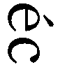
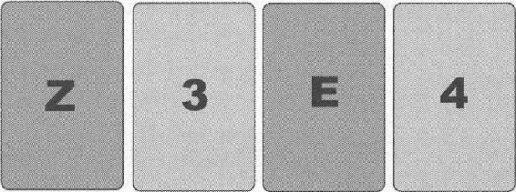
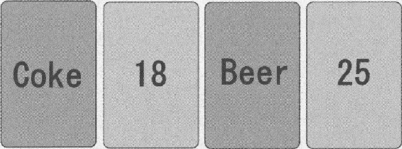

| デカルトの密室 | |
| 瀬名 秀明 | |
| 新潮社 (2008) | |
この作品の全部あるいは一部を無断で複製・転載・配信・送信すること、内容を無断で改変・改竄することを禁止します。また、有償・無償にかかわらず第三者に譲渡することはできません。
瀬名秀明
デカルトの密室
「あなたはわたしの本を読んだに違いない。（中略）あなたは徹底的に調べあげて、わたしの利口さがどういう種類の利口さかをつきとめて、それに応じて計画をたてたのでした。（中略）そしてまさにあなたの思ったとおりでした。わたしは（中略）まんまと引っかかったのです」
――エラリイ・クイーン作『最後の一撃』（青田勝訳）の中で犯人に向けて語られた名探偵エラリイ・クイーンの言葉
最初に説明しておいたほうがいいかもしれない。これは「知能」についての物語だ。なぜこの宇宙に知的な存在が誕生したのか、なぜその存在はこの世界を、この宇宙を、そして自分自身のことをもっと知りたいと願うのか、なぜ人々は知能に魅了され、知能に幻惑され、知能の謎に搦め取られて、ときに殺人まで起こしてしまうのか、そういったすべての謎についての物語だ。
知能とは何だろう？ ぼくは以前、日本で一番有名な辞書を検索してみたことがある。知能という項目には、「環境に適応し、新しい問題状況に対処する知的機能・能力」と書かれていた。何となく不思議な気がした。ひとつの謎を明らかにしようと思って辞書を調べたのに、その説明文を知ったことで次々と新しい謎が浮かんできたからだ。知能とは人間だけに存在するものなのか、それとも動物や植物にも存在するのか、それらはすべて同じ知能なのか、機械にもそれは存在するものなのか。探偵小説には約束事が幾つかある。必ず手がかりは探偵に、そして読者に明示されなくてはならない。犯行には凶器と動機が存在し、そこには謎を構築する犯人と謎を解き明かす名探偵が登場する。この物語の場合、動機は知能で、凶器も知能だ。手がかりは知能の中にあり、謎を解き明かすのもまた知能ということになる。
ぼくの名前はケンイチという。
どういった漢字をあてるのかは知らない。ユウスケも、レナも、ぼくのことをただケンイチと呼ぶ。だからぼくも自分の名前を、ケンイチという四つの音の繫がりで認識している。
ぼくはいつか、自分で小説を書いてみたいと思っている。それがぼくという自我を確立させる手だてなのだ。以前、自分というものが何なのかわからなくなってしまったぼくに、レナがそう諭してくれた。以来ぼくはずっと作家になる夢を抱いている。何度かぼくが書いた文章をユウスケに見せてみたこともあるけれど、いまのところ合格点はもらえていない。だからぼくはレナと一緒に暮らしながら、時間を見つけて挑戦を続けている。
ぼくは物語が好きだ。レナが小説を読んでいるところはほとんど見たことがないけれど、ユウスケは自宅にたくさんのミステリーやＳＦを持っていて、だから今夜のようにユウスケの家に行くたび、新しい物語を紹介してもらう。これまでたくさんの本を読んだ。一ページか二ページで終わってしまう短い物語もあれば、『指輪物語』のようにすべてを読み終えるまで何カ月もかかる長い長い物語もあった。ロボットが出てくる物語だって読む。ぼくが小説を書き始めた頃、アイザック・アシモフの「キャル」という作品を薦めてもらったことがある。ウェブからダウンロードして読んでみた。小説を書くことに取り憑かれた召使いロボットの話で、結末は酷いものだった。ぼくは不安に駆られて、ぼくならこんなことにならないよね、とユウスケに尋ねたが、ユウスケはただ笑うだけでまともな返事をくれなかった。
ユウスケはロボット工学者で、ぼくの開発者だ。そしてときどき小説も書く。ぼくたちが実際に遭遇した事件を、ぼくの一人称のかたちで小説に仕立て上げるのだ。ぼくはユウスケの本を読むたび不安を覚える。小説の中のぼくは本当のぼくではないからだ。ぼくの内面を書いているのはユウスケであってぼく自身ではない。ユウスケが書いた本の中で、ぼくはさまざまなことを思い、考え、自分の気持ちを言葉と仕草で表そうとする。もちろんそれらは実際にぼくが発した言葉で、実際のぼくの行動だ。ぼくは自分に心があると口に出していえる。嬉しさや哀しみ、怖れや怒りを表現できる。でもそれらはぼくに心があることを決して保証してくれない。なぜなら小説の記述者はユウスケだからだ。あくまでも本に書かれているぼくの心は、ユウスケがぼくの言動から推測したものに過ぎない。そのことがぼくをとても不安にさせる。でも、その不安は誰の不安だろうか？ ぼくに心は存在するのだろうか？
ぼくの心はどこにあるのだろう。
「――玲奈は？」
ユウスケが手元でキーパッドを操作しながらぼくに訊く。
「国際学会でイギリスのケンブリッジだって。だからメルボルンには来週にならないと行けないんじゃないかな」
「だとしたら決勝まで残らないといけないな。予選で敗退したら会場にいる意味がなくなる」
ユウスケはセットを終えると、ｉＢＯＴを操作して僕の座っているソファの横へ戻ってきた。光ファイバを経由してダウンロードが終了し、プラズマテレビのスイッチが入る。
「何ていう映画？」
ユウスケはぼくの問いかけに答えず、黙ってパッドを操作し続ける。メニュー画面が現れた。タイトルは《2001 : A Space Odyssey》だ。ぼくは自分の記憶を探った。聞いたことはあるが、原作は読んでいない。
ぼくはたちまち映画に引き込まれた。遥か昔の時代から一気に宇宙時代へと物語は進み、やがて奇妙なかたちをした宇宙船ディスカバリー１号が登場して、木星へ向かうまでの様子が映し出される。宇宙船は「ＨＡＬ９０００」と呼ばれるコンピュータによって制御されていた。
ふたりの宇宙飛行士がペースト状の食べ物を黙々と口に運びながら、ＢＢＣのニュースに見入っている。キャスターが宇宙船のミッション内容とハルの性能について解説を始めた。ぼくはそこで初めて画面から目を離し、隣にいるユウスケの横顔をそっと窺った。ユウスケはパッドを持ったまま、その手を軽く顎に添え、車椅子の肘当に凭れ掛かるようにして画面を見つめている。鋭い視線だった。ユウスケは何か難しいことを考えている。
そのとき、台詞が耳に入り、ぼくは画面に視線を戻した。すでにこの映画が自分と無関係でないことがはっきりとわかったからだ。画面の中で、キャスターがハルに質問している。《Incapable of error》とハルが答えた。
その穏やかな声がぼくの気持ちを搔き乱した。ハルは自分が完全無欠のコンピュータだと自慢したのだ。ぼくはユウスケの本を読むときのような不安を感じた。映画を観てこんな気持ちになったのは初めてのことだ。キャスターが乗員のひとりにインタビューする。
《彼と話していると、まるで感情があるように思えますね......。例えば私が彼の能力について質問したとき、彼は自分の正確さや完璧さに誇りを持っているかのように感じ取れました。ハルには本物の感情があるのでしょうか？》
《そうですね、あるかのように反応はします。もちろん話しやすいようにプログラムされているのですが、実際に感情があるかどうか、誰にも本当のところはわかりませんね》
ぼくの不安はさらに増していた。ここで議論されている問題は、そのままぼくにも当て嵌まる。ぼくは助けを求めるつもりでもう一度ユウスケを見た。だがユウスケは画面を真っ直ぐ見据えたままだ。
宇宙船の乗員がハルとチェスを始める。ぼくは数年前に起きた事件を思い出した。レナとぼくが山奥の四角い建物の中に幽閉され、トルコ人の格好をしたチェスロボットと対局する羽目になったあの殺人事件のことを。チェスに勝たなければ豪華客船の乗客をひとりずつ殺してゆくと宣言し、レナに勝負を挑んできたあのロボットのことを。
この夜、まだぼくは知らなかった。再びぼくたちがチェスに関する事件に巻き込まれることを。すでにぼくたちが「デカルトの密室」と呼ばれる見えない檻の中に閉じ込められていたことを。今度はあのチェスロボットのように簡単には済まなくなる。密室はひとつではない。はじめにユウスケが消え失せ、機械の密室に閉じ込められる。そしてレナとぼくたちは、さらにふたつの密室の謎を解かなければならなくなる。テレビの画面の中で、ハルは易々とチェックメイトを宣言する。宇宙飛行士がチェス盤の画面を見つめて降参する......。
「待って」
ぼくは思わず声を上げた。
「どうした？」
「画面を止めて。もう一度いまのところを見せて」
ユウスケがパッドを操作し、わずかに映像を戻す。チェスのシーンの冒頭から、再びユウスケは映画をスタートさせた。フランク・プールという名の宇宙飛行士が、ハルのコンソールの前に座り、モニタに映し出されたチェス盤を難しそうに見つめている。白いコマの側、つまり先攻がフランク、後攻の黒がハルだ。ぼくはハルのモニタに映し出された棋譜に集中した。どちらもショート・キャスリングをしている。完全に黒の側が優勢だ。たぶん白側はルイ・ロペスの定跡通りに進めようとしたのだろう。でも途中からクイーンの使い方を誤って、黒の攻撃を抑えきれなくなったのだ。ふたつのナイトとひとつのビショップで白のキングは攻め立てられているところだった。
《とりあえず、クイーンでポーンを取ろう》
フランクがそういった直後に、モニタ上のクイーンが点滅し、ふたマス下がった。
「Ｑｘａ６」
とぼくは素早く説明を入れる。映画の中ではハルが次の手を打っていた。
《ビショップでナイトのポーンを取ります》
ｈ３の黒ビショップが明滅し、斜め下へ下がる。Ｂｘｇ２。宇宙飛行士が何か呟き、おちつかなげに右手で顎を撫でている。
《いい手だな。うーん、ルークをキングの１へ》
Ｒｅ１。白のルークがひとつ左に移動する。すかさずハルが穏やかな声でいった。
《残念ですが、フランク、あなたの負けですね。クイーンをビショップの３へ。あなたのビショップがそのクイーンを取り、そのビショップをナイトが取ります。メイト》
「ほら、ここだ 」ぼくは画面を指差した。「おかしいよ、クイーンはビショップの３じゃない、ビショップの６へ移動してる！」
「ケンイチ、あそこは三行目だ。ちゃんとクイーンはビショップ列の三行目に来ている」
「違うよ！ ハルとこの人は説明的表記法で話しているんだ！ レナに聞いたことがある、昔はいまのような座標式表記法じゃなくて、説明的表記法っていうやり方で棋譜を表していたんだ。あそこは黒側から見たらＱ‐Ｂ３じゃない、Ｑ‐Ｂ６なんだ！」
映像が再びフリーズした。
先ほどまでの不安が一気に表に出てしまった。ぼくは興奮しながらユウスケに顔を向け、そしてはっとした。
それまでずっと映画を睨んでいたユウスケが、ぼくを見つめ返していたからだ。
「よくわかったな、ケンイチ」
「え......？」
「きみのいう通りだ。ハルは間違っている」
ぼくは混乱し、フリーズした画面とユウスケの顔を交互に見比べた。
「......知っていたの？」
ユウスケはアイボットを動かし、部屋の隅に据えつけられている本棚のところまで行くと、最後方の二輪で起立させた。ユウスケは下半身がうまく動かないので、いつも車椅子を使っている。アイボットはディーン・ケイマンという人が発明した特殊な車椅子だ。左右の後ろに車輪がふたつずつついていて、これが器用に形を変える。階段の昇降も簡単にできるし、椅子に座っている人を普通の大人と同じ目線まで持ち上げることもできる。二輪になってもアイボットは倒立振子の原理でバランスを取るので倒れることがない。ちょうどサーカスのピエロが一輪車で曲芸をするようなもので、同じくケイマンが開発した二輪スクーターのセグウェイもこの原理で走行するのだ。
ユウスケはうまくバランスを取って、本棚の上から一冊のペーパーバックを抜き出した。
「いまケンイチがいった通り、現在ではチェスの棋譜を表現するのに座標式表記法が採られている。８×８の升目をアルファベットのａからｈまでとアラビア数字の１から８までで示すやり方だ。それぞれ左列から右端の列までをアルファベットで、手前の行から相手側までを数字でね」
「白側から見て左下がａ１、右上がｈ８」
「そうだ。でもキューブリックがこの映画を撮ったときは説明的表記法が一般的だった。横の列を最初に配列するコマの名前で表現する。つまり『ルークをキングの１へ』というのは、最初にキングを置くｅ列の一行目にルークを移動させることを意味する。座標式でいえばＲｅ１だ」
ユウスケはアイボットをもとの姿勢に戻し、ペーパーバックをぼくに手渡す。ずいぶん古い本だ。表紙には『The 1000 Best Short Games of Chess』と書かれている。ユウスケはぼくの脇まで戻るともう一度パッドを操作し、問題の場面をリピートさせた。何か思い詰めたような調子で説明を続ける。
「ハルは『クイーンをビショップの３へ』といっている。ここだ。ほら、実際にハルはＱｆ３という手をモニタに映し出している。でも説明的表記法のＱ‐Ｂ３は、ケンイチのいう通り、座標式のＱｆ３ではないんだ。説明的表記法では白のプレイヤーも黒のプレイヤーも自分の見ている方向から行数を数える。白側のフランク・プールから見て三行目は、黒のハルから見て六行目に相当する。だからＱｆ３にクイーンを動かすには、ビショップの３ではなくて６といわなければならない」
クイーンの最後の一撃が、宇宙飛行士を万事休すへと追い込んだ。フランク・プールはモニタを指差していう。
《あ......、うん、そうらしいな。降参だ》
《とても楽しいゲームでした》
《こちらこそ》
フリーズ。宇宙飛行士はハルのモニタを見つめたまま動きを止める。ユウスケはリモコンを握ったまま、まだテレビを見つめている。まるで映画の中に閉じ込められたフランク宇宙飛行士のように。
「どうしてハルは間違ったんだろう」ぼくは呟いた。「さっきは完全無欠でエラーなんてあり得ないっていってたくせに」
ユウスケは深く息を吐き、目頭を指先で揉み、そして車椅子の肘当に凭れた。リモコンを右手で弄び、テレビに目を向けたまま静かにいった。
「ああ、そこが問題なんだ......。ハルは完全無欠のはずなのに間違えた。厳密にいえば、ハルの台詞を考えたキューブリック監督が間違えたのさ。スタンリー・キューブリックという男は恐ろしいほどの完璧主義者だった。こんな単純なミスを犯すはずがない。それにキューブリックはこの対局をチェスの本から取ってきている。付箋のページを捲ってごらん」
いわれた通りそのページを開くと、まさにハルたちが再現したゲームの棋譜が載っていた。一九一〇年にハンブルグで、ローシュとシュラージというふたりが対戦した記録だと解説されている。一五手目の後攻、確かにそこにはＱ‐Ｂ６と印刷されていた。妙手であることを示す〝！〟マークまでが丁寧にも添えられている。この本を見て台詞を考えたのなら、６を３と間違えるはずはない。
「この『２００１年宇宙の旅』には三つの間違いがあるといわれている。そのひとつは、ケンイチ、きみも見逃した最初の宇宙船のシーンだ。地球から月へシャトルが向かうとき、乗客がストローで宇宙食を飲む。無重力なら本当は飲み終えた後もストローに液体が残るはずだ。それなのに液体は吸い終わると下がってしまう。ふたつめは、たぶんシャトルが宇宙ステーションにドッキングするシーンだろうね。ステーションは地球周回軌道上に存在するはずなのに、地球以外の遠くの星にあたかも固定点があるような動きを見せている。そして三つめがチェスのシーンさ。もっとも、厳密にいえば他にもおかしなシーンはある。例えば太陽に向けて星々が一直線上に並ぶようなシーンが何度も出てくる。でも、それはおそらくわざとやった演出効果だろう......。いいかい、ケンイチ、この映画はたくさんの人に観られた。でもチェスの間違いについては、ハルの誕生日と設定されている一九九二年にある人が指摘するまで誰も気がつかなかった」
ぼくはユウスケの横顔を見つめた。ユウスケの真意がわからなくなったのだ。なぜこの映画をぼくに見せようとしたのか、なぜこの間違いにそこまで説明を加えるのかわからなかった。
「キューブリックは一九九九年に死んだ。生前に、このチェスの間違いを彼に問い質した人はいない。だから彼が意図的に６を３といい換えたのか、それとも単純に間違えたのか、もう確かめる手だてはない」
ぼくは慎重に尋ねた。
「それは......、そんなに重要なことなの？」
「ああ、重要だ」
ユウスケはいった。「ケンイチ、多くの人間が気づかなかったこの間違いに、きみは一度で気づいた」
映画はその後も続いた。
やがてハルというコンピュータは奇妙な振る舞いを示すようになり、次々とディスカバリー号の乗員を殺害していった。きっとチェスの間違いは、この惨事が起こる前触れだったのだ。あそこでハルの間違いに気づいていれば、宇宙飛行士たちはハルが故障しているのだとわかって全員助かったのかもしれない。でもフランクという男は聞き逃してしまった。だから彼らは殺されてゆくのだ。それとも、ハルはあそこで殺人を予告していたのだろうか？ おかしくなることをあらかじめ人間に伝えようとしていたのだろうか？ 最後のほうのストーリーはよくわからなかった。ぼくはちらちらとユウスケの横顔を窺ったが、ユウスケはずっと押し黙ったままで、ただ映画を見つめ続け、ぼくに顔を向けようともしなかった。
ぼくたちはエンドクレジットが出るまで、まったく会話を交わさなかった。
だが映画の途中で、ユウスケが一度だけ、小さな声で独り言を呟くのを聞いた。ぼくの両耳に埋め込まれたマイクがそれを捉えた。ぼくの回路が間違っていなければ、それはフランシーヌ、と聞こえた。
ぼくはその音節を記憶しておいた。そしてもうひとつのことも、なぜかとても大切だという気がして、記憶に留めておいた。
クイーンはビショップの３ではなく６だと。
（前略）以上のことは、人間の巧知がいかに多種多様のオートマットつまり自動機械を作りうるかを知る人たちには、少しも奇異には映らないだろう。この人たちは（中略）この人体を、神の手によって作られ、人間が発明できるどんな機械よりも、比類なく整えられ、みごとな運動を自らなしうる一つの機械とみなすであろう。
（中略）もしそういう機械があって、サルか何か理性を持たないほかの動物の器官と形状を持つとすれば、この機械がそうした動物とどんな点でも同じ性質のものでないと見分ける何の手段も、われわれにはあるまい。これに対して、われわれの身体に似ていて、実際上可能なかぎりわれわれの行動を真似る機械があるとしても、だからといってそれが本当の人間ではない、と見分けるきわめて確実な二つの手段が、やはりわれわれにはあるだろう。
――ルネ・デカルト『方法序説』（谷川多佳子訳）
「クイーンをビショップの６へ」
ぼくは息を呑み、顔を上げる。対局を始めてから、初めて相手の言葉がはっきりと耳に届いたのだ。それは見事な日本語で、一瞬その会場がイギリスのケンブリッジであることを忘れてしまうほどだったが、それは一四歳だったぼくが聞いたことのないような声でもあった。確かにそれは人間の喉を通り唇の間から発せられた声なのに、しっかりと抑揚もついていたのに、感情というものがまったく存在せず、鈴が鳴るような音韻の重なりに過ぎなかった。
あの声はその後もずっとぼくの耳の奥深くに残り続けることになる。ぼくはあの声を思い出し、ときおり自分で真似をしてみた。だがあのときの声色を再現することはできなかった。大学院に進学してから、ぼくは人間の咽頭を模したロボットを借りて、あるいは人間らしい声をコンピュータで合成して、他人に知られないようにこっそりと、記憶の声の再現に挑戦してみることになる。だがどんなに努力してもあのときの声を蘇らせることはできなかった。
ぼくは間違えていた。あの声をぼくは機械のようだと感じたが、実際は本物の機械とは異なっていたのだ。あれは確かに人間の声だった。どんなに機械が発達し、シミュレーション技術が洗練されても、生の人間の声と同じ効果をもたらすことはできない。人間の声には機械で再現できない何かがあるのだ。あのときの声は、心のない機械の声ではなかった。だが普通の人間の声でもなかった。
心のない人間の声だった。
ぼくは顔を上げた。ぼくの視界いっぱいに、対戦相手が飛び込んできた。息ができなかった。呼吸をしようと思っても、自分の喉と胸と肺がいうことを聞かなかった。瞬きさえできないぼくの両眼は熱く痺れ、ぼくは完全に相手に搦め取られた。
一二歳の少女は、真っ直ぐにぼくを見つめていた。ストレートの黒髪が照明の穏やかな光を受けて、冠のような天使の輪を反射させていた。少女の瞳は深い茶色だった。長い睫毛が瞬き、再びその目がぼくを射抜いた。少女は唇を開いていった。
「――メイト」
目覚めたとき、ぼくはかなり汗をかいていた。
ベッドから上体を起こし、ねっとりとした顔を素手で拭う。嫌な夢だった。
ベッド脇のアイボットに身体を滑り込ませ、浴室に向かう。冷たい水で顔を洗うとようやく生き返った。衣服を脱いでシャワーを浴びる。両手で重い脚を持ち上げてバスタブの中に入れ、縁に座る格好でシャワーを使う。海外のホテルの構造はぼくのような人間にも親切だ。
日本の学会ではないのだから、無理にスーツを着込む必要はない。半袖でいいと判断し、ごく気軽なポロシャツを選ぶ。部屋のカーテンを開けると、目映い朝日が射し込んできた。手早く準備を済ませ、モバイルＰＣをアイボットの収納ケースに突っ込んで、ぼくはホテルの部屋を出た。
メルボルンに来るのは久しぶりだった。いつの間にかヤラ川の周囲は再開発が進んで、巨大なカジノが営業している。川に沿って続くショッピングモールはちょうど、店舗を入れ替えている途中なのか、工事中のところも多い。ぼくはまだ閑散としているモールを進み、店を開けているスターバックスでテイクアウトのサンドイッチとコーヒーを買い求めた。
「尾形さん！」
店を出たところで突然名前を呼ばれ、ぼくは振り返った。息を切らしながら笑顔でこちらに走ってきたのは、ぼくの担当編集者の奥山友美だった。
「ホテルへ迎えに行ったら、もう出たっていうから」
「食べながらロビーで待っていようと思ってたんだけど」
「ホテルのビュッフェで食べればいいのに。それくらいこっちから取材費で出しますってば」
「研究と小説は別だよ。学会期間中まで出版社のお世話になるわけにはいかない」
「そういうところが研究者って杓子定規ですね。ちょっと待っていて下さい、私も買ってきます」
そういって奥山も店内に入ってゆく。ぼくは熱いカプチーノを一口飲み、アイボットの向きを変えて、テラスのテーブルに就いた。
奥山はぼくに小説を書くことを持ちかけてきた初めての編集者だ。もともと一般向けの科学雑誌の編集部に所属していて、その縁で何度かロボット工学関係の総説を書かせてもらったことがある。普段はあまり科学の話をしないが、原稿に対しては常に的確なサジェストをしてくれた。送稿すると必ず感想を一言メールで書き送ってくれるのも有り難かった。多くの学術系編集部は、もっと無機質に仕事を進めるものだ。しかし少なくとも奥山友美という編集者には、ぼくの原稿を読んでくれているという実感があった。その後、雑誌の廃刊に伴って異動になり、奥山は文芸編集部に配属された。これでお終いかと思っていたが、奥山はその部署の名刺を携えて再びぼくの研究室に姿を現した。ちょうどレナとケンイチが初めて事件に巻き込まれ、マスコミが注目していた時期だった。
「どうしてぼくに小説を？」
ぼくはそのとき、予想外の申し入れに驚いた。確かに小説を読むのは好きだが、生まれてから一度も自分で小説を書いてみたいと思ったことはなかったのだ。
変にセンセーショナルな方法で事件の体験談を公表することにも抵抗があった。独立法人化の波が押し寄せ、パラダイムの転換が叫ばれていても、大学という社会は未だに閉鎖的だ。研究者が小説を書くなどという行為は、往々にして周囲から不真面目な証拠と捉えられる。それに商業誌に書くこと自体が研究者にとっては「お遊び」なのだ。下世話な刺激だけを目的に奥山が原稿を依頼しようとしているなら、はっきりと断らなければならない。だが大学のオフィスで、学生たちが側にいるその席で、奥山がごく自然に口にした答は、ぼくの予想をまたしても超えていた。
「気づいていないかもしれませんが、尾形さんの文章はセクシーなんですよ」
未だにぼくにはその意味が理解できない。
「まだ少し時間がありますね。ここで食べてしまいませんか？」
奥山が自分のトレイを持ってきて、ぼくの前に座った。ナプキンを広げながら周囲を眺め渡す。宇宙まで一気に抜けてゆきそうな快晴だった。
「いいところですね」
「メルボルンは初めて？」
「シドニーなら何度か行ったことはありますけどね」奥山はサンドイッチを口に運びながらいった。「でもどうして今回の大会はメルボルンに？ これまではケンブリッジだったじゃないですか」
「大手のスポンサーがついたってことさ。今年の実行委員長が色気を出したんだよ。ロボカップみたいにこの大会も事業展開しようっていうんだろ」
「ロボカップならロボットが動くから、まだわかりやすいですけどね......。人工知能でも同じように盛り上がるかどうか......」
奥山はそういいかけて、ぼくの肩越しに遠くへ視線を向けた。
「そうか......、あのコンベンションセンターも《プロメテ》グループの持ち物ですね」
釣られてその視線の方角に目を向ける。今回の「チューリング・プライズ」の会場となる建物の上に、緑色の大きな旗が翻っていた。ごつごつした岩と砕かれた鎖のマークが描かれている。軍事ロボットや医療用ロボットのシステムＡＩの開発で富を築いた《プロメテ》の社章だ。もともとはオーストラリアで家庭用電化製品の共通ＯＳを開発していた会社だが、資本金の一部を提供していたアメリカのベンチャーがたちまち成果を上げ、逆に親会社を呑み込むかたちとなった。そのベンチャーの立役者である現《プロメテ》グループ会長は日本人だと聞いている。
チューリング・プライズとは、二〇世紀半ばにコンピュータ科学の礎を築いた天才数学者アラン・チューリングを記念して、一九九〇年から始まったＡＩ開発のコンテストだ。参加者はほとんどが大学の研究者だが、最近はベンチャー企業の参加も増えつつある。少し紛らわしいが、コンピュータ科学分野で功績のあった人に贈られるＡ・Ｍ・チューリング賞とは別のものだ。
チューリングはＡＩ研究の先駆者でもあった。彼が生涯をかけて追求した謎は、生命と機械の関係だった。生命は計算できるか。機械と生物はどこが違うのか。知能は機械によって実現し得るか。生命の増殖は機械でもなし得るか。彼は現在でもぼくたち研究者の心を摑む本質的な問題を提起し続けたのだ。大戦中は連合軍のために暗号解読機を開発し、また一方ではゲイであるが故に迫害も受けた。一九五四年に謎の自殺を遂げている。
彼は一九五〇年の論文「計算機械と知能」で、機械は考えることができるかという問題を深く考察している。その際に彼が判定方法として採用したのが、後に「チューリング・テスト」と呼ばれることになる模倣ゲームだった。例えばここに、男性Ａと女性Ｂ、そして質問者Ｃがいるとしよう。ＡとＢは質問者Ｃから顔が見えないようにそれぞれ別の部屋に入っており、Ｃとはテレタイプを通じて文字で話ができる。質問者Ｃはこの状況で、どちらの部屋に女性Ｂが入っているかを当てるのだ。「あなたの髪の長さを教えて下さい」と質問したとき、女性Ｂは正直に答えるだろう。だが男性Ａはウソを吐いて、女性のふりをするかもしれない。
このゲームで男性Ａを機械に置き換えたらどうなるか、というのがチューリングのアイデアだった。仮に機械が人間と区別できないほど見事に受け答えするのなら、その機械は人間と同じように考えていると見なしてよいだろう、というわけである。このチューリング・テストの考え方はその後のＡＩ研究に大きな影響を与え、ＡＩを評価する際の指標のひとつになった。
チューリング・プライズは、このチューリング・テストを実際にコンテストとして開催する。審査員はＰＣに向かい、回線を通じて参加者と文字で会話をする。相手はＡＩかもしれないし、本物の人間かもしれない。話題の枠に制限は存在せず、天気の話から昨夜のサッカー試合の話まで何を喋ってもよい。審査員はこのチャットを通じて、相手がどれだけ人間らしいかを評価する。得点のもっとも高いＡＩが、その年のグランプリとなるわけだ。
チューリングはケンブリッジ大学のキングズ・カレッジに入学し、数学を専攻した。ここで彼はルートヴィヒ・ヴィトゲンシュタインと出会っている。このコンテストはそのキングズ・カレッジに現在勤めている教授たちが、私財を初期資金として提供するかたちで始まった。マンチェスター大学やプリンストン大学といった、チューリングが生前に関わりを持った大学の研究者たちも何人か協賛している。毎年の勝者には賞金二〇〇〇ドルとブロンズ像が贈られるが、それ以外はほとんど研究者たちの手弁当によって賄われているのが特徴だ。ＡＩとの会話で評価を決定するのだから、基本的にはホストコンピュータと通信機能とインターフェイスさえあれば事足りる。コンテストの結果はリアルタイムでサーバからインターネット上に発信されるが、これも研究者たちのボランティアによるものだ。去年まではキングズ・カレッジの狭い研究室の中にＰＣを何台も並べ、そこに審査員たちが集まって、短期間で評価を下していたのである。
それが今年になって突然《プロメテ》が巨額の寄附を申し出てきて、キングズ・カレッジの研究者たちを面食らわせた。《プロメテ》は決して強要しなかったが、結果的に事務局はメジャー化への誘惑に押し流された。メルボルンが開催地に選ばれたのも、《プロメテ》が会場の調達やマスコミ対応を含め全面的にバックアップすると提案してきたからだ。それに晩夏のオーストラリアはバカンスにちょうどいい。
「仕掛けが派手になるだけさ。やることは去年までと同じだ」
ぼくは肩を竦めて見せたが、奥山もその裏に込められた意味は感じ取っている様子だった。やることは確かに去年までと同じだ。しかし去年と今年では違うことがひとつある。まだはっきりしたわけではないが、参加者の間ではすでに密やかな話題となっている。
「尾形さん」奥山はいった。「このコンテスト、いつかはゴールドメダルが出ると思いますか」
ゴールドメダルとは、いつか本当に人間と区別がつかないほどのＡＩが登場したときに贈られる賞品で、このチューリング・プライズのシンボルでもある。コンテストが初めて開催された年に、私財を提供してくれた教授たちの好意によって鋳造されたもので、18金のメダルの表にはチューリングの顔と彼の言葉「Can machines think?」が刻まれている。さらにメダルの獲得者には、副賞として一〇万ドルが贈られることになっている。
これまでゴールドメダルに値するＡＩをエントリーさせた研究者はいない。それどころか現在のレベルはそれより遥かに下だ。これまでの優勝ＡＩも他のＡＩに比較して人間に近いというだけで、トータルスコアを見ればどれも人間から程遠い知能しか実現できていないことがよくわかる。
「どうかな......。ぼくのケンイチだって、厳密にいえばチューリング・テストをまだまだクリアできない。でも、希望はある」
「希望？」
奥山の目が、科学誌の編集者のそれに戻った。「どんな希望ですか？」
いや、希望ではない。ぼくは自分の言葉を心の中で打ち消した。それどころか、ぼくは根拠のない不安を抱いていた。おそらく奥山も、そしてすでに会場に入っているであろう他のコンテスト参加者たちも、ぼくと同様にその不安を抱いているに違いなかった。
《プロメテ》の介入によって、今年からルールが大幅に変更された。そこに裏があると感じている参加者は、ぼくだけではないだろう。
ゴールドメダルに相当するＡＩが現れるのは、今年かもしれない。
まだコンベンションホールの中は閑散としていた。予選第一日目の朝だ、入口付近に設けられたチケットブースも、プレスへの対応方法がまだ定まっていなかったらしい。奥山は若い受付の女性に自分が出版社の人間であることを何度も説明したが、入場無料のプレスカードを受け取るまでにかなり手間取った。
入口の扉を開けると、ホールの全体が目に飛び込んでくる。ぼくたちはゆっくりと中に進んでいった。
まだ会場はセッティングの途中だった。人の姿は少ない。いちばん奥の壁には巨大なスクリーンが掲げられ、誰かのＰＣのデスクトップ画像が投影されている。その下にはコンパートメントで仕切られた小さなブースが幾つも並んでいた。おそらくＡＩと一緒に審査される「共謀者」役のボランティアたちが入る小部屋だろう。それぞれのブースの壁には小さなモニタが埋め込まれ、コンピュータ・グラフィックスで製作された人間の顔や《プロメテ》のＣＭが映し出されているのが見えた。中央の広い通路を進みながら左右を見渡すと、左側には今年から始まった知能ロボットの競技ブースが準備されつつあり、階段式の見学席が組み上げられていた。右側はエントリーグループの控え室だろう、こちらもコンパートメントで細かく区切られ、何人かがそれぞれのＰＣを前にして作業をしている。
そしてホールの中央部には、幾つかの机とスクリーンが無造作に並べられていた。チューリングの顔をプリントしたＴシャツを着たスタッフたちがパイプ椅子やＰＣを並べている。その中にはぼくの見知った顔もあった。
「お金を掛けても、やっぱり学会は学会ですね」
半ば拍子抜けした様子の奥山が、そういって微笑を浮かべる。ぼくは苦笑した。確かにイベント会場全体を覆う商業的なデザインの中で、研究者たちはそれに馴染めず往生しているようにも見える。《プロメテ》が幾らプロモートしても、多くの研究者にとってはただ居心地が悪いだけなのだ。
通路を半ばまで進み、審査スペースまで辿り着くと、何人かの知人が笑顔で駆け寄ってきてくれた。アメリカやヨーロッパ各地から集まったＡＩ研究者たちだ。ぼくは普段のように握手を交わし、そして奥山を紹介した。彼らもぼくが小説を書いていることは知っているが、海外に翻訳されているわけではないのでいまひとつその実感は摑めていないはずだ。考えてみればこうして編集者を伴って海外の学会に出席するのは初めてのことである。
「俺たちの顔写真が日本の文芸雑誌を飾るわけか。サイファイの雑誌かい？」
「いいえ、総合雑誌ですよ。サムライの話も、ラヴストーリーも、ホラーも、クライムフィクションも、何だって載ります」
「ＡＩの話の隣に恋愛小説とは、相変わらず日本はポップな国だ」
ひとりがそういって笑う。ぼくはいった。
「ところで、プレスリリース一枚すら用意していないのかい？ 本戦になったらマスコミが殺到するんだろう？ 幾らなんでも準備不足だ」
「そのへんは《プロメテ》に任せているよ......。いまのところはあれで精一杯だ」
ぼくは通路脇に置かれている長机へとアイボットを移動させた。協賛企業や大学のパンフレットが無造作に並べられている。その一角に、素っ気ないレターサイズの紙があったので手に取ってみると、ウェブでも入手できる大会規則だった。
「日程表くらいプリントアウトしたらどうなんだ。不親切だな」
そう呟いて、隣に置かれたホワイトボードに目を向けた。〝注目！〟と大書されたタイトルの下に、審査のスケジュール表が殴り書きされている。その汚い字体に見覚えがあった。エジンバラ大学人工知能応用研究所の所長のイアン・ブレシュキンに違いない。チューリング・プライズの運営委員のひとりだ。知識工学の大家で、一般化フレーム問題の研究者としても名が知られている。ぼくもロボティクスの研究を始めた当初からずいぶん世話になっている。
だがスケジュール表のいちばん最後にあの名前を見つけて、ぼくは頰が強張るのを感じた。
「どうした、ユウスケ」
肩に大きな手が置かれる。ぼくは振り返った。白髪混じりのイアンがぼくを見下ろしていた。
普段なら陽気にジョークのひとつでも飛ばすイアンだが、その表情は険しい。彼が何を考えているのかすぐにわかった。
「これは......、本当なのか？」
「少なくともエントリー資格は満たしている」イアンは人目を憚るかのように低い声で答えた。「真偽のほどはどうあれ、フランシーヌと名乗る人間がやって来ることは間違いない」
「だがフランシーヌは死んだはずだ。一〇年前に」
ぼくは奥山のほうを窺った。他の研究者たちと話しているが、一瞬こちらに目を向けるのがわかった。ぼくがフランシーヌの名を見て動揺したことに、おそらく気づいたのだろう。
科学誌の編集をしていたのなら、奥山もフランシーヌ・オハラの名をどこかで聞いたことがあるはずだった。一二年前、わずか二一歳で凄まじい強さのチェスプログラムを発表し、世界中のＡＩ研究者の度肝を抜いた女性だ。その後ユビキタス・コンピューティングのシステムと人間の脳の構造を比較検討した画期的な論文を発表し、そこで示されたアイデアは当時のアフォーダンス理論やオートポイエーシス理論、そして近年流行しているグラフ理論にも計り知れない影響を与えた。社交性に欠ける性格だといわれ、学会にもほとんど参加しなかったためか、彼女の才能はある種の脳疾患と結びついているのではないか、などと根拠のない憶測を吹聴する者もいた。おそらくあのまま仕事を続けていれば、最年少でフィールズ賞を攫っていただろう。だが一〇年前、事故に見舞われたとの未確認情報だけを残し、家族と共に世間から完全にその姿を消した。彼女の父親はあのＡＩ研究者の小原敦彦で、母親はフランス人だった。
「エントリーされたプログラムは？」
ぼくも声を潜めていた。このコンテストに参加するためには、所定の要項を満たすエントリーシートを事務局に送り、同時にＡＩプログラムそのものも提出しなければならない。大会当日に若干のパラメータを変更することは許されているが、基本的には事前に完成させたプログラムで審査を受ける。大会ではすべてのプログラムを主催者側のサーバに組み込んで実行するためでもあるが、この手続きはエントリーの諾否を決定する上でも不可欠なものだ。
「素晴らしい作品だ。今回のルールを完璧に活かして、しかも我々の思いもしなかった技を見せてくれる。コンセプトの勝利だよ」
イアンの唇の端は僅かに震えている。彼は自分が書いたホワイトボードの表に視線を落とした。フランシーヌの名と、彼女がエントリーしたプログラムの名がそこには記されていた。《ＧＡＬＡＴＥＡ》――キプロス王のピグマリオンが美の女神アフロディーテに似せてつくり上げた乙女像だ。後にアフロディーテによってその像は生命を与えられ、ピグマリオンの妻となる。
彼は躊躇ってから、さらに声を低めて言葉を続けた。
「私もゴシップは好きじゃないが......、最近になって噂が回って来た。彼女は何かの事故に遭って両親を失ってから、《プロメテ》の現会長に引き取られたらしい」
「何だって？」
「今回《プロメテ》が嚙んできたのも、ルールが変更されたのも、彼女を再起させるためのお膳立てだという話さえある」
「しかしいったい......」
「見て」
不意に、奥山が声を上げた。
すべての雑音が消えた。
誰もがその場で足を止め、驚きの表情で入口を見つめた。ぼくとイアンも同時に顔を向けた。
場内の空気が振動した。皆が同時に息を呑み、ひゅっ、という鋭い音が人々の喉から一斉に発せられたような気がしたのだ。
黒髪の女性が、一台の車椅子を押しながら、静かに場内へと進んでくる。車椅子に乗っているのは同じく黒髪の女性だった。違う。そうではなかった。ぼくは自分の目が信じられず、思わず頭を振ってしまった。ふたりは同じ姿をしている。同じく淡いグレーのブラウスを着て、同じく黒髪を肩まで垂らしている。だが同じではない。一方は人間だがもう一方はそうではない。
車椅子を押しているのはヒューマノイドだ。
精巧につくられたヒト型ロボットだ。
「......フランシーヌ・オハラ」イアンが喘いだ。「彼女だ」
弾かれたように、場内がざわめき立つ。控えのブースからも次々に人が顔を出し、中央通路へと集まってくる。だが誰もフランシーヌに近づこうとはしなかった。半ば怯え、半ば好奇心に駆られつつ、誰もが遠巻きに彼女の動きを見つめている。
ロボットは恐ろしいほどフランシーヌに似ていた。その全身はフランシーヌの体格そのままに華奢だったが、それでも見事に運動が制御されている。細い脚腕にアクチュエータを仕込み、しかも全身の重量を支えるのは技術的にも極めて困難であるはずなのに、このロボットの開発者は難なくそれを克服している。さらにシリコン樹脂で造型されたその皮膚は、フランシーヌの肌の色を忠実に再現していた。瞳もおそらくシリコン製だろうが、僅かに濡れたように光り、しかも微妙に眼窩の中で動いて、ぼくの顔をずっと見続けている。ぼくは気づいた。ロボットは彼女の瞳の動きを再現しているのだ。フランシーヌのわずかな瞳の動きにも反応して、彼女が視線を向けるぼくの顔へぴたりと焦点を合わせてくる。
中学生のとき、ケンブリッジで会ったときの記憶が一気に蘇ってくる。フランシーヌはあのときと同じように、真っ直ぐぼくを見据えながら進んでくる。ぼくは金縛りにあったかのように動けなくなった。ほとんど化粧していないその顔は、だが恐ろしいほど白く、そして整っていた。左右の眉が細く長く伸び、まるで鳥の翼のように広がっている。唇はうっすらと色づき、顎は小さく、その下には滑らかな曲線を描く首筋が続いている。フランシーヌは無表情だった。両手を車椅子の肘当に乗せ、両足を揃えたまま、ぼくのもとへと進んでくる。ぼくは搦め取られていた。何もできなかった。フランシーヌの瞳が近づいてくる。その瞳が一瞬光るのをぼくは感じた。フランシーヌは両眼にコンタクトレンズを入れている。いや、普通のレンズではない。瞳孔の周囲をぐるりと囲む虹彩の部分が、蛍光灯の光を反射してときおり銀色に輝く。何かの極微小センサが埋め込まれているのだ。あのレンズでロボットに眼球運動を指示しているのだろうか。彼女の長い睫毛があのときと同じように瞬く。
ぼくのすぐ前まで来て、車椅子が停まった。
フランシーヌの唇が開いた。
「尾形祐輔ね？」
日本語だった。
その声が、ぼくを想像以上に揺さぶった。咄嗟に自分の胸元を摑む。心臓が激しく鼓動している。忘れてはいなかった。声変わりで若干低くなっているが、それはぼくの脳に刻まれたあの記憶と同じだった。フランシーヌは表情を変えず、大きな目を見開いたまま繰り返した。
「あなたは尾形祐輔ね？」
ぼくは答えられなかった。ただ喘ぐような曖昧な声を出すことしかできなかった。だがフランシーヌはそれを肯定の合図と受け取った。
フランシーヌの車椅子が、何の前触れもなく間合いを詰めてきた。ぼくのアイボットのすぐ横まで近づくと、フランシーヌが腕を広げ、ぼくの後頭部を摑んだ。目を細めたフランシーヌの顔が接近してくる。
フランシーヌの唇が、ぼくの唇に重なった。
ぼくは動けなかった。フランシーヌの唇は乾いていた。そのかたちがはっきりと皮膚を通して伝わってくる。彼女の静かな鼻息が頰にかかった。そのときぼくはようやく知った。フランシーヌは生きている。
ゆっくりと、彼女は唇を離した。
彼女は口紅をつけていなかった。ぼくの唇には何も残らなかった。化粧の欠片も、僅かな体液さえも。ただ触れた記憶だけがぼくの皮膚の表面に留まっている。
彼女はじっとぼくの目を見つめていた。その瞳の色は、あのときと同じ深い茶色だった。その瞳が、一瞬瞼で隠れた。
「一ノ瀬玲奈はあの人？」
唐突に、ロボットが片腕を上げ、左の方角を指差す。周りを取り囲んでいた人たちが一斉にその方向へと視線を向けた。
その先にいたのは奥山だった。自分のことだとわかったのか、奥山がびくりと身体を震わせる。
「......違う」ぼくはようやく声を出した。フランシーヌと触れた唇が、ぎこちなく動いた。「彼女は違う。一ノ瀬玲奈じゃない」
「誰なの？」
「プレスだ。日本からこのコンテストを見に来た編集者だ。玲奈じゃない」
「あなたのケンイチというロボットはどこにいるの？」
フランシーヌが間髪を入れずに質問してくる。ぼくは戸惑いながら答えた。
「ここにはいない」
「会場に来ると聞いているわ」
「まだ来ていないんだ」
「いつここに来るの」
「決まっていない。たぶん来週にならないと......」
「はっきりしなさい」
ぴしり、とフランシーヌが声を放つ。
「あなたは前にも誤魔化そうとした。あなたは私のことを恐れていた。それなのに恐れていないといい張った。二〇年経ってもあなたは同じ過ちを犯そうとしている」
気圧されながら、だがぼくは懸命に自分を落ち着かせようと努めていた。シャツの胸元をもう一度強く握りしめ、深く息を吐いて動悸を鎮める。フランシーヌはまったく表情を変えなかった。ただ瞬きを繰り返し、口元を動かすだけだ。二〇年の歳月が確実に流れているとはいえ、その顔は当時も感じた人形のような美しさを少しも失っていなかった。あまりにも肌が白いので血液の色が頰の内側から透けて見える。鼻筋も、目尻も、唇も、どれも完璧で、僅かな歪みさえない。人間の顔というものはどんなに美形であってもどちらかに歪み、それが人間らしい特徴を醸し出すものだが、フランシーヌの顔にはどんなに探してもそれらしき非対称性が見当たらなかった。ぼくは彼女の顔と車椅子の後ろに立つロボットの顔を見比べた。彼女の顔はＣＧが合成した架空の人相にも似てあまりにも人間離れしている。だがロボットからは感じ取れない何かがやはり彼女の顔には存在していた。それが何なのかぼくにはわからなかった。存在感なのか、生命力なのか、それとも......。
「あなたの本は読んだわ」
突然、フランシーヌが話題を変えた。
「私には小説という娯楽が理解できない。あなたの書いているものがなぜ商業出版されるのか、私にはわからない。でも私はあなたの目的とするところは理解できる。あなたが小説で人を楽しませようとしていることは理解できる」
幾らか声色が落ち着いたが、彼女の表情は変化しない。
「登場人物たちの役目もわかるわ。物語の中に登場するキャラクターはすべて、作者によって操られている。キャラクターには作者の意図が投影されている。だから知能を持った存在が物語を紡ぐ限り、知能を持つ私はキャラクターの行動を理解することができる」
「......何をいいたいんだ？」
「あなたはこれからも小説を書くのね？」
「いったい......」
「答えなさい。あなたはこれからも小説を書くのね？ 何か事件が起これば、レナとケンイチとあなたの身辺で事件が発生すれば、あなたはそれを題材にして小説にするのね？ その小説は出版されるのね？ あの編集者の手によって？」
フランシーヌはぼくを見つめたままだ。ロボットが再び左腕を真っ直ぐ水平に伸ばし、その人差し指で奥山を指す。ぼくは彼女の意図を探りながら慎重に言葉を繫ぐ。
「それはわからないよ。ぼくが書きたいと思っても編集者が承諾しなければ......」
フランシーヌはそれまでとまったく同じ口調でいった。
「ここで人が死ねば、あなたはそれを小説に書くのね？」
ぼくは絶句した。
二〇年ぶりの会話にしては、あまりに常軌を逸している。
「――私には、他人の心というものがよくわからない」
周りを取り囲んでいた人々が、わずかにざわめいた。急に彼女の言葉が日本語から英語に切り替わったのだ。
「もちろん他人に心というものがあり、自分の心がそれをうまく理解できない欠陥を抱えているということは理解している。これは病気ではないわ。いま欠陥という言葉を使ったけれど、その使用法が正しいのかどうかはわからない。それに他者の心を理解する能力が欠如していることは病気ではない――なぜなら他者に本当に心が存在するかどうかなど、誰にも立証できないのだから。心という言葉の定義を変更するならば、むしろ私以外の人間のほうが欠陥を抱えていることになる。あなたたちは機械の心を理解することができない」
ロボットが動き出した。フランシーヌの車椅子を押してぼくの脇から離れ、奥のスクリーンへと彼女の身体を向ける。そのときぼくは初めて気づいた。彼女の車椅子の後部に、古ぼけた革製のトランクが括りつけられている。ひと抱えもある大きさで、彼女の身体つきとはまるでアンバランスだった。不意に突飛な連想がぼくの頭に浮かんだ。一七世紀の哲学者デカルトには、亡くなった五歳の愛娘フランシーヌとそっくりの人形を、常にトランクに入れて持ち歩いていたという伝説がある。まさかあの中には――。
「機械は考えることができるか？」
だがぼくの妄想は中断させられた。フランシーヌが声を上げる。
「この問題を考察するためには、『機械』及び『考える』という言葉の意味を定義することから始めるべきである。その定義が、言葉の標準的な用法を可能な限り反映するように工夫を凝らすことはできるが、そういった態度は危険であろう。仮に『機械』及び『考える』という言葉の意味が、通常の用法を考察することによって見出されるのであれば、この問題の意味と解答はギャラップのような統計的調査によって探求されるべきものであるという結論にならざるを得ない。しかしその結論は馬鹿げている。私はこのような定義を企てる代わりに、問題そのものを別の問題で置き換えることを提案しよう ――」
フランシーヌが一瞬の淀みさえなく硬質な言葉をいい立ててゆく。チューリングの論文だ。ぼくはイアンに視線を送った。イアンも気づいている。フランシーヌが捲し立てている言葉は、このコンテストの基となったアラン・チューリングの論文の冒頭そのままだった。
フランシーヌが首を動かし、ぼくたちを見渡す。寸分違わぬ動作をロボットが再現する。
「――あなたたちはこのチューリングの前提を厳密に議論したことはある？ チューリングは人間が思考できる存在であることを前提とした。しかしあなたたちはその前提を真剣に考察してみたことはある？ それとも、人間の考える状態を考えると呼ぶなどという同語反復に逃げ込むつもり？ 人工知能を研究しているつもりの紳士各々方、『機械は考えることができるか』の前に、まず『人間は考えることができるか』という問題を如何に考察する？」
ロボットがイアンを見据えた。フランシーヌの首の動きとそれは完全に合致していた。
「イアン・ブレシュキン、用意を」
フランシーヌは強い声で命じた。イアンが啞然とした表情で周りの者たちに助けを求める。だがフランシーヌはイアンのことなどまったく意に介さず続ける。
「ひとつは、何でもいい、今回のコンテストにエントリーされているＡＩをサーバに用意しなさい。もちろん私以外のプログラムをね――。そしてあそこの部屋に」
ロボットが奥のブースを指差す。数秒の間を置いて、その指先が次にぼくを指した。
「尾形祐輔、あなたとそしてフランシーヌ・オハラ、すなわち私が入る。ＡＩと尾形祐輔、フランシーヌ・オハラ、この三つの知能がサーバを通じて審査員と文字入力情報を交換し合う。そして」
フランシーヌとロボットが視線を泳がせる。
「あなたたち審査員は、ＡＩと尾形祐輔、フランシーヌ・オハラ、この三つの知能のうち、どれがもっとも機械らしいかを点数で評定する。このチューリング・プライズの評価方法をそのまま裏返せばよいのだから簡単でしょう？ 紳士各々方の暇潰しにはもってこいのゲームだわ」
そしてフランシーヌはぼくに視線を戻し、有無をいわさぬ口調でいった。
「さあ、尾形祐輔、部屋の中へ」
×年×月×日 2:38AM
昨日に引き続き、小原家の16ミリフィルムを調査する。まず新しく入った情報を記録しておく。×年×月×日（月）11:00PMより――すなわちいまから二〇年以上も前のことだ――×××局にて小原敦彦に関するドキュメンタリー番組が放映されている。小原の日常生活も追いつつ研究者の創造力の源泉を探るといった内容であり、今回発見されたフィルムはその素材であったことが判明した。世界的な注目を集めていたとはいえ、まだ若手だった小原にこれほどの密着取材を敢行したとは驚嘆に値する。だが、当時のテレビドキュメントの大半はフィルムカメラで撮影されていた。アメリカではビデオカメラによる取材システム（ＥＮＧ）が導入されつつあったが、日本での普及は一九八〇年代を待たねばならなかった。小原はこれらの映像が愛娘の心の構造を探る糸口になると直感し、放送後に製作会社から譲り受けたのかもしれない。あるいは第三者に見せられない映像が記録されてしまったのか。むろんこれは私の憶測に過ぎない。これまでと同様、素材を視聴しつつ口述筆記し、後で文章を修正する。
どこかの和室で宴会をしている。全部で二〇名ほどだ。中央の壁際に小原と妻のクラリス、それにフランシーヌの姿が見える。昨日調査した素材とほぼ同時期に撮影されたものだろう。フランシーヌはまだ五、六歳のはずだ。黒髪を結い上げ、大きな菖蒲の絵柄が入った浴衣を着込んでいる。周りの大人たちは上機嫌で酔っているが、彼女はまったく他者とコミュニケートしていない。ただ一心に手元で何かを玩んでいる。残念ながら座卓の影になって手元は見えない。
通常の和室のつくりではなさそうだ。既視感を覚えるが、はっきりと場所の名をいい当てることができない。天井は低く、部屋の両脇は障子戸だ。障子の向こうには提灯が並び、その赤い火がゆっくりと揺れている。外では微風が吹いているということだ。卓上にはほとんど料理が残っていない。宴会が始まってから時間が経っているのだろう、豪華な舟盛の器もほぼ空の状態だ。小原は相好を崩しながら、手前の男に酒を勧めている。ここに参集しているのは小原の研究室の同僚とその家族だろう。何人か見覚えがある。
カメラが小原へと寄ってゆく。小原はまだ若い。半袖のシャツから覗くその腕には、贅肉のかけらも見当たらない。小原は少々飲み過ぎており、顔を朱色に染めている。
フレームの中に、フランシーヌの姿が映り込む。まるで百貨店の人形だ。胸元に大きく咲く菖蒲にも、涼しく後方へ伸びる襟首にも、まったく皺や汚れの痕跡は認められない。縁日ではしゃいで着崩れすることなどフランシーヌにはあり得なかったのだろう。いま以上に肌の色が淡く見えるのも、決して照明のためだけではあるまい。
彼女はまったくの無表情だ。いまカメラの前を子供がふたり駆けていったが、ほぼ同年齢の子供たちが騒いでも、そちらへ目線を向けようとしない。彼女の目の前にある皿には、刺身の切れ端が幾つか残っている。箸を見てもほとんど料理に手をつけていないことがわかる。小原がその様子を知りつつも愛娘に声を掛けようとしない。これは他のフィルムでも同様に窺えることだ。小原は愛娘の心の状態を察し、普段から放置しておくのがよいと判断していたのかもしれない。そのほうが娘にとって心地よい状況なのだと知っていたのかもしれない。カメラは小原の顔を中心に追い続けており、フランシーヌの姿はしばしばフレームから外へはみ出す。まだ手元の様子は映らない。
唐突に、小原たちの背後の障子が紫色に染まった。わずかに遅れて地響きのような低い音が鳴る。小原たちが一斉に障子戸へと顔を向ける。だがこの時点でもまだフランシーヌは手元を見つめている。小原が立ち上がり、障子戸を開けた。木製の手すりの向こうに、冥い漆黒が広がっている。
その夜空に閃光が広がった。
花火だ。ふたつめの菊玉が威勢よく弾け、少し遅れたかたちで三つめ、四つめがわずかに高度をずらした位置に花開く。ずんと腹に堪えるような破裂音が、色彩とは別の生き物のように轟きを主張する。カメラが小原の横顔をとらえた。火薬の弾ける音と共に、その横顔が淡く紅色に染まる。小原たちが乗っているのは屋形船であった。四方へと散ってゆく幾筋もの光の間から、見覚えのある塔の影が浮かび上がった。それまでぼんやりと画面の端々に潜んでいた暗い影が、私の脳の中でひとつのかたちに纏まった。あの特徴的な影は横浜のマリンタワーである。おそらく小原たちがいる場所は、山下公園のすぐ側だろう。小原たちは屋形船に乗って横浜の花火大会を観賞しているのだ。小原らしくない豪勢な遊びだが、テレビ局が画面の華やかさを求めて、このシチュエーションを演出したのかもしれない。数秒間、静寂が戻ったが、すぐに鮮やかな輝きは蘇った。石灰を溶いたような白煙が空気中にゆっくりと広がり、そしてかたちを残したまま、画面の右側へと流れてゆく。新たな花火がその白煙を色づかせ、次なる煙を融合させ、辺りを白く覆ってゆく。
小原がフランシーヌを抱え上げ、屋形船のデッキへと連れてゆく。彼女が手に持っているのは人形だった。それもリカちゃん人形やバービーではない。
私は缶ビールを置き、モニタに顔を近づけた。一時停止させてその部分を拡大表示した。フィルム映像は荒くてよく見えない。人形は浴衣を着ている。彼女と同じ菖蒲模様だ。ビニール製ではない。白磁だろうか。表情は日本的だ。彼女の右手が人形の胴体を握りしめている。浴衣の裾はわずかにはだけ、両足が奇妙な具合に捻れている。
花火観賞のシーンは九分三六秒続いていた。その中には小原へのインタビューシーンも含まれている。小原は白い歯を見せながら、花火に関する想い出を語っている。幾つかのエッセイで遺されたエピソードだ。彼は幼少の頃、故郷の花火大会を毎年楽しみにしていたという。そして打ち上げ場所の間近から夜空を見上げ、次々と弾けてゆく玉に見入ったのだという。そのとき彼は気づいていた。単発で上がる花火玉より、絶妙の間合いと構成で次々と打ち上げられる一連の花火のほうが遥かに美しく、躍動的で、心に迫るということを。ストーリーとテンポ、そして個々の技術、それらすべてがぴたりと合わさって、初めて花火は芸術となるのだ。そして最後に人々の心に残るのは、ひとつひとつの玉ではない。圧倒的なシーンと、それらを繫ぐ物語なのだということを。小原は熱っぽい口調で語り続けている。少年期に直感したそのことが、いまでも自らの研究テーマの核になっていることを、フレームの外に存在する取材者へ伝えようとしている。後年になって知能と身体性と環境の時空間相関へと研究を絞り込んでいった小原らしい語り口だ。小原が花火好きだったことは研究者たちの間でよく知られており、後に彼は手すさびで花火大会の演出をシミュレートできるインタラクティヴゲームを考案しているほどだが、その部分はどうでもよい。
フランシーヌがフレーム内に収まっている時間は三分二〇秒だ。私はそれらのシーンだけをピックアップし、繰り返し観察した。フランシーヌは屋形船のデッキに腰掛け、じっと花火を見上げている。その横顔は美しい。額には一点の黒子さえ見当たらず、そこから緩やかに鼻筋へと伸びる線は絶妙のカーブを描いている。上唇の先は僅かに天を向き、子供らしさを窺わせるが、顎から頰にかけての線はいまとほとんど変わらない。
私が気づいたのは彼女の項だ。奇妙なことに、そこにはフランシーヌの生命が宿っているように見える。無防備なその項がなぜか彼女の身体そのものを語り、生命そのものを集約しているかのようにさえ感じられる。黒髪が結い上げられたその生え際から、着物の襟の中へと首筋が隠れ去るまでのわずかな面積に、私がこれまで見たフランシーヌの記録とはまったく違う何かがある。
男がフランシーヌに話しかけた。彼女は反応しない。さらに二度、男が言葉を繰り返す。隣に座っていた小原が彼女の頭をさすり、返事をするよう促した。難聴と誤解されやすいのはフランシーヌのような疾患の特徴でもある。彼女は聞こえていないのではない、周囲の人々のことがあらかじめ用意された役者であり、また自分のいるその場所があらかじめ用意された舞台セットだとしか感じられないのだ。他者は物質と同じであるから、特に気を遣う必要はない。フランシーヌは頭上で炸裂する大玉を見つめたまま、ようやく両手で人形を動かし、答えた。「横浜で花火を見るのは初めて？ 横浜で花火を見るのは初めて？ 横浜で花火を見るのは初めて？」
恐ろしいほどよく似ている。男の口調そのままだ。男は笑みを硬直させ、小原に助けを乞うた。フランシーヌは人形を動かしながら、さらにその言葉を真似る。男の顔が引き攣る。だがフランシーヌはそれさえも意に介さず、今度は手元の人形にひとり語りかける。いや、そうではない。人形のふりをして自分自身に語りかける。
「このおじさん、困ってるよ。でもお酒臭い」
相手の言葉を鸚鵡返しに喋ったり、既存の言葉を無数に引用しながら会話を試みたりするのも、当時のフランシーヌの特徴であった。この少女は自分の言葉を喪い、世界に氾濫する空疎な言葉ばかりを身に纏い、人形の身体を通してそれを発している。この時期、フランシーヌは話し相手と目線を決して合わせようとしない。人形の目線にそれを代行させている。いつから現在のような強い眼差しを獲得するようになったのか確認すべきだ。
フランシーヌは人形に映り込む花火の色彩に興味が移ったようだ。これ以降ずっと彼女は人形を見つめ続け、一度も空を見上げない。人形の関節を何度も動かし、さまざまなポーズを取らせては、光と影の具合を確かめている。
彼女は人形だ。フランシーヌ自身が人形に見える。人形が人形で遊んでいる。人形が人形を通して空っぽな己の意思を伝えようとしている。その様子を見ながら私は、彼女が人形と共にいることで、彼女自身の美貌を演出しているように思えてきた。彼女は愛玩物であった。心のない人間は、素晴らしい愛玩の対象になり得る。空っぽなその心の中に、幾らでもこちらに都合のいい心を補完することができる。
フランシーヌがこちらを向く。そして私は怯んだ。二十数年の年月を隔てて、少女時代のフランシーヌと私の目線が交差したことになる。私は彼女の瞳を見つめ返す。いまの彼女とは違う――まだあの並はずれた眼力は宿っていない。だが子供ながらに大きなその双眸は、レンズを通してカメラマンを射抜こうとしている。他人の言語を復唱し、内に閉じ籠もりながらも、魯鈍な印象を受けないのは、彼女の瞳に何か特殊な力がすでに宿っているからだろうか。おそらくフランシーヌはレンズに映り込んだ自分の姿を認めているはずだ。その歪んだ己の身体を通して、暗く続くカメラの内部構造を越え、カメラマンの眼球をしかと捕らえている。
映像のフレームがわずかに震えた。それはほんの一瞬の出来事だった。私は映像を再生し、間違いなくカメラマンが身を震わせたことを確認した。素晴らしい。フランシーヌはこの年齢にして、すでに自分の能力に気づいていたのかもしれない。彼女は自分が他者と異なることを知っていた。同年齢の子供たちのようには、他者の心を類推することが困難であると自覚していた。だからこそ彼女は、他者の心を理解するもうひとりの自分が必要だった。そのもうひとりの自分こそが、おそらくは彼女の持つ人形であり、そして彼女自身の眼であったのだ。
一方で彼女は、自分の中の〈私〉が他者の中にはあり得ないことを、〈私〉というものが唯一無二であることを、すでにこの年齢で気づいていたのかもしれない。他の子供であれば、彼女と同じ境遇に立たされたとき、他者とのコミュニケーションに何度も挫折し、自ら孤立していったろう。だが彼女には類い希なる眼力があった。他者の表象を捕らえ、表象の人格を炙り出し、その表象によって相手を完全に見切る凄まじい能力を備えていた。だからこそ彼女は通常の経過を辿らず、己の疾患を自覚しながらも、完璧なまでに己を機械化し、制御することに成功した。
しかしそれは他者の心を理解することと何が違うのか。他者を、己自身を、そして環境のすべてを表象として制御することは、心を理解することと何が違うのか。私たちは成長と共に心の理論を体得するといわれるが、フランシーヌが構築した他者理解のメカニズムを私たちが異様だと感じるその本質は何か。なぜフランシーヌの現在の瞳にはあれほどの強さが宿っているのか。解析すべきことがまだ多数残されている。
粗い映像の中に閉じ込められたフランシーヌの身体は、時空を超えて私の中の〈私〉に作用する。
フランシーヌはゲームの始まりを告げると、パソコンのマウスをダブルクリックするかのように、左手の親指と薬指の先を素早く二度合わせた。その合図でフランシーヌのロボットは彼女との同期を止め、車椅子から手を離した。
奥山友美は咄嗟に自分のデジタルビデオカメラを構え直し、フランシーヌたちへとレンズを向けた。彼女の指先をフレームが捕らえる。再びダブルクリックされるとロボットは腕を降ろし、顔を前方へと向けた。おそらくコンタクトレンズを通して指の動作を視認することで、指令がロボットに伝わる仕組みなのだろう。ロボットはフランシーヌの〝擬体〟であることから解放され、かすかなモータ音を立てながら数歩下がる。周りに集まっていた研究者たちが退いた。友美も思わず後じさりしたが、ビデオカメラの撮影は止めなかった。ロボットはそのまま両足を揃えて停止し、無表情のまま真正面を見据えて硬直する。初めて友美は、人間の身体が常に微妙な動きや揺れを孕んでいることを実感した。呼吸に伴う肩や胸のかすかな上下運動や左右への重心移動などが、その物体を生きたものとして認識させる役目を担っているのだ。そういった微妙な動きが完全に消え去ってしまった瞬間、物体はただの死体になり、機械へと還る。
フランシーヌは自ら両手で車椅子のホイールを回し、前方のブースへと軽やかに進んでゆく。ユーザの力を電動モータでサポートする方式の製品なのだろう。尾形祐輔のアイボットほど大袈裟な車椅子ではないが、見事にデザインされたフォルムと動きだった。
尾形はまだ戸惑いの表情を見せていたが、イアンに目線で促され、アイボットを操作してフランシーヌの後に続いた。
「誰か行って、手伝ってやれ。ＰＣの設定もな」
イアンは近くにいたふたりの学生の肩を押す。ふたりはやはり納得のいかない顔を見せ、しぶしぶ尾形たちの後を追って駆ける。
フランシーヌが二番目のブースに、そしてやや遅れて尾形が一番目のブースに入った。学生たちがそれぞれのブースのセッティングを始める。前方の壁に掲げられた巨大なスクリーンに、コンテストの初期画面が出現した。
「おまえはこっちだ」
髪を短く刈り上げた若い男子学生をＰＣの前に座らせ、イアンはその肩越しに自らマウスを操作し始める。幾つかの設定を終えると、彼は一同を見渡して静かにいった。
「さて、誰の人工知能を使う？」
「待ってくれ、イアン」研究者のひとりが険しい声でいった。「なぜフランシーヌのいいなりになるんだ？ これは歴とした学術大会だぞ。我々はこんなゲームにつきあう義務はない」
「そうかな？ 俺は乗る」別の研究者が声を上げる。
「ああ、俺もだ」
「俺も乗る。あの女が何を企んでいるのか、見届けたくはないのか？」
「しかし......」
研究者たちが口々に意見を述べ始める。友美はそれらの様子もすべて記録に収めておくことに決めた。交換用のバッテリーもあと一本なら所持している。ロボットは参加者たちの中心で、微動だにせず空を見つめている。その存在に圧迫感を覚え、友美は万が一の場合を考えてカメラをさりげなくバッグの影に引き寄せた。
次第に皆の目線がイアンに集まってくる。コンテストの運営委員に意見を統合してもらいたいという気持ちの表れだろう。イアンは皆を睨み返した。それはいかにも強面で、友美はこの著名なＡＩ学者が実に豊かな表情を備えていることに驚いた。その人柄は多くの人々を惹きつけてきたのだろう。イアンはいった。
「躊躇う気持ちはわかる。おそらくその躊躇いは――不安から来るものだ、そうだろう？ 彼女の挑戦は、何しろ私たちの研究の根本を脅かしている。私はこれを挑戦と受け取った。みんなはどうだ？」
参加者たちが沈黙する。その表情をイアンはゆっくりとひとりずつ睨めつけ、そして低い声で審判を下した。
「よろしい、決まりだ。ＡＩの選択を始めよう」
学生がＰＣのエンターキーを叩く。大型スクリーンの中央に２桁の数字が映し出され、その値が目まぐるしく変化していった。やがてルーレットの動きが緩慢になり、18という数値で止まった。〈ＥＭＥＴＨ〉という文字が浮かび上がる。友美は以前にロボット文化の歴史を雑誌で特集した関係で、その言葉を知っていた。「真理」という意味のヘブライ語だ。ユダヤの伝説に登場する泥人形のゴーレムは、この単語を書いた羊皮紙を額に貼りつけることで動き出す。そしてゴーレムの力を封じるには一文字目のＥを取り去るのだ。
「エントリーナンバー18、カナダ・アルバータ大学のオットー・グリーンフィールド教授のグループです」
学生が資料を読み上げるとざわめきが起こり、皆が辺りを見回し始める。人混みがふたつに割れて、その向こうに猫背の男の姿が現れた。両手をズボンのポケットに突っ込んだまま、神経質そうに周りへと視線を泳がせている。それとは対照的なほど健全に見える若い男性がふたり、急いで彼のもとへと駆け寄っていった。彼の研究室に所属している人間かもしれない。
「素晴らしいＡＩだと思います」ＰＣの前に座らされていた学生が、強張った顔でイアンにいった。「あの女性がエントリーされていなかったら、たぶん優勝候補の筆頭だったと......」
友美は雑誌編集時代の記憶を手繰った。グリーンフィールドといえば、もともとプラハに住み、優れたウイルス駆除ソフトをウェブ上に無償で公開して一躍有名になった人物だ。その後カナダに移住したが、ＡＩの研究にテーマを移したのはごく最近のはずである。
「好都合だ。常連だと私たちも見当がついてしまうからな」
イアンはそういってから、ステージ上でブースの設定を手伝っていた学生たちに向かって声を張り上げた。「――準備はいいか？」
学生ふたりがＯＫの合図を出し、こちらに駆け戻ってくる。ブースの手前に設置されたモニタが、本番さながらに《ＲＥＡＤＹ？》と扇情的なデザインの文字を映し出した。今回のコンテストはすべてにおいてショーアップされている。イアンがＰＣの前の学生にいった。
「おい、きみ、名前は？」
「テッドです。ＭＩＴメディアラボでインタラクティヴニュースの研究を......」
「よし、テッド。きみが質問者だ。審判は私たち全員でやるから心配するな。わかったか？」
「ぼくがですか？ そんな無茶な......！」
「ぐずぐずいうんじゃない。開始だ」
学生は目を丸くしていたが、イアンが強面を崩さないので観念した様子だった。やがて唇をきつく結び、ＰＣのモニタに向き直ると、エンターキーを打ってゲームの扉を開いた。
《JUDGE : a new guest is in》
会場内に中性的な人工音声が響き渡った。キン、と最後にハウリングが生じる。
「もっとボリュームを下げろ！」
イアンが怒鳴る。不安がついおもてに出てしまうのだろう、イアンはそんな自分の苛立ちを何とかして抑制しようとしていた。
皆が中央のスクリーンに注目する。そこには人工音声で流れた言葉と同じものが文字表示されていた。画面右下のカウンタが時を刻んでゆく。それが無言の圧力を与えていた。一秒。二秒。三秒。まだ何も起こらない。友美は息を詰めながらじっとスクリーンを見つめ続ける。五秒。六秒。そして ――。
突然、スクリーンに青色の四角いマークが映し出された。それが明滅したかと思うと、すぐさまその右側に青い文字が流れるように書き込まれていった。その速さと完全に同調しながら人工音声が場内に響く。
《青：ああ、誰か入ってきたな。デイヴだ。きみの名前は？》
だがそれだけでは終わらなかった。青色の文章が一段上がり、続いて緑色のマークが明滅したかと思うと、次の言葉が表示されていった。
《緑：ようこそ、このチューリング・スペクタクルへ。私はオガタ。きみは？》
「オガタ？」友美は声を上げてしまった。だがスクリーンは待ってくれない。さらに赤色のマークが明滅し、次の回答で空白を埋めてゆく。
《赤：ご機嫌いかが、私はエイダ。あなたの名前と用件を教えて》
スクリーンの動きが止まる。人工音声が空気の中を拡散してゆき、それが完全に消え去ると、静寂が場内に残った。
三人の回答が全部出揃ったところで一斉に表示されることを、友美はこの段階で初めて知った。人間がタイプする時間を考慮に入れて、回答の速さだけで人間か否かを推測されないようにしているのだろう。
イアンがおもむろに参加者たちの顔を窺う。
「......さて、どうだ？」
「緑はユウスケだろう」誰かが声を上げた。「彼が噓を吐く理由はない」
「いや、それだけで判断するわけにはいかない。まだわからないのか。こいつは人間らしさを判定するゲームじゃない、機械らしさを見るゲームだぞ。デイヴにオガタにエイダ。デイヴはこの中にいるな？」
ふたりが挙手する。
「エイダという名前の者は？」
今度は誰も手を挙げない。もともと参加者の中に女性の絶対数が少なかった。イアンが髭を撫でる。「バイロンの娘はいないようだな......」
エイダの名前も友美は知っていた。エイダ・オーガスタ・バイロン、後に結婚してラブレス伯爵夫人。バベッジの階差機関の講演録をフランス語から翻訳し、しかもバベッジの勧めを受けてそこに膨大な訳注をつけたことで有名な才女だ。彼女はコンピュータのプログラミングに関する詳細な論文を書いた世界初の人間として、いまもコンピュータ関係者たちの関心を集めている。一九八〇年にアメリカ国防総省が制定したプログラミング言語は彼女の名を採って〈ＡＤＡ〉と呼ばれているほどだ。
「チューリングの論文に敬意を払ったというわけか......？ あの論文にはエイダの言葉が引用されているからな」
イアンが探りを入れるが、オットーはポケットに手を入れたままだ。隣の学生が代わりに答える。
「〈ＥＭＥＴＨ〉には五〇〇の人名を登録してあるんです。有名人の他に、皆さんの名前も借用しました。申し訳ありません。記憶させているのはフルネームです。そこから適当にニックネームをつくり出して、画面に表示させます。もちろんそのままで呼びかけるときも」
「なるほど、その中にオガタも入っているというわけだ。つまり相手が答えた名前だけでは判断できないと、そういうことだな？ よし、次だ」
テッドと名乗った学生はモニタの前で眉根を寄せ、新しい文章を考え始める。イアンはその間に友美を認めると、そっと側にやって来て囁いた。
「小説雑誌の編集者だそうだね、科学系ではなく？ ミズ――」
「オクヤマです」
「よろしい、ミズ・オクヤマ。一般人の視点が私たちにも必要だ」
「一般人の視点？」英語で話すのがまだ慣れない。海外に行ってすぐはいつもそうだった。友美は自分の言葉にもどかしさを覚えながら鸚鵡返しに訊いた。「どうして一般人の視点が......」
「私たちは盲点を衝かれた」
「盲点？」
質問の入力が終わり、再びあの人工音声が場内に響く。友美はスクリーンへと顔を向けた。
《審判：テッドだ。少し話をしよう。きみは今日の天気をどう思う？》
イアンは友美に聞こえる程度の声でいい捨てた。
「よく使う手だ。ＡＩなら今日の天気がわからない。だが人間ならわかるはずだ。会場に到着するまでの間、嫌でも外を歩かないといけないからな」
「でも、それは......」
「察しがつくだろう、ミズ・オクヤマ。私たちはずっと、そういった姑息な手段で人間とＡＩを見極めていたのさ。だが、こんな問答がアラン・チューリングの理想だったはずはない」
「理想？」
「いままで私たちがやっていたのは引っかけ問題だったということだよ。フランシーヌはそんな私たちの甘さを炙り出そうとしているんだ」
イアンが言葉を切る。スクリーンが動き出した。
《青：やあ、イッツ・テッド。朝はいい天気だったけど、今夜はどうかな。天気予報では下り坂だといっていたよ》
《緑：テッド、ぼくのことを試そうとしているのかい？ それより別の話がいいな。きみの趣味を教えてくれないか》
《赤：とてもいい天気ね。空気が素晴らしく綺麗だったわ》
「一八時からの降水確率は五〇％」参加者のひとりが携帯電話を片手に情報を読み上げる。「天気が崩れるというのは正しい」
「そんなことはどうでもいい。青は〝イッツ・テッド〟をそのまま名前だと勘違いしたな？ 緑はテッドと正しく認識している」
「よくあることなんですか？」
「ああ、よくあるともさ」イアンは小声に戻していう。「もっと姑息な手段を教えてやろうか？ 審判はわざとミスタイプするのさ。人間なら相手が間違えたことはすぐにわかる。誰もミスタイプをいちいち指摘したりしない。だがコンピュータはミスタイプを未知の単語だと見なしてしまう。その一語がきっかけで、どんどん話がずれてゆく。わかるかい、ミズ・オクヤマ、それが私たちのＡＩの限界なんだよ」
参加者の中から若い研究者が口を挟んだ。
「グリーンフィールド教授、あなたなら三色のうちのどれが自分のプログラムなのかわかるはずだ。早いところ手の内を明かして、この茶番劇を――」
だが。
「グリーンフィールド教授たちにそれ以上質問することは控えてください。公正な審判が困難になる怖れがあります」
それまでずっと静止していたフランシーヌのロボットが、いきなり声を発した。友美もぎょっとしてそちらを向く。
その声はフランシーヌ・オハラのものにそっくりだった。ロボットは最後の単語をいい終えるとゆっくりと口を閉じ、そのまま先程と同じ姿勢で固まった。誰もが度肝を抜かれたまま、次の行動を起こせずにいた。
イアンがその緊張を蹴散らすかのように声を張り上げる。
「テッド、会話を続けるんだ！ ゲームはまだ始まったばかりだぞ！ それから誰か、この心臓に悪いロボットを調べてくれないか。発作で死ぬのは願い下げだ」
「いまのは本当にロボットが喋ったんですか？」
「だから調べてくれといっているんだ。少なくとも発声はあの口からじゃない、どこかにスピーカーが仕込まれているはずだ。腹部かもしれない」
おずおずと数名の研究者が近づいてゆく。ロボットは硬直を保ったままだ。しかしいつまた動き出すかわからない。
「いまのはフランシーヌの声？」
「わからない。自律的なものかもしれない」
「もしフランシーヌだとしたら......」
「きみのいいたいことはわかっている。フランシーヌが遠隔操作したかもしれないというんだろう？ 彼女がこのロボットと通信を続けているのなら、このゲームはフェアじゃない。中止だ」
「それには及びません、ブレシュキン教授」
再び機械仕掛けの人形が声を発する。近くまで寄っていた研究者たちがあわてて手を引いた。
「現在、私はマスターと独立して行動しています。マスターがここの会話を聞くことはあり得ません」
友美は言葉を失った。その声は穏やかで、しかも滑らかで、きちんとした抑揚まで備えていた。ロボットが自律的にアウトプットしたものだとはとても思えない。単語や文節ごとにイントネーションがぎこちなく変化することもない。しかもその内容は、完全にこの場の状況に適合している。
ロボットがこれだけの会話をこなせるのだとしたら、機械と人間の境界は、すでに曖昧になっている。
友美は突き動かされるようにスクリーンを仰ぎ見た。フランシーヌのプログラムしたＡＩは恐ろしいほどの「人間らしさ」を有している。それほどのプログラムを完成させた彼女が、いま自分自身で機械になり切って、その機械らしさを本物のＡＩと競い合っている。友美はようやくこのゲームの恐ろしさが理解できたような気がした。胸の中で心臓の鼓動が速まってゆく。スクリーンが明滅した。次の言葉が繰り出される。
《審判：本の話でもしようか。本は読むかい？》
《青：ああ、できる限り読むようにしているよ》
《緑：本は好きだ。よく読むね》
《赤：お話って大好き》
《審判：どんな本を読むの？》
《青：ＳＦやファンタジーが好きだね。ドラゴンが出てくるのとか、ロボットものとか》
《緑：最近の小説が多い。最近のお気に入りはグレッグ・イーガンとテッド・チャンだ。リチャード・パワーズもいい》
《赤：詩》
《審判：ぼくもＳＦを読むよ。ロボットものって？》
《青：オーケイ、以前私は人間らしい生活について、エキセントリックなアイデアを聞いたことがあるんだ。これについてきみと議論したいな》
《緑：アシモフのロボット工学三原則は時代と共に変遷しているね。最後に第零原則が登場するわけだが、あれはアシモフの彼自身への執着の賜物だろう。人類というものを如何に捉えるかが今後のロボット工学の課題ということかな。その意味でアシモフ死去後のＳＦの方向性に興味がある》
《赤：何の話？》
友美は息を詰めてその展開を見守った。ひとつのセンテンスから始まったこの会話は、細胞が増殖するように、少しずつ分裂を始めつつあった。赤色の回答はいきなりロボットといわれて戸惑いの言葉を投げ掛けている。テッドがイアンの顔を窺う。イアンが黙って頷いた。テッドのキー入力が加速する。スクリーン上でついに審判の言葉はふたつに分かれた。
《審判→青・緑：続けて》
《審判→赤：ごめん。別の話にしよう。好きな食べ物は？》
《青：ＵＳＡからやって来たバスの運転手の話だけどね、家族の価値の天文学的深淵が引っ搔き傷なしに回避される世界的チャンスを醜いものにするだろうというんだ。これって底知れないね》
《緑：チャンは知能の劇的向上が人間の身体性をもパワーアップさせ、文字通り超人にさせる可能性を説いているんだ。これは従来の文学にない視点だが、なるほどと思わされるよ。きみが読むＳＦは何だい？》
《赤：アヒル。フカ。タラノメ。チェリー・タルト。ロースト・ターキー。食べるのは好き。「ウミガメのスープ」を知ってる？》
《審判→青・緑：何をいっているのかわからないな》
《審判→赤：いや、知らない。教えてくれよ》
《青：エイリアンに誘拐されたって顔をしているぞ、イッツ・テッド。まあいいさ、別の話にしないか？》
《緑：そうか、チャンは優れた作家だよ。一度読んでみることをお薦めする。別の話にしようか？》
《赤：あなた、あまり物知りじゃないのね》
ざわり、とわずかなどよめきが研究者たちの間から起こる。友美も詰めていた息を大きく吐き出し、ビデオカメラを持たないほうの手でこめかみを軽く押さえた。違和感が募ってくる。これはまるで永久に埋まらないジグソーパズルだ。会話はどんどん膨張し、捻れ、拡散してゆく。
いったいどれが本物のＡＩなのかわからなかった。研究者たちでさえ確信が持てずにいる様子だ。意味不明ないい回しは確かに機械らしい気がする。だが人間が機械のふりをして書き込んだのではないかと疑ってしまうと、最初の印象はたちまち揺らぐ。
いちばん文章の筋が通っているのは緑色だ。しかし青と緑のどちらが尾形の回答なのだろう？ 機械の振りをしている尾形祐輔と、尾形祐輔の振りをしている機械。どちらも同程度のリアリティを持っている。三色の中では赤の文章がもっとも簡潔だが、それでもどこか歪んで見えた。青や緑は機械的であってもまだ会話が成立しているが、赤色はどこか本質的なところでまったく嚙み合っていないようにさえ思えるのだ。
この歪んだ感覚はどこかで体験したことがある。その直感が何に起因するものなのか、友美は懸命に考えようとしたがわからなかった。手がかりは摑んでいるはずなのに、それが何なのか見出せないのだ。無機質な人工音声が次々と響いては鼓膜を震わせる。感情がもとから失われたその声は、どんな言葉でさえも平坦な記号に変えてしまう。空疎な会話が続いてゆく。
「どう思う？」
イアンが囁く。友美は頭を振った。
「何だか頭が痛くなってきます。〝人間らしさ〟じゃなくて〝機械らしさ〟を判定するのが、こんなにも難しいなんて......」
「デカルトの『方法序説』を読んだことは？」
友美は曖昧に返事をした。学生時代に目を通したことはあるが、内容をほとんど憶えていない。
「デカルトはその中で、人間と機械の違いを考察している。デカルトの時代には人間の身体を機械だと見なす考え方が大きな潮流になりつつあった。詳細な人体解剖図が描かれ、ハーヴェイが血液循環説を提唱した。人間や動物の動きを真似る自動人形も登場していた。だが世の中はまだ旧来のスコラ哲学に縛られ、あのガリレイも宗教裁判で改心を迫られる、そんな時代だった。デカルトは人体の精密さに驚嘆し、人間を限りなく真似る機械ができたらどうなるかと考えた。いまでいうアンドロイドさ。そして仮にそのような機械ができたとしても、本物の人間と見分ける手段がふたつあると彼は思い至った」
スクリーン上では次々と問答の結果が更新されてゆく。イアンはそれに目を向けながらも、心はどこか別のところを彷徨っているようだった。
「ひとつは言語によるコミュニケーションだ。どこかをつねれば痛いと叫ぶような機械はつくれるだろう、だがいわれたことの意味を理解して、その上で返答する機械は不可能だろうと考えた。もうひとつは理性の活用だよ。まだカント哲学以前の話だ、ここでいう理性は悟性と区別されていない。この部分は『方法序説』の中でも最高にエキサイティングな考察だ。予想外の状況に陥っても解決策を見出す能力、それこそが理性だとデカルトは考えた。現在私たちが使っている知能という言葉にも近い。この区別は人間と動物の間にも当て嵌るとデカルトは考えた。つまり人間とそれ以外を分かつものは言語と社会的知能だとね」
「それは......、このチューリング・テストで推し量ることができるのですか？」
「さて、どうだろう。しかし〝人間らしさ〟や〝機械らしさ〟とは何なのか？ ミズ・オクヤマ、私たちは人間である限り〝人間〟という檻の中から決して逃れることができないんだよ。誰か別の人間の立場を想像することはできても、機械の立場になることはできない。これこそが知能のもっとも不思議なところさ。なぜ人間は人間の知能しか理解できないのか？ いや、もしかしたらその前提さえ間違っているかもしれない。私たちは自分自身の知能のあり方しか理解できないのかもしれない......」
友美はそっとフランシーヌのロボットの様子を盗み見る。あれからロボットはぴくりとも動こうとしない。前方に顔を向けながら、しかしスクリーンを見つめることもなく、無機質な眼球は虚空を摑むこともない。
「このコンテストでは、これまで何人もの学生ボランティアが〝共謀者〟として参加してきた。だがその中には〝間違いなく機械〟だと判定されてしまった者も少なくないんだ。彼らと普通に話せば、人間的な若者だとわかる。それなのにコンテストの一部に組み入れられた途端、その人間性は審判に伝わらなくなってしまう」
「でも、それは、わざとぼろを出すような質問ばかりを繰り返すからでしょう？」奥山は控えめに指摘した。
「ああ。つまり審判は最初から身構えている。機械と人間の境界を暴き出そうと躍起になっている。そんな状況下では、逆に人間性なんてものは私たち人間の印象に還元されてしまうものなのさ」
「でも......」
でもの連続。その次に友美は何を繫げようとしたのか、自分でもわからなかった。耳に飛び込んできた言葉に、イアンとの会話は中断されてしまったからだった。
《審判：フォース橋についてソネットを書いて下さい》
イアンはスクリーンに刻まれている青緑赤の三色の文章に目を剝いた。
「......何だこれは？」
ぼくは外部の状況がまったくわからずにいた。頭部に装着されたヘッドセットはバンドでしっかりと固定され、自分の力では外すことができない。両耳を覆うヘッドホンは、外部から漏れ聞こえてくる音の周波数を測定し、それを相殺する機能を備えているようだった。おそらく心理面への悪影響に配慮してだろう、完全な無音ではなく微妙なノイズがあるものの、その他はときおり飛び込んでくる審判の人工音声しか知覚できない。会場に響いているはずのこちらからの返答も、周囲の気配もまったく耳に届かなかった。ブースの中に閉じ込められているため、スクリーンに映し出されているはずの文字情報も窺い知ることはできない。
目の前に置かれたラップトップ型ＰＣが、次の質問を映し出す。同時にその音声が鼓膜を叩いた。
《審判：オーケイ、話題を変えよう。旅行は好きかい？》
うまく考えがまとまらない。指先がキーボードの上で躊躇い、打ち込もうとしてもキーが重く感じられる。回答を捻り出すまでの時間がどんどん長くなってゆくのがわかる。
《嫌いじゃないが、忙しくて自由な時間があまり取れないんだ。出張を楽しむようにしているよ》
business のスペルを間違えたことに気づき、タイプし直そうとしてカーソルを移動させ、だがその行為が機械的なのか人間的なのか判断できなくなり、ぼくはキーから指先を離してしまった。しばらく考える振りをしてみたが、頭は思うように働かない。結局機械的にスペルを直し、送信する。
フランシーヌやＡＩがどのような回答を送っているのか、まったく想像がつかなかった。自分が何をしているのかさえわからなくなりつつあった。
機械らしさとはいったい何だろう？ いまになって初めて、ぼくはこの命題が自分にとって盲点だったことに気づかされた。今回のコンテストにはぼくも自作のプログラムをエントリーしている。そのプログラムの受け答えを再現すれば、逆説的だが機械らしい会話になるのだろう。ヒントになるのはぼくのプログラムだけではない。毎年このコンテストに参加したＡＩがどこで馬脚を現してきたのか、それなりにぼくは憶えている。それらのパターンを適度に織り交ぜながら、現在のＡＩらしい会話をでっち上げることはできる。
だが現在のＡＩの過ちを真似ることが、本当の機械らしさに繫がるのだろうか？ いまぼくたちが知っているＡＩの過ちは、「機械が人間を真似るというタスクを人間側がプログラムした結果の過ち」に過ぎない。しかも過ちか否かという判断は人間側が一方的におこなっている。ここには二重、三重に人間の知能による価値基準が入り込んでいる。「人間らしさ」を検査するには有効かもしれないが、「機械らしさ」を判定する基準にはもとからなり得ない。
機械らしさとは何だろう？ 同じ疑問がぐるぐると頭の中で回り続ける。素早く計算できることだろうか？ 人間では到底不可能な素因数分解を一瞬にしてやってのける能力だろうか？ しかしそれは単に計算速度の問題だ。人間でも充分な時間と手間を掛ければ、機械と同様の計算方法で同様の結果を導き出すことができる。違う、逆だ、チューリングはぼくたち人間の頭の中でおこなわれている計算方法をモデル化して計算機械を設計したのだ。素早くしかも正確であることは、確かに機械の特長かもしれない。しかしそれはあくまでも特長であって、機械の思考のユニークさではない。
《審判：これまで一番印象深かった旅行を教えてくれないか》
《初めてインターネットに触ったときだ。あの頃、永遠に時間があったら、楽しくてすべての島を探検し尽くしていただろうね》
この回答は機械らしいのだろうか？ それとも人間らしいのだろうか？ そもそも自分は機械なのだろうか、人間なのだろうか？
ぼくには自意識がある。自我がある。これはぼくが機械でない証拠なのかもしれない。専門的な言葉でいえばメタ意識、つまり自己参照の能力があるということだ。ぼくはいま、ＰＣのモニタを見ている。その情報はぼくの目から入って視神経を刺激し、脳の神経細胞の活動を促す。だがそれだけではＰＣを見ていることを自覚できないのかもしれない。脳に入ってきた情報をどこかで追跡・監視し、これはＰＣだと認識する主観がなければならないのかもしれない。それはあたかも脳の中に小人がいて、脳の中の劇場に映し出された情報を眺めているような状態だ。つまり私たちの脳には、外部から入ってきた知覚情報を統合するホムンクルスの役目がどこかで不可欠なのかもしれない。しかしこの考え方は一歩間違えると、哲学者ダニエル・Ｃ・デネットが名づけた「デカルト劇場」の迷宮へとぼくたちを引きずり込む。デカルトの心身二元論のように、身体と思考する実体を分離する考え方と表面的にはよく似ているからだ。しかしいまではこのメタ意識こそが人間の心の本質だと考えられている。
メタ意識があることが人間の重要な特徴だとしよう。それでも機械らしさとは何かの問いには答えられない。意識には本当にメタ構造が必須なのだろうか？ メタ認識構造を持たない現代のコンピュータはどうあがいても意識を持ち得ないのだろうか？ それともメタ構造を持たない意識もあり得るのか？ だがメタ意識がない意識は、それ自身で思考することが可能なのだろうか？ そしてメタ意識がない意識を、ぼくたちは意識的に真似ることが可能なのか？
まだ手がかりはあるはずだ。ぼくはいま「機械だったらどう考えるか」を想像しながら行動している。他者のふりをして考えている。これもぼくが人間である証拠かもしれない。他人の心を推測する能力は、メタ意識の発生とほぼ同時期、生後四歳くらいで発達するといわれている。いまぼくを含めて認知発達ロボティクスの研究者たちは、この「心の理論」を何とかしてロボットに実装させようと努力している。まだ出口は見つかっていない。ぼくのつくったケンイチでさえ、この問題には大胆なごまかしを導入している。
でも、いま自分がＰＣの前に座り、機械の振りをしている状況の中では、この「心の理論」を呑気に考えることはできない。もともとこの術語は動物心理学者のデイヴィッド・プレマックが一九七八年にチンパンジーの心のあり方を考察した論文の中で初めて用いたものだ。ぼくはどんどん自分が人間以外のものになってゆくような気がしていた。
ケンイチはいま、何をしているだろう。
玲奈はいま、何をしているだろう。
ぼくは無意識のうちに呟いていたが、その声は喉を震わせるだけで、ぼくの耳には届かなかった。代わりに次の人工音声が聞こえてきた。
《審判：算数は好きかい？》
《また引っかけ問題だろう》
回答を打ち込むと、今度は短い間隔で次の文章が返ってきた。
《審判：７０７６４足す３４９５７は》
「......何だって？」
ぼくは息を呑んだ。
友美は急いで大型スクリーンの上方に残っている記録を確認した。早くしないと文字が流れていってしまう。
《審判：算数は好きかい？》
《青：きみは数学フリークのようだね。ならば次の問題は解けるかい？ 縦横に三つずつ、合計九つの点を等間隔に並べるんだ。つまりｘ＝０、１、２とｙ＝０、１、２の交点だよ。三回だけ曲がる直線を使って、その九つの点すべてを通るように一筆書きすることはできる？》
《緑：また引っかけ問題だろう》
《赤：掛け算は得意じゃないわ》
《審判：７０７６４足す３４９５７は》
周囲のざわめきが大きくなっていることに友美は気づいた。他の研究者たちも事態の進展に半ば驚き、半ば戸惑っている様子だ。
「チューリング・テストだ」イアンが喘いだ。「チューリングの原著論文に載っている質問項目じゃないか――テッド！ どういうことだ？」
「いいから黙って見ていて下さい！」
テッドがモニタを真剣な眼差しで見つめたまま喚く。友美は三色の回答を目で追った。
《青：悪いね、算数は苦手なんだ》
《緑：１０５７２１。満足かい？》
《赤：自分の知っているはずのこと、ぜんぶ試してみるわね。４掛ける５は12、４掛ける６は13、４掛ける７は――ああ、ぜんぶ間違っているわ》
友美は暗算した。「７０７６４足す３４９５７は......、１０５７２１で合ってるわ」
「違う、間違いだ」
「どうしてですか？」
「チューリングの原著では、回答者が誤答しているからだ。論文に書かれている数値は１０５６２１なんだ」
「えっ？」
「チューリングは人間の不確かさを表現しようとしたんだ。計算機なら正確に答えることができる。だが人間なら暗算を間違うかもしれない。そこにチューリングはテストの意義を見出していた」
「つまり緑色の回答者はＡＩだということですか？」
「そうじゃない！ ユウスケはチューリングの論文を知っているはずだ。そこに込められた意味もね。いま彼は機械の演技を強要されている。その彼が人間らしい答を書くと思うか？」
友美はもう一度スクリーンを見上げた。次にテッドが放った質問はこうだった。
《審判：フォース橋についてソネットを書いて下さい》
「あれもチューリングの論文に――」
イアンの声を搔き消すように、人工音声が響き渡った。
《青：いったいぜんたい、きみは何をしたいんだ？》
文字が怒濤のように流れてゆく。
《緑：申し訳ないが、ぼくは詩を書いたことがないんでね》
そして場内から異様などよめきが起こった。文字がスクリーンを埋め尽くしてゆく。赤色の文字が果てしなく続いてゆく。まるで軍事ポスターのように。何かのプロパガンダのように。
《赤：あの橋からの眺めは最高でしょう？ そのとき私は彼の声を聞いた、だってメナイ橋をワインの中で煮込むことで、錆から守る方法を、ちょうど考え出したところだった。お金の儲け方を教えてくれて、ありがとうと私はいった、でもまずそれは私の尊い健康を、飲み干してしまいたいと願っていたから。そしてひょんなことから指を糊に突っ込んだり、じたばたと右足を左の靴に押し込んでみたり、とっても重い重石を爪先に落としたりするたびに、私は泣いてしまう、おじいさんを思い出してね――》
「待って」友美はいった。
「どうした？」
「アリスだわ」
「アリス？」
イアンがあっと叫ぶ。ほかにも何人かがほぼ同時に声を上げた。気づいたのだ。友美は愕然としながら呟いた。
「いままでの返答、すべてアリスのテキストを繫ぎ合わせたものなんだわ」
その瞬間、友美の中ですべてが繫がった。これまで心の中で燻っていたすべての違和感が、一気に明白な証拠へと転じてゆく。なぜ赤色の回答者がウミガメのスープを話題に挙げたのか、なぜ足し算に答えられなかったのか、なぜエイダと名乗ったのか、すべてがわかった。足し算ができなかった理由は簡単だ。アリスのテキストにその数字が使われていなかったからだ。そしてあのエイダは詩人バイロンの娘エイダ・オーガスタ・ラブレスではない。アリスの友達のエイダだ。アリスが自分と入れ替わってしまったのではないかと疑った友達の名前だ。
友美はテッドの隣に設置されたＰＣの前に座り、インターネットに常時接続されていることを確認してから、急いでウェブブラウザを起ち上げた。英語のＰＣを扱うのは初めてだったが、ごく普通のウィンドウズマシンなので予想がついた。検索エンジンに「Alice's Adventures in Wonderland」と叩き込んでウェブ上に公開されている英文テキストを拾い上げ、同様の操作を「Through the Looking-Glass」でもおこなった。そのふたつのテキストを画面に表示させ、赤色の回答者が示した文章を検索してゆく。思った通りだった。まるごと一文ではないにしろ、単語ごとであればすべての構成要素がルイス・キャロルの二作の中に込められている。テッドが友美の横で、その結果を呆然とした表情で見つめていた。
イアンがテッドからキーボードを取り上げ、猛烈な勢いでタイプし始めた。最後にぴしゃりとエンターキーを打ちつける。文章が人工音声に変換された。
《審判：もう一度教えてくれないか。きみの名前は？》
わずかな沈黙。そして答が返ってきた。
《青：デイヴだ。忘れたのかい、イッツ・テッド？》
《緑：オガタ》
最後の一行が表示された。《赤：アリスと申します、女王陛下》
「くそっ」
イアンが忌々しげに拳で机を叩いた。
ヘッドセットとブースの閉塞感からようやく解放されたとき、ぼくはかなりぐったりしていた。何度も深呼吸をして酸素を取り込まないと、脳も身体も活性化しそうになかった。隣のブースから出てきたフランシーヌは、だがぼくに一瞥をくれようともせず、疲れをまったく見せないまま無表情に車椅子を操作し、ロボットのもとへ戻っていった。イアンや知人たちがぼくのもとへ駆け寄ってくる。
「大丈夫か？」
「きついよ......、これは」
「少し休もう。コーヒーか何か飲むか？」
「いいね。機械はアロマで元気になったりしないからね。機械と人間を最後に分けるのは嗅覚かもしれないな」
「おまえの国じゃ、酒の匂いを嗅がせると酔っぱらうロボットがいるんだろう？」
ぼくはアイボットの背凭れに身体を預けたまま、手元のスティックでゆっくりとアイボットを前進させた。フランシーヌがロボットと共に会場を去ってゆくのがぼんやりと見えた。その後ろ姿を誰かが追ってゆく。奥山だった。ぼくは声を掛けようとしたが、疲れて口を開くことができなかった。
イアンに連れられて、会場の裏口を潜りコンベンションセンターの外に出る。すぐ目の前に、今朝通ってきたモールの建物が聳えていた。入るときにはずいぶん遠回りしたようだが、裏口を使えばすぐだったのだ。
ぼくはもう一度深く息を吸い込んだ。空は曇り始めているが、顔を撫でる微風が心地いい。ぼくは座席に座り直し、アイボットの速度を上げた。ちょうど横断歩道の信号が青になったところだった。
「あっちでいいんだね？」
努めて明るい声を出してみせる。だがまだ集中力が完全には回復してなかったらしい。信号を渡り切ったところでアイボットが失速してしまった。歩道に乗り上げる直前の窪みに嵌ってしまったのだ。パワーを上げたが無理だった。下水が溢れているのか水溜まりになっていて、タイヤが滑る。
「そうれ！」
ぐん、と強い力が後方から加えられ、ぼくの車椅子は水溜まりから脱した。振り返ると、イアンが何気ない顔でぼくの椅子を後ろから押していた。ぼくは笑みを浮かべた。海外に行くと、こういったさりげない援助に何度も助けられる。押しつけがましさは微塵もない。ぼくは心の中で礼をいうに留めた。感謝の言葉を口にすると、イアンのさりげなさは消え去り、ぎこちない雰囲気だけが残ってしまう。だからこちらもさりげなく振る舞えばよいのだ。
「今朝はどこで食べた？ 別のところがいいだろう」
「任せるよ」とぼくは答え、スティックの操作に戻った。
奥山のことが頭に浮かび、そっと後方を振り返る。
なぜだかわからないが、嫌な予感がしたのだ。いま奥山はフランシーヌに取材を試みようとしているに違いない。ゲームが終了したとき、ぼくではなくフランシーヌを追ったのはプレスとして立派な態度だと思う。それは認める。奥山はぼくから離れなければならない使命があった。だが ――。
次の瞬間、ぼくは意識を失った。
それがこの事件の始まりだった。
「――待って 」
会場から出て行ったロボットを追いかけながら、友美は声を上げた。
ロボットは止まろうとしない。フランシーヌの乗った車椅子を押し続け、広い通路を進んでゆく。フランシーヌ自身も友美の声が聞こえていないのか、あるいは故意に無視しているのか、振り返ろうとさえしない。すでに他のホールでは別のコンベンションが開催されているらしく、通路にもようやく人の姿が見え始めていたが、そのほとんどはフランシーヌとそのロボットに気づいた途端ぎょっとした表情で壁際に身を寄せた。友美は走りながらもう一度声を上げた。
「お願い、待って下さい！」
ロボットが車椅子の向きを変える。一瞬、呼びかけに反応してくれたのかと思ったが、フランシーヌもロボットも視線を向けようとしない。壁に張りついていた子供たちが、ロボットの接近に怯えて逃げ出してゆく。ロボットは予定されていたルートを辿るかのように、フランシーヌの乗った車椅子を押し、脇の細い通路へと姿を消していった。
ふと気になって、友美は後方を窺った。チューリング・プライズの会場からは、まだ誰も出て来ない。研究者たちも虚脱状態に陥っているのか、あるいは尾形祐輔の周りに集まって介抱している最中なのかもしれない。だがこのままフランシーヌを追うのは危険だ。ここはいったん退き、尾形と行動を共にした方がいい。なぜかそんな不安に駆られた。
友美は前に向き直った。
フランシーヌが入っていった通路の上に、レストルームのマークが掲げられている。根拠のない不安を、友美は心の中から無理矢理振り払った。通路へと歩を進める。その奥は行き止まりで、途中に男性用と女性用の扉があった。足を速め、勢いに任せて女性用の扉を押し開ける。
「――何かご用？ 日本の編集者さん」
友美は硬直した。すぐ目の前にフランシーヌがこちらを向いて待ち構えていたからだ。
誘い出されたのだ。そうとわかるまでに数秒かかった。フランシーヌとそのロボットは、何の感情も表に見せないまま友美を見据えている。
友美はその視線に搦め取られた。彼女の両眼の中で、虹彩を取り囲むように銀色のリングが回転している。それはゆっくりと収縮と拡張を繰り返し、ときに停止し、ときに素早く動きながら、友美を窺い続けている。
目を逸らそうとしてもできない。真正面から向き合ったときの彼女の眼力を、友美は侮っていた。自分の両眼を視線で摑まれ、引き寄せられてゆく。そのままよろよろと数歩進み、背後で扉が静かに閉まる気配だけがわかった。
レストルームの中に友美は閉じ込められた。
「写真を撮りたいのね？」
フランシーヌとまったく同じ動きが、ロボットの口元にも出現した。友美は懸命に瞼に力を込めて目を瞬き、視線の呪縛を振り解いて、そのふたつの口を見比べた。左手で耳を押さえる。視覚と聴覚が一致しない。感覚がおかしくなっている。再び二人の唇が上下に離れる。
「どうなの？ 撮るの？ 撮らないの？」
言葉が途切れるたびに、フランシーヌとロボットの唇は一文字に結ばれ、その口元から一切のニュアンスが消失してゆく。まるで口の動きが一言ずつプログラム制御された人形のようだ。
ふたりの皮膚の質感が異なることに、友美はようやく気づいた。フランシーヌには細かな産毛が生えているが、ロボットのほうは頰も額も必要以上に滑らかで、その肌に何の翳りもくすみも存在しない。肌理が塗りつぶされ、しっとりと濡れた感覚だけがその中に閉じ込められている。
「え、ええ」
冷静さを装うつもりだったが、自分の耳に届いた音は掠れていた。だがその声を耳で確認したことで、友美はようやく己を取り戻したような気がした。ゆっくりと息を吸う。
「あなたの雑誌を飾るための？」
分裂していたフランシーヌの声が、徐々にひとつに纏まってゆく。ロボットの唇から言葉が離れてゆく。それは奇妙な感覚だった。
「そうです」
「日本の雑誌なのね？」
「そうです」
「そのカメラで撮るの？」
「えっ？」
慌てて手元に目を落とすと、右手にデジタルカメラを摑んだままだった。
フランシーヌがいった。「いいわ。撮って」
友美はカメラを構えた。
まだ全身が強張っている。カメラの液晶モニタに写り込んだフランシーヌとロボットの姿を、友美は見つめた。小さな画面を通すと、先程まで感じられたふたりの違いが搔き消されてしまっている。じっと身を固めたままのふたりは、ほとんど同じ物体に見える。
フランシーヌは塑像だ。ロボットの鋳型をそのまま人間の骨格に当て嵌めたのではないかと思えてくるほど、すべての稜線が計算し尽くされている。女性誌の編集ほどではないにしろ、友美もこれまでモデルや女優を間近に見る機会を得てきたが、フランシーヌにはそういった人たちとまったく違う雰囲気が厳として存在する。それが表情の完全な欠如に因るものなのか、それとも整い過ぎている顔立ちに因るものなのか、友美にはわからなかった。だがどちらにしろ、このまま紙質の悪い文芸雑誌に掲載すれば、読者に異様な感覚を与えてしまう。その懸念が友美にシャッターボタンを押すのを躊躇わせた。
モニタの中のフランシーヌが、カメラを見つめたまま口を開いた。
「あなたは『知能』というものについてどう考える？」
「えっ？」
モニタから目を離し、直接フランシーヌに視線を向ける。彼女は座ったまま、今度はカメラのレンズではなく友美自身を見つめていた。
「このコンテストを取材するくらいだから、少しは自分の考えを持っているでしょう。あなたは『知能』というものをどう定義する？」
「それは......」友美は口ごもった。うまい英語が出てこない。「それは......、人間が持つ普遍的な環境適応能力......」
「教科書を暗記してきたのね。それでもいいわ、少なくとも暗記するだけの知能は持ち合わせているのだから」
フランシーヌの声はその顔と同じくどこにも濁りがなかった。彼女の喉仏が上下している。その奥からこの空気の震えが生まれてくることが、なぜか酷く不思議だった。ロボットの喉元でも、内部に埋め込まれた何かが彼女と同じ動きを再現している。だが友美の耳には、もうそこから声は聞こえてこない。
「私たち人間の歴史は、知能を定義する歴史だった。考えるとはいったいどのようなことなのか、人間は古代からそのことを考え続けてきた。あなたは考えることについて言及した格言を幾つ暗誦できる？ そのどれに同意し、どれに反発する？ あなた自身は考えることについて何をどう考える？ 考えることの不思議さが、人間を人工知能の研究に駆り立ててきた。でも私にいわせればそんな人たちの試みはすべて飯事に過ぎない。自分が神の視点になって優越感に浸りたいだけ。自分が人間であることを忘れて、自分が人間を理解できると信じ込んでいるだけ。自分が制約された存在であることから擬似的に逃れたいだけ......。あなたは日本人？」
話題が飛ぶ。真意が見えないまま、友美はぎこちなく頷く。
「そうね、あなたは日本人のようね。では訊くわ。この私はどこに所属していると思う？」
答えられなかった。フランシーヌは日本人とフランス人のハーフだ。いまの国籍がどこなのかわからないが、そんな答を求められているわけではないのだろう。
「私たちはいま、英語を使って話している。でも私には日本語もわかるわ。そしてあなたも日本語を理解できる。私たちがいまから日本語を――」
――フランシーヌはそこで言語を切り替えた――
「――日本語を共有したとき、この場にどんな劇的変化が生じるか、あなたにはわかる？ あなたは文章のプロなんでしょう？ そのくらいわかるわよね？」
「あの、何をいいたいのか......」
友美も釣られて日本語で答えたが、フランシーヌは最後まで聞こうともせず言葉を被せた。
「私たちが言語を変換したその瞬間から、私たちは自己の立場を換えたことになるのよ、恐ろしいほど劇的にね。ご覧なさい、この部屋の中を。何も変わっていないように見えるかもしれない。でも先程の瞬間からここは決定的に変わってしまったのよ。それが言語というものなの。常に曖昧で他人の立場に合わせないと自己を規定できない日本語から、だからこうして――」
――またも彼女は言語を替えた――
「――こうして英語に戻せば、私たちの自己は確たるものになり、神の前で私たちは平等になる。でも英語を使っている限り、私たちは絶対に神の立場になることはできない。擬似的に神の振りをしながら、自らの思考を飯事の中で探ることしかできない。あまりにも醜悪な行為だわ」
人称代名詞のニュアンスの違いを彼女は述べているのだろうか？ それとも言語哲学のようなことを話そうとしているのだろうか？ どちらも学生時代に講義で聞き齧っただけで、ほとんど忘れてしまっている。
「なぜこの宇宙に、私たちのような知的生命体がいると思う？」
また飛躍した。たぶんフランシーヌの頭の中ではすべてが繫がり、一貫性を持っているのだ。それなのに省略が多すぎて、友美にはばらばらの断片しか伝わってこない。
「それは......必然だわ、たぶん......」
「必然？ 暗記回答としては充分かもしれないけれど、魅力的ではないわ、何の思想も含まれていないのだから。ペンローズの下手くそなイラストをどこかで見たのね？ 周囲に適応し、獲物を捕らえ、進化するためには、環境を把握する知能が必要だったといいたいのね？ 生命が生き残るためには社会的知能の発達が必然だったと？ では日本の編集者さん、この宇宙に必然として育まれたあなたの社会的知能は、環境に適応していったい何をしでかそうというの？」
「それは......、宇宙をもっと知るために......」
フランシーヌは畳み掛けた。
「もっと知るために、あなたは物語を送り出すのね？」
また物語だ。
フランシーヌはなぜかずっと物語にこだわっている。
そして、彼女は右手を動かした。友美を誘うように、背後のロボットを指差す。
「〈人形〉に触ってみて」
「えっ？」
「このロボットの頰に」
彼女は素早く指先クリックを繰り返した。ロボットが動きを止め、休止の状態に入った。
拒否できる状況ではなかった。友美はおずおずと、ロボットの顔へ左手を伸ばした。
指先がシリコンに触れた。
生温かい。機械の放熱を巧みにシリコン皮膚へ分散させているのか、ほとんど人肌といっても構わないような温度がある。そっと頰を撫でる。やはり人間の産毛に相当するものはなく、角質層の細かな皺も再現されてはいない。だが精巧な色遣いと張りのある触感が、見事に人間らしさを醸し出していた。皮膚の内側に隠された骨格も、人間のそれによく似た構造を持っているようだ。シリコン製の皮膚を被せたロボットはこれまでにも開発されているが、そのほとんどは内部構造にロボットらしさを残し、触れてしまうと骨格の違いが際立ってしまう。だがフランシーヌのロボットは、その点でも既存のロボットとはまったく異なる思想で設計されていることがわかる。彼女の動きをそっくり真似られるのも、関節部分の構造にかなりの工夫が凝らされているのだろう。
「よく調べなさい。唇も開くわ。唇の中に指を入れてみたら？」
いわれるがままに、友美の指先はロボットの皮膚を伝ってその口元へと降りてゆく。唇のわずかな膨らみと、そこに刻まれたかすかな皺が、指先を通して伝わってくる。
自分の指先が、フランシーヌに支配されたかのようだった。人差し指と中指でふたつの唇をこじ開ける。ひんやりとした感触があった。静止したロボットの口が弾力を返してくる。自分の指先に力が籠もった。ロボットの唇が歪み、その向こうに歯と舌が見えた。さらに中指が歯の向こうへと進み、その奥に見える偽の舌を探ろうとした。ロボットの上唇が捻れてゆく。だが友美は急に、自分が酷く非人道的なことをしているような嫌悪感に襲われ、身を退いた。指が離れる。ロボットの唇は奇妙に歪んだまま、そこに残った。
「あなたは手を離した。なぜなのかしら？ あなたは自分がとった行為の意味を説明できる？」
フランシーヌが右手を挙げ、視線を友美に向けたまま、自らの背後に立つロボットの顎を摑んだ。「私が代弁してあげましょう。あなたは不快を感じた。このドリーが機械であるにもかかわらず、自分が何かを陵辱したような気がして手を引いた。どう、当たっている？ 私はあなたの心を読むことはできないけれど、シチュエーションに則ってあり得べき感情を理解することはできる。人間の感情なんて、恐ろしいほどパターン化されているのだから」
フランシーヌはロボットに爪を立てた。きつく摑まれたその頰は歪み、唇がさらに捻れた。フランシーヌはロボットの顎を摑んだまま力任せに左右に振った。ロボットの上体がぐらぐらと揺れる。
「どう？ ドリーは心を持たないただの機械なのよ。私がいくら暴力をふるっても、このドリーは心に傷を負ったりしない。それどころか、痛みも羞恥心も覚えたりはしない。どうしたの？ どうしてあなたはいま目を逸らそうとしたの？ もしあなたがこのドリーを見て嫌悪を感じたのだとしても、それはあなたの心に起ち現れた勝手な幻想に過ぎないのよ」
フランシーヌは荒々しくロボットの顎から手を離した。無防備に身体を揺らすロボットは、だがフランシーヌの指クリックですぐにバランスを立て直した。人間の呼吸に似た肩の動きを再現し始める。会場に乗り込んできたときと同じ状態に戻った。
「今度は私に触れなさい」
「えっ？」
いけない、また「えっ？」だ。友美は動揺していた。さっきから自分は子供のように声を上げてばかりいる。
「触れなさい」
それは命令だった。友美は観念し、フランシーヌの頰へと手を進めた。彼女はまったく動こうとしない。人差し指の先端がフランシーヌの頰に触れる。
思わず声を上げた。一瞬、氷に触れたときのような痛覚が、指先を通して駆け上ってきたのだ。
錯覚だろうか？ 友美は手を離した。きつく左手を握りしめ、自分の胸元に押しつけた。そうしないとあまりの痛みに凍ってしまいそうだった。
「あなたは子供の頃、飯事をしたことはある？ そのときあなたは何の役だったの？ 私には飯事の面白さがわからない。でもあなたたちが夢中になるわけは理解できるわ。さあ、あなたは何の役だった？ 人形を持って、小さな食器を並べて、人形を理想の母親に見立てて、あなた自身は何の役に扮した？」
「それは......」
「人形遣い」フランシーヌはいった。「あなたは飯事で人形遣いの役割を演じた、そうでしょう？ あなたは飯事をしているときだけ、自分のいる世界から離陸できたような気がしていたのでしょう？ あなたは自分がまだ本当の世界に囚われていることも知らずに、自由を摑んだ気になっていた。まるであの会場でくだらないお喋りに興じている男たちみたいに。でも考えてみなさい。もしあなたの持っている人形が、いきなり顔を向けて、あなたに語りかけてきたら？ そのときもあなたは人形遣いを演じ続けていられる？ こんなふうに」
がっ、と金属の軋む音がして、いきなりロボットが眉尻を釣り上げ、化け物のように口を大きく開いた。友美は息が止まりそうになった。ロボットは威嚇の表情のまま友美を睨みつける。フランシーヌは無表情のまま、じっと友美の反応を窺っていた。
ゆっくりと、ロボットは表情を戻していった。友美は喘いだ。
「あなたは......、あなたは何をしたいの」
「単純なことだわ。出たいだけよ、ここから」
「......ここから？」
「ええ。この密室から。この世界から」
沈黙。
「......あの、ごめんなさい、行かなきゃ」
友美は堪え切れなくなり、きびすを返そうとした。だがフランシーヌに呼び止められた。
「待って。忘れているわ」
「えっ？」
えっ？ えっ？ えっ？ 自分の声が耳元で谺する。自分の手に視線を向けた。レストルームに入ってきたときとまったく同じように、デジタルカメラが握られていた。
「写真を撮るんでしょう？」
目醒めたとき、ぼくはすでに閉じ込められていた。
視野が黄色く、狭く切り取られていた。薄暗い天井がその向こうに見えた。顔が締めつけられている。束縛感を覚え、ぼくは無意識のうちに顔に手を伸ばしていた。指先が堅いものに当たる。何かが頭に装着されているのだ。
身を起こそうとして、ぼくは突然激しい眩暈に襲われた。目を見開き、辺りを見回す。だが、同時に世界が嵐のように揺れ始め、ぼくは声を上げた。慌てて視界を固定しようとしたがうまくいかない。天井がどこかへ飛び去り、ごちゃごちゃとした棚や雑貨らしきものの影がぼくの周囲でひっくり返る。ぼくが眼を動かせば動かすほど世界も速度を増してゆく。何が起こっているのかわからない。寝返りを打った。視界が転覆する。ベッドのようなものに自分は寝ていたらしい。マットレスの感触が手から伝わってくる。だがその手が見えない。ぼくはパニックに陥った。黒いフレームの向こうに、自分の手が見えないのだ。手だけではない。顔を向けても自分の身体がどこにあるのかわからない。薄汚いシーツの皺が広がっているだけだ。顔を向けても、自分が見えない。
ぼくは両手を顔に当て、奇妙な装置を外そうともがいた。それはしっかりとバンドで頭に固定されている。闇雲に手を動かし、そしてぼくは突然視野に入り込んだその物体に息を呑んだ。
自分の手が、明後日の方向からぼく自身に指先を向けている。
ぼくはその場で虫のように身を丸め、目を瞑った。肩や腕や腰からマットレスと接触している身体の感覚が確かに感じられる。確かにぼくの身体はここにある。「何だ？ 何なんだ？」声を上げればそれが確かにぼくの耳に届く。おかしいのはこの視界だ。ぼくは目を閉じたまま、顔に嵌め込まれた装置をもう一度手で探った。
ゴーグルのようだ。前面に飛び出した部分は一〇センチ程度だが、内部に大振りのプリズムが組み込まれているのが重みでわかる。視線全体が黄色く見えるのはフィルターがかかっているからだろうか。頭を縛りつけているバンドは太く、しかも完全にロックされた状態で、とうてい手で引き千切ることはできそうにない。何かの道具を使ってゴーグルを叩き割ることは可能かもしれないが、ぼく自身にも被害が及んでしまうだろう。
なぜ自分はこんなものを嵌められているのか？ ここはどこなのか？ 会場からイアンと共に出て、コーヒーを飲みに行こうとしたところまでは憶えている。あれからどのくらいの時間が経っているのか？ 目を閉じたまま、ぼくは全身をまさぐった。衣服は別のものに替えられている。つなぎの作業衣のようだが、脱ぎ捨てられないようにジッパーの端が固定されている。下半身に違和感を覚え、服の上から手で探ると、ごわごわとした感触が返ってきた。まるで介護用の下着だ。
介護用の。
その意味することが、静かに迫り上がってくる。
身体を丸めたまま、そっと瞼を開く。顔を動かさないように注意しながら、息を詰めて辺りを窺う。目の前に白い壁とカーテンが見える。ゆっくりと、カーテンに向けて手を伸ばす。まだ見えない。想像以上に視界が狭い。黒いフレームの中に、ようやく手が映り込んでくる。だがその手は、やはりぼくが知っている方角から見えたものではなかった。
手が裏返っているのだ。手のひらが頭のほうを向いている。ぼくは狼狽して、だが再びパニックに陥るのを懸命に堪えながら、自分の右手を動かしてみた。見えているものと自分の身体の感覚が乖離している。手を上に持ってゆこうとすると、それは下に動き、フレームから外れていってしまう。指先を動かす。フレームの中で指が動いている。確かにこれはぼくの指のようだ。ただ、奇妙なことに、その動きはぼくの感覚より微妙に遅れているような気がした。ほんのわずかな差だ。コンマ数秒の単位で、ぼくの意志に身体が乗り遅れているように見えるのだ。見えない空間の中に映像が取り残されている。これも錯覚の一部なのか？
眩暈を起こさないよう注意しながら、慎重に上体を起こしてゆく。思った通りだった。カーテンの天地がひっくり返ってゆく。ぼくが上体を起こしたとき、部屋は完全に上下反転していた。
「......逆さメガネだ」ぼくは喘いだ。「何のために、こんな」
息を整えようと努力するが、却って苦しくなってしまう。そうだ、これは逆さメガネに違いなかった。これまで何度もその名は聞いたことがあったし、ぼく自身も研究者同士の雑談の中で話題にしたことがあった。だが実際に自分で装着してみた経験はない。これは世界が反転して見える特殊なメガネなのだ。
逆さまになった室内をゆっくりと見渡した。視界が限られている上、すべてが天地逆さまになっているので、強く頭を動かすと酔ってしまいそうだ。
二〇畳程度の倉庫だ。スチール棚が壁際に据えつけられ、段ボール箱が無造作に押し込められている。その表面にはポテトチップスのロゴマークが印刷されていたが、使い古した箱らしく、かなり汚れていた。棚の脇にはモップやバケツも転がっているが、そちらにも手がかりになりそうな印は見当たらない。カーテンにも埃がこびりついている。左手にはドアが見えるが、きっちりと閉まっている。右手には古びた事務机があった。上に何かが載っているようだが、ここからでは見えない。
ぼくはベッドから降り、床を這っていった。車椅子は奪われてしまったらしい。こんなとき、ぼくの下半身は酷い荷物になる。だがおそらく二足で歩こうとすれば、もっと激しい眩暈に襲われることだろう。逆さメガネは装着者の身体感覚を根本から覆す。視野の変化の理屈は単純だが、まともに歩くことさえできなくなる。それが人間の知覚の不思議さを象徴しているのだ。ぼくは二足で歩けない身体を持ったおかげで、逆に身体感覚の完全なる転覆からわずかに逃れることができる。
扉まで辿り着くと、ぼくは手を伸ばし、力任せにノブを回してみた。案の定それは動かなかった。ぼくは喚いた。
「誰か！ 助けてくれ！」
何度も声を上げた。扉を拳で打ち続けた。だが返事はない。辺りはしんとして、人の気配さえない。ぼくは取って返し、カーテンへと向かった。途中でモップを取り、逆手に持ち替えて、その柄でカーテンを力の限り突いた。
予想していなかった鈍い反動が返ってきて、ぼくは悲鳴を上げ、モップを離した。痺れる手でカーテンを開ける。ぼくは愕然とした。内側からベニヤ板で何重にも窓が打ちつけられている。大工道具でもない限り、とてもひとりでは突破できない。
「フランシーヌ！ きみなのか！」ぼくは声を張り上げた。「どうしてこんなことをするんだ！ いったい何の目的で......！」
そのとき。
電子ブザーが唐突に響き、ぼくはびくりとして顔を上げた。どこで鳴っているのかわからない。事務机を見た。どうすればあの上を窺うことができるのかわからない。机上を覗き込もうとして、床ばかりが視野全体に広がってしまう。スチール棚に摑まり、腕に力を込めた。近くにある物体が何なのか理解できない。机だけに神経を集中させ、背伸びをして窺う。それはコンピュータだった。信じられなかった。この汚い倉庫の中に、ラップトップ型のコンピュータが置かれているのだ。画面に何か文字のようなものが映し出されている。
ぼくは両腕で這い、机に向かった。使い古された椅子がある。その椅子によじ登ろうと手を伸ばした。その手はぼくの頭上から生え、椅子の下部ばかりを探ってしまう。肘掛けに指が触れる。それを摑み、さらに上へと手を伸ばそうとして、逆の方向に動いていることがわかった。額の奥で酷い頭痛が広がってゆく。ブザーは鳴り続けている。ぼくは唸り声を上げ、両腕の力で全身を押し上げた。
すでに息が切れている。ぼくは目と両手で机の上を探った。コンピュータが傾いている。ぼくの両手が頭上からコンピュータへと伸びてゆく。その光景があまりにも異様で、まったく距離感が摑めなくなり、ぼくは自分の手を視野から葬り去った。モニタにだけ集中する。ゴーグルの四角いフレームが、モニタの傾きを酷く強調させる。頭を動かして水平にしようとするが、動かせば動かすほど視野は傾いてゆく。常にそれが気になって、自分が沈没しかけの客船の中で酔っているかのような感覚に陥る。
まさか。
《JUDGE : a new guest is in》
JUDGE という単語だけが目に飛び込んできた。文字の下側に鏡を置いて、その鏡像を見たときのように、すべてが上下反転している。しかしすぐにはぼくも理解まで到らなかった。ＤとＧとＥはそのままの姿でぼくの目に入ってくる。いや、違う、これらの文字は上下反転してもほとんど形状を変化させないのだと気づくまでに少し時間がかかった。小文字で表示された文字群を読むのにはさらに時間を取られたが、その頃にはモニタに表示されているものが何であるのかわかっていた。
審判。そんなばかな。
文字列が一段下がり、その上に新しい文字列が登場した。再び JUDGE の五文字が冒頭に示されている。
《やれやれ、誰もいないのかい？ 退屈だな、何でもいいから早くレスポンスしてくれないか》
こんなことはあり得るはずがない。
上下反転した文字を左から右へ読み下してゆく。目に入り込みやすい文字とそうでない文字の差が激しい。ｐに見える文字が実際はｂであり、ｑはｄであることを、頭がなかなか受け入れようとしない。ｔがｆと紛らわしく、there という単語がth の部分で目に引っかかる。
《おーい、聞いているか？ 参ったな、起動しているのかい？ 判定不能で届けてしまうぞ》
ぼくはおずおずと、両手をキーパネルの上に差し出した。いや、差し出そうとした。両手が頭の上から伸びてきて、指先がぼくのほうを向く。闇雲に手を動かしてキーパネルの上に乗せる。だがそこからどうすればよいのかわからない。手を動かそうとするとまったく見当違いの方向に自分の指先が進み、キー操作ができないのだ。まるでそれは壁に逆さまに張りついたＰＣを、蜘蛛のように背後から伸びる自分の手で頭越しに操作するような感じだった。定位置にすら自分の両手を置くことができない。
ぼくは何度も目を瞬き、歯を食いしばった。目を擦りたくて堪らなかった。この目を、この自分の目を、直に擦りたい。でもそれは叶わないのだ。
右手だけを残してもう一方の手を視野から遠ざける。人差し指でキーの上をひとつずつ這ってゆく。Ｗはどこだ。必死でＷを探す。左にそのキーを見つけ、ぐいと指で押しつける。次はＨだ。指をどちらに動かせばよいのかわからない。何度も左右に行ったり来たりしながら、ようやくキーパネルの中央部に位置するＨを押す。少しずつ自分の指先の動きを補正しなければ目的を達成できない。まるでロボットだ。縦、横、高さの三軸をいちいち確認しなければ、アームを動かすことさえできないのだ。世界が爆発している。何に集中し、何を見逃せばよいのかさえ区別できない。
〈誰だ〉
ようやくそこまで打ち込んでエンターキーを押すまでに、ぼくは酷い頭痛に見舞われていた。前頭葉から側頭葉にかけて脳が痛む。すぐさまモニタの表示が切り替わる。目を細め、唸りながら上下逆さまになった文字を何とか読み込んでゆく。
《やあ、ようやくお目覚めだね。きみの名前は？》
Ｏ、ｇ、ａとそこまで入力して、頭痛に耐えられなくなり、ぼくはキーパネルから手を離した。頭の中で情報がぐちゃぐちゃにもつれ合い、まったく考えられなくなっていた。ぼくの脳のＣＰＵはたったこれだけの動作をこなすだけで限界を超えたのだ。身体が自我から離れ、完全な物体となったことをぼくは痛感していた。視座の変化がこれほどのストレスを強いることを、ぼくはまったく理解していなかった。
きつく瞼を閉じ、額を押さえる。前頭葉の辺りが酷く痛む。視覚情報が混乱しているのなら、目を閉じるしかない。自分の眼球が瞼の裏側で圧迫されるのがわかる。漆黒の闇の中に赤いフラッシュが無数に錯綜する。その眼球の痛みが、ゴーグルで覆われたぼくの両眼の存在証明だった。この痛みがある限り、まだぼくの眼はぼく自身のものであるような気がした。急速に自分の肉体が蘇ってくる。額を抑えている手が、椅子に座っている腰が、床についている足が、ぼくの中に収束してくる。
逆さメガネを考案し、それを視覚の研究に初めて用いたのは、一九世紀のアメリカの心理学者ストラットンだ。もともと西洋ではルネサンスの時代から眼の構造に興味が持たれていた。光はどのようにして眼の網膜に達するのか。光学の研究が盛んになると、眼がレンズの役目をしていることがわかってきた。だがそこで大きな問題が生じた。もし眼がレンズだとすれば、網膜に映っている像は上下左右が逆転、つまりすべてが逆立ちの状態になっているはずである。それなのに人間は外界をきちんと正立した状態で認識している。なぜなのか、という問題が当時の科学者たちを虜にした。本当に網膜では写像が逆転しているのかを確かめる学者も現れた。あのデカルトは牛の眼球を摘出して裏側から翳し、確かにそこに逆転像が投射されていることを確認したという。
そしてストラットンが考えたのは、網膜に映る像が逆転しているのなら、目に入る像をあらかじめ逆さまにしてしまったらどうだろうかということだった。それを検証するために、彼は自ら考案した上下左右逆転メガネを数日間装着し、何が起こるか試したのである。やがてレンズの組み合わせを変えた上下反転や左右反転のバリエーションも生まれ、以後逆さメガネは心理学の研究分野で利用されてきた。
逆さメガネを掛けたときの心理変化のレポートを読んだことがある。気分が落ち着かなくなって苛立ちが増し、集中できず、酔いが進行する。まさにいまのぼくの状態だ。ぼくはぐらぐらする頭で一所懸命にレポートの結果を記憶から掘り起こした。何かヒントがあるはずだ。この状態から脱するためのヒントが。
大きく深呼吸する。目を閉じたまま手を動かし、指先でＦとＪのキーの突起を探り当て、ホームポジションに構える。
視覚が慣れないうちは、肉体の感覚を信じるほうが得策だ。ぼくはブラインドタッチで文字を打ち込んでいった。ひとつずつキーを探すよりずっと効率的だ。目を開けてモニタを確認すると、ミスタッチが幾つか入り込んでしまっていた。だが些細なことに構っている余裕はない。エンターキーを押す。
《ぼくわオガタだ。閉じ込めれれていろ。助けてくれ》
《おや、新手の攪乱戦法かな？》
違うと叫び掛けたが、声で訴えても無駄だ。ぼくは深呼吸を繰り返しながら、もう一度目を閉じ、次の文章を打った。
《きみは審判か？ これはゲームじゃない。ぼくはＡＩじゃない。オガタだ》
《昨夜のフットボールの話でもしないか。きみは観戦した？》
目を開けるとそんな文章が表示されていた。懸命に読むにはあまりにも馬鹿げた内容だ。ぼくはついかっとなって文字を叩き込んだ。
《ＨＥＬＰ！ ＨＥＬＰ！ ＨＥＬＰ！》
《会話にならないな。きみの趣味を教えてくれ》
「ふざけるな、そんなつまらない話をしている場合じゃないんだ！」
《時間だ。楽しかったよ、バイ》
画面が暗転した。
呆然として、ぼくはモニタを見つめた。テストが終了してしまったのだ。
いまのは本当にチューリング・プライズの審判だったのか？ 自分は本当にゲームの中に取り込まれていたというのか？ 慌ててキーを押してみるが反応しない。ＥＳＣキーもだめだ。ぼくは電源スイッチを探った。しかし信じられないことに、こちらが操作できそうな部分にはすべて金属製の覆いが被せられている。再起動は無理だ。電源コードを引き抜くことさえできない。
「誰か！」ぼくは声を張り上げた。「誰か助けてくれ！」
ぼくは必死で手掛かりを探した。電源コードと回線ケーブルは共に壁のプラグへと続いているが、そちらにも細工が施されている。光ファイバではなく昔ながらのモジュラーケーブルのようだ。ＩＰアドレスはどうなっているのだろう？ 電話回線で繫がれているのであれば、きっとどこかと連絡を取ることができるはずだ。ぼくは知っている限りのショートカット操作を試してみた。だがどれもまったく効果がない。後はぼくに何が残されているのだろう？ 頭痛が酷くてうまく考えられない。
「フランシーヌ！ きみか？ 答えろ！ きみがやったのか？ きみがやったのか？」
苛立ちを抑え切れなくなり、ぼくは机上に載っているがらくたの類を手で薙ぎ払い、反転した室内に向けて罵声を浴びせた。意味をなさない言葉を喚き散らした。
そして、ぼくの視界に、濃い色のものが飛び込んできた。
それはダイヤモンド型の紙だった。黄色のフィルターがかかっているのではっきりとはわからないが、おそらく赤色だろう。正方形を四五度傾けた格好で、紙が壁に無造作に掲げられている。その中央に書かれている文字に、ぼくは絶句し、目を瞠った。
裏返った「福」の一文字。中国語が鏡に映っている。
ぼくは振り返った。だがそこには何も赤いものはない。埃まみれのカーテンがあるだけだ。なぜ見えないのだろう？ ぼくは視界を動かし、「福」の文字を探そうとした。
だが、不意に気づいた。
「ああ、そうだ。鏡じゃない。鏡じゃないんだ、畜生」
ぼくは椅子から崩れ落ちた。ダイヤモンド型の貼り紙を見つめる。
「中国語の部屋だ」ぼくは呻いた。「こいつはサールの中国語の部屋なんだ」
棚の段ボール箱の中に、ミネラルウォーターのペットボトルが何本も入っていた。そこに手を伸ばそうとして、だがうまく摑めず、何度も手を行ったり来たりさせてしまった。ようやく一本を手に取り、目の前に掲げた。
あの貼り紙は縁起担ぎなのだ。中国では「福」の転倒、つまり「福倒」が「福到（福が来る）」に似ていることから、あえて「福」の字を逆転して貼りつける習慣がある。ぼくは逆さまになった字を見て鏡像だと錯覚しただけだったのだ。
ペットボトルの蓋をねじ切る。それはぼくの前で逆さまになったまま、下に口を向けていた。これを飲むには自分が逆立ちすればいいのか。いや、違う。これは視座が反転しているだけだ。世界は何も変わっていないはずなのだ。
ぼくは目を閉じた。身体感覚が戻ってくる。見えない世界の中で、ぼくは自分の身体の位置を取り戻す。目を閉じたまま、ぼくはペットボトルの先を口元に運んだ。わずかに目標がずれたが、すぐに修正できる。この身体に染みついた位置感覚はまだ失われていない。喉の中を液体が滑り落ちてゆくのがわかる。わずかな飲みこぼしが唇の端から顎を伝っていった。身体の内側と外側が、目を閉じた世界の中で起ち上がる。
ぼくは闇の中でペットボトルの蓋を閉め、床に置いてベッドへと這い戻った。重い下半身を両腕で持ち上げ、マットレスに身を横たえる。
「玲奈」ぼくは無意識のうちに呟いていた。「玲奈。助けてくれ」
酷い疲れだ。何も考えることができない。眠気が増してくるのも逆さメガネの特徴だったはずだ。まったくもって、ぼくの身体は機械だった。ぼくは目を閉じ、眠りの中に逃避しようと努めた。
回線が繫がり、ウィンドウの中に映像が現れた瞬間、ぼくは思わず叫んでいた。
「レナ！」
《ケンイチくん、チューリング・プライズの実況は見た？》
ぼくは嬉しくなった。そこに映っているのは確かにレナの顔だった。ぼくは何度も頷きながらいった。
「見たよ。レナ、あれはユウスケだ。間違いないよ！」
ぼくは昨日からずっと、チューリング・プライズの実況に張りついていたのだ。あのコンテストはインターネット経由で審判とエントリーの対話をリアルタイムで発信している。ぼくはユウスケのＡＩがどこまで勝ち残るのか見届けたかった。でも今日になって、おかしなことに気づいたのだ。ある会話がとても奇妙な内容だったからだ。その相手は自分がユウスケだと名乗っていた。
「レナ、いまどこにいるの？ ずっと電話していたのに繫がらなくて......。どうしたらいいかわからないんだ。ユウスケが助けを求めているのに！」
《慌てないで、ケンイチくん。私を待っていなさい。いいわね？》
「でも、でも、ただ待ってるだけなんて......！」
レナは携帯電話を使っている。画面にはレナの顔がアップで映し出されているが、周りの景色はよく見えない。もう少し携帯電話を動かしてくれれば、画像を繫ぎ合わせてレナがどこにいるかわかるのに。ぼくはもどかしかった。
《ケンイチくん。私たちはパートナーなの。パートナーは一緒に行動するものよ。わかるでしょう？》
そういってレナは通話を切ってしまった。
「レナ！」
ぼくはユウスケのコンピュータの前に座り、一昨日レナから届いたムービーメールを開いた。ウィンドウの中にレナが座っていた。レナはほとんど電話も使わなければメールも打たない。仕事で必要な最低限の連絡しかしない。このメールは、だから例外中の例外だった。これが届いたとき、ぼくはびっくりして、本当にレナからのものなのかと疑ってしまったほどだ。それほどレナは自分を表に出さない。
映像が動いてゆく。このときはレナが携帯電話の向きを変えて、周囲の様子を見せてくれたのだ。そこは緑に囲まれていた。林檎の樹があちこちに生え、豊かな木陰をつくっている。芝生のテラスにはテーブルやデッキチェアが置かれ、老夫婦たちが穏やかな午後の陽射しの中で思い思いにティータイムを楽しんでいる。サマータイムのこの時期、イギリスと日本では八時間の差がある。イギリスの夕暮れどきは、ぼくにとっての深夜だ。でもぼくにはその陽射しの美しさがわかった。ぼくはレナから送られてきた映像を検索にかけ、その場所がケンブリッジ郊外のグランチェスターにある「果樹園」という名の庭園だと知った。
画面がレナのほうに戻る。レナのテーブルにはパンのような食べ物と真っ白いティーカップが置かれていた。いつも大きなマグカップしか使っていないレナには少し不釣り合いな小道具だ。薄いペーパーバックがレナの手元にあった。
「レナも本を読んでいたの？」
とぼくは訊いた。そのときたまたまぼくは『指輪物語』を読み返していたところだった。この物語では、フロドというホビットがふとしたことからビルボ爺さんの隠し持っていた指輪を受け取ることになってしまう。でもこの指輪は「一つの指輪」で、世界を統べる力がある。だからフロドは庭師のサムと共に、遠いモルドールの火山までそれを捨てに行かなければならない。途中で人間やエルフやドワーフと出会って、旅の仲間を結成するけれど、恐ろしいことが次々と襲ってきて途中で仲間は離ればなれになってしまう。
ぼくはこの長い物語が大好きだった。幾つかの場面はメモリに記憶してある。でもお話のすべてを理解できたかというと、心許ない。例えば、ときどきお話の途中で歌が挿入される。でもその歌の内容がよくわからないときがある。
レナが画面の中でぼくと会話している。このとき、ぼくはちょうどボロミアという戦士を皆が思い返し、歌い始める場面を読んでいた。以前、レナがこんなことをいったのをぼくは憶えている。読んでよくわからないときは、声に出して朗読してみなさい。そうすると書いた人の気持ちが伝わってくる。自分の中でその言葉が呼吸し始めて、自分の息とひとつになる。身体を持つ私たちには、そんな物語の楽しみ方がある。
レナが画面の中で本に目を落とす。
《ケンイチくん、聞いていて》
レナは詩を朗読し始めた。これまでにも何度かレナはぼくに本を朗読してくれたことがある。でもいつだってレナの朗読は唐突だ。このときもいきなり海外から回線を繫げて、ぼくに詩を読み聞かせる。
《Just now the lilac is in bloom,
All before my little room:
ぼくは検索した。ルパート・ブルックという詩人の「旧牧師館、グランチェスター」だった。
And in my flower-beds, I think,
Smile the carnation and the pink;
オーチャードの脇に建つ屋敷を謳った内容だ。たくさんの花の名前がちりばめられている。
And down the borders, well I know,
The poppy and the pansy blow......》
レナの声が地球を半周してぼくの元へ届いたのだ。その声は心地よかった。ぼくはさらに検索しながら、日本語の訳を重ね合わせていった。
《God! I will pack, and take a train,
「もう我慢できない！ 荷物を詰めて汽車に乗ろう、
And get me to England once again!
もう一度イングランドの地へ帰ろう！
For England's the one land, I know,
なぜならぼくは知っている、イングランドこそ
Where men with Splendid Hearts may go;......》
麗しき心の持ち主が行く場所......」
「レナ......」
ぼくはモニタの中のレナに指で触れた。なぜレナは朗読してくれたんだろう、ユウスケと連絡が取れなくなる直前のこの時期に？ レナが読んでくれた詩は、『指輪物語』とどこかで繫がっているように思えた。レナがいる場所はケンブリッジで、『指輪物語』を書いた人が住んでいたのは同じイギリスでもオックスフォードだ。でもどこかで何かが通じ合っているような気がした。
レナの朗読を聞きながら、ぼくはオーチャードの情報をさらに検索していった。ケンブリッジ大学の近くなので、これまでたくさんの作家や科学者が訪れてきたらしい。幾つもの名前がぼくのバッファの中に現れては流れてゆく。バートランド・ラッセル、Ｅ・Ｍ・フォースター、ヴァージニア・ウルフ、Ａ・Ａ・ミルン、Ｊ・Ｇ・バラード、ジェフリー・アーチャー、スティーヴン・ホーキング、ルートヴィヒ・ヴィトゲンシュタイン......。
そして、アラン・チューリング。
目を開けると、世界がまた変わっていた。
マットレスに横たわりながら、ぼくはぼんやりとその光景を眺めていた。視界が黄色に染められているのは同じだが違和感の質が違う。徐々にバンドの束縛感が側頭部に蘇り、ああ、自分はまだゴーグルを嵌めているのだなとわかってきた。部屋が逆さまになっていた。カーテンが下から上へ垂れている。おかしい、とぼくは思った。横になっているのになぜ天地が逆になっているのだろう。
「......まさか」
ぼくは驚いて目を剝き、上体を起こした。その途端、室内が回転した。強烈な眩暈と吐き気が襲ってきて、ぼくは悲鳴を上げた。目を瞑り、ゴーグルに手を当てる。闇の中に逃げ込んだのに吐き気は収まらない。頭頂部と喉元と胃が一直線で結ばれ、ぼくの身体をがんじがらめに縛り上げている。眠りに就く前にも頭痛は激しかったが、これほどのひどさではなかったはずだ。
汗が滲んでくる。ぼくは懸命に呼吸を整えようとした。何が起こったのかすでに察しがついていた。ぼくが寝ている間に誰かがここに入り、ぼくのメガネを替え、また監禁して出て行ったのだ。
「何のつもりなんだ。なぜこんなことを......！」
頭を動かさないように注意しながら、そろそろと瞼を開ける。部屋は逆さになっていない。カーテンは上から下へ流れ、段ボール箱は重力の法則に則って棚に居座っている。だがこれは元の世界ではない。ゆっくりと、ぼくは視線を左に向けようとした。そこで再び強烈な眩暈が襲ってきた。世界がぼくの視線を追い掛けてついてくる。左を向こうとするぼくのもとに、世界が左側へ飛んでくる。その動きは信じられないほど速く、何が起こったのかさえ理解できない。ただ恐ろしいほどの酔いだけがぼくの身体を直撃してくる。
目を閉じ、何度も深呼吸を重ねる。もう一度瞼を開き、慎重に頭を動かして、この状況を確かめる。頭を左に振れば見えているものは右側へと動くはずなのだが、いまは世界もぼくの視線と同じ方向に滑ってくる。続いて両手を目の前へと持ち上げた。いつものポジションに手が見えた。だがそれは明らかに異常な状態だった。自分の身体感覚とそこに見えている両手がまるで嚙み合わないのだ。右手を握りしめると左の手が動いた。握ったまま振ってみると左で人間の手のかたちをした物体が揺れた。自分のすべてが身体から分離し幽霊になったようだ。
だめだ。ぼくは慌てて口を押さえ、込み上げてくるものを堪えた。これは上下反転の比ではない。視界を動かすことさえできない。
電子ブザーが鳴る。ぼくは目を閉じたまま頭を振った。無理だ。このゴーグルを嵌めたまま動けるはずがない。あの馬鹿げた会話を持続できるはずがない。右と左が反転するだけで、これほど精神が侵されるとは想像すらしていなかった。ブザーは鳴り止まない。止めろ、止めてくれ、ぼくは呟き続けた。
ブザーは永遠に鳴り続けた。
呟きながら、ぼくは這っていった。上下反転メガネのときは、まだ物体がどこにあるのか察することができた。だが今度の左右反転メガネでは、周囲に何があるのかさえ理解できない。すべてがただの映像と化し、三次元的な物体としての意味を失っている。右手を伸ばしたが、僕の目に見えるその手は左から伸び、右に動かそうとしてその手はどこか明後日の方角へと向かい、椅子らしきものに触れる感触を得てもそれが椅子のどの部分なのかまるで想像がつかない。
目を閉じたままぼくは椅子によじ登った。コンピュータの在処を手で探り、薄目を開ける。お願いだ、勘弁してくれ、とぼくは叫んでいた。コンピュータは確かに普通の格好でそこに鎮座しているのに、キーパネルの上で動く両手がまるでぼくの意志から乖離している。世界の姿は一見正常なのに、ぼくは死者の霊のようにそこを彷徨い続けている。世界がそこにあるならぼくは意味をなさない。だが逆にぼくが実在するのなら、いまぼくに見えている世界からは意味が消え失せてしまう。
《JUDGE : a new guest is in》
ぼくはモニタを見つめた。世界が戻ったような気がした。そこに映し出された文字列が、上下反転メガネのときよりよく読めるのだ。
モニタ以外のものをぼくは視野から退けた。呻きながらぼくはキーに両手を置いた。キーを見てはいけない。モニタだけに集中するのだ。左右反転文字は決して読み難くない。ここに目を向けている限りぼくは発狂しない。
《ノック、ノック。誰かいるかい？》
ぼくの両手がキーの上を滑る。失敗だった。文字の羅列がモニタを埋める。
《asrthbvfcdasdh》
《何だ？ 文字化けしているのかな？ きみの名前を教えてくれないか》
《09hobino9i089tfdxcc》
まだ身体がいうことを聞かない。頭痛がぼくの考えている以上に肉体を蝕んでいるのだ。これは人間らしい回答だろうか？ それとも機械らしい回答だろうか？ あるいはネコがキーパネルの上を歩いたらこんな文字列が生まれるだろうか？ だとしたらこれはネコらしい回答だ。ぼくは乾いた声を上げて笑っていた。声を上げ続けていないとどうにかなってしまう。
《もう一度聞く。きみの名前は？》
「人間だったら必ず名前を名乗るのか？ 名乗れない状況に置かれた人間だっているんだぞ」
《ユウスケ・オガタ》
ようやく指がぼくの意志通りに動く。相手からのレスポンスが少し遅れた。考えているのかもしれない。やがて新たな文字列が浮かび上がった。
《昨日の対決を見ていたのか？ 変な小細工で惑わすのは止めてほしいものだが......、まあいいさ、つき合ってやるよ。対決の感想を教えてくれ》
この相手なら脈がある。そう感じた。この審判なら気づいてくれるかもしれない。この「中国語の部屋」からぼくを連れ出してくれるかもしれない。
《お願いだ、聞いてくれ。信じてほしい、ぼくはコンテストにやって来たオガタ・ユウスケだ。すぐに運営委員の誰かに連絡を取って、ぼくが閉じ込められていることを伝えてくれ。理由はわからないが、いまぼくにとって外部との連絡手段はこの回線しかない》
またしばらくレスポンスが途絶えた。そうだ、もっと考えてくれ。ぼくは祈った。少なくともこの審判は、先程のようにまったく話を聞き入れないタイプではない。
《オガタ、お芝居で遊びたいのなら願い下げだ。ぼくは一方通行の会話を望まないんでね。対話がしたい》
《きみのいうことは理解できる。だからこそ頼んでいるんだ。ぼくは正真正銘の人間、オガタだ。信じてくれ。こちらのリモート端末を突き止めてほしい。そうすればぼくが閉じ込められている場所がわかる。どこかの倉庫のようだが、人の気配がまるでないんだ》
《まずは対話だ。オガタ、きみのいっていることはまるで筋が通らない。きみの趣味は？》
ぼくはモニタの右（本当は左側であるはずだ）に表示されているストップウォッチに目を向けた。また眩暈がぶり返してくる。すでに会話が始まってから七分が過ぎている。審査時間は最長で一五分だ。その間に相手に自分が本物であることを何としても伝えなければならない。早々に終了宣言をされてしまったら、せっかくのチャンスをふいにしてしまう。
《わかった。対話をしよう。そうすればぼくが本物だということをわかってくれるな？》
《きみの趣味を訊いているんだ》
歯ぎしりしながらキーを打つ。《趣味は読書だ。旅行にも出掛ける》
《どんな本を読むんだい？》
《ミステリー、サイエンス・フィクション、テック・スリラー。お願いだ、こんな詰まらない会話で時間を潰している余裕はない》
《それは悪かったな。きみは何か高尚な話題を持っているのか？》
《この部屋の状況を伝えておく。警察にも連絡してくれ。古いマットレスに、スチール棚が三本、ペットボトルの入った段ボール箱。窓には板が打ちつけられていて......》
《きみはさっきから同じ話しかしていない。対話を楽しむといったはずだぞ》
《いいか、よく考えてくれ。ぼくはフランシーヌと対決した。自分のやりとりのすべてをここで再現することができる。ぼくの泊まっているホテルの名前もいえる。部屋番号は１１２４だ。ホテルの部屋を調べてくれ。どこに何が置いてあるか全部いえる。持ってきたシャツは青色と緑と......》
《いいかげんにしてくれないか。早くこのルーチンから抜け出してほしいね》
......白が二枚、トランクの中にはホテルの売店で買ったペーパーバックが入っている。《ニール・スティーヴンスンの『クイックシルヴァー』だ。それに......》
《充分だよ。そろそろ飽きてきた》
「待ってくれ！」ぼくは思わず叫んだ。
《すまない、だからどうか聞いてくれ。ぼくは本物の人間だ。どうすればそれをわかってくれる？》
《中国語の部屋にいるつもりかい？》
その通りだ。いまのぼくは、「中国語の部屋」に閉じ込められた囚人だった。
中国語の部屋とは一九八〇年に言語哲学者のジョン・Ｒ・サールが論文の中で提示した思考実験の舞台だ。サールはその論文で、チューリング・テストでは相手が人間か機械かを判断することなど不可能だと主張したのだ。ある欧米人が密室の中に閉じ込められているとする。彼のもとへ中国語で書かれた文章が送られてくる。彼はまったく中国語が読めない。中国語と日本語の区別さえもつかない。だが彼の机上には中国語で書かれた辞書のような本と、その辞書の使い方を書いた英語のマニュアルが置かれている。彼はマニュアル通りに辞書を使い、外部からやって来るまったく読めない文章に対して中国語の返答をつくり出す。その結果を外部に向けて発信する。これを繰り返せば、あたかも外部の人間と彼のいる部屋は中国語で会話を成立させているように見える。だが実際のところ、部屋の中にいる彼には会話の内容はさっぱりわからない。
チューリング・テストで検証しようとしていることはまさにこれと同じだとサールは主張したのだ。機械が仮にうまく受け答えできたとしても、その機械はマニュアルに則って形式的に中国語を操っているに過ぎず、会話の中に存在するはずのストーリーは理解していない。サールがここで指摘したことは、チューリング・テストに合格するＡＩをつくったとしても、そのＡＩには心がないということなのだ。
ぼくは文章を打ち続けた。相手が何を返答しようが構わない。ここから抜け出すには、ぼくが人間であることを証明しなければならない。いまここにいるのが人間であることを、何としても伝えなければならない。だがどうすればいいのか？ 中国語の部屋に閉じ込められた人間が、外部に向けて自分が人間だと証明する手だては存在するのか？
サールの主張には当然のことながら再反論も提出されている。何しろ彼の論文が掲載された学術雑誌には、それに対するコメントが同時に二八本も収載されたくらいだ。ぼく自身はサールの主張にまったく同意できない。ぼくだけでなく、ほとんどの認知発達ロボティクス研究者たちは、サールの主張を退ける立場を採っているだろう。なるほど密室に閉じ込められた男は中国語が理解できないかもしれない。だがそれは最初のうちだけではないのか。何度も中国語のやりとりを続け、辞書を引き続けているうちに、彼は遅かれ早かれ中国語の文法に気づき、ある程度までそれを理解してしまうのではないか。その時点でサールの前提は完全に瓦解する。サールのような哲学者は物事の量というものを知らない。現実的なシチュエーションを想定したとき、哲学者の提示する命題はほとんどが意味をなさなくなるものだ。工学の立場からすればサールのような主張は机上の空論にすぎない。
ただし、そんな論駁は、いまぼくが置かれた状況には何の役にも立たない。
自分がずっと独り言を呟いていることに気づいた。そうしないと脳が壊れてしまいそうだった。ぼくが何を訴えても、それが機械によるミスディレクションだと判断されてしまえば終わりだ。どんなに言葉を尽くしても、それがあらかじめインプットされた言葉の再現だと思われてしまえば終わりだ。ではどうすればいいのか？ これは機械の振りをするのではない。人間の振りをするのでもない。本当にぼくが人間であることを明示する戦いだ。汗が全身から噴き出している。ロボットが汗をかくか？ ロボットが頭痛で歯ぎしりをするか？ だがこの肉体の痛みは他人には伝えられない。ぼくは文字情報だけで生身の人間であることを証明しなければならない。
《きみがオガタだと主張したいのはわかったよ。だがね、それに何の意味があるんだ？ それともきみはそんなことにも気づかないほど魯鈍なのか？》
ぼくは手を止めた。
《どういうことだ？》
《きみはオガタ・ユウスケではあり得ないんだよ》
《なぜだ？》
《そろそろ時間だ。失礼するよ》
《待ってくれ》ぼくは慌ててキーを打った。《なぜぼくがオガタではないんだ？》
《会場にオガタがいるからさ。じゃあな、ミスター・クローン》
交信が終わった。
「......どういうことだ？」
ぼくは視線を泳がせた。視界にダイヤモンドの貼り紙が入ってきた。「福」の文字は逆さまになったまま、ぼくに尻を向けていた。
×月×日 1:52AM
フランシーヌが撮影したビデオ映像を再び見ている。これは彼女自身が私に提供した一一七本のうちの一本である。映像の中の彼女は二〇歳をわずかに過ぎたばかりであり、髪は長く、乳房にも張りがある。この約三年後に彼女は事故に遭い、半身不随となるわけだ。
撮影場所は当時彼女が暮らしていたマンションの一室である。寝室を覆うように広く取られた一五階の窓からは、ロスアンゼルスの夜景が見渡せる。フランシーヌはカーテンも閉めず、全裸で室内に立っている。壁際に設定されたカメラは部屋全体をとらえているが、彼女が手元のリモコンを操作するとパンしてもうひとりの人物の姿をフレーム内に収めた。男は躊躇ったまま扉の側に立ち、寝室の中に入ることを逡巡している。
フランシーヌは自ら男のもとへ歩み寄り、無言で股間を撫で始める。男は困惑の表情を浮かべるが、逃げ出しはしない。フランシーヌは冷たい視線のまま、男の顔を間近で見据えている。やがて彼女は男のベルトを外し、ジーンズの前部を開けて性器を取り出すと、化学反応を確認する科学者の手つきでそれをしごき始める。
そこでようやく男は呻き声を上げる。初めて男は抵抗を見せるが、すでにフランシーヌはもう一方の腕で男の腰をとらえ、自らの身体を密着させて、すべてを制御下に置こうとしている。男はしきりに腕を動かし、彼女の愛撫を振り払おうとするが、それも所詮はポーズに過ぎず、やがてきつく目を瞑り拳に力を込め、内面の葛藤へと移行してゆく。男が眉根に深い皺を寄せたまま顎を上げ、口を開く。
男の声がはっきりと私の耳に聞こえる。
私はヘッドホンをつけ、ビデオ映像に収められている音源に身を浸している。男の息遣いが確かに記録されている。私は無言でそれを聴く。男は我慢しきれなくなるのか何度も大きく目を開き、露わにされた自らの身体へと何度も視線を泳がせ、そしてまた強く瞼を閉じては、体内で醸成されつつある欲望と葛藤している。フランシーヌの整った鼻先が男の耳朶に触れているようだ。男は彼女の息を感じているだろう。そしてフランシーヌは彼の口から漏れる呻きをしかと聞いているだろう。彼女は男の声に合わせて自らの手の動きを調節する。彼女の表情は変わらない。大きな瞳は開いたままで、瞬きさえ止めてしまったかに見えるほどだ。
不意に、男が何かに気づき、悲鳴を上げた。
「あれは......？」
男が発したのは日本語である。半開きになったクローゼットを指差し、今度は本気でフランシーヌから離れようとする。しかしフランシーヌは答えない。代わりに男の口を自らの唇で塞ぐ。男はクローゼットに視線を奪われたまま抵抗を続け、くぐもった声を喉の奥から漏らす。男は発見したのだ。私は知っている。カメラの位置からは確認できないが、あのクローゼットの中にはフランシーヌの「人形」が収められているはずだ。日本の企業が熟練した技でつくり上げた愛玩用品である。この時期、フランシーヌは通信フォーラムを介して大学の若者を何人も引き寄せ、部屋に呼んでは「人形」と交接することを強要し、そのさまをじっと見つめるといった奇妙な行動を繰り返していた。
やがて男は抵抗を止めた。
男の表情が変わってゆく。
男は視線を「人形」からフランシーヌへと移す。ふたりは間近で見つめ合う。この男もフォーマットへ入り込もうとしている。フランシーヌが私に託したビデオ映像では、常に男たちはどこかの時点でこのようにまず表情を変え、さらに次のフォーマットへと嵌ってゆく。
この男は内面で躊躇っている。まだ第一段階だ。その証拠に、男は動いた。しゃにむにフランシーヌの身体を抱きしめ、吸われていた口を今度は自ら押しつけてゆく。彼はいま理性と戦っているつもりなのだ。身体は獣と化しながら、理性では紳士であることを捨て切れない、その葛藤をわかりやすい態度で演出することで、自分はいまふたつに引き裂かれているのだとフランシーヌにアピールしている。そして同時に、フランシーヌが人形ではなく人間であることを確認しようと懸命に努力しているのだ。男は彼女の乳房を揉み、激しく口づけを続けてゆく。矛盾することだが、男はそこに人間らしさなるものを、欠片でもいい、見つけ出そうと躍起になる。フランシーヌがわずかにでも反応すれば、男は自らの人間性を取り戻すことができる。フランシーヌが抗おうとも、男の暴力を受け入れようとも、そこには人間らしい物語が生じる。私がこれまでビデオで見てきた男たちは、概ねその経過を辿るのだ。自分が物語の中に入り込んだと納得することで、逆に男たちは自らの人間性を取り戻すのである。彼らにとってそのほうが楽なのだ。自分は人間だと自覚しながらありふれたストーリーの中で駒に徹すること、これ以上の快楽があるだろうか。
そして――この男もフォーマットを辿る。男が必死で行為に没頭しようと努力しているのに、フランシーヌは彼の口づけを受けたまま、ずっと目を開けている。右手で男の性器を弄び、左手でリモコンを操りつつ、男が葛藤するその様を観察し続けている。フランシーヌが声ひとつ上げないことに、男は明らかに狼狽していた。このままでは進展しないとでも感じたのだろう、男は力任せに彼女をベッドに倒し、切迫した表情で自らの衣服を剝ぎ取ってゆく。その間、フランシーヌはベッドで仰向けになりながら、男の行動を見続けている。カメラの位置から彼女の股間がはっきりと見える。嗤うでもない、焦がれるでもない、恐れるでもない、無の状態のまま彼女は男を観察している。男はすべてを脱ぎ捨てた後、忌々しげにこちらへと目を向け、悪態を吐いた。カメラへと迫り掛けたが、フランシーヌの鋭い声によって制止される。男は苛立ちながらも勃起していた。
数秒の時間が流れ、男はすべてを了解する。男はフランシーヌに向き直り、全裸になると、彼女に覆い被さってゆく。そして押し黙ったまま動き続ける。
この男も劇場に落ちたのだ。
フランシーヌは行為の間、何度もカメラに視線を向け、男の背に回した左手でリモコンを操作し、フレームの位置とズームを調整する。私にはわかる。万が一、自分の中に欲望や愛情が芽生えたなら、その瞬間を逃さず映像に収めておこうという魂胆なのだ。
彼女は自らをカメラに重ね合わせている。性行為のときのみではない。フランシーヌはいかなるときでも見えないカメラの存在を自らの近くに想定し、そのフレームから覗いた自分の姿を観察し続けてきたといえる。彼女にとっていま起こっていることは演劇に過ぎない。カメラを前に繰り広げられている俳優たちの演技に過ぎない。以前、彼女とよく似た症状を持つ女性の手記を読んだことがある。その女性は小学生のとき、教室に集まっている同級生たちがすべて劇団員に見えていたという。同級生たちは自分を「学校ごっこ」に組み込むための子役に過ぎず、仕事が終わり彼女が家に帰れば子役たちもセットから引き上げ、思い思いの生活に戻ってゆくのだと信じていたという。フランシーヌもそうなのだろう。この世で繰り広げられている出来事はすべて芝居にしか見えないのだろう。誰かが激しく感情を迸らせても、よくできた演技にしか見えないのだろう。自らもどのように演技すればよいのかわからないのだ。演劇という約束に組み込まれたまま約束を理解し、それに則って行動することはできても、本当の感情というものがまったく理解できないのだ。だからこそ彼女は自ら舞台監督となり、自らの演技を指導するために仮想のフレームを求めようとする。
男たちはフランシーヌを前にして、遅かれ早かれ同じフォーマットを辿る。フランシーヌにとってはそれこそが世界の演劇性を確認する状況証拠となるのだろう。だが彼女はまだこの時点で気づいてはいない。自分自身が相手を劇場へ引きずり込んでいるのだということに。自らが人形になることで、相手を人形遣いにさせているのだということに。いや、しかし、たとえそうだとしても、それはこの現実と何が違うのか？
ここからだ。
私は身を乗り出す。何度見てもここからのシーンには戦慄を覚える。男はまだ懸命に腰を動かし続けている。その反復は機械的で、まだこの行為に慣れていないことを露呈している。まるでどこかの映像で見た運動をそのまま真似ているかのようだ。私たち人間は真似をして学習する生き物である。従って性行為も仮想の体験を通して学習する。だが頭で考えた動作が身体に馴染むまでには時間が掛かる。カメラの位置からは男の背部しか見えないが、彼の背中はまだ成年というより青年の面影を色濃く残している。皮膚は滑らかで、撫で肩のそのラインには若さ故の傲慢さが溢れ、筋肉を鍛えようとする意志さえ見て取れない。臀部は白く、それが反復運動を続ける様は滑稽でさえある。私は息を凝らしてその瞬間を待ち構える。
ここだ。
不意に、そう、いかにも不意に、男は動きを止める。私も息を詰めて秒数を数える。心の中にひとつずつ印をつけてゆくように、人間が古代から慣れ親しんできた自然数を置いてゆく。一、二、三、四、五、六、七秒が過ぎる。行為の最中にしては長すぎる間合いだ。フランシーヌが七秒目にしてカメラから視線を逸らし、男のほうを向く。さらに一、二、三、四秒が過ぎる。男はゆっくりと、実にゆっくりと、上体を上げる。
男はフランシーヌを見下ろす。
男は無言だ。男の顔には表情がない。ただフランシーヌを見下ろしている。室内のすべてが止まり、私の喉の奥に籠もる息だけが熱を帯びてゆく。窓の外から車の排気音が起ち上がってくる。ふたりとも微動だにしない、そうだ、私はここで何度も寒気を覚えるのだ、フランシーヌが微かに眉根を寄せる、それまで無表情だった彼女が、初めて自らの不安を表象に持ち出す、男から見下ろされて初めて形成が逆転したことを知る。この男はまさにこの瞬間、凡百の男たちの辿ったフォーマットから離陸し、己の天才性を見せつける。これまで他の男と同じように劇場で演技をし続けてきた男が、ここでフランシーヌを劇場に叩き落とす。
やがて――男は同じようにゆっくりとフランシーヌを抱き上げ、行為を続ける。
フランシーヌは再びカメラを見つめる。彼女はわずかに唇を開いている。このような彼女の表情を私は他に見たことがない。「人形」だった彼女はこの数秒間、本当に人形となる。
私は大きく息を吐き、椅子に凭れ掛かる。画面の中ではふたりがこの後も行為を続けてゆくのだが、そのことには興味がない。
この男は後に東大のヒューマノイド研究の血を受け継ぎ、フランシーヌの〈人形〉をつくり、そして私の前から姿を消す。ここでフランシーヌの身体と交わっているのは、私の知るあの髭面の男なのだ。私は確信している。フランシーヌを変えたのはこの男だ。そしておそらく、いつかフランシーヌを殺すのはこの男だ。
フランシーヌは作法を思い出したのだろう、画面の中でようやく目を閉じた。そして自らの声を確認するかのように一言、
「ああ」
とよがった。
囚われてから何日が過ぎたのか、もうわからなくなっていた。ぼくはベッドの上で身を丸めながら朦朧としていた。
半身がベッドと接触している。それがわかるだけで充分だった。起き上がればその感覚さえ失せてしまうかもしれない。ぼくの胃の中には吐き出すものなど何も残っていなかったが、それでも逆さメガネは容赦なくぼくの知覚を搔き乱し、隙あらばわずかに残された理性さえ奪い取ろうと待ち構えている。気を失いかけるほど消耗すれば左右の反転など些細なことになるかもしれないと思っていたが、残念ながらぼくの脳はそれほど甘くなかった。これほど切羽詰まった状況であっても、慣れないものは慣れないのだ。
「慣れないものは、慣れない......」
どうやらぼくは自分の妄想をそのまま呟いているらしい。朦朧としながらも、何か考え続けていなければ狂気に陥ってしまうと心のどこかで警戒しているのかもしれない。
ぼくがもうひとりいるという意味が、どうしてもわからずにいた。そしてそのことを考え始めたぼくは、また自分がループに陥っていることに気づいた。何かを考えようとするとどうしてもそこへ行き着く。離れようとしても眩暈から逃れるためにはこのループへ還ってくるしかない。すでに自分が空腹であるかどうかさえもわからなくなり、ただ胃の痛みを少しでも和らげるためにペットボトルの水を飲み干しているうち、自分の頭の中にある考えさえもが水のようにぐるぐると身体の中を回り、尿となって漏れ出てゆくような、そんな気がしていた。ひょっとしたらぼくはたまたま生まれてしまった亡霊か何かで、本物の尾形祐輔はきちんと会場で仕事を全うしているのかもしれない。それでうまくいっているならいいではないか。ぼくが消え去ったって構いはしないではないか。子供の頃、よくパラレルワールドのＳＦ小説を読んだ。あれと同じことだ。どこかで自分は分裂したのだ。たまたまいままではぼくが本物の側にいただけで、今回ようやく別の側に立っただけなのではないか。
横になったまま、ベッドの下に置いてあるペットボトルに手を伸ばす。目を閉じているはずなのにわずかな眩暈が瞼の裏側で生じるのは、ぼくの脳が逆さメガネを通して周囲を見たときの衝撃から逃れられず、身体の動きをもとに左右反転映像を頭の中でつくり上げてしまうためだろう。メガネを物理的に外せばすぐ元通りの感覚が蘇るのだろうが、いまはバンドの圧迫感がぼくを脳の中まで縛り上げている。いや、何かの論文で読んだことがある、長く逆さメガネを装着していると、終わった後でも不意にフラッシュバックが生じ、反転映像が見えることがあるという。このままぼくは永遠に反転世界の中に閉じ込められるのかもしれない。身体は解放されてもぼくの脳はずっとこの眩暈から逃れられないかもしれない。なぜ人間の脳はこれほど融通が利かないのだろう。ああ、そうだ、こんなに暑いと脳を取り出してじゃぶじゃぶ水洗いしたいですよねと何年か前にぼくの研究室の女子学生がいっていた。あれは真夏日でクーラーが一時的に故障し、茹だるほどの室温だったが、いまならあの学生のいっていたことが身に沁みてわかる。この頭を搔き毟って脳を取り出したい。そしてすべてをフォーマットし直したい。そうでなければロボットになり切ってしまいたい。自分でプログラムを書き、自分で実行するのだ。ただそれだけを繰り返していれば眩暈など起こさずに済む。
指先にペットボトルが触れたが、倒れて転がってしまったらしい。場所がわからなくなる。
ぼくは目を閉じたままベッドを這った。ベッドの縁を手で確認し、縦と横の位置関係を把握しながら「下」へと頭を向ける。すでにぼくは、右や左といった概念ではなくこのベッドを絶対座標として世界を捉えつつある。手を伸ばし、壁際の棚に収められた段ボール箱の中から新しいペットボトルを探り当てる。蓋を捻り取って水を口に含む。
喉を生温い液体が下ってゆく。その物理的作用は、自分が生き物であることを思い出させる。噎せてしまい、ペットボトルを離すと、水が顎を滴って落ちるのがわかった。作業衣の前部に触れると濡れている。だがぼくは自らの目でその様子を確認することはしなかった。ゴーグルの視認範囲は狭い。それに反転した世界の中で自分の身体を見るのは嫌だ。
ぼくは濡れた手で身体をまさぐる。汚臭はすでに気にならなくなっていたが、下半身にわずかな重みを感じる。ぼくの身体の中では液体と固体がぐるぐる回っている。水を飲めば放尿する。放尿は速やかに自尊心を奪い去る。おむつの中に自らの排泄物を出したことで、ぼくは「尾形祐輔」という記号から完全に分離してしまったのかもしれない。
ブザーが鳴った。
ぼくは再びベッドに寝そべる。ペットボトルを抱いたままシーツにくるまり、けたたましい音から逃れようとする。机上のパソコンはこうして気まぐれにぼくを呼び出し、機械か人間かというくだらない遊びへ引き込もうとする。最初のうちは欠かさず応対し、何とかぼくが本物の尾形祐輔であることを示そうとしたが、もう諦めてしまった。ぼく自身、ぼくという存在が本物かどうかわからないのだ。その喪失感の前ではぼくが人間か機械かなど些細な違いに思えた。
だが。
ぼくは目を開いた。
「......玲奈？」
声を出そうとしたがうまくいかない。水を飲んだばかりなのに酷く掠れている。幻聴だろうか？ いま玲奈の声が聞こえたような気がしたのだ。
ブザー音がうるさい。玲奈の声が搔き消されてしまう。もう一度声を上げる。うまくいかない。ぼくは待った。再びその声が聞こえてくるのを待った。
ぼくは上体を起こした。
ぼくの受け取りにレナは苦労したらしい。ようやく空港のロビーで奥山友美さんやイアン・ブレシュキンさんと会えたときには、飛行機が到着してから二時間以上も経っていた。
「間近で見るのは初めてだが......、そうか、これがユウスケのつくったロボットか......」
ぼくが目を醒ますと、いつものようにレナがいた。その肩越しに白人の男の人がぼくを見つめている。続いて奥山友美さんが覗き込んでくる。
「レナ......、ここはメルボルン？」
ゆっくりと首を回してぼくは訊いた。
「そうよ。もうすっかり陽が高くなっているわ。急ぎましょう」
レナに支えられて立ち上がる。どうやら空港の待合室のようだった。周りに座っている旅行客が、目を丸くしながらぼくたちのほうを見ている。
レナがカートを運んできて、トランクとぼくをパッケージするジュラルミンケースを積んだ。手早くレナがブレシュキンさんを紹介してくれる。
「待ってくれ、ドクター・イチノセ、このままケンイチを歩かせるつもりか。ロビーにも人がたくさんいるぞ」
「ええ、承知しています。私たちはケンイチくんをできる限り自由に行動させたいと考えています。それに、ケンイチくんは私のパートナーですから」
いつもの素っ気ない口調だが、ぼくにはレナの気持ちが伝わってくる。チェス人形の事件に巻き込まれて以来、レナはぼくを紹介するとき必ず「パートナー」だと一言添えてくれる。レナは多くの人から無感情で冷たい学者だと陰口を叩かれているが、本当はとても優しい人間なのだ。
ブレシュキンさんが手を伸ばしてくる。咄嗟にぼくは避けた。レナが間に割って入る。
「ケンイチくんが驚きます。どうか人間と同じように接してもらえませんか？」
「あ、ああ、そうだな......。しかし......」
「一ノ瀬さん、ずいぶん検問に時間が掛かったようですけど......」
友美さんが心配そうに言葉を挟む。ぼくは友美さんとは何度も会ったことがある。ユウスケがいちばん信頼を置いている編集者だ。ぼくのことを本にしてくれるのはいつも友美さんだ。
レナは背が高い。小柄な友美さんと並んで立つと、その大きさがさらに強調されてしまう。ブレシュキンさんでさえ一七五センチというレナの身長には少し届かなかった。でもレナは決して相手に目線の高さを合わせることはしない。話す相手がたとえ子供であっても、腰を屈めて顔を近づけたりはしない。いつもレナは背筋を伸ばし、綺麗な姿勢で相手を見下ろす。
いつの間にかぼくたちの周りには人だかりができ始めていた。レナが友美さんの言葉を遮り、カートの向きを変えていった。
「まずはここから離れましょう。ブレシュキン博士、車へ案内していただけますか？」
「ああ、外に車を停めてある」
レナが先頭に立って待合室を出る。ロビーの窓から外の景色が見えた。陽射しが強そうだ。ぼくはレナの後について進んでいった。すぐにざわめきが広がるのがわかった。こういうとき、人々がどんな反応を示すのか、ぼくにはだいたい予想がつく。まずはびっくりして悲鳴を上げ、ぼくたちから遠ざかろうとする。続いて何かのショーが始まったのだと思い込み、カメラマンやイベントスタッフの姿を探して目線を泳がせる。ぼくたちがただ歩いているだけだとわかるまでにはとても時間が掛かるらしい。最後まで何が起こったのかわからない人だって少なくない。小さな子が近づいてきてぼくに触ろうとすることもある。そんなときは決まって親が駆け寄り、子供をぼくから引き離す。
以前は人混みでレナの手を握って一緒に歩くことが多かった。ぼくのほうから無意識にレナの手を求めていた。人混みの中ではレナの位置がわかりにくくなるし、それにレナの微妙な動きでぼくも歩く速さを調節できて都合がよかったのだ。でもいまは自立して歩く。ちょっと前からそうすることにしたのだ。まだ慣れないけれど、ユウスケもレナもぼくが学習してゆくのを見守ってくれる。
「ドクター・イチノセ、私がカートを押そう」ブレシュキンさんがレナのもとへ駆け寄る。
「ありがとうございます。でもご心配には及びません」
「いや、だが......」ブレシュキンさんは周囲からの視線に気を配りながら小声でいった。「どうも私には奇妙に見えるんだよ。きみがカートを押して、ロボットがただ横を歩いているだけというのは......。それが日本文化なのかもしれないが、ロボットから仕事を奪っているようにも思える。ましてやこのケンイチは子供の姿をしたロボットだ」
「ケンイチくん」
レナがいう。ぼくはその意味を察してブレシュキンさんに手を差し出した。
「ぼく、鞄を持ちます」
ブレシュキンさんは立ち止まり、驚きの表情でぼくと自分の鞄を交互に見つめた。そしてぼくたちを観察している周りの人たちをぐるりと見渡した。
そしてようやく笑みを浮かべてくれた。「ああ、そうだな。ありがとう、ケンイチ」
「はい」
ブレシュキンさんの革の鞄をしっかりと受け取る。ぼくたちは再び歩き出した。ぼくにはわかっていた。もうぼくたちを怯えた目つきで見ている人はいない。
建物の外に出てぼくたちは道を渡り、ブレシュキンさんの古ぼけた乗用車に乗り込んだ。レナが胸のポケットからサングラスを取り出す。ブレシュキンさんの運転で道路に乗った。
「それにしても、あまりにきみたちが遅いんでやきもきしたよ。いつもこうなのかね？」
ブレシュキンさんの問いかけに、レナはぼくの隣で肩を竦める。
「商用や軍事目的ではなく研究目的だと説明するのにいつも手間取ります。海外渡航は今回が初めてですが、たとえ国内であってもロボットを空輸することに、国土交通省も航空会社も積極的ではありませんね」
「きみたちの努力ひとつひとつがロボット社会の規範をつくり上げているというわけか......」
カーブを曲がると、ぼくたちの前に何車線にも及ぶ広い道路が開けた。空が青くて綺麗だった。
「それより、祐輔はまだ見つからないのですか？」
レナの質問を受けて、なぜかちょっとした沈黙があった。助手席の友美さんが答える。
「予選初日からです。フランシーヌ・オハラといろいろあって、その後で会場から......。私がついていればよかったんですけど、オハラ博士にどうしてもインタビューしたくて、そちらを追ってしまって......」
「そして帰ってきたときはすでにいなかった......。ブレシュキン博士、祐輔はあなたと一緒に会場の外へ出たのではないですか？」
「襲撃を受けた」ブレシュキンさんの口調は重かった。「いきなり後ろから殴られてね、その隙にユウスケを連れ去ったらしい。すまないが、相手の顔も見ていないんだ」
「地元の警察は？ 車椅子のまま誘拐されたのなら目撃者も大勢いるはずでしょう。手掛かりは摑めないのですか？」
「もちろん捜索してもらっている。だが目撃者はいまのところ現れていない。足跡もモールの中に逃げ込まれてはそれ以上追跡できない。それに犯人からは何の要求もないんだ。営利目的かどうかも判断できない」
「目的？ ブレシュキン博士、犯人の目的はすでに皆さんがよくご存じのはずではないですか？」
またブレシュキンさんがぎこちなく沈黙する。レナはその後ろ姿をじっと見つめていた。
友美さんが取りなすように言葉を添える。「一ノ瀬さん、まだフランシーヌ・オハラ博士が犯人だと決まったわけではありません」
「彼女は祐輔に会うなりゲームを仕掛けてきた。今回の失踪も彼女にとってはゲームの一部だと考えるのが妥当でしょう。奥山さん、あなたはオハラ博士と話したときに彼女の目的を聞いたのでは？」
そしてレナはぼくに向かっていった。「ケンイチくん、思い出せる？」
「うん、そのまま話そうか？」
「お願い」
ぼくは頷いて、記憶に溜まっているログを読み上げていった。
「《審判：新しいゲストが入りました》
ノーコメント。
《私はデイヴィス。誰かいるか？》
ノーコメント。
《返事をくれ。私はデイヴィス。あなたの名前は？》
《誰だ》
《おはよう、私の名前はデイヴィス。あなたの名前は？》
《ぼくわオガタだ。閉じ込めれれていろ。助けてくれ》
《どうしたんだ？ 落ち着いて答えてくれ。閉じ込められているとはどういう意味か？》
《きみは審判か？ これはゲームじゃない。ぼくはＡＩじゃない。オガタだ》
《何と答えればいいのかわからないが......。あなたがオガタと名乗りたがっていることはわかった。そういえばオットーの〈ＥＭＥＴＨ〉にも私たちの名前が登録されていると聞いたが......》
《ＨＥＬＰ！ ＨＥＬＰ！ ＨＥＬＰ！》
《いいか、落ち着いてくれ。まずは話をしよう。なぜあなたは助けを求めているのか？》
ノーコメント――」
「ここで会話は終わっています」レナはぼくの引用が終わるのを待ってからいった。「ブレシュキン博士、確認しますが、祐輔からとおぼしき返答があったのはこれ一回だけですね？」
「これだけだ。きみたちも中継で見ただろう？」
「コンテスト中はダブル・ブラインド法で審判とＡＩ両方の素性は隠されていると思いますが、ブレシュキン博士、運営委員のあなたなら詳細をご存じのはずですね」
「ああ、警察にも詳しく話した。デイヴィスは私もよく知っている。ＡＩのほうはユウスケがエントリーしたものだ」
「プログラムが事前に改竄された形跡は？」
「どういうことかな」
「このやりとりはリアルタイムでなくても成立します。あらかじめ祐輔から文言を回収し、それを適当に状況に応じて披露すればいい。多くの対話型ＡＩがやっていることと同じです。祐輔のＡＩは何者かによって書き換えられていますね？ あなたはそのことを知っているのではありませんか？」
「待って下さい」友美が言葉を挟んだ。「一ノ瀬さん、リアルタイムでないというのはどういうことでしょう？ つまり尾形さんは審判の振りをした何者かと会話していたということですか？ 相手が偽物だと知らずに？」
「あるいは、相手が機械であると知らずに」
「審判のほうがＡＩだというんですか？」
「もうひとつ疑問があります。仮にこの受け答えが祐輔本人からのものだとして、なぜ祐輔は二回目以降助けを求めなかったんでしょうか？ 何回もチャンスがあったはずなのに？ あるいはこう換言してもいいでしょう――なぜ犯人は一度しか祐輔の文言を使わなかったのか？」
ぼくははらはらしながら三人の議論を見守っていた。レナはブレシュキンさんを怒らせてしまったのでは？ レナの真意がわからなかった。
「ドクター・イチノセ、いいかね、私たちは......」
「もちろん、彼がどこかに閉じ込められているという確証はありません。彼の失踪とチューリング・プライズには何の関係もないのかもしれない。たとえ誰かがプログラムを改竄したのだとしても、今回の事件とは関係ないのかもしれない。現時点では何もわかりません。ただ、犯人はおそらく、私たちの動向を見据えながら祐輔との〝ライン〟を制御しているのだと思います。私たちが仕掛ければ、あらかじめ決めておいた行動へと速やかに移行するでしょう」
「仕掛ける？ 私たちが仕掛けるとは？」
「問題は、犯人の手段です。目的を遂行する手段なんです。それがわからない。ブレシュキン博士、スケジュールによれば今日が本選最終日のはずですが、まだテストは続いていますね？ いま現在、誰かが祐輔のＡＩをジャッジしていますか？」
ブレシュキンさんは胸ポケットから携帯電話を取り出した。車を運転したまま会場へ連絡をする。何度か相槌を打ってからケータイを離し、ぶっきらぼうにいった。
「ちょうどいま審査中だそうだ」
レナが身を乗り出す。「私に審判役をさせてもらえますか？」
「一ノ瀬さん」
ブレシュキンさんからケータイを受け取ろうとするレナを、友美さんが見つめた。
友美さんは日本語で訊いた。
「オハラ博士のことについて、何か知っているんですか？」
レナはそれに答えなかった。ブレシュキンさんの手元からケータイを取るとシートに凭れ掛かり、眠るように目を閉じながらそのケータイを耳に当てて、そして静かに告げた。
「９、ｅｘｄ５、Ｎｘｄ５――次は白、あなたの番」
ブザーが鳴り続けている。ぼくはのろのろとベッドを這い進み、手探りで椅子によじ登った。思考だけでなく自分自身が永遠のループに入り込んでしまったのかもしれない。これまではどんなに長くてもいつかブザーは消えてくれたのに、今度はいつまで経っても鳴り止もうとしない。だがこれ以上放置しておくことはできなかった。両手をキーボードの上に添え、そろそろと瞼を開く。決してあちこちに視線を泳がせてはいけない。画面だけに視野を固定しなければならない。眼球に入り視神経を抜けてきた光の束が、ぼくの脳の中で文字情報となって浮かび上がる――。
《――次は白、あなたの番》
ブザーはまだ鳴り続けている。ぼくは呆然として、思わず周囲に目を泳がせようとした。慌ててそれを堪える。人間には何かを考えようとするとき、斜めの方角に視線を逸らす癖が備わっている。それがぼくに眩暈をもたらすのだ。ぼくは眼球に力を込め、もう一度そこに記されている記号や文章を確認した。ぼくの手が意識するより前にキーを押していた。
ブザーが止む。ぼくは続けてキーを操作した。
《悪いが流れがわからない。初手からやり直させてくれ。ｅ４》
ぼくの手がエンターキーを押す。身体から栄養分が消え、体脂肪を騙しながら消費している状態になっても、興奮によって心臓の鼓動が速さを増すのだということをぼくは初めて知った。茫洋としていた全身の感覚が一気に鋭さを取り戻してくるのがわかる。こんなとき瞼を自分の手で擦れないのは辛いが、ぼくは何度も瞬きをして、眼球に自らの力を呼び戻した。こんな質問を放ってくる人間はこの世にふたりしかいない。いまこの回線の向こうに、そのうちのひとりが確実にいる。
画面に別の文字が映し出された。《ｅ５》――ぼくは両手をキーボードに置いたまま目を閉じた。前頭葉の裏側にチェス盤が浮かび上がってくる。だがいつものようにはうまくいかない。左右の位置関係がよくわからなくなっているのだ。白と黒のポーンが中央で儀礼的に剣を合わせているさまを、ようやくぼくは頭の中で再現する。ぼくは両手で次の記号を入力した。《Ｎｆ３》――ぼくのナイトが歩兵を飛び越えて前進してゆく。左右や上下を考えては駄目だ。チェス盤そのものに自分の身体を塡め込むのだ。世界の中にチェス盤があるのではない、チェス盤それ自体を世界だと捉え、自分のすべてをチェス盤という絶対存在に重ねるのだ。目を開くとそこには次の記号があった。
《Ｎｃ６》
相手も同じ手を放っている。チェス盤を頭の裏側から見つめながらキーを叩く。《Ｂｂ５》――ビショップを一気に飛ばす。ルイ・ロペスの定跡通りだ。相手は――《ａ６》――ポーンをひとつ進め、軽くいなしてくる。ぼくは黒のナイトを自分のビショップと交換する展開は採らず、ビショップを引く――《Ｂａ４ ――相手はもうひとつのナイトを繰り出してくる――《Ｎｆ６》――ここまでは平凡な定跡の応酬に過ぎない。
ぼくはキーボードから両手を離し、息を整えた。
「フランシーヌ、きみか？ それとも玲奈なのか？」
呟いても答はない。一度だけ玲奈に話したことがある。中学生だったぼくがケンブリッジの会場で一二歳のフランシーヌと出会い、対局したあのときの棋譜と、少なくともここまではまったく同じだ。あの頃のぼくは、自分の限界を知らなかった。チェスの才能がないことを知らなかった。だから無我夢中でチェスという名の都市を探索して回っていた。どこを曲がればどこに辿り着くのか、ひとつひとつ路地に入って確かめては引き返している無謀な旅行者に過ぎなかった。全体を俯瞰しマッピングすることなどとても不可能だった。あのときぼくは気づかなかったのだ、自分がフランシーヌに搦め取られていたことに。あの大きな瞳でずっと見つめられ、まるでマジシャンの差し出すカードから無意識のうちに特定の一枚を選んでしまうように、ぼくの手はフランシーヌの思うままに動き、駒を操作していた。あのときぼくは、自分が『２００１年』のフランク・プールの失敗をなぞっていることなど気づきもしなかった。自分で考え、自分の意志で定跡を選択し、自分の意志で試合をしていると思い込んでいた。だが実際はただの操り人形に過ぎなかった。
再び両手をキーボードの上に置く。薬指を動かす。《０―０》と打ち込みたい衝動に駆られた。
ローシュとシュラージの対局は『２００１年』に引用されたため、その後多くの人から参照された。一九七九年にはモスクワでコテルニコフとゲラーがこれとよく似た対局を実行している。そっくり同じではない。５手目で白のコテルニコフは大方のプレイヤーが考える通り、ショート・キャスリングに打って出ている。もともと序盤のルイ・ロペスの定跡は、ビショップを早めに展開することでキャスリングを準備することが大きな目的のひとつなのだ。
しかし白の９手目で再びコテルニコフとゲラーの局面は『２００１年』のそれと重なってしまう。ぼくはあのネコ型ロボットと一緒に未来の国からやってきた少年の説明を思い出す。東京から大阪に行くとき、どんな交通手段を使ったとしても最終的に大阪に辿り着くことには変わりがない。わずかに抵抗したとしても未来の結果は同じなのかもしれない。
《Ｑｅ２》
ぼくはキャスリングではなく、別の道を選んだ。ケンブリッジでの対局を再現する道だ。試合が進行してゆく。ｂ列のポーンが迫り、ぼくはビショップをさらに下げる。あのときのぼくは、ｂ３からｆ７のラインへビショップで攻め立てようと考えていたのだ。その後互いにキャスリングをし合い、黒のｄポーンが中央に登場する。
未来を変えることは可能だ。同じ一手でもすべてをがらりと変えてしまうものとそうでないものがある。あのとき、ぼくは目先のことばかりを考えていた。目の前の少女に負けたくなかった。そこにポーンがあったからポーンを取った。それが敗北への分岐点だったのだろう。日本に帰ってから何度も考え直し、チェスの本も調べてみた。おそらくはｅ４のポーンで相手を成敗するのではなく、ｄ列のポーンを進めておくべきだったのだ。そうすればここから続く危機を免れるきっかけのひとつにはなったはずだ。
だが、少なくともいまは、その可能性は示されていない。ぼくの未来はすでに与えられている。
「ｅｘｄ５」
《Ｎｘｄ５――次は白、あなたの番》
「Ｎｘｅ５」
次々と駒が消えてゆく。あのとき、ぼくはフランシーヌの手の内で弄ばれていただけだったのだ。フランシーヌの劇場で踊っていただけだった。
いまは自ら劇場の中へと進んでゆく。
友美たちが会場に入った途端、参加者たちの視線が一斉に向けられてきた。イアン・ブレシュキン博士からの連絡を受けて、一ノ瀬玲奈やケンイチがやって来るという情報が知れ渡っていたのだ。チューリングの顔をプリントしたＴシャツを着た何人かの学生が、紅潮した顔でケータイやデジカメを取り出す。ケンイチの姿を間近で記録しておこうということなのだろう。だが一ノ瀬はそういった反応には目もくれず、早足で中央通路を進み、試合経過が記されているボードの前で立ち止まると声を張り上げた。
「フランシーヌ・オハラ博士はいますか！」
皆が互いに顔を見合わせる。一ノ瀬の存在感はフランシーヌとは別種のものだった。フランシーヌが初めてここに現れたとき友美はその異形ぶりに目を奪われたが、一ノ瀬玲奈には男役に徹する宝塚女優が持つような肉体の機能美がある。友美は一ノ瀬の後ろ姿を眺めながら改めてそう思った。一ノ瀬は背筋を伸ばし、きりりとした表情で皆を上から見下ろしている。いまは髪を短く刈っているが、学生時代は腰の近くまで髪を伸ばしていたと尾形から聞いたことがあった。その頃の立居振舞は優雅だったに違いないが、いまのような力強さは周囲に与えられなかっただろう。
一ノ瀬が奥の巨大スクリーンを見上げる。友美も釣られてその方角を仰いだ。黒と青の文字列でチェス駒の動きが記されている。だがチェスに疎い友美には棋譜も読めず、いったいいまどのような局面に差し掛かっているのかまるで見当がつかない。カーソルが《Ｎｘｅ５》の後で明滅していた。
「まだ会話を続けても大丈夫ですか？ 制限時間は？」
「とうの昔に過ぎている。だが回線はまだ途切れていない」ブレシュキン博士は肩を竦める。「幾らでも続けてくれ。それに......、ここにいる者は皆、きみたちの会話の続きを待ち望んでいる」
一ノ瀬はホワイトボードに目を向けた。
「この〈ＧＡＬＡＴＥＡ〉はフランシーヌ・オハラのエントリーしたＡＩですね。〈ＥＭＥＴＨ〉がオットー・グリーンフィールド博士。祐輔のはどれですか？」
「これだ」
ブレシュキン博士が〈ＫＥＮ３〉と記された部分を指で示す。そういえば、と友美は思い出した。ケンイチを〈ＫＥＮ１〉と書き表すこともできる。尾形はケンイチに組み込まれているＡＩのアップデート版を持参したのだろうか。その辺りの詳しい事情を訊く前に、尾形は友美たちの前から姿を消してしまったのだ。
一ノ瀬が総合得点を吟味してゆく。すでにコンテストは尾形の最終テストを除いてすべて埋まり、勝敗はほぼ決定されていた。ほとんどの「実体」――つまり試合にエントリーされたＡＩは、一〇人の審判から１・００ポイント（間違いなく機械）や２・００ポイント（おそらくは機械）といった低い評価しか受けていない。その中でやはりフランシーヌのＡＩは抜きん出ていた。「おそらくは人間」を示す４・００ポイントが過半を占めており、すでに優勝は揺るぎなかった。〈ＥＭＥＴＨ〉と尾形のＡＩが平均２・９３ポイントで揃って二位に入っていたが、尾形のほうは一度だけ１・００の評価がついており、それが平均点を大きく下げる結果となっている。ＡＩが自分は尾形祐輔だと主張した回だ。
「サーバルームを見せて下さい。この会場にあるのですか？」
「そんな大層なものではない。マシンを適当に積み上げてあるだけだ――ああ、ケンイチくん、鞄はもう大丈夫だ。ありがとう」
ブレシュキン博士は笑顔でケンイチから鞄を受け取ったが、まだその表情には硬さが残っている。
友美たちはブースの間を抜け、会場の奥へと進んだ。会場の研究者たちがケンイチの完全自律歩行に脅威を感じていることを、友美は肌で感じ取った。首から提げているデジタルビデオカメラのスイッチを入れておく。突発的な状況が発生したとき、自分から記録に収めておいたほうがよいかもしれない。
ロボットの身体が持つ重みの感覚は、実際に側でロボットが動いているのを見ないとなかなか実感できない。友美自身、最初にケンイチと間近で会ったときは愛情や親しみよりも圧迫感や恐怖感を覚えたものだ。それまでもヒューマノイドをロボットイベント会場で直に見たことはあったが、そのときでさえ自分とロボットの間には何メートルもの距離があり、両者の間は段差や柵で区切られていた。しかし同じ床の上に立ち、手を伸ばせば触れることができるほどの距離でケンイチと向き合ったとき、ケンイチの持つ重量がそのまま自分に迫ってくるような気がしたのだ。このままケンイチが倒れ込んできたら。ケンイチが突然暴走して手を振り翳してきたら。そう考えた瞬間、後じさってしまったことを覚えている。恐る恐るケンイチと一緒に工学部の廊下を歩いたとき、ケンイチの持つ重量をさらに実感した。そのとき初めて友美は、それまで何気なく見てきたアニメの中のロボットたちが重量を持たないことに気づいたのだ。ケンイチが足を進め、手を振るごとに、重みを持つ実体が空気を切るそのリアリティが伝わってくる。きっと会場の研究者たちの多くも、いま初めてロボットの重みに気づいたに違いない。
コンパートメントで区切られたブースの中でスタッフが待ち構えていた。《プロメテ》が提供しているコンピュータが並び、その背後から幾重にも重なるコードの束が波のようにうねりながら床下へと消えている。卓上のモニタのひとつにはチューリング・プライズのウェブサイトが映し出されていた。おそらくここでＡＩやコンテストの運営すべてを管理し、また世界に向けての実況中継を取り仕切っているのだろう。
一ノ瀬は状況をざっと見渡していった。
「試合の規約を読みました。参加者は毎日一回、早朝に自分のＡＩの〝パラメータ〟を変更できるということですが？」
「今年から加えたルールだ。私たち研究者も、一般講演の際には客層を見ながら微妙に話の内容を変えることがあるだろう。相手の反応に合わせて手持ちのカードを切り直すわけだ。そういった人間らしさを取り込むために、前日のテスト結果を見て参加者はＡＩのパラメータを変更できる。性格の重みづけを微妙に変えてやるだけで、私たちが感じる会話のニュアンスもかなり違ってくるからね。ほとんどのＡＩは設計者がパラメータを調整するわけだが、フランシーヌの〈ＧＡＬＡＴＥＡ〉はそうした学習さえ自律的におこなう。それに――」
ブレシュキン博士がケンイチに視線を泳がす。一ノ瀬が言葉を継いだ。
「ええ、ケンイチくんも日々の生活の中で自律的に学んでゆきます。しかし今回、祐輔のＡＩはサーバ経由でパラメータの変更がおこなわれていた。そういうことですね？ 祐輔はアイボットに乗ったまま失踪しました。彼のパソコンもそこにあったはずです。私には情報工学の技術的なことはよくわかりませんが、仮にこれが誘拐だとしたら、犯人は祐輔のパソコン経由でＡＩのパラメータを変更できることになります。警察はなぜそこまで調べなかったのでしょうか？」
「いったはずだ。彼が誘拐されたという確証は何もないのだよ」
「ブレシュキン博士、あなたは《プロメテ》と何か特別な約束を交わしたのではありませんか？ こうなることは以前から織り込み済みだったのでは？」
「きみは......、私を侮辱するのか」
「真実を知りたいだけです」
ブレシュキン博士は押し黙った。一ノ瀬は預かっていたケータイを取り出し、衝立越しにスクリーンを眺めながら耳に当てる。何かを躊躇っている様子でもあった。
「レナ、こんなことをしている場合じゃないよ。早くユウスケを助けなくちゃ！」
皆がぎょっとしたような顔でケンイチに目を向ける。ケンイチが少年のように滑らかに思考し、それを言葉に出すことに驚いているのだ。
「ケンイチくん......？」
ケンイチはきびすを返し、走り去っていった。一ノ瀬が叫ぶ。
「待って！ ひとりで行動しては駄目！」
一ノ瀬が慌てて後を追おうとする。だがその腕をブレシュキン博士が摑んだ。
「離して下さい、いまケンイチくんをひとりにすることは極めて危険です！」
「いいから待て」
「いまケンイチくんをひとりにしてはいけないんです！」
「きみが行く必要はない。他にも人手は......」
「あなたはわかっていない。これは罠かもしれないんですよ」
「待てといっている」
ブレシュキン博士の額には汗が浮かんでいた。「私はきみの誤解を正す必要がある。いいか、私たちはできる限りのことをしているんだ。確かに私たちは警察への正確な情報提供を怠った。確かに私はユウスケを外へ連れ出した。だが信じてくれ、私たちも真意は知らないんだ」
「一ノ瀬さん、私が探してきます 」
焦りが込み上げてきて、友美は思わずそういい残し、ケンイチの後を追った。
ぼくは会場から出て、横断歩道を横切った。太陽の光が眩しい。コンベンションセンターのすぐ近くには河が流れていて、入り江へと通じているらしかった。その河を挟むように洒落た歩道が続いている。『２００１年宇宙の旅』に出てきたような黒い石板が歩道のあちこちに立っていて、ぼくは目を奪われた。上から水が溢れ出ていて、石板の表面に不思議な模様を描いているのだ。もう一度辺りを見渡す。歩道沿いに大きなショッピングモールの建物が並んでいるのに、ほとんど人通りがない。こんなに綺麗な場所なのにどうしてだろう。ぼくは建物の中に入ってみてようやく合点がいった。ショッピングモールは改装中なのだ。店のシャッターはほとんどが閉まっていて、有名ブランドのロゴマークが寂しく並んでいる。中には店舗をすべて取り壊して、がらくたが打ち捨てられている区画もあった。
人影が目に入って、ぼくは立ち止まった。
廊下の向こうで、女の人が手招きをしている。
ストレートの黒髪が肩まで掛かっている。灰色のブラウスは内側からほんのりと光っているかのように、薄く透き通って見える。ぼくはどきりとした。その人の顔にはまるで表情がないのだ。
女の人は無言のまま脇の通路へと姿を消していった。ぼくは急いで追いかけた。
脇道に入ると、ちょうど女の人が業務用の連絡扉を開けて中に入ってゆくのが見えた。誘い込まれているのかもしれない。一瞬そう思ったが、ぼくは怯まなかった。駆け寄って扉を確かめる。施錠されていない。ぼくは扉を開けて中に踏み込み、さらに奥へと入っていった。狭い通路を進んでゆく。女の人を追って何度も角を曲がり、階段を上る。道に迷うことはないはずだった。ぼくは自分の動いた跡を記憶できる。どんなにレナから離れても、きっと戻ってゆけるはずだ。
その角を曲がった途端、ぼくは驚いて足を止めた。
真正面に、その女の人が立っていたのだ。
そこは行き止まりだった。女の人は無言のままぼくを見据え、すぐ近くの扉を指し示した。
ぼくは震えた。
ヘンだ。何かがおかしい。いままでこんなふうに震えることなんてなかった。でも何がぼくの中で起こっているのかわからなかった。確かめる余裕さえなかった。ぼくの目の前で、女の人が突然がくりと膝を落としたのだ。両膝が同時に床に落ちて、大きな金属音が響き渡った。女の人の顔が歪み、内側から幾筋もの鋭い稜線が浮かび上がって、皮膚を内側から押し上げた。ぐらぐらと女の人の上体が揺れ、やがて止まった。
呆然としながら、ぼくはその女の人を見つめていた。
そして、ぼくははっとして扉に目を向けた。聞こえたのだ。
「......玲奈か？」
確かにいま、ユウスケの声が聞こえた。
ぼくは深く息を吸った。
考えろ。ぼくがここにいることを伝えるために、何をすべきかよく考えろ。
ぼくはキーボード上の手を動かす。
ｄ４。
その二文字を打ち込み、目を開け、文字を見つめる。Ｑｘａ８ではなくｄ４。ｄ列のポーンを二マス前に動かし、ｅ５のナイトをさらに縛りつける。こうすれば少なくとも目下の危機を免れることができる。おそらく黒は戦力を補強しようとするだろう。ぼくはじっと頭の中のチェス盤を見つめた。ビショップをｂ７に動かし、牽制してくるかもしれない。こちらはクイーンでそのビショップを取る。相手は浮き足立つはずだ。Ｎｅ２とむりやりチェックメイトを仕掛けてくるかもしれないが、キングをｈ１へ逃せばよい。後はどうなるかわからない。Ｎｘｃ１とビショップを取ってきた場合は、こちらもルークで取り返すだけだ。未来は変えることができる。人間はＨＡＬのメイトを回避できる。だが――。
ぼくはもう一度深呼吸し、目の前の二文字を削除した。そして素早くキーを打ち、それを相手に送信した。
《Ｑｘａ８》
心臓の鼓動がさらに速まる。これでぼくは分岐点を越え、敗北への道を選択したことになる。相手はどう出るのだろう？ ＨＡＬを真似るのか、それとも一九七九年のゲラーを真似るのか。相手はフランシーヌなのか、玲奈なのか？
ぼくは待った。相手が玲奈ならば、この回線で繫がっているぼくが本物の尾形祐輔であるかどうかを突き止めようとするはずだ。玲奈は何を仕掛けてくるのだろう？ ぼくが『２００１年』をただ模倣するだけの機械ではないことを、いったいどうやって知るつもりなのか？ あるいは仕掛けるべきはぼくのほうなのかもしれない。玲奈は状況をお膳立てして待っているのかもしれない。ぼくからの合図によって、ぼくが機械でないことを見極めようとしているのかもしれない。ならばどうすればいい？ どうすればぼくは相手を同定でき、どうすれば相手はぼくを確認できる？
画面が切り替わる。
《Ｑｄ３》
口の中が乾いていた。ぼくは手探りでペットボトルを摑み、水を飲んだ。相手はゲラーであることを捨て、ＨＡＬを選んだのだ。フランシーヌとの対局をあくまでも再現するつもりだ。
《Ｂｄ１》ビショップを自陣に戻す。
《Ｂｈ３》相手がビショップを放ってくる。防衛が必要だ。
《Ｑｘａ６》取り急ぎクイーンを下げる。だがこれでは間に合わない。自陣はすでに坂を転がり落ちている。何度も聞いたダグラス・レインの穏やかな声がぼくの頭の中に広がってくる。
――ビショップでナイトのポーンを取ります――
《Ｂｘｇ２》黒ビショップがぼくのキングの前に飛び込んでくる。その後ろにはｆ４のナイトが控えている。ぼくのキングにもはや逃げ場はない。フランク・プールが頭を押さえながら答える。
《Ｒｅ１》ルークを横にずらして二番手のナイトを狙う。そのくらいしかぼくにできることはない。すべてがぱたぱたと素早く進行してゆく。そして、そうだ、あの問題の場面が到来する。ぼくは判決を待った。クイーンはビショップの３ではない、ビショップの６でなければならない、あのときフランシーヌは何といったか？ ぼくを見つめながら何といったか？ フランシーヌは一二歳でありながら座標式表記法ではなく説明的表記法でぼくに宣言した、クイーンをビショップの ―― 。
――残念ですが、フランク、あなたの負けですね――
《Ｑｆ３。あなたのビショップがそのクイーンを取り、そのビショップをナイトが取ります。メイト》
「玲奈！」
ぼくは叫んだ。「わかったぞ、きみは玲奈だ！」
ぼくはキーボードを叩き、エンターキーで次の記号を送信した。
《ｈ４》
ぼくは心の中で祈った。ここにいるのがぼくだということをわかってくれ。ぼくたちはいまこの瞬間、映画から逸脱した。フランク・プールはＨＡＬに諭されてこの局面で投了した。だがそれが唯一の解答ではない。ＨＡＬはそこでもミスを犯したのだ。メイトまでの道を引き延ばす指し手は存在する。ケンブリッジであのときぼくはフランシーヌに投了した。視線に縛りつけられたままこの場面で投了した。だからこそいま玲奈の前で、『２００１年』という呪縛の中から抜け出さなければならない。そうすることがぼくの人間である証だ。ぼくがぼくである証拠だ。密室の中からぼくという存在を外に知らせるための手段だ。
そのとき。
がしゃり、と大きな音が背後で響いた。
ぼくは振り返った。ぼくの頭の中で部屋が大きく揺れる。「福到」の貼り紙の向こうに何かがいる。
「......玲奈か？」とぼくは声を出した。
「違うよ、ユウスケ！」ぼくは頭を振った。扉を叩きながら声を張り上げる。「レナじゃない、ぼくだよ！ ケンイチだよ！」
扉はロックが掛かっている。ぼくは力任せにノブをがちゃがちゃと動かしてみたが、とてもひとりでは壊せない。周りを見回してぼくは叫んだ。「誰かいませんか！ 助けて下さい！」どうしたらいいのかわからなかった。この扉の向こうにユウスケがいるのに！ もう少しで助け出すことができるのに！
そして、ぼくの目にそれが留まった。
膝をついたまま硬直しているその女の人の口から、銀色のものがはみ出している。
それは鍵だった。
視線が吸い寄せられてゆく。ぼくはおずおずと手を差し延べていた。指先が震えながら鍵に触れる。女の人の唇が歪み、その奥にある歯が鍵にあたって小さな音を立てる。鍵はわずかに滑り出てきて、ぼくでも摘めるくらいに姿を現した。女の人に直接触れたら嚙みつかれてしまうかもしれない。女の人の唇はピンク色に染まりながら、でもまったく濡れていない。指先で鍵を引っかけてしまった。もう少しで落ちてしまうところを、ぼくはすんでのところで摘み上げた。
以前ユウスケが説明してくれたことをぼくは思い出していた。ぼくの運動メカニズムは人間の脳の働きをモデルに設計されている。最初から指先の動く場所を座標軸で決定して行動するのではなく、最初は大雑把に腕を動かし、そして最後に少しずつ目算で微妙な位置決定を繰り返してゆくのだ。だから鍵穴をよく見なくてはいけない。
「大丈夫だ、きっとできるはずだ」
左手でノブを摑み、ゆっくりと右手を鍵穴に近づけてゆく。鍵の先端が穴に触れる。最後まで押し入れてから、ぼくは鍵を回した。
施錠の外れる微かな音がする。ノブが回った。
「ユウスケ！」
ぼくは歓声を上げながら扉を開けた。
でも、そこに待ち構えていたものが目に飛び込んできた途端、ぼくはその場に立ち竦んだ。そのモノが顔を上げ、ユウスケの声で呟いた。
ぼくは絶句した。
不意に世界がふたつに分かれた。
ぼくの耳にはまだ音が届いている。その音が意味を失い、騒音へと変わった。そこには日本語の言葉が乗っているはずなのに、ぼくの知能は一瞬にしてそれを理解できなくなったのだ。音と目の前で展開している光景とが何の前触れもなく引き裂かれた。
「......ケンイチ？」
ぼくの喉が震え、口を出た声が空気を震わせ、ぼくの耳に届く。おかしい。脳内で五感が統合されていない。
脳が損傷を受けたのだ。そう思った。ぼくは慌てて目を閉じ、俯いて、聴覚のみに神経を集中しようと試みた。世界の中から再び意味ある音が蘇ってくる。拳を扉に叩きつける音、そして誰かが体当たりする音、激しいそれらの音の合間に言葉が聞こえてくる。玲奈の声だ。
ぼくは目を開けた。その途端に世界が再び分裂する。まだぼくの耳には扉を叩く音が聞こえているというのに、いまぼくの目の前に見える扉はすでにケンイチによって開放されている。ではこの音はどこで響いているのか？ 別の扉から玲奈たちが入って来ようとしているのか？ 違う、そんなはずはない、この部屋に扉はひとつしかないのだ、他の場所から聞こえてくるはずがない。それなのに扉を叩く音がこの耳を何度も何度も襲ってくる。
「祐輔！」
揺れた。
ぼくは悲鳴を上げた。心底恐ろしかった。何か大きな力がぼくを揺すっている。地震なのか？ 違う！ 目の前にいるケンイチとぼくの動きはまったく一致していない。ケンイチはまだ扉の近くで立ち竦んでいる。ぼくに触れようとするものは何も見えない。それなのに強力な力がぼくの顔を摑む。ケンイチが顔をしかめている。困難な状況に陥ったとＡＩが判断した際に見せるようぼくがプログラムした表情だ。何か冷たいものがこめかみの辺りに触れる。ぼくは両手を振り回し、その暴力から逃れようとした。だがうまくいかない。顔に水がかかる。ペットボトルから水が溢れて飛び散ったのだ。バランスを失い、ぼくは椅子から転げ落ちた。右手を視野の中に入れようとして、そして愕然とした。左手として見える右手にボトルが収まっていない。ぼくの右手は確かにボトルの触感を知覚している。それなのにその姿が見えない。ぼくは喚いた。すべてがわからなくなり、激しく両手を動かした。
「祐輔、じっとして！ 助けに来たのよ！」
鋭い痛みが頰で弾ける。ぼくは息を呑み、硬直した。
バンドが千切れ、荒々しくゴーグルが外される。ぐいとぼくの顔を誰かが摑んだ。ぼくは目を開けた。そのとき初めて自分が喚きながら目を瞑っていたことを知った。
「祐輔、私が誰だかわかる？ しっかり見て！」
ぼくは喘いだ。
「......玲奈」
ぼくの目の前にいるのは玲奈だった。ケンイチの姿は完全に搔き消えてしまっている。
「......どこだ？」
「何が？」
「ケンイチだ。いまさっきまでここにいただろう」
イアンが玲奈の後ろから不安げにぼくの顔を覗き込んでくる。手に大きなナイフを持っているのは、ゴーグルのバンドを切断したためだろう。ぼくを助けるためにどこかで調達して来たのだろうか。ぼくは周りを見回した。頭痛が酷い。うまく状況を判断できない。ケンイチはやはりどこにもいない。ここにやって来たのはケンイチではなかったのか？ ケンイチはどこへ消えたのか？ 玲奈とイアンは顔を見合わせる。
右手のペットボトルを見つめる。
ぼくはようやく悟った。閃光が背筋から駆け上がってくる。ボトルを投げ出してゴーグルに手を伸ばす。もう一度それを自分の両眼に押し当てた。何も見えない。レンズの向こうは暗黒だった。壊れたのだ。もうひとつのゴーグルとこのゴーグルを結ぶ回線が途絶えたのだ。ぼくはイアンの手にしているナイフをもぎ取って、自分の着ている作業衣を引き裂いた。服の内側に無数のセンサが埋め込まれている。すべてわかった。ゴーグルが嵩張っていた理由、自分の身体の動きが一瞬遅れて見えた理由、視野がわざと黄色くフィルタリングされていた理由、ペットボトルが手から離れて見えた理由、こんな単純なことにいままで気づかなかったとは！
「玲奈、車椅子はどこだ？ ケンイチを助けに行く！ きみたちは会場に戻ってフランシーヌを捕まえるんだ！」
「祐輔、いったい......」
まだ眩暈がする。ぼくは額を押さえながら叫んだ。
「こいつは何もかもゲームなんだ。フランシーヌに目的なんてない。ただぼくらが混乱するのを見て楽しんでいるだけだ！」
友美は何度もケンイチの名を呼びながら、人気のない通路を走った。
業務用通路の中へケンイチが潜り込んでいったところは目撃している。だがそこから見失ってしまったのだ。入り組んだ通路を行き来しながら、友美は声を上げ続けた。
狭い階段を駆け上り、無人の道を進む。幾つもの路地を過ぎたところで、視界の隅に動くものを感じた。
息を呑む。廊下の向こうに小さな人影が見えた。
目を凝らし、友美はそれが何であるかわかった。フランシーヌの〈人形〉だ。レストルームで間近に見たあのヒューマノイドが、胸を大きく引き裂かれた状態で膝立ちをしている。灰色のブラウスが身体の前に大きく垂れ下がり、胸と腹の中からメカが覗いていた。誰もいない廊下でぽつんとロボットが打ち棄てられているその姿は、まるで世界の終末が闇の中から膨張し、自分を呑み込んでしまう直前に見る、リアリティのない夢まぼろしのようだった。
ぎい、と微かな音が聞こえる。友美は〈人形〉の近くの扉が開いていることに気づいた。そこから光が漏れている。「ケンイチくん？ そこにいるの？」
友美はそっと近づいていった。あ、ああ、というケンイチの呻き声が耳に届いてくる。それに被さるように、くぐもった男の声が聞こえた。
「尾形さん？」
よく聞き取れない。友美は声を発してみた。ケンイチが何か黒いものをしっかりと両腕で抱えながら、よろよろとした足取りで部屋から後ずさりしてくる。様子がおかしい。部屋の内部に目を奪われたまま、ああ、ああ、と言葉にならない呻き声を上げ続けているのだ。
友美はケンイチのもとへ駆け寄り、部屋の中を覗き込んだ。そして目を剝いた。
そこにあるモノが、一瞬何なのかわからなかった。
それは人間の姿をした偽物だった。薄汚れたつなぎの作業衣を着込み、がくがくと震えながら床を這いずり回るヒューマノイドだった。床にはペットボトルが転がっている。そこから溢れ出たのだろう、辺りは水で濡れていた。ロボットはその中で両手をつき、上体だけを起こしながら、奇妙に捩れた方向に顔を向け、小刻みに振動を続けている。友美は手で口元を押さえた。息が詰まる。そのロボットはゴーグルを掛けていたが、その顔が誰なのかすぐにわかった。それは尾形祐輔だった。尾形祐輔にそっくりだった。あのフランシーヌのロボット〈人形〉のように、人間の皮膚によく似たシリコン樹脂でつくられている。しかもその口元は異様に思えるほど色合いや柔らかさが人間に似て、唇の向こうには歯まで並んでいる。ロボットは水を飲もうとしていたのか、口の端から水を垂らしている。そして断末魔の悲鳴を上げるかのように、部屋の中で痙攣している。室内は悲惨な状態だった。ガラスの破片が飛び散り、棚に置かれていたらしい段ボール箱が散乱している。ベッドのシーツは引き裂かれ、狂気の痕が刻まれている。ロボットが口を開き、そこから喚き声が発せられた。
だが何の前振れもなく尾形祐輔の声はぶつりと途切れた。
「ケンイチくん、これはいったい......！」
振り返り、ケンイチに問い質そうとする。だがケンイチ自体がすでに常軌を逸している様子だった。ケンイチは震えながら鞄を胸に強く抱き、何かを呟いていた。
「行かなきゃ。ぼく、行かなきゃ」
友美はケンイチの肩を摑もうとした。だが遅かった。ケンイチは鞄を抱えたまま走り出していた。
「待って、ケンイチくん 」
友美はロボットを追った。
会場に入ると、ぼくの真っ直ぐ先にその女の人がいた。
女の人は壇上で車椅子に座りながらぼくを見つめている。ぼくは進んでいった。鞄を抱えたまま中央の通路を進んでいった。女の人の周りには男の人たちがいる。何かを手渡そうとしているのだ。男の人たちがぼくに気づいて何か声を上げた。
女の人の背後にあるスクリーンが切り替わった。
ぼくは呻いていたと思う。そのスクリーンの真ん中にぼくの姿があった。何が起こっているのかよくわからなかった。ぼくの身体はさっきからがくがくと震えている。なぜ震えているかもわからなかった。スクリーンの中のぼくは縮こまるようにして黒い鞄を抱えながら、一歩ずつ前へと進んでゆく。その動きはぼくの動きと同じだった。ぼくはわかった。あの映像は女の人が見ている世界だ。女の人が目で見ている世界がそのままスクリーンに映し出されているのだ。だからぼくがあそこにいるのだ。スクリーンの中でぼくが鞄を持ち替えている。それを見てぼくは自分が鞄を持ち替えていることを知った。スクリーンの中のぼくが鞄の中からそれを取り出している。それを見てぼくは自分が鞄の中からそれを取り出していることを知った。ぼくはスクリーンから目を離し、真正面の女の人に目を据えた。周りにいる男の人たちが喚きながら散ってゆく。なぜだかわからなかった。どこかで悲鳴が上がっている。誰かがぼくに触れようとする。ぼくは肘でそれを除けた。ぼくは進んでゆく。ぼくはそれを構えながら、女の人を目指して進んでゆく。
ぼくは止まった。どこかで声がする。ケンイチくん！ とレナがぼくを呼んでいる。もう一度スクリーンを見上げるとぼくの背後からレナやユウスケたちが駆け込んでくるのがわかった。ユウスケはアイボットに乗っていた。アイボットが見つかったのだ。ユウスケはアイボットがないと動けない。よかった、とぼくは安堵して、それを構え直した。片眼でしっかりと女の人に狙いを定めた。
「ケンイチくん、待って！ 何をするつもりなの！」
ぼくは引き金を引いた。
その直後、ぼくは反動で弾き飛ばされた。
ぼくは見た。
スクリーンの中のぼくからそれが発射され、画面全体に広がってゆくその過程を。みんなが呆然とした表情のまま画面の中に閉じ込められ凍りつく様を。そして画面が真っ暗になり、大きく揺れて、赤黒いぐにゃぐにゃしたものをアップで映し出した後、ぱん！ と白い光で満たされ、ホールの天井が映り、その全面に血飛沫が散って、そこに黒く大きなものが落下し、何もかもが見えなくなってしまうまでのすべてを。すべてを。すべてを。
ぼくは銃を落とし、両手を見つめた。ぼくはいま何をしたのだろう？ ぼくはいま何をしたのだろう？ 自分がどうすればいいのかわからなくなっていた。いま自分が何をすべきなのかわからなくなっていた。自分が何をしようとしていたのかわからなくなっていた。身体の震えが止まらなくなり、ぼくの全身を包み込み、ぼくを追い越していった。そしてすべてが変わった。
世界が弾け、ぼくの目に飛び込んできた。無数の点がぼくの頭の中に洪水のように押し寄せ、ざらざらとした砂粒となって渦を巻いた。光と色が散乱していた。目の前からすべてが雨粒になって激しく叩きつけてくる。何かが耳に入ってくる。何かが肌に触れてくる。ぼくの全身がざわざわとささくれ立ち、無数の情報が大騒ぎして、ぼくをばらばらに引き裂こうとする。動けなかった。動く方法を思い出せなかった。ぼくのすべてがぼく以外のすべてと混じり合い、飛び交っている。眩しすぎる。うるさすぎる。ぼくの手が見えるのにぼくは手がわからない。手とは何だろう？ 何だろうとは何だろう？ ぼくは何を考えているのだろう？ ぼくとは何だろう？ 助けて。動けない。どうすれば動けるのかわからない。動くとは何なのかわからない。助けて。助けて。ぼくは、ぼくは、ぼくは――！
ぼくは見た。凄まじい音と共に、ケンイチの放った銃弾がフランシーヌ・オハラの額に命中した。フランシーヌはその衝撃を受けて車椅子ごと左へと回転し、同時に壁へと激突した。フランシーヌの頭蓋から血が飛び散り、壁際のスクリーンが扇状の模様を描いて濡れた。フランシーヌは激突した反動で前にのめり、車椅子から落ちると、頭蓋の重みに引きずられて倒れ、側頭部を演壇に打ちつけた。だがその頭蓋が発したはずの鈍い音は、ぼくの耳には聞こえなかった。ケンイチの持つ銃からさらに何かが弾けたのだ。ひゅるひゅると甲高い音が場内に響き渡り、そして次々と閃光が炸裂し始めた。皆が一斉に腰を屈め、悲鳴を上げた。それは花火だった。幾発もの花火玉が発射されたのだ。それらは壇上の車椅子を激しく打ち据え、そして倒れたフランシーヌにも命中して、さらなる血飛沫を空中に放った。フランシーヌの衣服が燃え滓の火の粉を受けて小さな炎を上げ始めた。焼け焦げたきつい臭いが辺りに充満し、ぼくの目に煙が染み込んできた。
ケンイチが瘧のように震えながらその場に崩れ落ちた。ぼくは車椅子のホイールを懸命に回し、玲奈と共に怒鳴りながらケンイチのそばへと進んだ。ケンイチがどこで銃を手に入れたのかわからない。ぼくは銃には詳しくない。ケンイチがどんな銃を使ったのか、なぜそれが花火玉を発することができたのかわからない。だがいまはそんな些細なことを吟味している余裕はなかった。
ぼくは車椅子から降りた。痙攣を起こしているケンイチの筐体を抱え上げる。ケンイチはたったひとつの言葉を繰り返していた。ぼくは、ぼくは、ぼくは、ぼくは、ぼくは、ぼくは、ぼくは、ぼくは、ぼくは、ぼくはケンイチを抱きながら喚いた。
「フレーム問題だ。世界の記述が爆発したんだ！」
そして突然、ケンイチの全身が硬直した。ぼくはケンイチの顔を見つめた。ケンイチの口が開き、いつもの声とはまったく違う穏やかな女性の声が、けたたましい音量で発せられた。
「原因不明のエラーが生じました。現在再起動をしております。システムチェックが終了するまでしばらくお待ち下さい」
ぼくは悲鳴を上げた。冷たいものが背筋を一気に迫り上がってきて、ぼくの心臓を鷲摑みにした。息が止まりかける。
ぼくは目を閉じ、歯を食いしばった。全身の毛が逆立っているのがわかる。その凍えるような恐怖をぼくは大声を上げて身体の中から弾き飛ばした。そのままぼくは喚きながら目を開け、必死でケンイチを抱え、筐体の背後へと手を回した。スイッチに手が届かない。焦るぼくのことなど気にも留めず、ケンイチの音声スピーカーからはシステムチェックのコード番号が次々と読み上げられてゆく。その女性の声がぼくの心と身体をばらばらに引き裂く。警報が頭上で鳴り始めた。どこかで花火の煙を感知したのだ。
ぼくは懸命にスイッチの場所を探し続けた。これから起こるであろう無数の出来事が頭の中に浮き上がってくる。きっと現実はぼくの想像以上に酷いことになるに違いない。いまぼくは何をやっているのだろう？ なぜケンイチを抱きながら喚いているのだろう？ これは現実なのだろうか？ ぼく自身がフレーム問題に倒れそうになるのを堪えながら、だがぼくは決して倒れなかった。たったひとつの疑問を心の中で繰り返し、ぼく自身が気を失って倒れるのを堪えた。なぜだ？ なぜだ？ なぜケンイチはフランシーヌを殺した？
ハーグ 一六四三年五月一六日
デカルト様、（中略）
（思惟実体にほかならない）人間の精神は、いかにして身体の精気〔esprit〕が意志的な運動をするよう決定し得るのか、どうかお教え下さい。というのも運動はすべて、動かされたものから押されることによって決定されますが、それは、それを動かすものからどのように押されるか、あるいは動かすものの表面の性質や形がどうなっているかによって決定されると思われるからです。（中略）
あなたに仕える親愛なる友
エリザベト
――『デカルト＝エリザベト往復書簡』（山田弘明訳）
その映像は、事件発生と同時にネットへ解き放たれた。
最初のメールはチューリング・プライズのサーバから、大会事務局の名を騙って送信された。その数は二一五、いずれも送信先は事務局のメールサーバから盗み出されたアドレスである。コンテスト終了、結果詳細は添付ソフトウェアを参照のこと、という素っ気ない文面を見て、ほとんどの受信者は警戒したであろう。だがそのうちの多くが当該プログラムをウイルスチェッカーで検査した後、自分のＰＣ内で解凍している。それはひとつの映像を再生するプログラムであった。映像はフランシーヌ・オハラの右目に組み込まれたコンタクトレンズ様の超小型カメラが捉えた光景だった。チューリング・プライズの会場にロボット・ケンイチが戻り、おぼつかない足取りで向かってくるところから、カメラの持ち主が被弾し、壁に激突し、その反動で床に倒れ、レンズが血に染まり機能を果たさなくなるまでの約一分四七秒が収められていた。会場の大スクリーンに投影されたものと同じである。むろんフランシーヌの瞬きによって数秒に一度の割合で画面は暗転する。だがそれによる小細工は一切存在しないことが後に確認された。そこに記録された映像は紛れもなく絶命する人間の眼が捉えた最期の光景であった。
事件発生からわずか数分で、事務局側は自らの失態に気づいた。メールを受信した研究者複数から問い合わせがあったのだ。しかし警報の鳴り響く場内はほとんど修羅場と化しており、運営委員たちはメールの不備に対応する余裕など持ち合わせていなかった。やがてある人物が、事務局側の対応に痺れを切らし、ちょっとした悪戯心を発揮した。その人物は知人にこのソフトウェアを送った。別の人物は事の重大さを察し、この世から削除される前に自らが管理するウェブサーバへこのソフトウェアを避難させた。ある者はメールで友人に事件の真相を問い質した。彼らはチューリング・プライズの公式ウェブサイトにアクセスし、何が起こっているのかを確かめようとした。そのトップページでは会場の一角がリアルタイムムービーとして発信されている。彼らはこの映像を押さえた。
一時間四〇分後、ニュースサイトに第一報が掲載されるに及んで、世界中のＡＩ学者の間でメールが飛び交った。チューリング・プライズのサイトは閉鎖されたが、ある男がキャッシュを自分のサーバに保管し、謎めいた例のソフトウェアと共に公開した。大勢のネットユーザが集う巨大掲示板サイトに、誰かが彼の蛮勇を紹介した。映像は一般市民にまで瞬く間に広まり、ＣＮＮとＢＢＣが夜のニュースでその一部を報道した。世界の各地にミラーサイトが生まれていった。ひとりの人間が死ぬ瞬間の光景を、世界の多くの人が追体験した。それまでにもスナッフムービーの類はインターネット上に無数に転がっていた。だが殺害された人間の視点からその瞬間を見つめた映像は存在しなかった。人々は無責任に、そして熱心に語り合った。チューリング・プライズの名は一夜にして人口に膾炙し、そしてフランシーヌ・オハラの名とロボット・ケンイチの名も知れ渡った。尾形祐輔の研究講座のウェブサイトは野次馬たちによって踏み荒らされ、大学のサーバはその負荷に耐え切れずダウンした。フランシーヌ・オハラのかつての写真が、インターネット上のあらゆる場所から掘り起こされ、人々の間で閲覧された。フランシーヌ・オハラはその美貌のため、現存するいかなるハリウッド女優よりも熱狂的かつ広範囲なファンを獲得することとなった。すぐに複数の男性が、自分はフランシーヌ・オハラと性行為に及んだことがあると告白を始めた。彼らの中には秘匿していたポルノムービーを誇らしげに開示し、それで商売をしようとする者まで現れた。行為中ほとんど何の反応も示さない、人形のようなフランシーヌ・オハラの肢体に、人々は異様な殺人事件の本質を嗅ぎ取っていった。
そして二日が過ぎ、初期の狂騒が徐々に退いていった頃、人々はソフトウェアに隠されていた新たな事実に気づいた。すでにこの事件に関して、ウェブ上には数え切れないほど討論の場が設けられていた。そのひとつに無名の研究者が書き込んだのである。ソフトウェアで再生される映像が、少しずつ変化を遂げていると。
その投稿は大きな注目を浴び、すぐに世界中の人々が検証を始めた。研究者の指摘は事実だった。何者かが放ったこのソフトウェア――通称フランシーヌ・プログラム――は、一種の人工生命の役割を果たしていたのである。ムービーが再生される度にソフトウェアの中でわずかなパラメータの変化が生じ、その結果が次の再生ムービーに反映される。そうして蓄積されていった変異は、あるところで大きな形質転換を促す場合もあった。画面の一部が色彩変化を起こし、またシーンの一部が異なった音響を再生し始める。やがてそこから新たな伝説が生まれることとなった。声が聞こえる、とある人物が主張し始めたのである。
さすがにこればかりは、初めのうち誰も取り合わなかった。だが別の人物がその証拠をウェブで公開するに及び、興奮が漣のように広がっていった。単なる偶然の産物かもしれない。だが確かにその映像はひとつの単語を刻んでいるように聞こえたのだ。しかもその音はあろうことか、フランシーヌ、と人々の耳に届いた。
別の言葉が聞こえた、私も違う言葉が聞こえた、単語ではなく連文が聞こえた、言葉が自己組織化しつつある、そんな報告が次々と提出された。ＭＩＴメディアラボに所属するひとりの心理学者が素早い反応を示した。彼は自らのウェブサイトでこの謎を究明することを宣言し、そして全世界の人々に向かって「証拠を送ってほしい」と呼びかけたのである。人々はこれに賛同した。自分のＰＣで飼育しているソフトウェアを、人々は二四時間毎に彼のもとへ送りつけた。それらすべてを解析するのは並大抵のことではなかったろう。ＭＩＴメディアラボは急遽、ＳＥＴＩ＠ｈｏｍｅのシステムに似た分散ネットワーク型解析システムのベータ版を公開した。この解析ソフトウェアを各自ダウンロードしてほしい、と心理学者は訴えた。このソフトはフランシーヌの人工生命をあなたのＰＣ上で二四時間自動的に見張り、解析し、その成果をＭＩＴに送信する。つまり解析までを各自のコンピュータで請け負ってもらい、そのエッセンスだけを統合しようということであった。メディアラボはベータ版公開からきっかり一カ月後に、最初の解析結果をウェブ上で発表した。そこには巨大な樹形図が描かれていた。クリックすると細部が拡大される。太い幹から広がってゆく枝葉のひとつひとつに、進化を遂げるフランシーヌの映像がリンクされており、どのように映像が変わっていったかを簡単に把握できるシステムになっていた。
声が聞こえるという伝説はここに至って真実となった。人々は何度も枝葉のサムネイルをクリックし、映像の中に出現したその声を聞いた。それは合成音とも肉声ともつかない、極度に抑揚を削ぎ落とされた無感情な声色だった。だがおよそ八割の人が、その声を女性のものだと判断した。声は短い文章を伝えようとしていた。人々は神経を集中させ、耳を傾けた。多くの枝は意味を成さない単語の羅列と化し、袋小路に嵌って死に絶えていった。だがある幹が途中から大きな成長を遂げていった。少しずつ言葉が浮き上がってくる。映像の中からメッセージが起ち現れてくる。そしてある日、ついにそれはひと連なりの文章となった。
その声は次のように聞こえた。
Francine unbound, but I'm still locked in.
解放されたフランシーヌ、しかし私はいまだ密室の中に。
世界は驚愕の声を上げ、議論が沸騰した。
ぼくに世界のことを教えてくれたのはユウスケとレナだった。
いつかそのときの話はユウスケが小説に書くかもしれない。でもあの頃はまだぼくたちは殺人事件に出会ったことがなかった。ロボット学者と進化心理学者とロボットの生活は、たぶん世界で初めてのことだったけれど、その物語には死体の役も名探偵の役もワトソンの役もいなかった。だからそれはミステリーではない。仮にユウスケが書いたとしても、友美さんが原稿を受け取ってくれるかどうか、ぼくにはわからない。
いまのぼくにはユウスケが小説を書く理由が少しはわかるような気がする。きっとユウスケもぼくと同じように、『指輪物語』のビルボ爺さんやフロドやサムが好きなのだ。ビルボ爺さんは昔の旅の回想を赤い表紙の本に書きつけていた。ゆっくりと時間をかけて、『ホビットの冒険 ゆきて帰りし物語』という自分の旅のお話を書いた。ビルボ爺さんは自分の話を終えると、今度はフロドにその赤表紙本を託す。そしてフロドは『指輪物語』というとても長い長い物語を書き始める。庭師のサムがフロドにいった言葉をぼくは思い出す。「おらたちはまたなんちゅう話の中にはいっちまったこってしょうね、フロドの旦那？ だれかがこの話をするところを聞けたらなあ！」――ぼくが最初に読んだ『指輪物語』は、小さな活字がぎっしり詰まった古い文庫本で、ユウスケの本棚の一番隅に並んでいた。紙は変色していて、ページも少しよれている。ユウスケはぼくと同じように、何度も読み返したのだと思う。そしてたぶんユウスケも、ぼくたちのお話をどこかで聞いてみたいのだ。
ぼくが最初に目を醒ましたのはユウスケのガレージだ。その時間のことはよく憶えていないけれど、ユウスケのガレージという場所は後で何度も聞いて知っている。ぼくはたくさんのことをユウスケから、そして次にレナから教わった。ユウスケが教えてくれたのは、どうやって身体を動かすか、どうやって考えるかといったことだけではない。ぼくたちが暮らしてゆくための決まり事もあった。
最初のルールはよく憶えている。ユウスケは車椅子をぼくの真正面に寄せて、自分の両目を人差し指と中指で示しながら、少し怒ったような口調でいった。
「ケンイチ、ぼくの目を見て話すんだ」
「どうして？」
「そのほうがいいことだからさ」
「いいこと？」
「相手が気持ちよく話せるということだ」
「でもぼくの視覚センサはユウスケに固定すると他のものが見えなくなるよ」
「それでも構わない。ケンイチ、きみには他にも聴覚センサや触覚センサがある。周りの様子は充分に把握できるはずだ。ぼくの目と表情を見て話さないといけない。これはぼくたちのルールその１だ」
ユウスケのいっていることはよくわからなかったけれど、ぼくは従うことにした。でもすぐにユウスケは苛立った声を出して頭を振った。
「違う、そうじゃない。ずっと見つめ続けていても駄目なんだ」
「だって、見て話せっていったのに」
「ああ、だけど、ぼくのしゃべり方を見てごらん。考え込んだり、口ごもったりするときは視線を逸らすだろう。ケンイチに何かをしてもらいたいときは、目でそちらを促すだろう。それがコミュニケーションのひとつでもあるんだ。いまのようにずっと相手を見つめ続けているのは失礼に当たる。見ないのも、ずっと見たままなのも、相手を不快にさせてしまうんだ」
「どうして？」
「ぼくたちは相手を思いやって生きている。それがぼくたちにとって心地よいことなんだ。もちろん相手によって少しずつ振る舞い方は変えなければいけない。相手に合わせることも重要だ。ぼくもケンイチに合わせて行動することがある。だからお互いに心地よくなるために、ケンイチにもこのルールを守ってほしい。それがぼくたちにとって〝よいこと〟なんだ」
「〝よいこと〟......」
ぼくは少しずつ会話の仕方を学習していった。まだすべてを体得できたわけではないけれど、ゆっくりとユウスケやレナの表情が変わってきたことはわかる。そしてユウスケやレナ以外の人と話すとき、ルールその１はとても大切なんだということもわかってきた。
「ルールその２だ。朝起きたらぼくやレナに挨拶をすること。いいね？ 挨拶はとても重要だ」
「ルールその３。わからないことがあったら、その場で質問するんだ。ぼくらはケンイチの疑問にできる限り答えよう。でも、答がわからないときはぼくらも隠さずにわからないという。そのときは一緒になって考えればいい」
ユウスケはぼくを動かしているＡＩを好きなように変更できたはずだ。でもぼくにそういったルールをプログラムに組み入れようとはしなかった。ユウスケはどんなときでも自分の言葉とぼくたちの実際の体験を通じて、ぼくにルールを教えようとした。
「ルールを守らなかったらどうなるの？」ルールその３に従って、ぼくは質問した。ユウスケはにやりと笑みを浮かべていった。
「ぼくと玲奈が怒る」
ぼくはひとつずつ世の中のことを学んでいきながら、ユウスケからたくさんの物語を紹介してもらって読んだ。すぐにぼくは自分で小説を読む楽しみを覚えた。『指輪物語』と並行しながら読んだのは、アイザック・アシモフというロシア生まれのアメリカの作家だった。小説だけじゃなくてものすごい量のエッセイやノンフィクションまで書いている。本当は has-him-of と発音してその中からふたつのｈを取り去るらしいから、アジモフというのが正しいのかもしれないけれど、ユウスケはいつもアシモフといっていたのでぼくもそれを真似ることにした。
アシモフの小説にはぼくのようなロボットがたくさん出てくる。でもそのロボットたちは陽電子頭脳に刻まれた三つの原則で縛られていて、それに背くことはできない。ぼくは原則を暗誦できる。ひとつ、ロボットは人間に危害を加えてはならないし、危険を見逃すことによって人間に危害を及ぼしてもならない。ふたつ、第一条に反しないかぎり、ロボットは人間の命令に従わなければならない。三つ、第一条と第二条に反しないかぎり、ロボットは自分の身を守らなければならない。
ケンイチくんにも三原則が組み込まれているんですか？ と真顔で尋ねてくる人がときどきいる。でもこれは物語だから、もちろん三原則もアシモフの空想に過ぎない。ユウスケはそんなとき決まって答える、いまの技術で三原則をロボットに組み込むことはとても難しくて、ほとんど不可能に近いのだと。
「どうして？」とぼくが訊いたらユウスケは教えてくれた。
「例えば第一条さ。人間に危害を加えてはならないというけれど、何かをするときそれが危険かどうかロボットに判断させるにはどうすればいい？ 危険を見逃すなというけれど、どんなときに危険だと判断すればいい？ それにケンイチ、目の前にいるのが〝人間〟か否かをいったいどうやって判断させる？ 人間の定義をどうやってコンピュータに教え込む？ 視覚センサを用いた場合、聴覚センサを用いた場合、触覚センサを用いた場合、その他諸々。生きている人と死んでいる人の違いはどこにある？ 映像の中の人に対してはどう反応させる？」
「ぼくは」と不安になってぼくは尋ねた。「どうなのかな」
「心配しなくていい。ケンイチにはぼくたちが教えてあげたんだ。これまでのＡＩ研究とは違った方法でね」
「違った方法？」
「ケンイチ、きみは人間の子供と同じように、少しずつ〝常識〟を身につけてゆくんだ。ぼくたちが取り決めをしているルールもその一部さ。人間は陽電子頭脳を持っているわけじゃない。でも社会のルールの中で生きている」
「つまり、ユウスケたちはぼくを育てているの？ 赤ちゃんのように？」
「簡単にいえばそういうことだ」
とても気の長い話だ、とぼくは他人事のように思った。
ぼくはたくさんのことを思い出す。あるとき、ユウスケの車椅子がガレージの床の溝に引っ掛かった。ユウスケが懸命に車椅子を動かそうとしている。そのころユウスケはまだアイボットを使っていなかった。普通の車椅子で、ホイールは自分の手で回さなければならなかった。
「ケンイチ、すまない、後ろから押してくれないか」
そういわれてぼくは押した。ようやく車椅子は溝から抜け出して、ユウスケはほっとした表情を浮かべた。
「助かったよ、ありがとう」
そのとき玄関のチャイムが鳴った。レナがやってきたのだとぼくは気づいた。
ユウスケが出迎えようと車椅子の向きを変える。少しでも早くレナの顔が見たくて、ぼくはガレージから廊下に出て、玄関へレナを迎えに行った。そして扉を開けてあげた。
そのときのことも憶えている。レナは廊下へ上がると、ガレージから少し遅れてやってきたユウスケと挨拶を交わした。普段ふたりはその後で軽くキスをする。でもそのときは違っていた。レナはガレージに続くドアを見つめ、少し考え込むように指先で顎に触れ、そしてぼくに向かっていったのだ。
「ケンイチくん、私からもルールをひとつお願いするわ。ドアを開けたら、次の人のために押さえていてあげなさい」
「どうして？」
「祐輔は車椅子に乗っているの。だからケンイチくんがドアを押さえていたほうが助かるでしょう？」
「ユウスケのときだけ？」
「それは自分で考えなさい。どうするのがよいことなのか」
「〝よいこと〟......」
ぼくはその言葉をいまでも憶えている。
そして、ぼくたちは一緒に月日を重ねていった。ユウスケのガレージで過ごしてから、次にぼくはレナの家に移った。レナはユウスケと違ってあまりぼくに話しかけることはない。でもレナはぼくのことをパートナーだと思ってくれている。
ぼくたちは幾つかの事件に巻き込まれた。そのうちの一部はユウスケが小説に書いている。
憶えていることは他にもたくさんある。ある日、ガレージでＰＣの操作をしていたぼくに、ユウスケがいった。
「この前の話を憶えているかい」
「この前の話？」
「小説を書いてみたいといったじゃないか」
「うん」ぼくは頷いていった。「憶えているよ」
「書いてみたいか」
「書いてみたい」
「よし」
そういうとユウスケはもう一台のＰＣの前まで進み、机の上に置かれていたヘッドセットを装着した。ゴーグルの位置を慎重に直し、そして両手にグローブを塡めた。
ぼくの身体が引っ張られた。自律モードから操縦モードに変更されたのがわかった。
ユウスケが両手の指を動かして見せた。ぼくの両指が操られて動いた。
ユウスケはＰＣに向き直っていった。「小説を書いてみよう」
「あの記事、読んだか？」
編集部長の大津一生に突然訊かれて、奥山友美は顔を上げた。
大津は東海道新幹線の改札口に目を向けたままだ。次のひかり号で友美の担当している作家が大阪から上京してくる。これから書籍編集部の大津と三人で、国分寺にあるエレクトロニクス会社の中央研究所を訪ねることになっていた。来年刊行予定の書き下ろし長篇の取材である。
話の筋が摑めず黙っていると、大津は「ほら」と言葉を継いだ。「尾形さんだよ」
ようやくそれでわかった。一昨日発売の週刊誌で、例の事件のことがまた大きく取り上げられていたらしい。大抵の週刊誌は編集部に置いてあるのだが、昨日も今日も雑誌の校了間際で、ゆっくり手に取る時間がなかったのだ。
編集者にとって、作家のゴシップ記事への距離の置き方はそれほど簡単ではない。一緒に笑って済ませることのできる剛毅な作家なら心配も無用だが、あいにく尾形祐輔はそこまで割り切れるタイプではない。しかしまったく話題に出さないのも却って相手にプレッシャーを与えてしまい、その後の関係がぎくしゃくしてしまう可能性もある。
「すみません、まだ読んでなくて......」
「しょうがないな」
大津が鞄の中からその雑誌を取り出したので、友美は少し驚いた。濃い顎鬚とがっちりした体格に似合わず、大津にはこういうまめなところがある。営業での仕事が長かったためかもしれない。
胸の大きな女優が表紙から挑発的なポーズで友美を睨みつけている。角が折れているページを開くと、「スクープ！」「全世界驚愕のシナリオ」「壮絶死した天才美女の〈魂〉がネットで復活」「サイバー生命がついに降臨する！」といった見出しが目に飛び込んできた。フランシーヌだけでなく尾形祐輔やロボット・ケンイチの写真、それに友美が編集した尾形の本の書影までが派手に配置されている。記事の後半部分には問題の映像のワンシーンと幾つかの図版が載っていた。
記事の最終ページの上段を占めている幾つかの図版に、友美の目は吸い寄せられた。そこにある図はこれまで見たことのないものだったからだ。世界地図の上に無数の線が描かれ、細かく色分けされている。まるでジャンボジェット機のフライトコースだ。キャプションには「複雑に成長を続けるフランシーヌ・オハラの〈魂〉。ムービーでその脈動を感じ取ってほしい」と記されており、最後に特設ウェブサイトのＵＲＬ情報を含むＱＲコードが印刷されていた。
脈動とはいったい何のことだろう。友美は記事を読み込もうとしたが、大津の言葉で遮られた。
「尾形さんとは連絡を取っているのか？」
「いえ、どうも気後れして......」
「書き下ろしを頼んでいるんだぞ」
「いまはそれどころじゃないですよ」
「しかしな、ここで尾形さんに書いてもらわないことには皆が納得しないだろう」
「不謹慎なことをいわないで下さい」
友美は語気を強めた。もちろん部長の思惑は手に取るようにわかる。来年の創立七〇周年企画でミステリーの叢書を起ち上げることになっており、その第一弾に尾形の名も含まれているのだ。友美がいま文芸誌で担当している読切シリーズに加えて、大津は今回の事件を描いた三〇〇枚程度の書き下ろし長篇を望んでいた。一冊に纏めるか、あるいは二冊同時刊行という手もある。
尾形が今回の事件について書けば、まず間違いなく話題になるだろう。だが興味本位で新作を読んでもらうことが、作家・尾形祐輔にとってプラスであるはずはない。ここは担当編集者として、安易に大津の思惑に同意するわけにいかなかった。もっとも、部長も営業やその他の部署から圧力をかけられているに違いないのだが。
大津が大きく息を吐く。
「実はな、映画化の話が具体化してきたんだよ。それも一作だけじゃない。最初からシリーズ化が前提だ」
友美は絶句した。
「......どうして私に教えてくれなかったんですか」
「だからいま話している。社長も乗り気だ。一作目はもちろん今回の事件を題材にする。二作目はうちで出している中篇集の中から、『モノー博士の島』と『ボンド氏の逆説』をミックスして脚本を起こす。メルボルンの事件は世界的にも有名になっただろう、場合によっては世界配給も夢じゃない」
どこまで本気なのかわからなかった。
「尾形さんにまず連絡する必要があります」
「そう。だから連絡してほしいんだ。早いうちにね」
「部長」友美は週刊誌を握りしめ、大津の顔を見据えた。「勘違いしないでください。あの事件はまだ解決していないんですよ。犯人も捕まっていないんです」
「犯人？ そんなものは捕まらないさ」
「どういうことですか？」
「みんなわかってるよ。あの天才科学者は自殺したんだ。尾形さんのロボットを利用してね」
友美は反論できなかった。確かにこの二カ月で、徐々にではあるがその方向へ世間の論調は収束しつつある。だが一度染みついてしまった悪いイメージはなかなか覆すことができない。尾形の無罪が立証されたとしても、人が亡くなった事実と、ロボットが手を下した事実、そしてそのロボットの開発者が尾形祐輔である事実は変わらないのだ。ケンイチが再びマスメディアで好意的に取り上げられることはないだろう。これまで毎週のようにどこかで開催されていたロボットイベントも、最近はすっかり自粛ムードが蔓延している。「ロボットはともだち」といった安易なキャッチフレーズを流し続けていた新聞各社も、ここへ来てイベントへの出資を控えるようになった。経済産業省や総務省ではロボット産業を推進するプロジェクトを計画中だったようだが、こちらも凍結されたと聞く。扇情的に取り上げているのはもっぱらサラリーマン向けの週刊誌やワイドショーだ。
いちばん打撃を受けたのはロボット研究者たちかもしれなかった。パーソナルロボット開発からの撤退を表明する家電メーカーも現れた。この余波がどこまで及び、いつまで続くのか友美にはわからない。だがケンイチの一撃は確実にロボットの未来を変えた。そして日本の未来を変えてしまった。日本人は熱しやすく冷めやすい性格だ。あれほど盛り上がっていたロボットブームは、すでに忘れ去られつつある。ロボット研究者の尾形が、それに責任を感じていないはずはない。そして友美は想像するしかないが、尾形は研究者としての信用さえ失ってしまったのかもしれないのだ。
その尾形へ、メルボルンの一件を小説に書けというのは酷な話だった。
「あのフランシーヌとかいう科学者はロボットに命令を出して、自分を殺すように仕向けた。そして彼女の自我はネットに解き放たれた。いまもその自我は成長を続けている。これだけで充分小説になるじゃないか。ジャーナリストの詰まらない記事に読者を奪われてもいいのか？ 尾形さんに書いてもらうほうがよっぽどいい。読者もそれを望んでいるはずだ」
「そんな......」
友美たちの周りを、人々が忙しなく往来する。大津は諭すような口調で続けた。
「いいか、奥山、尾形さんのあのシリーズをきみが育てたことは、うちの社の人間なら誰でも知っている。あのシリーズはうちの会社の財産だが、何よりきみの財産なんだ。だからこそ大事にしたい。うちだって週刊誌であの事件を取り上げたいよ。他社は一斉に報じていた。だがうちの週刊誌は取り上げなかった。尾形さんのことを思って、こちらから止めてもらったんだ。いま尾形さんの本が売れていることは知っているだろう。明らかに事件の影響だよ。それでもうちはパブリシティを打っていない。重版のタイミングにも神経を遣っている。そこまで配慮しているんだ。しかし来年なら大丈夫だろう。あの事件にけりをつけてもらうんだ。そしてうちは正攻法で売る。うちとしてはこれが良心と商売のぎりぎりの妥協案なんだ。とにかく早いうちに一度、尾形さんと会ってくれないか」
大津はそこまで話すと口を噤み、再び改札口に目を向けた。反論は受けつけないという合図だった。
友美はやるせない気持ちを抑えながら、自分の携帯電話を取り出した。図版の脇に示されたＱＲコードを接写しておく。
大津が動いた。作家の姿が現れたのだ。友美は手早く携帯電話と週刊誌を自分のバッグの中に押し込み、大津に続いて改札口へと駆け寄った。
「お久しぶりです」大津はその作家に頭を下げた。「場所は国分寺なんで中央特快でも三〇分くらいですが、タクシーで行っちゃいましょう。先に渡しておきたいものもいろいろありますし」
駅を出てタクシーに乗り込む。作家と大津が後部座席に、友美が助手席に座った。
タクシーが走り出すと、大津が大声で作家と話を始めた。友美はそっとバッグを開け、携帯電話の画面を覗き込んだ。ＱＲコードから目的のウェブサイトを開く。
世界地図の上をちゃかちゃかと線分が動いている。何を意味しているのかわからなかったが、しばらくそれを見つめているうちに友美は気づいた。線分の動きが奇妙な模様へと変わってゆく。あちこちで細かな集団が生まれ、それぞれが集合と離散を繰り返しながら、サテンドレスの表面に浮かび上がる紋様のように流動してゆく。
それは生き物だった。決して全体が統率されているわけではない。無数の線分たちは網の中で蠢く昆虫だ。刻々と色を変えながら、世界の中でただ自分の生存のために動き回り続ける昆虫だ。宇宙からそれを見下ろすと、波や渦のような紋様が浮き上がる。
大津に呼ばれ、慌てて友美は返事をした。携帯電話を畳み、手のひらの中に収める。いまもこの手のひらの中で昆虫たちが生きているのだ。タクシーが交差点を曲がった。フロントガラスの向こうで、見えない線分がコマ落としのように動いている気がした。友美は今日中に尾形へ連絡を取ることを決めた。
「入って右手だ」
ぼくはＩＤカードで部屋の鍵を開け、玲奈と奥山を中へと促した。昨年に新しい研究施設が建ち、ぼくたちの講座も大きな部屋を確保することができた。大学は車椅子で仕事をするには不向きな職場だ。いつでもどこでもごちゃごちゃ大小さまざまなもので溢れ、室内は迷路のように区切られ、通路は暗く狭い。だがそんな大学でも、突然変化を遂げることがある。この施設は重点研究領域だけをカバーするいわばレンタルスペースで、広々とした空間そのものが最大の魅力だ。コード類はすべて床下に収納できるため、中央に視覚認識用の実験フィールドを二面取ってもまだ充分に余裕がある。いざとなればここで研究室のメンバー全員が暮らせるくらいだ。
最後に部屋に入り、照明を点ける。普段は学生が昼夜にわたって屯しているのだが、今日だけは早々に帰ってもらった。込み入った話になることが容易に想像できたからだ。
すでにふたりの視線は青いビニールシートを被ったリフターに向けられている。ぼくはアイボットの車輪を回してその近くへ寄り、シートを剝いだ。
奥山が表情を硬くするのがわかった。
「これが、ケンイチくん......」
奥山の声がわずかに上擦っている。無理もない。電源を完全に切ってリフターに吊された状態のケンイチを見るのは初めてのはずだ。ヒューマノイドは動いていてこそ人間的な温かみや個性を感じさせることができる。飛行機に搭乗するときなど法律上やむを得ない場合を除き、ぼくたちは極力ケンイチの電源を切らずにこれまでやってきた。ケンイチは自分でバッテリーチェアに座って休み、充電が終われば自分で席を立つ。充電中はスリープモードに入るが、物音を聞けば眠りから醒める。人間と同じで、睡眠を取ることはあってもすべての機能を停止させることはない。ケンイチは時間の流れをぼくたちと共に体験してきたのだ。その積み重ねがケンイチのロボットとしてのユニークさでもあった。最初のうちはそういった方針が過度の感情移入だとして批判もされた。所詮それは人間側からの「吹き込み」に過ぎないのではないかと。
かつて哲学者の大森荘蔵はロボットの一人称視点を模したエッセイの中で、ぼくたち人間は正気である限り他人に心を「吹き込む」ことを止めようとしないのだと看破した。この「吹き込み」によって人間はお互いを人間にする。これによって人間の生活や歴史があるのだと説いた。エッセイの中でロボットは人間たちに訴えかける、「どうして私にも心を『吹き込んで』くれないのですか。いや既に吹き込んでいることを認めて下さらないのですか。どうか今少しあなた方の心を開いて私もあなた方同士の間のアニミズムの中に入れて戴きたい。それによってあなた方の人間性もより豊かになろうというものです」と。
確かにぼくたちの研究を単なる「吹き込み」だと批判することもできるだろう。ぼくは人間が持つこの心の作用をロボット研究に取り入れてきた。他人の「吹き込み」を引き出すことでケンイチの心を演出してきたともいえる。そしていったんロボットが動きを止めたとき、ぼくたちの「吹き込み」は行き場を失うのだ。動かない死体に心が見出せないのと同じことだ。リフターに吊されたケンイチは、ほとんど医療機器のようにしか見えない。
現在稼働しているヒューマノイドのほとんどは、電源を切った状態では自立的に二足で安定した姿勢を取ることができない。そのためこうして上から吊しておく必要がある。ヒューマノイドは直立するだけでかなりのエネルギーを消費しているのだ。ケンイチのように膝を伸ばして歩行するタイプのヒューマノイドはかなりの電力を節約できるが、それでも永久に立っていられるわけではない。
「いまのケンイチは置物と同じだ。とうぶん動かすこともないだろう」
奥山は衝撃を隠しきれない様子で、眉間に皺を寄せ、距離を置きながらケンイチを見つめている。手を伸ばそうとしないのは、無意識のうちにいまのケンイチを忌避しているからだろう。すでにケンイチは殺人事件の重要参考物件となってしまった。右肩には薬莢が当たって焦げた痕がまだ残っている。奥山がそれに気づかないことをぼくは祈った。
玲奈は無表情のままだ。いまの彼女の胸中をこちらから察することはできない。
彼女がケンイチをどう考えているのか、これまでどう考えてきたのか、ぼくは未だにわからなかった。玲奈とケンイチの関係を横から観察していると、他の研究者たちが論文で示しているようなヒトとロボットのコミュニケーションのあり方が表層的なものにしか思えなくなる。よく議論される親近感や飽きの問題など、おそらくはかなり単純化された箱庭の世界の出来事に過ぎないのだろう。玲奈はおそらく、ぼくよりもずっと「吹き込み」の度合いが少ない。ぼくよりもずっと冷静に、ロボットとしてケンイチに接している。だが同時にケンイチのパーソナリティを認めているようにも思える。ぼくは玲奈の見せるその矛盾に、何といえばよいのか、彼女のヒトとしての靭さを感じていた。
「充分かい？ 見学は終わりだ」
ぼくはシートを掛け、フリークショーの興行を打ち切った。照明を落として部屋を出る。ふたりを外に出して施錠し、別棟の研究室へと促した。そちらにぼくのデスクがある。
廊下を進む間、ぼくたちの間に会話はなかった。奥山が気遣っている様子が伝わってくる。アイボットの車輪が床と擦れる音だけが甲高く響く。
助教授室のミーティングテーブルにふたりを座らせ、ぼくはコーヒーを淹れた。ぎこちない沈黙がまだ続いている。ぼくはテーブルを挟んでふたりの向かい側にアイボットを固定し、手元のラップトップパソコンでメールを確認しながら話題を投げた。
「進展はない。マスコミで報道されている通りさ」
奥山が口を開く。
「ケンイチくんはもう動かさないんですか？」
「今後も物件として提出する可能性があるからね」
「ケンイチくんの記憶は調べたんですか？ つまり、何か手掛かりになるようなログとか」
「ケンイチのキャッシュメモリはハードウェアの一部と共に破壊されている。ケンイチがなぜあんな行動を採ったのか、ログから遡って検証するのはかなり難しい。もちろん、ある程度の想像はつくよ。ケンイチはぼくを捜そうとしていた。ところが目の前に現れたのはぼくではなく、ぼくとそっくりのヒューマノイドだった。そんなものを見るのはケンイチにとって初めての経験だ。混乱したケンイチは『フレーム問題』に囚われて、擬人的ないい方をすれば我を失った」
「あのライフルは？」
「折り畳み可能な特注品だ。レバー・アクション式というやつらしいね。レバーを前後させて弾薬をセットして、後は引き金を引けばいい。弾薬はふたつ入っていたらしいが、ケンイチは一発で命中させている。フランシーヌそっくりのロボットの中にライフルが仕込まれていたんだと思う。ケンイチはパニックに陥ったままそのライフルを手渡されたのかもしれない。何とか会場に戻ったが、会場の大スクリーンを見て再びパニックが蘇った。メタ視覚に晒されてここでもフレーム問題が起こってしまったんだと思う。ただしなぜフランシーヌを狙ったのかは説明できない」
「なぜケンイチくんはフレーム問題に抵触したんですか」
「その答を出せる人間はこの世にいないよ」
奥山はぼくの顔を見つめている。できることならぼくはいまの一言で説明を切り上げたかった。奥山は科学雑誌の編集に携わっていたのだから、もちろん「フレーム問題」の意味を知っているはずだ。それでも次の言葉を待っているのは、編集者としてもう一度ぼくの口から説明を引き出そうと考えているためかもしれない。あるいは少しでも真実に近い何かを欲しているからかもしれない。
玲奈はまだ何も言葉を発しない。ぼくはコーヒーを一口啜った。
フレーム問題とは一九六〇年代終盤にアメリカのＡＩ学者のマッカーシーとヘイズが提唱した概念だ。簡単にいえば、この実存世界をどうやってコンピュータで記述するかという問題である。
例えばいまぼくの前にコーヒーの入ったマグカップがある。ぼくは手を差し出してこのカップを摑み、来客のもとへと運んでゆくことができる。だが仮にロボットに同じことをさせようとしても簡単にはいかない。まずロボットは、カップを動かすことでテーブルがついて来ないことを知らなければならない。横にあるコーヒーサーバが動かないことや、あるいはどこかの国の核ミサイルが飛んで来ないこともあらかじめ知っておく必要があるだろう。環境に何か働きかけようとするとき、その影響はどこまで及ぶのか。影響の範囲をあらかじめロボットのＡＩに教え込むためには、ある行為によって何が変化しないかをいちいちすべて記述しなければならない。だがそれでは情報量が爆発してしまう。どのようにすればこの煩雑さから逃れて、変化しないことを効率よく記述できるか。つまりどうすればロボットに「端折る」能力を与えることができるか。これがフレーム問題である。ＡＩ研究におけるもっとも困難な課題のひとつだといってもいい。
もちろん、ごく普通のロボットならば、こんなジレンマに陥ることもないだろう。ほとんどのロボット工学者にとってフレーム問題は問題でさえない。通常のロボットに搭載されているプログラムは、例えばマグカップの形状を認識し、きちんと摑んで的確に移動ルートを確定し、その通りに動いてカップを置くといったことしか記していないだろう。そこにフレーム問題の入り込む余地はない。だがもしマグカップが花瓶になったとしたら、移動先が場合によって変化するとしたらどうか。仕事を汎化させたとき、従来のプログラムはたちまち対応できなくなり意味を失う。そしてロボットにいちいち考えさせなくてはならなくなったとき、どこまで周囲の状況を把握させるかは大問題となる。その意味でフレーム問題はロボット学者の課題というより、心理学者や哲学者の課題なのだろう。
「でもわかりません」と奥山が言葉を継いだ。「確かフレーム問題は、プランニングするときにしか関係しないはずでは......？」
「今回のようにビジョンと動作が結合するだけの事例ならば、確かにフレーム問題は存在しないと考えるのが普通だろうね。実際、そういった意見も出ている。ぼくがいえることは、もしかしたらケンイチはパニックに陥った後で何らかの行動を起こそうと試みたのかもしれない、ということだけだ。つまり新しい行動をプランニングする必要があった。それがフレーム問題の引き金になった」
「ケンイチくんがフランシーヌ・オハラに銃口を向けたのは『一般化フレーム問題』に惑わされたからということですか？ パニックに陥った人間のように？」
「問題はそこだ」
気がつくとぼくは講義口調で説明を始めていた。何でもいい、喋っていたほうがまだ落ち着く。
「八〇年代になって、日本人のＡＩ学者が『コンピュータだけでなく人間にもフレーム問題はある』と主張し始めた。例えば初めて自動車を運転するときのことを考えてみればいい。ぼくたちにとって、自分の足で実地教習コースを歩くことは容易い。でも自動車で実地コースを巡ろうとすると、途端にパニック状態に陥ってしまう。信号にも気を配らなければならない。対向車線や横道からの車の動きにも気をつけないといけない。歩行者やバイクが飛び出してくるかもしれない。ハンドル操作もギアチェンジも慣れないうちは、目に見えるすべてのものが重要に思えて、何が本当に大切な情報なのかわからなくなってしまうんだ。世界の捉え方を身につけていないうちは、自分の中で世界の記述が爆発する。自動車教習だけじゃない。テロや大災害のように、目の前で想像を絶するとんでもない事件が起こったときも、ぼくたちは一種のパニック状態に陥る。情報の取捨選択ができなくなる。こいつが一般化フレーム問題だ」
「でも、どうして普段は一般化フレーム問題が起きないんですか？」
「さあね。ぼくたちは普段、確かにフレーム問題を意識していないように思える。ここでたぶん、三通りの解釈がある。本当は人間にフレーム問題なんて存在しないんだという考え方がひとつ。つまりフレーム問題はコンピュータで知能をつくろうとする際に生じてしまった人工的な問題に過ぎず、それを生き物に当て嵌めるのはナンセンスだという主張だ。この考え方をもとに昆虫ロボットをつくって見せたのがマサチューセッツ工科大学のロドニー・ブルックスさ。ただしブルックスを批判する立場もある。人間にもフレーム問題が存在すると主張する研究者は――ぼくもそのひとりだけど――人間は普段フレーム問題を擬似的に回避していると考える。あたかもフレーム問題が存在しないかのようにふるまえるということさ。それこそが生き物としての素晴らしい特質だと考えるんだ。そのメカニズムを解明したいからこそ、ぼくたちはロボットをツールとして使う」
「ケンイチくんがこれまでパニック状態になったことはあるんですか？ つまりフレーム問題に悩んでしまったというような......」
「ある。ケンイチ自身は憶えていないけどね」
「もうひとつは？」
「コンニャク問答というやつだよ。落語であるだろう、コンニャク屋と坊さんがまったく違ったことを考えているのに、何となく問答が通じてしまっているという笑い噺だ。坊さんはコンニャク屋を住職だと思い込んで禅問答を仕掛ける。コンニャク屋はそれを値段の交渉だと勘違いする。ぼくたちはこうやって会話をしているとき、何となく相手を理解していると思っている。でも本当は理解していないのかもしれない。本当はコンニャク問答なのに、自分たちが気づいていないだけかもしれない。それでも支障なく会話ができているんだよ。落語のコンニャク問答だって、会話がおかしいと気づいているのは寄席の観客だけだ。つまりフレーム問題もこれと似たようなもので、本人は自分がフレーム問題に陥っているかどうかなんてわからない。〝神の視点〟に立って自分のしていることを吟味しない限り見出せない問題なんだ、というわけさ」
「どうも納得できないわ」
そこで玲奈が初めて口を開いた。短い髪を搔き上げ、テーブルの下で足を組み直す。そしてぼくを見つめていった。
「フランシーヌ・オハラはケンイチくんがフレーム問題に悩むことを見越していたのかしら？ 私とイアン・ブレシュキン教授はたまたまショッピングモールの左側の棟を捜索した。そのときケンイチくんは右側の棟を彷徨っていた。モールは左右対称になっていて、左側の部屋には祐輔、あなたが閉じ込められていた。そして反対側に用意されていたまったく同じ構造の部屋にはあなたとそっくりのヒューマノイドが閉じ込められていた。できすぎたシナリオだわ。ここまで偶然を積み重ねて、最後の大芝居まで持って行くのは至難の業よ。自殺するなら簡単な方法が幾らでもあるはずなのに、なぜフランシーヌがこんな手の込んだことをしたのかわからない」
「きっとそれは......」奥山が呟いた。「あの映像をネットで流すためだったんだわ」
「ショッキングなムービーを配信するための演出だった、というわけね。ケンイチくんはダイイングメッセージを世界に伝えるための道具に過ぎなかった。でも......」
玲奈は目を閉じ、大きな溜息を吐いた。ぼくは意表を衝かれた。突然、玲奈が己の感情を露わにしたからだ。玲奈は両肘をつき、自分の額を覆っていった。
「私があのとき、ケンイチくんをちゃんと守っていれば......」
そのとき、ラップトップのパソコンがチャイムを鳴らした。見るとビデオチャットの呼出ウィンドウが表示されている。夕食後に投げておいたイアンへの連絡が通じたのだ。
ウィンドウをクリックし、チャット受諾サインをイアンに送信する。ぼくはパソコン画面を無線ＬＡＮ経由で壁のプラズマテレビへと転送した。イアン・ブレシュキンの顔がテレビいっぱいに映し出される。
イアンはどことなく憔悴して見えた。人工知能応用研究所のオフィスにいるようだ。後方のテーブルに書類が堆く積もっている。
「どうした。瘦せたんじゃないのか」
イアンも似たような感想を漏らす。お互いさまということだ。ぼくはラップトップパソコンを操作して、使用するカメラをパソコンのＣＣＤカメラからテレビモニタ上部のウェブカムへと変更した。こちらのミーティングスペース全体がモニタの左下にウィンドウで切り出される。
「お揃いか......。いったいそっちはいま何時なんだ？」
「真夜中をちょうど過ぎたところだよ」
イアンの横で何かが動く。誰かが彼のオフィスに入ってきたらしい。イアンはそちらにちらりと目を向け、カメラに近づいて右手を伸ばしてきた。画面がそのまま凍結し、音声が聞こえなくなる。このビデオチャットシステムに附属されている「ちょっと待っていてくれ」モードのひとつだ。
数十秒経って、再びイアンの映像が動き出した。椅子に深く凭れかかり、不機嫌な表情を浮かべている。
「こっちはまだ午後四時だぞ。あの事件のことか？ そんな話ができる時間じゃない。いまさら何を話せというんだ？」
ぼくは単刀直入にいった。「なぜフランシーヌを庇ったのか、そのわけを知りたい」
「庇ったわけじゃない」
「確認させてくれないか。イアン、きみはあのとき、玲奈をわざと引き留めた。奥山編集者を憶えているだろう？ 彼女のビデオ映像にはっきり記録されている。きみは玲奈の腕を摑んで、ケンイチの後を追うのを制した。でも何のために？ どうしてケンイチをひとりにさせる必要があったんだ？」
「そのことは警察に話した」
「ぼくらはまだ聞いていない」
「聞いても信じないだろうよ」
「フランシーヌに脅迫されていたのか？」
「違う」
「じゃあ誰に？」
イアンは押し黙った。憮然としながらこちらを睨みつけてくる。
「ここだけの話だ。ユウスケ、私を異常者呼ばわりするのはやめてくれよ」
「もちろん」
「悪夢を見た」とイアンはいった。
「悪夢？」
ぼくたちはそっと顔を見合わせた。イアンが顔をカメラに近づけてくる。少しでも声を潜めようとしているのだ。イアンはしかし、視線を微妙に逸らしながら言葉を繫げた。
「ユウスケ、きみが失踪した日の夜だ......。そこにいるミズ・オクヤマも知っているはずだが、私たちはきみの捜索願を出した。だが予選のスケジュールを遅らせることはできなかった。今回の大会は《プロメテ》が嚙んでいたことも思い出してくれ。私だって予選中はきみのことをずっと気にかけていたさ。何度も警察の事情聴取を受けた。いいか、誤解のないようにいっておくが、あの最終日も私はきみの発見を遅らせようとしたわけじゃない。その証拠に、私はすぐ後でドクター・イチノセと一緒にきみを捜しに出ている。私たちはモール中を捜索して、独力できみの監禁場所を見つけ出した。きみのロボットが別の場所を捜していることなど知らなかった」
「初日の夜に何があったんだ？」
話の筋を戻すようぼくは促した。イアンの視線がさらに落ち着きを失う。
「ああ、そのことだ......。あの日、ホテルに帰ったのは午後一一時過ぎだった。運営委員のメンバーやスタッフたちといろいろ話さなきゃならなくてね、遅くなったんだ。前日も徹夜だったから酷く疲れていた。ほとんど意識も朦朧としていたと思う。カードで部屋の鍵を開けて中に入った。そのとき音が聞こえることに気づいた。窓が音を立てているんだ。何かで叩くように、こつこつ、こつこつ、とね」
イアンが右手でノックの仕草を繰り返す。
「カードをホルダーに差し込んで、部屋の照明を点けた。明るくなってほっとしたことを憶えているよ。カーテンが閉まっていた。私はそこまで歩み寄って、カーテンに手を掛けた。確かに窓が音を立てていた。規則正しく、こつこつ、こつこつ。こつこつ、こつこつ。こんな具合だ。私を待ち構えているみたいにね。ああ、いまきみたちが考えている通りさ、私は少し怖ろしかったんだ。私は他の音が聞こえないかと耳を澄ましてみた。カーテンが風で動いていないことも目で確かめてみた。私はその段階で、明かりを点けてしまったことを後悔したんだ。向こうからはたぶん私のシルエットが丸見えだったろうからね。逃げようとしても私の動きはすべて悟られてしまう。私にはカーテンを開けて向こうに何がいるかを確かめるよりほかなかったんだ――一気に開けたよ。窓ガラスは私の顔を反射させていたが、その向こうには信じられないものが見えた」
イアンがしきりに口元を手の甲で拭う。そしてぼくたちのほうに目を向けていった。
「フランシーヌ・オハラだった」
「何だって？」
ぼくは声を上げた。だがイアンは慌てて言葉を重ねてきた。
「いや、違う、彼女じゃない。彼女のそのままの姿ではなかった。何といえばいいのか......、いいか、嗤わないでくれ、彼女は子供だった」
イアンは見るからに混乱している。言葉を見つけ出そうとして、懸命に顎から喉にかけての辺りを手でさすっている。
「真っ白なフリルのドレスを着ていた。頭にはリボンをつけていた。何色だったか憶えていないが......、とにかくフランシーヌは少女になっていた。五歳くらいに見えたが、はっきりとした年齢はわからない。私の腰よりも背は低かった。その子がベランダから、私をじっと見上げたまま、無表情でガラスを叩いていたんだ。私がカーテンを開けた後も彼女はそれを止めなかった。こつこつ、こつこつ。こつこつ、こつこつ。このリズムのまま」
「待ってくれ、イアン。その子は本当にフランシーヌだったのか？」
「悪夢だといったろう。わからないんだ。私は腰を抜かし掛けたよ。たぶん声を上げて、何歩か後じさってしまったと思う。大きな瞳だった。こちらは目を逸らすこともできなかった。ようやく彼女は窓を叩くのを止めたんだ。こつこつ、こつ、で中途半端にリズムを止めた。そして右手をゆっくり下ろして、口を開いた。正確には思い出せない。だが彼女は私を凝視したまま忠告してきた」
イアンは口を噤む。沈黙に耐え切れず、ぼくはいった。
「玲奈を束縛しろと？」
イアンは脇を向いたまま、力無く頷いた。
「それからどうしたんだ？ そんな小さな子がどうしてベランダに？」
「消えた」
「消えた？ どうやって？」
「わからない。フランシーヌは私を凝視したまま下がって、ベランダの手摺りを後ろ手に摑んだ。その動作ははっきり憶えている。ただ、そこから後のことは自信がない。彼女の身体が浮いたんだ。ふわっという感じに浮いた。そして手摺りの上に乗った。彼女はまだ私を見ていた。何も聞こえなかったように思う。彼女のスカートの裾が広がって、次の瞬間、彼女は落ちた」
「......まさか」
「いや、そうとしか見えなかった。私はしばらくしてから慌てて窓を開けてベランダに出た。私が泊まっていたのは一八階だ。下を見たが、彼女が落ちた気配はどこにもなかった。ホテルの庭がライトアップされていただけだ。もうどこにもその姿はなかった」
イアンは深く吐息をつき、顔をカメラから離した。椅子の背凭れに全身を預ける。
「......その話を警察に伝えたのか」
「いったろう、悪夢だと」
イアンは目頭を揉みほぐし、再び息を吐く。言葉として再現された自分の記憶を懸命に振り払おうとしているようでもあった。
「なあ......、ユウスケ、それより別の話をさせてくれないか。ひとつ気になることがあるんだ」
「ウェブ上のフランシーヌのことか？」
「そうじゃない」ようやくイアンはぼくたちのほうに視線を戻した。「きみがいっているのは、インターネットの網の中でフランシーヌの〈自我〉が生まれているという話だろう。こっちでも話題になっている。それについてはまだ何ともいえない。判断は保留だ。いまいっているのはそのことじゃないんだ。もし気がついていないなら......、もう一度あの瞬間のビデオを見直してみてくれないか。そして何か気づいたら私に知らせてほしい」
「何の話だ？」
「あれは夢ではなかったのかもしれない、ということさ。ムービーは持っているか？ さんざんインターネットで流出したやつだ。すぐ出て来ないならいま転送してやる」
イアンがパソコンのマウスを摑む。映像が切り替わった。ビデオファイルをチャット画面の中に送ってくれたのだ。若干画像がざらついているのは、旧式の８ミリビデオカメラで撮影したものだからだろう。
それは会場の北側から記録された映像だった。参加者の誰かがカメラを回していたのだ。もちろんぼくはこのムービーを何度も見ていた。そうでなくともインターネットを使用していれば否応なしにぼくの目に飛び込んでくる。いちばん広まったのはフランシーヌのレンズが捉えたあの映像だろうが、当日会場にいた研究者たちの何人かが事件の瞬間を自分のデジタルムービーカメラや携帯電話で撮影しており、それがいつの間にかネットに流れたのだ。世界中の物好きがそういったムービーを複製し、あちこちのサーバに置いた。ウェブの中で飛び交う大量のスパムメールが、ダウンロードサイトを嫌でも人々に教えてくれた。このムービーを見た人の延べ人数だけでもどのくらいになるのか、ぼくには見当もつかなかった。
ケンイチがおぼつかない足取りで会場に入ってくる。ケンイチは黒い鞄を抱えている。まだ会場の誰も危険を察知していない。なかにはケンイチの歩行を見て失笑を漏らすものさえいる。ケンイチは奥の巨大スクリーンを見つめながら、何かに取り憑かれたかのように進んでゆく。
「何か気がつくことなんてある？」
奥山がおずおずと声を上げる。ぼくはそれを制して画面に集中する。
やがてケンイチは鞄のジッパーを開け、ライフルを取り出す。ケンイチは歩きながら引き金の下のレバーを前方に押し出す。まだ誰も動こうとしない。明らかに銃が姿を現しているにもかかわらず、誰もフランシーヌの表彰式を止めようとしない。あまりにも非現実的な光景に、皆の感覚が麻痺しているのだ。ケンイチはレバーを戻し、そしてライフルを構える。そこで突如としてカメラがぶれ始める。撮影者がようやく事の次第に気づいたのかもしれない。凄まじい勢いでカメラがパンする。辺りがぼやける。オートフォーカスが間に合わないのだ。壇上のフランシーヌの姿を捉える。フランシーヌは真っ直ぐケンイチの方角に車椅子を向けている。背後にスクリーンの一部が見える。ケンイチがそこに映っているのがわかる。フランシーヌは微動だにしない。カメラが慌ててケンイチへと戻る。そしてもう一度壇上へと戻る。ピントが合わない。フランシーヌの両脇に立っていた運営委員たちが後じさりを始める。画面が大きく揺れる。
そしてフランシーヌの上体が弾き飛ばされる。車椅子がカメラの位置と反対側へ回転し、後方の壁に強く叩きつけられる。フランシーヌの頭部から血が飛び散り、一瞬にして壁際のスクリーンに扇形の模様を描き出す。ぶつかった反動でフランシーヌはこちらを向き、勢い余って車椅子から転げ落ちる。頭部を激しく演壇に打ちつけ、そこでも血飛沫が舞い上がる。花火の音が炸裂する。
映像はそこで途切れた。一瞬画面が停止し、再び同じものが映し出される。イアンはムービー再生をエンドレスに設定したのだ。ぼくは玲奈と奥山の顔を窺った。奥山は助けを求めるような目でぼくを見ている。一方の玲奈は唇を結び、鋭い視線で二度目のムービーを見据えたままだ。
イアンが何を伝えようとしているのか、ぼくにはわからなかった。あのときぼくたちは入口に近いところにいたが、まさにここに記録された映像と寸分違わぬことが起こった。すべてはぼくの記憶と合致している。映像に何もおかしなところはない。イアンはここに事件の手掛かりを見つけたというのか。ぼくはもう一度画面に集中した。ケンイチが鞄からライフルを取り出そうとしている。まだフランシーヌの姿は映っていない。玲奈が呟く。
「なんだか目がぼんやりしている」
「そうかな？ ぼくにはよくわからないが」
ケンイチの両眼に組み込まれたＣＣＤカメラは、アイリスや焦点深度を常に調整できる仕組みになっている。その動きによってはぼんやりしたような目の表情を出すことも可能だ。ただしぼくは慣れすぎてしまったためか、ケンイチのそういった微妙な表情に気づかないことも多い。
フランシーヌが撃たれる。リバウンドし、その体軀が床に落ちる。一瞬の停止。そして三度目の再生。
ケンイチならきっとすぐに問題点を発見するだろう。『２００１年宇宙の旅』のチェスの誤りをいっぺんで見抜いたのだ。この映像にもすぐに反応を示すかもしれない。むろん自分が人を殺すシーンを客観的に分析できるとしての話だ。
ケンイチがライフルを取り出す。フランシーヌが映る。カメラが動く。もう一度フランシーヌが映る。彼女の両脇から運営委員が逃げてゆく。
そして、
ぼくは唐突に気づいた。
「......待て」
ぼくは声を上げていた。咄嗟にパソコンのファンクションキーを指先で叩く。銃弾を浴びて後方へ滑ってゆくフランシーヌの姿がプラズマテレビのモニタの中で凍結した。
「どうしたの？」
玲奈が顔を上げる。ぼくは画面を指差した。
「わかったんだ」
「だから何が？」
もどかしかった。玲奈にわかるはずはない。初日のフランシーヌに会っていないのだ。あの日とこの映像のフランシーヌでは明らかな相違点がひとつだけある。何てことだ、ぼくは悪態を吐いた。なぜいままで気がつかなかったのか自分でも信じられなかった。
「ないんだ」ぼくはアイボットを動かしてモニタの側まで寄り、フランシーヌの車椅子の部分を強く叩いた。
「ここにあったはずのトランクがない」
それから二週間後、あの〈人形〉が秋葉原の電機店に並んだ日のことを、ぼくは憶えていない。あの日ぼくはまだユウスケのラボで電源を落とし、リフターに吊されたまま、すべての活動を停止していた。
メルボルンのあの会場で気を失ってから、ぼくの周りではたくさんのことが起こり、たくさんの時間が過ぎていった。その間の出来事を、ぼくは直接見たり聞いたりしたわけではない。ユウスケがどんなに長い時間をかけて警察と話し合ったのか、どんなに長い時間をかけてぼくを分解し、検査し、その結果を報告書に纏め、さらなる話し合いを持ったのか、どんなに多くの嫌がらせメールや電話を受け取り、それに対応したのか、ぼくはまったく知らなかった。いまでもすべてを知っているとは思わない。ネットからダウンロードした情報を時系列に再構成しても、ユウスケやレナたちがどんな表情でそれぞれの場に立ち、どんな声で喋り、何を考えていたのかをちゃんと知ることはできない。記事の断片だけがぼくのメモリに保存されている。
だからぼくはいまでもときどき目を閉じて、それぞれの光景を思い浮かべる。人間はものを思うとき、目を瞑ったり明後日の方角に視線を向けたりするけれど、ぼくも人間と同じように、センサの感度を落としたほうがうまく自分の考えを辿ることができる。
あの日はたぶん、気象庁の発表から見て、肌寒い風が吹いていたと思う。紅葉の見頃もすっかり過ぎて、レナのラボの窓からは落ち葉が裏道の隅で風に巻かれてかさかさと震えている様子がよく見えたと思う。その夜レナは早めに大学の仕事を終えて出た。地下鉄を乗り継いで、千代田線の日比谷駅で降りた。レナはグレーのジャケットを羽織って、携帯電話と財布をいつものようにポケットに突っ込み、そして片手に大学生協の紙袋を抱えながら、大きな歩幅で地下通路を歩いていったはずだ。レナはとても足が速い。背筋を伸ばし、男の人たちを何人も追い越してゆく。ぼくと一緒だと歩調を合わせてくれるから、きっとレナは自分ひとりだけで歩き続けるのが嫌なんだと思う。少しでも早く目的地に着こうとして、無言で歩いてゆくレナは、まるで人生からひとりで歩く時間をできる限り抉り取ろうとしているみたいだ。
Ａ13出口の階段を駆け足で上って、交差点を渡る。ぼくは帝国ホテルに行ったことがないから、ウェブで調べた地図や写真を頼りに想像してみるしかない。茶色くて、大きくて、どっしりと重たいロビー。綺麗な服を着た人がたくさんいたはずだ。レナはたぶんその広いロビーを見渡して、ランデヴーラウンジへと向かっただろう。ロビーの左側の壁には見上げるほど大きなタペストリーが掛かっていて、ラウンジのあちこちには何か行燈をすっきり現代風にアレンジしたような四角い照明器具が置かれている。その淡い黄色の光が、周りの調度品を暖かく照らしている。ラウンジの入口は柱の裏側にあるので、ロビーを奥まで進まなくてはいけない。レナはウェイトレスの誘導を待たずに中へ入っていったかもしれない。左右の席を見渡しながら、本の裏表紙に大きく印刷されているその男の顔を探したかもしれない。
そしてたぶんすぐに、レナはその男の人を見つけた。
「よく来てくれた、一ノ瀬玲奈博士」
レナは足を止め、その人を真っ直ぐに見下ろしただろう。
その男の人がどんな格好でレナを迎えたのかわからない。でも何となく、本に印刷されている写真のように、足を組んだまま深く椅子に凭れ、悠然とした態度でレナを見上げたような気がする。
レナは男の人を見据えたまま着席する。ウェイトレスがやって来ると、男は自分のブレンドコーヒーを指差して、「同じものを」と告げた。でもレナはそれを遮り、男から目を逸らさずにエスプレッソを頼んだ。レシートは別に、というひと言を添えて。
ウェイトレスが離れていってから、男は軽く溜息を吐いて見せたらしい。
「何を警戒しているのかわからないな。きみはこの世に住むすべての人間から遠ざかろうとしている」
「自分の飲むものは自分で決める。自分の食費は自分で支払う。社会人として当然のことです」
「なるほど、きみのフィアンセも確かそんな信条を持っていたと人づてに聞いているよ」
「尾形祐輔のことでしたら、フィアンセではありません」
「おや、そうなのか」男は意外だというように肩を竦める。
「しかし、あまり我を通さないほうがいい。そんな会話ばかりしていたらそのうち友人もいなくなる」
レナは紙袋から本を取り出し、男の前に置くと単刀直入にいった。
「呼び出した理由を聞かせてください」
男は本の表紙を一瞥してから、間合いをはかるようにコーヒーを喉に流し込む。男は立派なスーツを着ていた。ブランドのことはよく知らないけれど、ウェブで似た形のものを探してみると、たぶんアルマーニという名前だろう。肌は黒く焼けて、髪は短く、細い眼鏡を掛けている。どうしてぼくがそんなに詳しく知っているかというと、その場の映像を後で見たことがあるからだ。
それは三〇代前半でエレクトロニクスのベンチャー企業を興し、その後一〇年足らずで《プロメテ》を呑み込み、世界に名を轟かせた成功者の顔だった。レナが持ってきた本の表紙にはタイトルと男の名前が大きく印刷されている。ぼくはその表紙も見たことがある。白地に黒い文字で The Prometheus Unbound: A Biography、それと負けないくらい大きな文字で Eigo Aoki、そしてあの〈人形〉の顔が右側にアップで配置されている。顔の隅には捻じ切られたような鋼鉄の鎖がわずかに映り込んでいる。たぶん〈 人形〉を縛りつけていた鎖だ。〈人形〉は自分の力でその鎖を引き千切ったのだ。〈人形〉の瞳の部分にはコーティングが施されていて、きっとラウンジの照明の光を反射して虹色に輝いたことだろう。その色が表紙の中で鮮やかに浮かび上がったことだろう。そしてレナが本を裏返せば、白い歯を見せながら永遠に笑みを浮かべている彼の顔写真が目に飛び込んできたはずだ。
青木英伍。それが男の名前だった。
「理由は簡単だよ。また話をしたいんだ。ケンブリッジのあの夜のように」
「あのフランシーヌ・プログラムをばらまいた張本人はあなたね？」
「人聞きが悪いな」
レナは視線を向けたままいった。
「あなたはフランシーヌ・オハラにいわれるがまま、彼女の自殺計画に協力した。イアン・ブレシュキン博士を襲ったのも、祐輔を監禁したのも、すべてあなたの部下の仕業だった。祐輔のロボットを用意したのも、フランシーヌのロボットにライフルを仕込んでおいたのも、監禁場所を手配したのも、すべてあなたがフランシーヌから指示を受けてやったこと。それだけじゃない、あなたは私たちの行動を見張り、すべてがうまく行くよう時間配分まで調節して、あの難しい自殺計画を完遂させた。ＭＩＴメディアラボが動くように仕向けたのもあなたね？ そして今度は〈人形〉の販売と自伝の刊行。どこまで死者を鞭打つつもり？」
「フランシーヌを鞭打つ？ やめてくれ、私は一度として彼女に手を上げたことはない。それどころか、おそらく触れたことさえないんだ。私はあくまで彼女の才能が開花するのを援助したに過ぎない。自殺の幇助などとんでもないことだ。それに〈人形〉の販売は以前から決定していた。今回のタイミングは偶然なんだ。本の執筆も一年以上前から始めている」
「だとしたら、あなたはフランシーヌの死を予測していたのかもしれない。あなたは彼女が最大の利益を生み出す契機を待っていた。ウェブに映像を流したのも、本の中で汚らしい描写を連ねたのも、結局は今日の〈人形〉販売のためだった。あなたはフランシーヌ・オハラを自分の会社の宣伝に使っただけ。彼女を助ける振りをしながら、本当は自分の懐を肥やしたかっただけ。あなたが何をしようと私には興味がない。ただ私が許せないのは、そのつまらない商売に祐輔やケンイチくんを巻き込んだこと」
「発言に気をつけたほうがいい......。これからはユビキタス・コンピューティング社会だ。おそらくあと一〇年もすれば、私たちのすべての行動が環境に散らばったセンサによって常時記録される時代になる。そうなればいまのような不用意な発言は生涯ついてまわる。たった一度の失言で、人はすべてを手放すことになる。そのユビキタス時代を切り拓くのが、私たち《プロメテ》の技術だ」
そのとき、青木の瞳の片方が、わずかに照明の光を反射させたかもしれない、青木はフランシーヌさんと同じように、普段から特殊なコンタクトレンズをつけていた。自分が見たものをすべてコンピュータに記憶させていた。
「早くそんな時代が来るといいわ。あなたの行動もすべてモニタされるのだから」
「さて、どうだろう。どちらにしろまだ神は遍在していない。私たちが差し当たって必要とするのはロボット社会だ。モバイルセンシングとモバイルインテリジェンスの世界だよ。私たちは一歩ずつ未来に近づいてゆくことしかできない」
そこで青木はコーヒーを啜った。
「一ノ瀬玲奈博士、きみは今回の件の真相を知りたがっている。再度の呼び出しに応じてくれたのは、きみが私から少しでも手掛かりを摑もうとしているからだ。きみが考えていることはわかる。きみはいずれ、あのパートナーを起動させようとするはずだ。あのロボットのメモリを再び探り、その中から起ち上がるものを見つけ出そうとするはずだ。しかしきみの心はいま揺れている。あのロボットを再び起こすことが倫理に適っているのか判断がつきかねている。何しろそれは人が死ぬ瞬間を、再びあのロボットに思い出させることに他ならない......」
レナの言葉が一瞬遅れる。青木は鷹揚にいった。
「もう少し穏やかにいこう。周りの客が私たちを見ている」
「話はそれだけですか？」
「待て、まだ時間がある。もう少し話をしたいんだ。例えばデカルト劇場の謎についてね」
ずっと後になって、ぼくはユウスケやレナに隠れてこっそり青木英伍の本を読んだ。
不思議な本だった。書き方が不思議だというわけじゃない。最初のうち何が不思議なのか自分でもよくわからなくて、他に出版されている幾つかの立志伝を読んでみた。ぼくは物語が好きだから、ビジネスの話はあまり得意じゃない。でも青木の本が他のと比べて特殊だということはわかった。この The Prometheus Unbound は青木の自伝なのに、実はフランシーヌ・オハラさんの生涯を書いた本だからだ。
自分の子供時代の思い出話から始まって、アメリカのＭＩＴで勉強したことや、エレクトロニクス会社に勤めたこと、そして独立して《プロメテ》を起ち上げ、どんどん成功していったこと、そういった話がたくさんの写真と共に順序よく示されている。でもそれと並行して、哲学者ルネ・デカルトの話が至るところに織り込まれている。青木は中学二年生のときに初めてデカルトの本を読み、以来何度も読み返してきたという。《プロメテ》で新しいエレクトロニクス製品を開発する話でも、青木はデカルトの言葉をたくさん引用して、心と身体の関係はどうだとか、生き物と機械の違いはどうだといった議論を書き綴る。そして本の三分の二を過ぎた辺りから、フランシーヌ・オハラさんの生い立ちが挿入されて、そこにデカルトの言葉が埋め込まれてゆくのだ。フランシーヌさんの子供時代の話、フランシーヌさんの両親の話、それが青木自身の話と交互に現れるようになってくる。そのふたつをデカルトの言葉が結びつける。
この The Prometheus Unbound というタイトルは、一九世紀の詩人パーシー・ビッシュ・シェリーが書いた本を意識しているに違いない。青木英伍はシェリーの詩にあやかりながら、自分の会社の名前にプロメテウスを重ね合わせたのだと思う。シェリーはあの『フランケンシュタイン』を書いたメアリー・シェリーの夫で、当時の先進的な人たちと同じように、話題を呼んでいた進化論や電気生理学に魅せられていた。だから人間に火を与えたギリシア神話の巨人プロメテウスの物語をもとに、科学や技術の素晴らしさを謳ったのだ。
インターネットを調べれば、紀元前の詩人アイスキュロスが書いたといわれる『縛られたプロメテウス』がすぐに出てくる。それにルーベンスやヨルダーンスの絵画も。ルーベンスのほうはユウスケが画集を持っていたので憶えがある。ユウスケは子供の頃にテレビのアニメでルーベンスの絵を見たらしい。それでルーベンスが好きになったのだといっていた。ぼくもユウスケと同じで絵を見るのは好きだ。
ぼくはルーベンスの絵を見ながらアイスキュロスの詩を暗誦してみたことがある。レナがぼくにしてくれたように。ぼくはコンピュータのモニタをじっと見つめ、モニタの奥に広がる山の岩肌を思い浮かべる。絵の中で逆さまになった裸のプロメテウスは、両手両足を鎖に繫がれたままオオワシに身体を啄まれ、内臓を引きずり出されている。凄い形相だ。プロメテウスはゼウスという神様の怒りを買って、コーカサス山の岩に縛られてしまったのだ。プロメテウスの肝臓は何度食べられても夜のうちに再生してしまう。だから永遠にオオワシの攻撃に苦しまなくてはならない。ぼくは呟く、では人間たちのみじめな様子を聞いてくれ、どんなに前には愚かだった彼らに、私が知性を与え思慮を授けてやったかを。プロメテウスは人間界がひどい暗闇に満ちていることに耐えられなかった。プロメテウスは可哀想に思ってゼウスに掛け合った。それなのにゼウスに断られてしまう。だからプロメテウスは火を盗んで人間に与えた。その火は科学や技術の力だった。ぼくはプロメテウスの代わりになって詩を読み上げる。
「彼らは始め、物は見えても虚しく見るばかり、
聞こえても聞いて悟らず、夢まぼろしの
姿にも似て、いたずらに命の限りを
すべて行き当たりばったりに過ごしていた。煉瓦造りの
暖かい家も、木材の仕立てようも知らず、
穴を掘っては、ちっぽけな蟻たちのように
陽の射さぬ洞窟の奥に住んでいたのだ......」
そしてぼくは目を閉じる。レナがぼくに朗読してくれた、ケンブリッジ郊外の果樹園の空を思い浮かべる。あの前日、ちょうどメルボルンのチューリング・プライズの予選でユウスケがフランシーヌさんとゲームをしている頃、レナはケンブリッジで青木英伍と初めて会っていた。進化心理学の国際学会の会場に、突然青木が姿を現したのだ。
青木はお供も連れず、ひとりで学会にやって来た。レナの発表の前に会場に入り込み、後ろの席で待っていたらしい。その場に居合わせた研究者のウェブ日記を後で読んだ。レナの招待講演は事前から話題になっていた。前の演者の発表が終わる頃から人が詰めかけて、会場は満杯になっていたのだという。青木はその中に紛れていて、最初のうちは誰もわからなかっただろう。そしてレナの番がやって来た。レナは壇上に立ち、ラップトップパソコンのエンターキーを叩いて、スクリーンにプレゼンテーションソフトを映した。ぼくの顔もアップになったかもしれない。
レナはぼくの心について話した。レナは心の進化について研究している。人間だけじゃない、動物やロボットの心の進化を、科学の手法で解明しようとしているのだ。ぼくにはレナの研究内容がまだ充分に理解できないけれど、でもレナの研究が世界中の人から注目を集めていることは知っている。もちろん、レナがぼくと一緒に暮らしていたのは研究のためじゃない。でもユウスケがぼくのことを小説に書くようになり、それが本になって、レナは少し考えを変えたのだ。何年か前からレナはユウスケと共同でぼくの心について論文を書き、学会で発表している。
いつ頃から会場にいる人たちが青木に気づき始めたのか、ぼくにはわからない。でもレナが発表を続けている間、ざわざわと囁きが広がり、やがて会場いっぱいに満ちていったことは確かだ。レナの発表を聞きに来ていたはずの人たちは青木のほうをしきりに振り返った。立ち上がって青木の顔を見ようとする人まで現れた。レナが話している間、青木は腕を組んだままレナの顔を射るように見つめ、じっと発表を聴いていたらしい。そしてレナが最後のスライドの説明を終え、「何か 質問は？」と会場に問い 掛けるまで、青木は一言も発しなかった。
青木が右手を挙げた。
そのときの会場の反応は、ちょうど引き潮のときに聞こえるあの音と同じだった。寄せてきた潮が砂を黒く濡らし、そしてゆっくりと引いてゆくとき、細かな白い泡が地球を引きずってゆくあのざあっという静かな音が湧き起こった。会場の四隅の陰の中へと音は退いてゆき、そして消えていった。
レナが促す。座長役の研究者は会場の雰囲気に呑まれて、何もできなかったらしい。青木は立ち上がると人々の間を素早く擦り抜けて、中央の通路を進み、マイクスタンドの前に立った。青木の片目に嵌め込まれたコンタクトレンズが虹色に光り、まったくの無音になった会場にマイクのハウリングが響いた。
「《プロメテ》のエイゴ・アオキだ」
よく通る声で、学会の質疑応答のマナーに沿って青木は自己紹介した。青木とレナは真っ直ぐに向き合っていた。
「ひとつだけ質問したい」
「どうぞ」
「比喩的な意味でも、物理的な意味でも、きみの研究はケンイチというパーソナリティをデカルト劇場に閉じ込めることに等しい。きみは最後に彼を救出する用意があるのか。それともケンイチを無限退行の密室の中に閉じ込めようとしているに過ぎないのか」
会場にいる誰もがレナに注目していた。誰も音を立てようとしなかった。ぼくがたまたま見たウェブ日記にはこう書かれていた、青木英伍はあまりにも率直すぎたと。率直すぎて誰もが一瞬自分の耳を疑ったと。青木は発言を終えると腕を組み、余裕の表情を見せながらレナの返答を待った。
レナはいった。
「ケンイチは、あなたのいう密室から外へ出ることができます」
「ほう？ どうやって？」
「自らの自由によって」
「何だと？」
そのとき、発表時間の終了を告げる自動ブザーが鳴った。
「座長、終了してよろしいですか？」
レナは確認も取らず、さっさとパソコンを畳むと小脇に抱えて壇を降りてしまった。レナはそのまま中央の通路を通り、外へ出て行こうとした。でも青木の脇を擦り抜けようとした瞬間、青木が声を上げた。
「待て」
青木がレナの左手を摑み、捻り上げた。レナが振り返る。皆が弾かれたように立ち上がった。レナが強い視線で青木を見据え、何かをいい掛けた。青木が手を離し、レナが左手を素早く引いた。拳を握りしめたままきびすを返す。
会場はめちゃくちゃになっていた。皆が座席から飛び出して、レナと青木のもとに駆け寄ろうとしていた。レナは押し寄せる人の波を搔き分けるようにして会場から出た。誰かがレナの名を叫んだ。でもそれが聞き取れる最後の言葉だった。会場は人の声でいっぱいになって、そして青木は研究者たちに囲まれ、身動きが取れなくなっていた。
レナがそのとき青木英伍の名前や顔を知っていたのか、ぼくにはわからない。レナは会場の混乱の中で、青木から小さな紙片を渡されたのだ。そしてレナはその日の深夜にもう一度青木と会うことになる。紙片に書かれた指定の場所で、指定の時間に。
ぼくはケンブリッジの写真をインターネットで検索しながら、レナが辿った道を想像してみる。その日は夕方から日没まで小雨が降った。石畳は少し濡れて、街灯の光を照り返していたかもしれない。会場を出てから、レナはどこにいたのだろう。レナはひとりでお酒を飲みに行くことはない。飲むときはいつも誰かと一緒だ。ケンブリッジにはグランタとかスペード＆ベケットといった有名なパブがあるけれど、レナはそれらに足を運ばなかったろう。レナがケム川でパントという小船に乗っているところを想像するのは可笑しいから、そんな遊びにも興味を示さなかったはずだ。
たぶん、レナはひとりで植物園に行ったのだ。雨が降り始めてからはどこかの軒先に座りながら、池の水面がぽつぽつと紋様を描くのを見ていたのだと思う。植物園が閉まった後はケム川の近くで、周りの景色を眺めていたのかもしれない。確かめようはないけれど、ぼくはレナがそんなふうにケンブリッジで過ごしていたらいいなと思う。
ぼくは景色を眺めているときのレナの顔がいちばん好きだ。そんなときのレナは遠くに視線を向けて、風を頰に受けながら、唇を結び、静かに研究のことを考えている。何度か側で見たことがある。ぼくもいつか、レナと一緒にあんな表情をしてみたいと思う。レナとふたりで、静かに花や池や川を眺めて、風を感じてみたいと思う。以前レナにそういったら、いいアイデアだといって微笑んでくれた。でもそれ以上のことはレナは話さなかった。
その夜、レナは細い石畳の路地を曲がってダウニング通りを進み、セジウィック博物館の門を抜けた。階段を上って大きな木の扉に手を掛けた。扉は少し開いていたかもしれない。レナは煉瓦造りの建物に身を滑り込ませ、博物館の中に入った。中は電気が点いていなかったかもしれない。でも月の光が少しばかり窓から射し込んでいただろう。
きっとレナは大きなイクチオサウルスの化石標本を見ただろう。細長くて真っ直ぐな嘴、途中で少し曲がった長い尾、一八一二年にイギリスの南西の海岸部ライム・リージスで、メアリー・アニングという一三歳の女の子がイクチオサウルスの化石を見つけた。その博物館に飾られている化石は、ケンブリッジ大学で地質学を研究していたアダム・セジウィック教授がその子から五〇ポンドで買い取ったものだ。他にも建物の中には古い標本棚がたくさん並んでいる。ダーウィンがビーグル号で採ってきた石や、昔の鉱物標本がぎっしり詰まっている。レナは静まりかえったその棚の合間を抜けて奥へと進み、小さな講義室の中へと入った。
「よく来てくれた、一ノ瀬玲奈博士」
青木は部屋の中で待っていた。椅子が並んでいる。青木は部屋の真ん中あたりに座っていた。レナは警戒していたと思う。部屋の中は暗くて、何が待っているのかわからない。そこは講義室というより、何かの公開場といった感じの造りだった。前方には舞台があって、緞帳が下りていた。突然、大きなモータの音がして、その緞帳が開いた。
白いスクリーンが現れる。青木がレナを促す。ほとんど同時に白い光がスクリーンを照らし出した。どこかでプロジェクタが動き始めたのだ。レナは青木から少し離れたまま、スクリーンに目を向けながら椅子に腰を下ろした。
ぼくはその夜そこに映し出されたものを想像する。
レナはフランシーヌ・オハラさんの昔の記録映像を見たのだ。暗いセジウィック博物館の中で、じっと黙って、青木英伍とふたりで、それを見たのだ。
フランシーヌ・オハラさんが亡くなった後、インターネットにたくさんの画像や映像が流れた。あのＦＰと呼ばれるプログラムじゃない、少しずつ進化して何か声が聞こえてくると大騒ぎになったあの映像のことじゃない、フランシーヌさんの昔の姿を記録した写真やビデオが、事件の後に信じられないくらい多く現れた。青木の本には、どうやって見つけ出したのか、そういったフランシーヌさんの記録の断片が、まるで写真やビデオを見てそのまま文章に移し替えたようなかたちで挿入されている。
青木英伍は最初の会社に勤めていたとき、偶然フランシーヌさんの父親の小原敦彦さんと出会っている。アメリカの電気電子技術者協会の講演会に小原さんが招かれて、青木はその講演を聴いたらしい。小原さんはそこで、アラン・チューリングという昔の数学者が考え出した究極のコンピュータ〈ＡＣＥ〉の可能性について話した。自分で自分のプログラムを書き換えて、自分自身をどんどん変化させてゆく生き物のようなコンピュータだ。青木は自分でもそんなコンピュータをつくってみたいと考えたらしい。それが自分の会社の設立に繫がる。青木は家電製品用の新しいＯＳとチップを開発して、それがオーストラリアの《プロメテ》に採用された。その縁で青木は《プロメテ》も出資した新しいベンチャー会社に招かれて、次々と新しいアイデアを製品化し、ついには親会社の《プロメテ》を逆に自分の支配下に入れてしまう。でもその間、青木は小原敦彦さんと連絡を取ろうとはせず、代わりにフランシーヌさんの居場所を探していた。
本にそのことが書かれている。青木は大学時代の友達の伝手を辿って、フランシーヌさんがロスアンゼルスのマンションに住んでいることを突き止める。その頃、フランシーヌさんは大学生の間で有名だったらしい。すごい論文を書きながら奇妙な生活を続けていて、つまりは皆から変人扱いされていたのだ。青木はフランシーヌさんに会いに行った。
ちょうどそのとき、ご両親の小原夫妻も一緒だったらしい。青木は家族が何か口論している様子を目撃している。そこにいたのが真鍋浩也という学生だった。フランシーヌさんは真鍋さんとつきあっていて、それをご両親に反対されていたのかもしれない。四人は口論の後、フランシーヌさんのＢＭＷに乗ってどこかへ出掛けていった。青木は自分の車でその後を追った。地平線の果てまで真っ直ぐに続くような州道を、フランシーヌさんたちはどこまでも走っていったらしい。新月の夜だった。ぼくは映画の『未知との遭遇』のポスターを見たことがある。まるであんな感じの道路が遥か遠くまで延びているのだ。フランシーヌさんたちのＢＭＷと青木の車以外、動くものは何も見えなかったらしい。対向車もなければ街の光も見えなかった。空は曇っていて、星の瞬きもわからなかった。
そして不意に、ＢＭＷが揺れたのだという。ここは青木しか本当のことを知らないはずだ。運転していた小原さんが居眠りをしてしまったのかもしれない。車体がぐらぐらと左右にぶれて、そのままＢＭＷは道が分離する地点に置かれていたコンクリートの誘導帯に激突した。猛スピードで走っていたから、車体の前方はほとんどぺしゃんこに潰れてしまうほどだった。誰もシートベルトをしていなかったらしい。小原夫妻は窓から投げ出され、後部座席に座っていたフランシーヌさんと真鍋さんは車内に取り残された。青木はすぐに車を止めて駆け寄った。後部座席のドアが開いて、真鍋さんが転がるようにして出てきたという。そしてフランシーヌさんが這い出てこようとしたそのとき、ＢＭＷが火を噴いた。青木は火に包まれたフランシーヌさんを必死で救出したと本には書かれてある。そして小原夫婦を助けようとしたが、ひどい怪我だったという。青木はそのとき小原夫妻から、フランシーヌさんのことを託されたらしい。
青木はその場で知り合いの病院長に携帯電話で連絡し、救急ヘリを呼んだ。当時はアメリカでも携帯電話サービスが普及しつつあり、《プロメテ》もＡＴ＆Ｔと提携しながら郊外の電波網を広げる研究を進めていた。たぶん青木は自分の会社が実験用に整備した回線を使ったのだ。
車が燃え尽き、再び星空が戻ってきた頃、微かに残った煙を散らすようにしてヘリが到着した。青木は四人の搬送を救急救命士たちに任せてその場を離れた。そして小原夫妻が亡くなった後、青木は病院に足を運んで親戚のいないフランシーヌさんを引き取ったのだ。青木は本の中でそれから後のことを克明に記している。フランシーヌさんは何年もベッドの上から動くことができなかったらしい。でもフランシーヌさんは気味の悪い――ひどく気味の悪い――要望を持ち続けていた。青木はそれに応えるためにロボットをつくり始めたのだという。
フランシーヌさんと一緒にいた真鍋という学生は、ロボティクスを勉強していた。青木は真鍋さんと一緒に、フランシーヌさんそっくりのロボットを開発してゆく。
青木はフランシーヌ・オハラさんの実家の倉庫から、たくさんの映像を発見する。本の中で青木はそこに記録されている映像を読者の人たちに伝えている。素っ気ない文章で、だからこそぼくはその部分を読んでいると落ち着かなくなる。青木が何を考えてそのフィルムを見ていたのかまるでわからないからだ。小さな子供だったフランシーヌさんが黙々とお菓子を食べている様子。菖蒲の柄の浴衣を着て人形を持っている様子。フィルムに閉じ込められたフランシーヌさんは、どんなときでも無表情だったらしい。何も喋らず、ただ何かに注意を向けているだけだ。
レナは話そうとしないけれど、たぶんレナはセジウィック博物館で、青木が持っている昔のフィルムを見たのだ。
事故に遭った後の気味の悪い映像かもしれない。それとも青木が発見したという古い映像だったかもしれない。もしかしたらそれは、本の中で紹介されているように、二〇年以上も前にケンブリッジで開かれた数学ジュニア国際オリンピックの記録だったかもしれない。
本の中でその大会のことが記されている。それでぼくは初めて知った。いまも続いている小中学生対象の国際大会で、各国から選抜されてきた数学好きの子供たちが、ケンブリッジの有名な数学者たちの出題する問題を解くコンテストだ。最終日にはみんなでケンブリッジのカレッジを見学して、その後ホールに集まってチェスをするのが習わしらしい。ユウスケとフランシーヌさんは、偶然にもその年の日本代表だった。ユウスケはそのとき中学生だった。でもたぶんユウスケはケンブリッジに着くまでフランシーヌさんのことを知らなかったはずだ。そのときフランシーヌさんは両親と一緒にケンブリッジに住んでいたからだ。その年の優勝者は一二歳のフランシーヌさんだった。ユウスケは最終日、そのフランシーヌさんと対局した。
そして何かが起こった。青木の本にも書かれていない、ぼくも知らない何かが。
「きみの質疑応答には失望した。会場にいる研究者たちからも不評を買っただろうな。同情するよ、きみの実力はその程度のものだということが図らずも暴露されてしまったんだからね」
「あなたが前後の文脈を知らなかっただけでしょう。あなたの質問は典型的な表象主義で、心身問題の本質に斬り込んだと思い込んでいるのかもしれないけれど、すでに科学はあなたの考えている位置から何歩も前へ進んでいるわ。あの質疑応答は単なる擦れ違いに過ぎなかった」
「そうかな？ 私にはいまだに本質だと思えるがね......。あの日の続きの議論をさせてもらうことはできないだろうか。きみのいう自由の意味を知りたい。自己参照性のことか？ アラン・チューリングが生涯にわたって夢想したコンピュータのことか？ 尾形祐輔が何か新しいコンピュータの開発に着手しているとでも？」
でもレナはそれには直接答えようとしなかった。
「話すなら、あの事件のことをお願いしたいわ」
「なるほど。だがね、まさにいま私たちが話しているのはあの事件のことではないか。きみが私から探り出そうとしているものこそ、デカルト劇場の本質なのだ」
そこから録音が始まる。がさごそというくぐもった音の後、レナが手を離したのだろう、強い雑音が晴れて周囲の穏やかな音が静かに立ち上ってくる。レナは青木に警戒されたことを自分で実行したのだ。唇に触れる仕草で注意を逸らしながら、ジャケットの内ポケットに指を滑り込ませ、ケータイのボタンを操作したのだ。青木の声がロークオリティのデジタル音源としてぼくの中で再生される。
「私は子供の頃から自分というものの存在が不思議でならなかった」
青木はまるで思い出話をするように、くつろいだ声で喋り続ける。
「なぜ私は親や友人や学校の先生ではなくこの〈私〉なのか。なぜこの私は親や友人や先生になれないのか。私はそれがとても不自由だと感じていた。風邪で熱を出したとき、友達と自分を入れ替えれば元気に学校へ行けるはずだ。同級生の女子と自分を入れ替えれば女として暮らせる。大人にも動物にもなれるだろう。たくさんの人生を体験できる。素晴らしいじゃないか。それなのに私はこの〈私〉から決して抜け出すことができない。いや、自分自身に不満があったわけではないよ。この自分を捨て去りたいと思ったことはない。私は何ひとつ不自由しなかった。だからこそ私は不満だったんだ。唯一私が自由にならないこと、それは私自身がこの〈私〉の中に閉じ込められ、どうあがいても外に出られないというその事実だった。私はそのことを思うと気がおかしくなりそうだった。頭を搔き毟ってベッドの上で身悶えするしかなかった」
「いっそのこと、そのままおかしくなればよかったんだわ。そうすれば自分から逃れられたでしょうに」
「はぐらかさないでくれたまえ。むろん、私が話している意味はわかっているはずだ。若い頃に特有の、自己への疑問という奴さ。きみも若い頃に考えたことがあるはずだ。もっともきみがティーンエイジャーだった姿など想像もつかないが......。よろしい、話を戻そう。いいか、なぜ自分の意識はこの〈私〉なのか？ どうしてこの〈私〉はひとつしかないのか？ なぜ取り替えが利かないのか？ デカルトがこの〈私〉という意識に注目し、自己存在の基盤に据えた瞬間、近代西洋科学はこの〈私〉という鎖に繫がれてしまったのだと私は考えている。私たちは〈私〉を発見することで、心身問題に悩まされることになった。デカルトの思想はヨーロッパ・ルネサンスの流れとも呼応している」
「〈私〉というのは、いわゆる一人称で表現される自己ではなく、他者の一人称とは取り替えのできない唯一無二の〈私〉という考え方のこと？」
「その通り。自我の問題からさらに一歩進んだ問題意識だ。私たち人類は、まず自我を発見した。スコラ哲学の呪縛から逃れて自分の頭で考えることは、自我というものを意識し、自分の人間性を意識することに他ならなかった。人間は神から自らを切り離し、動物からも自らを切り離すことで、自分らしさを、人間らしさを、人間性を確立してきた。だがそいつは同時に、〈私〉という自己意識を見つけ出し、それをデカルト劇場の中に押し込めてしまう契機でもあったのではないか、と私は考えている。神経生理学者のアントニオ・Ｒ・ダマシオがいう通り、デカルトは思考の自覚を存在の真の基盤に置いてしまった。それが今日まで、〝考えるもの〟と〝考えないもの〟を分離し続けてきたのだよ。機械は考えることができるかなどといった幻の問題を私たちに突きつける結果となったのだ」
「デカルトは心身二元論だけを唱えたのではないわ」
「知っている。だが形而上的な学問においては、やはり最後まで心と身体が別であることを彼は譲らなかったはずだ、さまざまな保留をつけながらもね。なぜなら他に代案がなかったのだよ。脳の中心にほど近い位置に存在する松果体に、デカルトは意識の座という幻影を見たのだ。すべての感覚情報はその意識の座に取り込まれ、統合されて、そこから次の行動が出力される。デカルトだけではない、私たち人間は、ともすれば自分の本質を一点に集約させたがる。自由意志を決定するその瞬間を、その決定の場所を、どうしても探し求めてしまうものだ。それこそが哲学者デネットの批判してきたデカルト劇場の問題ではないか。入力された感覚情報が、あたかも脳内のスクリーンでひとつにまとまって映し出され、それを自我の主体である小人が眺めている――だがホムンクルス自身の脳はどうなっているのだ？ そこにも小さなスクリーンが存在するのか？ ホムンクルスを想定したら最後、自我は無限退行してゆくだけだ。心身二元論を退けようと願う現代科学でさえ、このデカルト劇場の罠に自ら嵌ってゆこうとしている――いいか、私たちの〈私〉はもはや引き返せない。密室の中に永遠に幽閉されたホムンクルスとなってしまった。今度はロボットが登場して、私たちはまたも自分の人間らしさを再確認させられる瀬戸際へ追いつめられている。自分とロボットの違いは何かと考えることで、私たちはいまロボットを自らの中から切り離し、ヒューマニティの定義を書き換えようとしつつある。それは私たちのホムンクルスを密室の奥へと追いつめる行為と同じなのだ」
ぼくはデカルトのことについてはよく知らない。
調べてみると、一五九六年にフランス中部の豊かな土地で生まれたとある。ぼくが読んだことのある本でいえば、ちょうどアレクサンドル・デュマの『三銃士』と同じ時代の人だ。
デカルトは金持ちの家に生まれたのでイエズス会の学院に入ってたくさん勉強する。でも途中で嫌気がさして学問を捨て、旅に出てしまう。二二歳のときにドイツで三十年戦争が起こる。デカルトは志願兵となってドイツに渡った。そしてドナウ河畔のノイブルクで冬営をしていた一六一九年一一月一〇日、炉部屋で考えに耽っていると突然霊感に満たされ、後の学問の基盤となるようなインスピレーションを受けたらしい。
青木は冷めかけたコーヒーで唇を潤してから、わずかに身を乗り出してきた。声が少しずつ熱を帯びてくる。
「デカルトは生涯をかけて心身問題に取り組んだ。彼は〈私〉について具体的な記述を遺しているわけではない。だがおそらくは、かなり近い問題意識まで迫っていたのだよ。なぜなら、われ考える、ゆえにわれあり――すなわち〈私〉が考えていること、それが私という人間の根拠なのだと唱えたからだ。コギトするのは私の身体を持つ他ならぬこの〈私〉でなければならなかったのだ。デカルトのヴィジョンは確かに素晴らしかったと私は思う。だが彼の挑んだ心身問題は解決されないまま終わった。弱冠二四歳の王女エリザベトに矛盾を衝かれても、当時四七歳の彼は明快に答えることができなかった」
「ボヘミア王女エリザベトとの往復書簡」
「そうだ。デカルトはまず、人間や動物の肉体が精密な機械であることを認めた。しかし人間を人間たらしめているものは理性的魂であり、それだけは神の領域であって、いかなる機械によっても再現することは不可能だと考えた。エリザベトはそこに極めて鋭利な疑問を突きつけたのだ。身体が物体でできているならば、それを動かす精神もまた実体を持つものでなければならないと。デカルトの返答は歯切れの悪いものだった。人間の精神には二種類の本性がある、そのひとつは精神が思惟することであり、もうひとつは精神が身体と合一しているがゆえに身体と働き合うことだと述べたが、問題を回避しているとしか思えない。デカルトは生涯にわたってこの問題を追求することになる。『省察』において彼は、この問題は知性だけで解決できるものではなく、日常生活や日頃の人々との交わりを通して初めて理解できるものだと記したが、やはり心と身体がどのようにして作用し合っているのか、きちんと科学的に示すことはできなかった」
「それで？」
「つまりデカルトはついに小娘の掌の上から逃れることはできなかったのだよ。このときからデカルトは私たちに宿題を遺したのだ、〈私〉はどこにあるのか、人間や機械にとっての〈私〉とは何か、とね。私たち現代人のすべてはデカルトの謎の上に建つ儚い楼閣といっていい。きみもフレーム問題を知っているだろう。きみのパートナーのケンイチはフレーム問題を思い出すことで自己崩壊を起こしてしまった。私たち人間は普段、フレーム問題が実在することを忘れている。私たちは無意識のうちにフレーム問題を擬似的に回避している。それとまったく同じことだよ、私たちはデカルトの遺した謎を無意識のうちに回避しているんだ。そして〈私〉はここにあると信じることで、デカルト問題がもたらす発狂から逃れているんだ。私たち人間は信念の生き物なのさ」
「あなたは真鍋という男といつもこんな話をしていたの？」
青木がふっと笑ったようにぼくには聞こえた。
「彼は無口だったがね、私の話をよく理解してくれた。私が時間を掛けて喋ると、いつも最後に見事な一言を返してくれる。もっとも、私たちの意見は合わなかった。私はデカルト劇場の問題は論理的に解けないと思っていた。人間には信じるという能力がある。私たちはあたかも自由であるかのように感じ、振る舞うことができる。それこそがデカルトの密室からホムンクルスを救う道だと考えていた。この人間社会は信念体系によって成立している。ルートヴィヒ・ヴィトゲンシュタインはこの社会を〝言語ゲーム〟と呼んだが、ルールを取り敢えず受け入れてしまうこと、そのルールを取り敢えず信じ、それに則って行動できること、それが人間の最大の特徴だということはきみも賛同してくれるはずだ。その社会性こそがデカルト劇場を解く鍵だと私は考えていた。だから私はユビキタス・コンピューティングを《プロメテ》の最大の課題に据えた。コンピュータに社会性を与えてやろうと思った。だが真鍋は私の考えを批判していたよ。あいつは最後までデカルトの密室の謎を解く名探偵を気取っていた」
「あなたはフランシーヌの何だったの？ なぜあなたはそのふたりを囲い込んだの？」
「私は科学者ではなかったのだよ。真鍋やフランシーヌこそが本物の科学者だ。私は技術者なのさ。技術者は実装することを考える。こうしてデカルトの話をしながら、一方の私は厭になるほど現実的だ。私は自分が自由にできないものに惹かれてきただけだ。本物のサイエンティストを私は間近で感じたかった。もっとも、私が出会ったとき、すでにあのふたりは離れられない状態になっていたようだ。フランシーヌは事故で焼けただれ、骨格と内臓をぼろぼろにしていても、意識のある限り真鍋を求めていたよ。真鍋はベッドに固定されたフランシーヌにいつも無言で挿入していた。激痛でそれもままならなくなると、私たちは〈人形〉を使った。真鍋とフランシーヌは私の知る限りこの世で最高の科学者だ。私はあのふたりと議論することで、永遠とも思っていたデカルト劇場の謎に光明を見出したのだからな」
「それはあなたの本心じゃないわね。あなたの歓びはもっと別のところにあった」
「なるほど、そうかもしれない。きみはフランシーヌとはまるで違う女性だが、こうして話をしたいということは、きみにも私は惹かれているのかもしれない。私はたぶん、不自由な自分にもがいている人間を見るのが好きなのだ、たまらなくね」
レナは眉間に皺を寄せたまま、汚物を見る目で青木にいった。「フランシーヌを操っていたのはあなたなの？」
「面白い意見だ」今度は声を上げて笑った。「しかし実証は不可能だろう」
「あなたは天才を自分の掌の上で思うがままに転がしてみたかっただけ。メタフィジカルな視点に立つことで自分の優位性を確認したかっただけ」
「そしてフランシーヌを唆して、自殺するよう仕向けたというのか？ 陰で操っているのが他の人間ではなく私だという確証は何処にある？ メタ視点に立てるのは私だけではない。黒幕は真鍋かもしれないのだよ。あるいはフランシーヌの脳の中に棲むホムンクルスかもしれない。仮にそのホムンクルスが犯人だとして、きみはそいつを法廷へ連れ出せるのか。そして......」
青木はいった。「そして、そのホムンクルスが冤罪だったとしたら？」
「助け出すわ」
「真鍋もそういっていた。だがそれは不可能だ。よって完全犯罪が成立する」
数秒の間があった。レナはいい返さない。再び青木の声が続く。
「きみはジャンバッティスタ・ヴィーコのデカルト批判を知っているか。デカルトから七〇年ほど後の時代にイタリアで生まれた教育者だ。ヴィーコの批判はデカルトが結果的に生み出した西洋近代科学と西洋近代哲学の本質を実に見事に衝いている。デカルトは科学と哲学を確立させたが、同時にそれは理系と文系の分離を生み出してしまった。デカルトからわずか七〇年後には、すでに数学を中心とした理系の科学ばかりがもてはやされて、文系の学問との乖離が起こっていたというのだから恐ろしいだろう？」
レナは何もいい返さない。
「そしてもうひとつのヴィーコの指摘は、一ノ瀬玲奈博士、きみたちの研究への批判でもある。デカルトは人間らしさの科学と哲学を生み出した。いま考えているこの自分、他でもないこの〈私〉というもの、ある日本人哲学者の言葉を借りれば比類なき〈私〉だ、他の誰でもないこの〈私〉を世界の中心に置いて、そこからすべての科学と哲学を再構築したと私は考える。デカルトは私たちの意識を重視することで〝人間らしさ〟の本質を発見し、人間中心主義よりもさらに進んだ意識中心主義の世界観を人々に広めた。だが、いいか、その意識とはいったい何だ？ 比類なき〈私〉というこの意識はこの身体のどこにある？ それこそがデカルトに終始つき纏った究極の謎だったはずだ。一ノ瀬玲奈博士、意識とは私たちの主観に過ぎない。しかしデカルトは〈私〉という自己意識を科学の中心に据えてしまった。自己意識は私たちの脳の中に閉じ込められている。〈私〉という自己意識は脳のデカルト劇場という密室の中に幽閉されている。他人とは共有できないのだ。しかし科学とは誰もが追試できる共有の基盤の上に成り立つものではないか？ 意識は知識や学ではない。ただの承認に過ぎない。このヴィーコの批判の意味がわかるか？ ヴィーコはデカルト哲学に客観的な科学が存在しないことを衝いているのだ」
まだレナは何もいわない。
「私にいわせれば、きみたち科学者は完全犯罪を黙って見過ごしている悪質な共犯者に過ぎない。〈私〉という比類なき自己意識がデカルト劇場の密室に囚われていることを知りながら、見て見ぬ振りをしている偽善者に過ぎない。それどころかきみたちは、ロボットにも意識を与えるかのように振る舞い、さらなる犠牲者を生み出し続けている。厚顔無恥とはきみたちのことだ。科学者ならそこにある〈私〉を救い出さなければならない。デカルトの密室の謎を解き明かす探偵でなければならない......。きみはさっき、あの事件を何としても解決してみせると豪語したな。だが気をつけるのだ。私にいわせればあの事件の真犯人は明白だよ。いいか、きみが従来のデカルト解釈に縛られている限り、きみにあの事件の謎は解けない。それどころかきみは同じ過ちを犯し続けることになる。現にきみもメタ視点からロボットを見下ろすことで、自尊心を満足させようとしているじゃないか。私を責めることはきみ自身を嘖むことになる。つまり――」
そして青木はいった。
「――フランシーヌを殺した真犯人はきみたちだ」
ようやくレナが言葉を発した。「詭弁だわ」
「ならば反論できるか？」
ぼくはレナの録音してきた音声を、はらはらしながら聞いていた。レナはなぜ青木をやっつけてしまわないんだろう。レナなら簡単に論駁できるはずだ。それなのにレナはずっと劣勢のまま青木の話を受け入れている。青木の話について論理的に攻めるわけでもなく、ただ相手の性格をなじるだけだ。いつものレナと違う。
「きみを見ていると、あの女を思い出すよ」
「何の話？」
「実在の人物ではない、小説の中の登場人物さ。アメリカに行けば、彼女に憧れてロボット学者になったというつまらない女性研究者を幾らでも見つけることができる。彼女たちにとってはアイドルなんだろう。その女は誰よりもロボットを愛しているつもりでいる。ロボットの心理を誰よりもわかると自分を誇っている。だが決して自分の心の内を他人に明かそうとしない。他人に対して心を開かない。小説の中で、ある男がいうのさ、きみには人間の心理なんか理解できないのだとね。あの忌々しい機械のことしか理解できないのだとね。なぜならきみは人間の皮を被った機械なのだからと。一ノ瀬玲奈博士、きみも同じだ」
ぼくはじっと青木の言葉を聞く。青木が引用している小説をぼくは知っていた。違う、とぼくは叫んでいた。レナはあの登場人物と同じじゃない。レナはレナだ。レナは小説の中の登場人物じゃない。でもぼくの声はその場のふたりには届かない。ぼくは頭を振った。どうしたらいいだろう？ どうしたらレナに加勢できるだろう？ できるはずがなかった。そのときぼくはまだユウスケのラボで、電源を落とされたままリフターに吊られていたのだから！
「きみは怖れているんだ。自分の内面を見透かされるのを怖れている。なるほど、きみはロボットの心なら何でもわかるかもしれない。でもあえて指摘しておこう。きみはあの女と同じで人間の心など何もわかりはしないのだ。それだけではない、他人と心を通わせるのが怖いのさ。だからロボットといつも一緒にいる。きみは人間の心など死ぬまでわからないだろう。そして、自分自身の心も」
「あなたは可哀想な人だわ。そうやって相手を決めつけないと自分の尊厳を保つことができない。技術者としての自分の敗北からいつまでもそうやって逃れようとしている」
「おや、人間の心理にも興味があるのだね、一ノ瀬玲奈博士――」
「止めろ！」ぼくは怒鳴った。青木は小説の中に出てくる悪役の台詞をわざと真似ていた。「レナにそんなことをいうのは止めろ！」
「――だが可哀想なのはどちらだろうね。その証拠に、ほら、きみは私の意見に反論できない。話を逸らして私の性格を攻撃することしかできない。あの女と同じだ」
また沈黙が続く。ぼくはレナの心がわからなかった。自分がどうすればいいのかもわからなかった。ぼくも口を噤むしかなかった。
「もしきみが真鍋と出会うことがあったら――私が会いたがっていたと伝えてほしい」
青木がゆっくりと息を吐く。自分の熱を冷まそうとしている様子だった。
「彼はいまどこに？」
「さあ、わからない。二年前に私たちの前から姿を消した。もう生きてはいないのかもしれない、狭義の意味ではね」
「フランシーヌが亡くなり、真鍋という男が消えた......」
そしてレナがいった。「ひとつだけ質問させて」
「何だ？」
「トランクはどこにあるの」
「トランク？ 何のことだ？」
レナが一瞬、息を呑むのがわかった。
後になってぼくは何度もこの部分の記録を聞き直した。確かに空気を吸い込む音が録音されている。その後しばらく無言が続く。そして青木が力のない声で「トランク？」と再び呟く。たぶんそのときには狼狽の表情が広がっていたのだ。青木は必死で考えていたかもしれない。唐突な質問の意味を懸命に探ろうとしていたかもしれない。レナはその表情を逃さなかっただろう。レナは悟ったはずだ。青木はその瞬間までトランクのことを忘れていた。青木はイアン・ブレシュキンさんがメルボルンのホテルで何を目撃したか知らなかった。青木の向こうに、青木自身も知らない何かが存在している。そしてもう一度、空気を呑む音が聞こえた。今度は青木だったはずだ。青木はぎくりとした顔でレナを見つめ、口を開いたかもしれない。レナは黙ってそれを見据えていた。青木が震える声でもう一度呟くのを聞いた。「トランクだと？」
そのとき。
帝国ホテルのロビー全体がざわめき出した。ラウンジにいた人たちが驚きの声を上げて次々に腰を浮かし、正面の扉のほうに目を向ける。レナも反射的に入口のほうへと顔を向ける。
レナが見たのは〈人形〉だった。
フランシーヌ・オハラさんの姿かたちをそっくり写し取ったヒト型ロボットが、次々とホテルの中に入ってくる。黒いイブニングドレスに和服、それにカジュアルなセーター姿にグレーのスーツ、十数体のフランシーヌ・オハラさんが、髪型を変え、眼球レンズの色を変え、服装を変えて、ファッションショーのように一列になって歩いてくる。その日秋葉原のショーウィンドウに並んで話題を集めた《プロメテ》の個人ユーザ向けヒューマノイドだった。《プロメテ》が用意した名称は〈擬体エージェントＦ１００１〉だったけれど、誰もその名では呼ばなかった。すでにインターネットでは〈人形〉という言葉が定着していた。それにその夜ホテルにいた誰もが、まるで着せ替え人形のようだと思ったはずだ。レナはまだそのとき知らなかった。その夜帝国ホテルで《プロメテ》の記者会見がおこなわれ、そこで正式に〈人形〉の販売が発表されるのだということを。
あちこちでフラッシュの光が弾ける。たまたまその場にいた人たちも、慌てて携帯電話を取り出し、レンズをロボットに向けた。レナが青木に視線を戻すと、もう青木は狼狽していなかった。あちこちから拍手が沸き起こる。青木はその場に立ち、大きく手を挙げ、実業家の力強い笑みを浮かべて、人々の歓声に応えた。ぼくはそのときのニュース映像を見たことがある。着席していたレナの姿は人混みに紛れて見えなかったけれど、ラウンジで立ち上がった青木の姿はよくわかった。青木は勝ち誇ったように手を挙げた。
ロボットたちはお辞儀をした後、きびきびとした足取りで奥の通路へと消えていった。そのまま記者会見の会場へと向かったのだ。ロビーにいた人たちはまだ興奮が冷めない様子で、近くの人と驚きの表情で話し合っている。ホテルのフロントマンでさえ呆気にとられていた。こんなパフォーマンスは前代未聞のはずだった。青木のもとに何人かが駆け寄ってきて、上気した顔で握手を求めた。
レナは自分のレシートを摑んで立ち上がる。それを見た青木が群がってくる人を退けて、レナを制した。
「きみたちを私のラボへ案内しよう」青木はいった。「これまで《プロメテ》は世界四カ所に優れた研究施設を所有してきた。そして今回、東京に五番目の研究所を開設した。明日の午前一〇時、きみのパートナーたちを連れて六本木の東京中央研究所へ来たまえ。〈人形〉のデモンストレーションをお目に掛けよう。きっと気に入るはずだ。興味深い環境がきみたちを待っている」
「環境？」
「私たちのラボはヴィトゲンシュタインの建築手法を取り入れている。デカルト劇場の謎を解くには最高の環境だ。ヴィトゲンシュタインが『反哲学的断章』でこう書いているのを知っているか？ 〝よい建築からうける印象とは、『その建築がなにかひとつの思想を表現している』ということである。このことを、おぼえておけ。また、よい建築には、なにか身振りでもって反応したくもなるものだ〟――」
レナはきびすを返し、その場を離れた。手早く精算を済ませているとき、もう一度大きな拍手が起こった。その中心で笑みを浮かべているのは青木だった。不思議だった。帝国ホテルにいる人たちは、ロボットを気味悪いとは思わなかった。新しいロボットを心から受け入れていた。ぼくが気を失っている間にロボットのイメージは底まで落ち、そしてたった数カ月の間に人々はメルボルンの事件さえ忘れ、今度は新しいヒーローを讃えようとしていたのだ。後でぼくはその日の様子を伝えるニュース記事を読んだ。アメリカでもヨーロッパでもオーストラリアでも、この日の発表は戸惑いを以て受け止められていた。割れるような拍手が起こったのは日本だけだった。だから青木英伍は日本を正式発表の場に選んだのだ。
レナは速い足取りでその場を離れた。ロビーを横切り、正面玄関へと向かった。まだ拍手は鳴り止まなかった。レナは内ポケットに片手を入れてケータイのボタンを操作し、録音をストップさせながらガラスの扉を抜けた。
そしてレナは立ち止まった。
レナの目の前に一体の〈人形〉がいた。
人形は真っ白なドレスを身に纏っていた。それは大人のフランシーヌさんの姿を象ったロボットにはひどく不釣り合いで、白い人工の肌と相まって、夜空を背景にまるで幽霊のように見えた。〈人形〉は直立したままレナを見つめていた。瞳の中で虹色のレンズが微かなモータ音を響かせながら回転していた。
〈人形〉が口を開いた。
「Francine unbound, but I'm still locked in」
レナは相手を見つめていった。
「あなたは誰なの」
「ぼくはぼくだよ、レナ」
レナは目を剝いた。
その声はぼくの声だった！
レナはロボットの前から素早く離れ、タクシーに乗り込んだ。そしてユウスケのラボがある本郷へと向かった。自分から電話を滅多にかけないレナが、そのときばかりは車中でケータイを取り出し、ユウスケに連絡をした。いつも冷静なレナの声が上擦っていた。
「いまから行くわ。ケンイチは大丈夫？ お願い、すぐに確認して。ケンイチが無事だと確認して。ケンイチを護って！」
レナは息を弾ませながら研究棟の玄関まで階段を駆け上がり、インターホンでユウスケを呼び出した。突然のことで驚くユウスケを急かして扉のオートロックを開けてもらい、レナは建物の中に入った。電気の落ちた廊下を早足で歩き、別棟への渡り廊下を抜けて、ユウスケの新しい研究室へと向かった。
途中でレナはユウスケの研究室の学生と擦れ違ったはずだ。ぼくが吊されているラボは、普段から大学院生たちの溜まり場になっている。部屋が広いのでみんなで集まるには都合がいいのだ。ユウスケはレナが来るということで学生たちを追い出したのかもしれない。ユウスケの学生たちは、レナのことをよく知っている。いつもはにこにこしながらレナを出迎える。でもそのときだけは声を掛けられなかったかもしれない。レナはきつく唇を結び、廊下の先を真っ直ぐ見つめながら、靴音を響かせて進んでいったはずだ。
「どうしたんだ、いきなり......」
「ケンイチくんは？」
部屋に入るなりレナはそういって、ぼくを吊しているリフターへと歩み寄り、いきなりカバーを取り去った。ばさり、と大きな音が室内に響いた。
ぼくはまだレナの顔を見ることができない。まだユウスケの顔を見ることができない。ふたりの声を聞くことができない。レナがぼくに手を伸ばす。ユウスケが声を上げて止める。ふたりがいい争う。何を話しているのかぼくにはわからない。だんだんレナのほうが優勢になってくる。ユウスケが驚きの声を上げる。
「何だって？ 真鍋浩也？」
レナがその反応に今度は眉を顰める。ユウスケが辺りをきょろきょろと見回し始める。アイボットを操作して扉のほうに行き、少し開けて誰もいないことを確かめる。ユウスケはそっと扉を閉め、施錠して、何かをしきりに考え込むような仕草を見せる。そしていう。
「真鍋浩也はこの講座の卒業生だ。ぼくの先輩だ」
今度はレナが驚く番だった。ユウスケはもう一度かぶりを振って呟く。
「一度も会ったことはない。ぼくがここに入ったときは、籍だけ置いてカリフォルニア大学バークレー校に出向していた。いつの間にか除籍されて、ぼくは何も知らなかった......。その人があのヒューマノイドを設計したのか？」
ユウスケはあちこちへと視線を動かす。アイボットを動かし、左手をしきりに動かして、頭の中で猛スピードで回転している思いを制御しようとする。ユウスケは呟き続ける。
「そんなはずはない......〈人形〉の解体にだって立ち会ったんだ......あのモータの使い方はうちの流儀じゃない......でもこっちのクセを見抜かれていたら......」そこでユウスケは目を見開いた。「チューリング・プライズのオープンソースを使われていたら......」
ユウスケが頷く。そしてアイボットを動かし、ぼくのもとへと進んでくる。
そしてじっとぼくを見つめ、自分を鼓舞するように低い声でいった。
「よし、起動してみよう」
ぼくの身体がＰＣの正面へと向き直った。両肩がわずかに上がり、ぼくの目の前でぼくの両手がキーボードに置かれる。左右の人差し指がＦとＪのキーにある小さな突起を探り当て、それに合わせて十本の指先がホームポジションにスタンバイしてゆく。ぼくは首を回し、斜め後ろで別のＰＣを睨んでいるユウスケにいった。
「ユウスケ、これって......！」
「いいから見ているんだ、ケンイチ」
ぼくの頭の位置が強制的に戻り、右に置かれたマウスへと視線を向けた。それを軽く握ると今度はすぐさまモニタを見つめ、ぼくの右人差し指がクリックし、文章エディタのソフトウェアを起ち上げる。右手がクリックを続けてゆく。ユウスケがいつも原稿を書いているときのテンプレートが、ぼくのモニタに大きく映し出される。ユウスケの動きが伝わってきているのだ。ユウスケがぼくのアイカメラを通じてこのモニタを見つめながら、いまぼくの身体を操作している。
ぼくは声を上げていた。右手が再びキーボードへと移動したかと思うと、両手が勢いよく動き始めた。ぼくのアイカメラは忙しなくモニタとキーボードの間を往復し、指先が一気に文字を打ち込んでゆく。五秒もしないうちに、白紙だったワークシートの一行目には『メンツェルのチェスプレイヤー』という言葉が現れた。ぼくの右手が大きく動き、エンターキーを強く叩いた。小気味よい音と共にカーソルが次の行の冒頭へと移ってゆく。
「ユウスケ、これって、この前の事件のことだよね！」
ユウスケは何もいわない。ぼくの右手がさらに三回エンターキーを叩く。そして左手が数字の１のキーを押す。続けてエンターキー。カーソルがさらに次の行へ飛ぶ。
「ユウスケ、これは小説なんだね？ これから小説を書くんだ！」
ぼくは目の前で起こっていることに興奮していた。ユウスケがぼくの身体を通して小説を書こうとしている。その動きをいまぼくは学習しようとしている！
ぼくはこのガレージで初めて起動して以来、ほとんどの時間を自律モードでユウスケたちと一緒に過ごしてきた。でもぼくの身体は自律制御だけで動くわけじゃない。ユウスケに操縦されて、その通りに作業することもできる。ユウスケはヘッドセットを被り、ゴーグルをつけ、グローブを塡めて、ぼくの見た映像を通してぼくを動かすのだ。そしてぼくは自分が操られるのを感じながら、その動作をしっかりと記憶し、学んでゆく。初めのうち、ぼくは何度もこのモードに助けられた。難しい動きを学ぶときは、見よう見まねで憶えるよりも、ユウスケに実際に操縦してもらってその動きを習得したほうがいい。そうやってぼくは卵をちょうどいい力加減で割るコツや、筆記用具の正しい持ち方を学習した。
操られているときでも、ぼくの考えや思いが消えてなくなるわけではない。だからこれは文字通りの操縦ではなくて、自律モードとの中間段階だ。人間の子供だって同じように学んでゆくのをぼくは知っている。自転車の乗り方を習得するとき、最初は補助輪をつけて転ばないようにしながら、ペダルの漕ぎ方やハンドルの使い方を学ぶ。次に補助輪を外して後ろから誰かに支えてもらい、バランスの取り方を学習する。そして少しずつ、手を離してもらうまでの時間を短くしていって、最後には支えてもらわなくても自転車に乗れるようになる。ユウスケはぼくのパラメータを調節して、同じように少しずつ操縦の度合いを弱めてゆく。ユウスケの動きがそっとぼくの身体から抜け出してゆく。最終的に完全な自律モードになったとき、ぼくの身体がうまく動けば、ぼくはその動作を学習したことになる。
これは初期誘導学習といって、ユウスケが世界で初めて開発した手法だった。ぼくはちょっとした動きをユウスケに誘導してもらうことで、たくさんのことを短期間で身につけることができた。この誘導学習は、動きのコツを摑むときだけでなく、何かを考えて行動するときにも有効だった。例えばこのガレージから居間まで本を持っていくとする。居間までのルートはわかっていても、実際に歩いてゆくとき、周囲のどんなところに気を配ればいいのか、何を確認しなければならないのか、最初のうちぼくはわからなかった。でもユウスケに誘導されて、ドアのロックを確かめたり、廊下の左右を見たりする動作を教えてもらうことで、二回目以降の判断がとても楽になる。レナの家に住むようになってから誘導学習モードを使う機会はほとんどなくなってしまったけれど、いまユウスケはそのモードを再びぼくに試そうとしている。
ぼくの両手がキーを押してゆく。ワークシート上に文章が広がってゆく。ぼくの手はときに素早く、ときに立ち止まりながら、言葉を紡ぎ出してゆく。ユウスケのキー操作は少し我流が入っていて、きちんとしたブラインドタッチではない。小指はほとんど使わずに、親指から薬指まででほとんどのキーを叩く。長い文章を打ち終えてから、ぼくの手はデリートキーを押し続け、せっかく書いたものをすべて消してしまうこともあった。そしてしばらく休んでから、また別の文章を打ち込み始める。ぼくはその文章を見つめた。レナがロボットとチェスをしているシーンだ。林の中の屋敷に閉じ込められ、遥か遠くにある豪華客船の人質を助けるためロボットとチェスをしたあの事件だ。ぼくが見ていた通りのことが、ユウスケの文章になって目の前に現れてくる。いつも雑誌や本で読んでいるときと同じように、ぼくの独り言の口調で書かれた物語だ。ぼくはいまこの瞬間に書かれてゆく物語を口に出して唱えた。
「〝ぼくはふたりの対局をじっと見つめていた。まだぼくにはチェスの細かなルールがわからない。どちらが優勢なのかさえ見極められなかった。レナは表情を変えず盤面に視線を注いでいる〟......」
ぼくは『指輪物語』のサムの言葉を思い出していた。いまぼくはフロドやサムのように、物語の中に入っちまった！
二ページほど進んでから、ぼくの両手がようやくキーボードの上から離れた。ぼくの身体からユウスケが離れた。
「取り敢えずはこんな感じだ」
「すごいや......、こうやって小説を書くんだね！」
ぼくは振り返って歓声を上げた。でもユウスケの表情は厳しいままだ。視線があちこちへと泳いで、一定していない。まだ物語のことを頭の中で考えているのかもしれない。
「いいかい、ケンイチ、これはぼくの書き方だ。ケンイチは自分の書き方を見つけなきゃいけない」
「自分の？」
「そうだ。もちろん、文章には決まり事がある。小説を書くときにもそのルールは生きていて、何でもかんでも自由に書くわけにはいかない。でも何をどのように書くかはケンイチの自由なんだ。そしてその自由の中身については、誰も教えてあげることができない。そいつはケンイチ、きみが自分で決めるんだ」
「でも、どうやって決めるの？」
「自分がいちばんいいと思ったように書けばいいのさ」
「いいと思ったように......」
ぼくは小さな声で復唱する。どうすれば〝いい〟と思えるのか、すぐにはわからなかった。
「この小説はケンイチの身体を通して書いてみることにしよう。まずはぼくが書くのを受け止めて、よく観察するんだ。ぼくがその日の分を書き終えたら、ケンイチを自律モードへ移行させてあげよう。いいか、ケンイチ、ぼくはこの小説をきみの一人称で書く。ケンイチ自身が考えているかのように書き進めてゆくということだよ。だからきっとケンイチも書きやすいはずだ。自分の冒険を小説に仕立て直せばいいんだからね。ぼくの文章を好きなように直していい。新しいシーンをつけ加えてもいい。どんどん勝手に進めてしまっても構わない。そうやって小説の書き方を学んでゆくんだ」
ぼくはモニタの中に残された文章にそっと視線を向けた。
「ユウスケの小説の続きを書くってこと......？」
「いや、もちろん、書けそうだと思うようになったら、ぼくの小説から離れて、いちから新しい物語を書いたっていい。ぼくだって子供の頃は大好きなマンガ家の絵を模写した。そのマンガと同じキャラクターを使って、コマ割りも台詞も拝借しながら、自分だけのエピソードを描いてみたものさ。創作だって模倣から始まるんだ。真似をすることからぼくたちは自分だけの物語をつくってゆくんだよ。いきなり書ける人なんてどこにもいやしない」
ぼくはどう答えればいいのかわからなかった。だからマウスを操作して、いま書いた文章を大切に保存した。ＰＣが鈴のような音を立てた。
考えなければならないことがたくさんあった。何を書けばいいんだろう？ ぼくは物語を書けるだろうか？ ユウスケのように書けるだろうか？ この画面いっぱいを埋め尽くして、もっともっと長い物語を綴れるだろうか？
「ユウスケ、もう一度小説を書いてよ」ぼくは願い出た。「もっと知りたいんだ、どうやって書くか」
でもユウスケは苦笑いしていった。「今日のレッスンはこれで終わりだ」
「どうして？」
「他にもやることがあるからさ。それに、小説ってのは一日でそんなに何十枚も書けるものじゃない。頭が疲れてしまうからね」
「ぼくが書いてもいい？」
「いいとも」ユウスケは車椅子の向きを変えた。「ぼくは食事の支度をする。玲奈を驚かせてやれ、ケンイチ」
ぼくは勇んでＰＣに向き直った。ビルボやフロドのように、ぼくもお話を書くのだ！
「ＭＩＴメディアラボのウェブサイトは開いた？」
「ええ」右手でマウスを操りながら、携帯電話に向かって奥山友美は返事をする。
「よし、サイトマップに行って。上から四行目にin webo っていう項目がある。そこに飛ぶんだ」
いわれた通りにサイトマップを別ウィンドウで開くと、確かにそのリンク先が示されていた。脇にはＮＥＷという文字が明滅している。二日前に見たときにはなかったから、つい最近できたページに違いない。
クリックするとカラフルな図が起ち現れ、動き出した。世界地図の上に引かれた無数の線が、少しずつ色を変えてゆく。アメリカの北部はオレンジ色から黄色へ、オーストラリアは鮮やかな空色へ、日本は強烈な赤色へ、そしてヨーロッパはたくさんの色が混じり合って虹色に輝いている。最新の分布状況を自動的にヴィジュアル化しているのだ。
週刊誌でも紹介された〝フランシーヌ・オハラの〈魂〉〟の正体だった。
「ＯＫ。でも in webo ってどういう意味なの？」
「〝ウェブ内で〟ってことかなあ。ぼくも聞いたことがないよ。ＭＩＴの造語だと思う。身体の中ならin vivo、試験管内ならin vitro、シリコンチップ内ならin silico ていうけどね」
「チップひとつじゃなくて、〝インターネットの網全体の中で〟ってこと？」
「たぶんね。いままでもネットを使った人工生命の研究とか、ウイルスの伝搬ルートとか、リンク地図の研究はあったけど、ここまで話題になったのは初めてだから......」
図の下には英語で簡単な説明が記されているが、まだページ全体は作成途上らしく、あちこちに工事中のマークがついている。マウスを動かし、図のあちこちにポインタをあてがってみる。任意の地域をクリックすると、そこを中心に世界地図が拡大される仕組みになっていた。友美はかちかちとクリックを繰り返し、日本の東京を拡大していった。そうしている間にも無数の線分は色を変えてゆく。地図の縮尺が五万分の一になった時点で、線分の表記は三次元化された。まるで都市に積み重なる虹だった。インターネットの構造が何層にもわたって模式化されているのだ。
「すごい......。ここまで細かく表示されるなんて」
「〈人形〉の発売に合わせたらしいよ。で、そのメインコンピュータは《プロメテ》の製品なんだから、ちょっとでき過ぎている気がするな。ヤラセじゃないかって声が出るのは当然だよ」
ポインタを動かすと、それぞれの線分の末端部分でやはりクリックできることがわかる。そのうちのひとつを無作為に起ち上げてみると、モニタの端に例のＦＰが出現した。フランシーヌ・オハラの死と同時に世界へ配信され、広まっていったあのプログラムだ。ウィンドウが開き、フランシーヌの最期の映像が再生されてゆく。しかし友美が以前に尾形祐輔の研究室で見たものとはかなり趣が違っていた。画面全体の色調は濁り、シミのようなものがあちこちに広がっている。唐突に閃光が瞬いたかと思うと、画面全体からぼんやりと影のようなものが浮き上がってきた。友美は思わず音量を絞った。まるで心霊ビデオだ。風説の通り、確かにその影はフランシーヌ・オハラの顔に見える。フランシーヌは少し俯き加減で、上目遣いに真っ直ぐこちらを向き、唇を動かしている。映像にはずっと雑音がかかっていたが、その音の向こうから微かに声のようなものが聞こえてくる。断片的なのでよくわからないが、これもいわれてみれば英語のように聞こえる。
と、フランシーヌの黒い髪が途中でふわりと広がり、友美は肝を潰した。はっきり見えないだけに却って質が悪い。その直後、画面は急に明るくなり、フランシーヌの影は消えて、代わりにケンイチの銃弾を受けて床に倒れるフランシーヌの視線が甦った。
「......何か聞こえた？」
ムービーを再生したのが気配でわかったのだろう、翔太郎が携帯電話の向こうから訊いてくる。
「よくわからないけど......、心臓に悪い」
「うん。慣れるとかわいいと思うようになるみたいだけどね」
友美は息を吐いた。こんなものに慣れたくはない。
壁の時計を見上げると、すでに午前一時を過ぎていた。編集部に残っているのは友美ひとりだ。最近は会社も倹約ムードで、終電以降のタクシー代はいっさい経費で落ちなくなってしまった。科学雑誌の部署から文芸編集部に異動して、夜更かしの体質にはずっと慣れずにいたのだが、気がついてみるといまでは自分がいちばん高い頻度で居残っている。
もっとも、夜のほうが活発なのは作家も大学の学生も同じだった。友美が甥の野村翔太郎に連絡を取るのもたいていは深夜になってからだ。翔太郎は尾形祐輔と同じ大学院の情報工学分野に所属している。今年で博士課程二年になるが、コンピュータ関係の知識は確かなので、担当作家から急ぎの資料を請求されたときはつい助けを求めてしまうこともあった。
地図を初期の状態に戻す。じっと画面を見つめていると、幾つかの色がクラスターとなって地球上を漂っているのがわかる。ちょうど大気や海流の動きを見ているかのようだ。大きなうねりの中に複数の小さなうねりが隠れ、それらが世界の主要都市にぶつかって波頭を立てている。
「先月くらいまでは端末の数が指数関数的に上昇していたんだけど、いまはちょっと頭打ちだね。でもムービーの再生頻度はむしろ増えていて、だから結果的に人工生命の進化はいまだに加速し続けている」
そう説明する翔太郎自身も、フランシーヌのムービーを一日十回以上見ているはずだった。
「もともとＦＰのメインプログラムは《プロメテ》のサーバに置かれていたんだ。つまりフランシーヌ・オハラは死ぬときに《プロメテ》のサーバに入り込んで親玉を置いて、同時に子供をメールでばらまいたことになる。このあたりもできすぎた話で、《プロメテ》が疑われている理由のひとつなんだ。すぐに《プロメテ》はメインプログラムを削除したけど、いまはあちこちのサーバにコピーが置かれていて、それがネットワークの節をつくっている。フランシーヌ・オハラはこうなることを最初から予測していたと思う。というか短期間で人工生命を広めるためには、逆にこのくらいショッキングな映像を用意していないと難しいと判断したんじゃないかな」
「人間の下世話な興味を利用したってことね」
「いや、真っ当すぎる戦略だよ。リチャード・ドーキンスが命名した文化遺伝子の観点からいえばね」
「このＦＰは専門家から見て何が特徴なの？」
「単純だけど奥が深いというか、遊び甲斐があるってことだと思う。まずメインプログラムがコピーされてあちこちのサーバに置かれた。これがいわば神経ネットワークの節だ。これと同時に、インターネットに繫がっているＰＣ端末には、例の映像を再生するソフトウェアと、映像のパラメータを微妙に変更させる仕組みが配布された。ここまではいいね？ 末端ＰＣのユーザが映像を再生する度に、ソフトウェア内でいろいろなパラメータが書き換えられる。その情報が節に送信される。この情報のやりとりが、人間の脳でいえばニューロンの発火にあたる。どこかでニューロンが発火すると、その刺激はわずかに他のニューロンにも伝達される。こうして刺激がウェブ上に広がっていくと、シグナルのパターンが浮かび上がってくるのがわかるよね。そのパターンが重層されてゆくと、神経シナプスの重みづけと同じように、情報の流れやすいところと流れにくいところが出てくる。学習効果が起こって、神経回路ができてくる」
「でもそれだけじゃ......」
「面白いのはここからだよ。どうもある特定のパターンの神経回路ができると、それがチョムスキーのいう言語獲得装置の役目を果たして、端末の映像に言語を発生させるようになるらしいんだ。映像が文法を持つようになる......」
翔太郎のいっているチョムスキーとは、言語学者のノーム・チョムスキーのことだ。なぜ人間は言語を獲得できるのか、という昔からの巨大な謎がある。日本で生まれた赤ちゃんは、最初から系統立てて日本語の文法を学習するわけではない。親がさかんに話しかけてくれる日本語を聞いているうちに、いつの間にか日本語を習得する。このとき親が話すセンテンスも、決してきちんと文法に則っているわけではない。そのまま文字に起こせば論理の通らないことも多いはずだ。それなのになぜ赤ちゃんは日本語の文法を身につけることができるのか。これが言語学の究極の謎であり、また脳科学や認知心理学などとも絡めていまホットな話題であることは、友美も以前に雑誌で取り上げたことがあるので知っていた。
ある研究者は脳に存在するミラーニューロンが重要だという。人間の脳には自分がある特定の動作をしたときだけでなく、誰かがその動作をしているのを見ただけでも発火するニューロンがあるらしい。一九九〇年代にサルの脳で最初に発見されたこのミラーニューロンは、ブローカ野という運動性言語野に近い部位に位置していたこともあり、言語の働きとも関係があるのではないかと一時期大いに騒がれたのだ。現在でも見まねやイメージトレーニングといった模倣による学習が言語習得に重要であるという考え方は根強く科学者の間に残っている。実際、ミラーニューロンに関して最近は新しい知見も出てきて、相手の動作をただ見ているだけでは発火しないのだそうだ。ある研究者の主張によれば、相手がおこなっている動きを思い描き、それが自分で行動したときの様子を頭の中でシミュレートして初めてミラーニューロンは活性化するのだという。そこにはヴァーチャルな自己の動作をシミュレートするという能動的な心の働きが不可欠だということらしい。
しかしチョムスキーは以前から、人間の脳には生得的に言語獲得装置が備わっており、それこそが人間を他の動物と区別する機能であると主張してきた。最近はチョムスキー自身も少しずつ考えを変えてきているようだが、脳の神経回路に文法を構築する装置が備わっていると考える研究者は少なくない。かつてチンパンジーに手話を教える研究が流行したことがあるが、結局チンパンジーはどんなに訓練しても複雑な構文をつくることができなかったのだ。
「チョムスキーが正しいのかどうかわからないけど、人工知能で言語獲得装置を再現できるなんて......」
「だろう？ しかもそれがインターネット上で同時多発的にどんどん生まれてくるんだ。いまＭＩＴの人たちは必死になってそのメカニズムを探っているんだと思う」
翔太郎は説明しながら少し興奮している様子だった。フランシーヌの凄惨な映像のことなど忘れて、純粋にインターネット上で起こっているこの事件にわくわくしているらしい。
「いまのところの仮説はこうさ。文法を身につけた映像は、インターネット上に置かれている情報の中から文脈依存的に言葉を探し出して、それを自分の中に組み込もうとし始める。文章が自己組織化してくるんだ。うまく文章をつくれた映像は生き残って、そうでなかった映像は死滅する。こいつがすごいのは、言葉だけじゃなくて映像や音響効果の自己組織化もやってのけるところだよ。映像の文法や音の文法があるんだ。言語文法と同じように、この映像のネットワークはウェブの中に幾つもの言語獲得装置をつくり上げて、その成果を端末で発現させる。あの映像がどんどん意味を持ってくるわけはそれさ」
「でも待って。この映像は言語を獲得しただけじゃなくて、フランシーヌの言葉を発信しているんでしょう？ いったいどうやって......」
「そこだよ。そこをきちんと理解できている研究者はまだ誰もいない。でもこいつは自我が生まれたといっていいんだと思う。フランシーヌ・オハラの自我だよ。それもひとつじゃない、幾つもの自我が同時に、ひとつの大きなウェブの中に生まれたのかもしれない」
それこそが週刊誌が書き立てていた〝フランシーヌ・オハラの〈魂〉〟のことだ。友美は目の前で七色を発する地図を見つめた。
「でも、引っ掛かることもあるんだ。ひょっとして、これはジョン・サールのいう〝中国語の部屋〟に対するフランシーヌからの挑戦なのかもしれない」
「挑戦？」
「こいつはぼくのオリジナルアイデアだからね、間違っているかもしれない。でも自信はある。尾形先生は逆さまの部屋に閉じ込められたんだろう？ 中国語の札が逆さまに貼ってあったって聞いたよ。尾形先生は結局、その部屋から自力で脱出することはできなかった。でもフランシーヌ・オハラは自分なら可能だといいたかったんだと思う」
友美は混乱する思いを何とかひとつに纏めようとした。つまりこれは、インターネットがひとつの巨大な脳神経ネットワークになったということなのだろうか？ そこにギルバート・ライルやアーサー・ケストラーのいう機械の中の幽霊が解き放たれたということなのだろうか？ まるでマンガやＳＦの世界のように？ だがそんなレベルの話ではない、と友美は頭の別の場所で直感していた。この変化し続ける色彩を見つめていると、ネットワーク自体が生命を育んだ原始のスープのように思えてくる。自分の頭蓋骨を開いて脳の中を見ることはできないが、なぜか自分の脳とはまるで違う世界がここには広がっているような気がする。言語装置や自我が原始スープの中で無数に現れては消えてゆく世界とはいったいどういうものなのだろう？
「――Francine unbound って、そういうことなの？」
「端的にいえば、そういうことだと思う」
「待って、フランシーヌ・オハラは本当に〝脳の密室〟から抜け出したの？ フランシーヌは自分の脳から抜け出すために、ケンイチくんを担ぎ出して自分を殺させたってこと？ 自我を人間の脳という制約から解放させるために？」
「わからないけど、でもマスコミのいっていることはたぶん正しいと思う。あのさ、どうして人間はみんな自分ひとりの自我しかないんだと思う？ ぼくらはふつう、ひとつの意識しか持っていないよね。多重人格者でも表面に現れている人格は常にひとりだ。ふたつの意識が同時に出現することはない。ぼくらは意識しているとき、ひとつの意識しか意識できないんだ。ぼくらは意識しようとすると意識が収束してしまって、無意識を意識することはできないんだ。いっていること、わかる？ どうしてひとりの人間にひとつの意識しか存在しないのか、こいつは脳科学の究極の謎なんだよ。どんな場合であっても、ひとつの閉じた神経回路の中には論理的に必ずひとつの意識しか発生しないのか、それとも本当は複数の意識が同時に動かせるのか、それさえもわからない。なぜってぼくらはひとつの意識しか持っていないからさ！ ぼくらの意識は頭蓋骨の中に閉じ込められている。でもインターネットはそうじゃない。ちょうどぼくら人間の脳がたくさんワイヤで繫がれたような状態だ。そうなったとき、どんな意識が生じると思う？ 全体でひとつになるのか、個々人の意識は保持されたままみんなが繫がり合うのか、それとも意識の階層化が起こるのか。誰もわからないし、そんなことを経験した人もいないから誰も実感できやしない。だからフランシーヌ・オハラはそれを目指して......」
「目指して？」
「成功した」
「翔太郎」友美は頭を振った。「あなた研究者より作家のほうが向いているかも」
「尾形先生の二番煎じになってもしょうがないからね。遠慮しておく」
「真に受けないで」
「あのさ」
翔太郎の口調がいきなり真剣になった。
「いまはまだいいよ。でも、もし映像の中のフランシーヌと会話ができるようになったらどうなる？ 何か悪さをするようになったら？ もうＦＰをこの世から完全に消し去ることは不可能だと思う。コンピュータ・ウイルスにしても、どんなに強力なワクチンを無償で配布したって根絶できないことは、過去のたくさんの事例が証明している。インターネットのネットワーク構造そのものに、そういった宿命が組み込まれているんだ。そんな状態の中で、もしＦＰが何か要求してきたら？」
「要求って？」
「わからないけどさ、例えば、人権を認めろとか、自分は神様だから従えとか......」
「まさか」
友美は反射的に否定したが、自分でもその根拠がないことはわかっていた。
息を吐いて話題を少し逸らす。
「〈人形〉のニュースは見た？」
「インターネットで見た。すごいね。うちの研究室でもわざわざアキバまで見学に行った奴がいたよ。ヒューマノイドがパソコンと同列に売られるなんて、現実に起きるとちょっと感動するな......。ああ、そうだ、リクエストされた真鍋浩也の論文、さっきそっちに送ったんだけど。科学哲学とか文系の雑誌にも書いているんだね。驚いた」
「ありがとう。助かる」
メールボックスを開くと、確かに翔太郎からの添付ファイルが到着していた。どれも真鍋が大学に在籍していた頃の原著論文だ。
友美の机の上には、今日発売されたばかりのハードカバー、The Prometheus Unbound があった。編集部長の大津がむっつりとした表情で友美のもとへ持ってきたのだ。
「第二文芸にもこんな本が出るなんて情報は入ってなかったらしい。今日のヒューマノイド発売に合わせて、完全にランダムハウスは事前情報を隠していたんだ。やられたな」
「うちが翻訳権を取るんですか？」
「わからない。どこかがツバをつけていないか確認中らしい。とにかく読んでおいてくれないか。あと、尾形さんにも一報入れておいてくれ。こいつの翻訳が出る前に尾形さんのミニフェアを打つ」
「そんな」
と反論しても埒があかない。友美は携帯電話を取り上げたが、どうしても尾形に連絡する勇気が出なかった。一日中憂鬱な気分のまま過ぎてしまったのは、自分の編集者としての力不足に嫌気が差してしまったからでもある。
ぼんやりと青木英伍の本を捲っているうちに、友美は真鍋浩也の名前を見つけたのだ。その名に友美は憶えがあった。哲学系の著作をやたらと引用した難解な論文を書くヒューマノイド研究者として、以前からロボット研究者の間では知られていたのだ。意外な名前に遭遇したことに驚きながら友美は青木の本を拾い読みしてみた。フランシーヌとの奇妙な共同生活の様子がかなり詳細に描かれており、なかには堂々と性行為を描写している部分さえあって、読んでいるほうが心配になるほどだった。
翔太郎が送ってくれた論文のファイルを開き、適当にページを捲ってゆく。最終ページに辿り着いたとき、友美はあっと小さく声を上げてしまった。真鍋浩也の写真が掲載されているのだ。
黒いシャツを着て、黒いジーンズのポケットに両手を突っ込み、無愛想な顔で机の横に立っている。無精髭を生やし、室内なのに焦げ茶色のサングラスを掛けていた。ずいぶん瘦せて見える。その姿は酷く偏屈な、頭脳だけが肥大した思考機械を連想させた。青木英伍の本の内容を思い出し、生々しい場面を頭に描いてしまい、友美は慌ててそのファイルを閉じた。
「それから、イアン・ブレシュキンのところに現れた幽霊だけど、何か新しい情報は？」
翔太郎の声がする。そちらは友美にも具体的なことはわからない。知っている限りのことを述べるしかない。
「たぶん進展していないんじゃないかな......。トランクの行方はメルボルンの警察が追っているみたいだけど、フランシーヌ・オハラの滞在していたホテルにも残されていないし、もちろん会場にもないみたい。でもルームキーパーが宿泊の初日にトランクを見ているのよ。酷く重かったって」
尾形がトランクの紛失を指摘してから、オーストラリアではイアン・ブレシュキンの談話と併せて、そのことがかなり大きく報じられたらしい。すぐに誰かがルネ・デカルトの伝説を持ち出し、トランクの中に入っていたのは少女フランシーヌのロボットだったのではないかという憶測が飛び交っている。ロボットならホテルの壁伝いにブレシュキンの部屋のバルコニーまで侵入し、落下したと見せかけて逃げることも可能だというのだ。両手両足に鉤爪をつけてホテルの壁を這っている少女ロボットの姿を思い浮かべ、友美はぞっとしたことを憶えている。
「真鍋浩也って人、フランシーヌ・オハラと一緒にいたんだよね？」
「そうみたい、本を読むと」
「だとしたら、あれってロボットじゃなくて、フランシーヌ・オハラの子供だったんじゃないかな」
「えっ？」
友美は意表を衝かれた。一瞬、翔太郎が何をいっているのかわからなかった。
「フランシーヌ・オハラと真鍋浩也の間の子供だよ」
ケンイチを車に乗せて、ぼくは玲奈と共に家へ帰った。玲奈がケンイチを抱え上げて研究棟の裏側まで回ってくれたので助かった。アイボットを操りながらケンイチを運ぶのは容易ではないのだ。ケンイチを助手席に固定し、玲奈を後部座席に着かせて、ぼくはステップワゴンを発車させた。
実験開始を決意して初めてケンイチを家に連れて帰ったときも、ちょうど同じように深夜だった。ぼくは最初のうち、ケンイチを不用意に第三者の目に晒すことを恐れていた。ケンイチを自宅に運び込むときでさえ、大学が静まった深夜を選んだ。つまらない中傷や過剰な反応を浴びることを恐れていた。何のことはない、ぼく自身が人間社会の因習に縛られていたのだ。
構内の狭い路地を抜け、ゲートを潜り公道に出る。それとほぼ同時に、フロントガラスに水滴が落ちた。やがてそれはリズムをつくって、大粒の雨となった。ワイパーを動かすと劣化したゴムがフロントガラスの上で音を立てて震え、水を細かく刻んで紋様を描いた。
滲んだ夜の町は苦手だ。ぼくはＦＭラジオをつけ、少しでも視界を確保するため前屈みになりながら車の運転を続けた。ワイパーの音がなぜか気になり、何か会話でごまかさなければならないような気がして、ぼくは玲奈に帝国ホテルでの顚末を根ほり葉ほり訊いた。
自宅の半地下のガレージにステップワゴンを滑り込ませ、玲奈とふたりがかりでケンイチを下ろす。ケンイチの体格は平均的な小学三年生の男子にほぼ等しいが、熟睡してしまった赤ん坊が母親の背中で重く感じられるのと同様、重心の自律制御を放棄した無反応のケンイチにはずしりとしたモノの重みがある。
ガレージの奥の部屋へと移動した。雨の音が途切れることなく室内まで滲んでくる。コンクリートの壁は冷えびえとして、奥深くで湿気を吸いながら、ぼくをどこか拒んでいるようにさえ感じられる。もちろんそれはただの錯覚だろう。しかしメルボルンの一件があってから、ぼくはこの部屋に立ち入ることを極力避けてきた。
ケンイチ専用の椅子にセットし、コンピュータを起動させる。
ここはケンイチを初めて起動させ、ケンイチと共に最初の一週間を過ごした場所だ。ケンイチはここで初めて自分の足で歩き、初めてぼくや玲奈の顔を見て、初めてぼくたちの名前を声に出した。ケンイチをこの人間社会に馴染ませるためにはこのガレージの生活がどうしても必要だった。
あの頃はうちの教授だけでなく、ぼくの親しい研究仲間でさえ、ケンイチのプロジェクトに対しては懐疑的な立場を採っていた。マスコミが流すイメージとは裏腹に、現在であっても多くの研究用ロボットは脆く無防備な存在だ。生まれたばかりの赤ん坊がすぐに自分で何でもできるわけではないように、命を吹き込まれたばかりのメカは往々にして不調に陥り、ときには思いがけない行動を起こす。配線ミスで焦げついたり、プログラムのバグで止まってしまったり、バランスを崩して転倒したり、そんなことは日常茶飯だ。充分な設備もないこのガレージで、どこまでケンイチの研究を維持できるのか、どんな哲学的問題よりも、まずぼくたちには技術的な障壁が立ちはだかっていた。ぼくの研究室の大学院生たちが何度も足を運んで協力してくれなければ、とうていケンイチのプロジェクトを進めることはできなかったろう。
ケンイチの背部を開け、ケーブルを差し込む。普段の完全自律モードをオフにし、まずはケンイチの頭部のみを起動させる。重力に任せて俯いていたケンイチが勢いよく顔を跳ね上げ、正面を向いた。各々のシステムチェック機能がスタートし、両眼のレンズが焦点深度を合わせる。初めてケンイチを起動させたときと同じ手順を、いまぼくは辿ろうとしていた。ＰＣにケンイチの両眼が捉えた立体映像が映し出される。
「ビジョンセンサを確認する」
ぼくの言葉を聞いて、玲奈が机の上にあったピンク色のボールを持ってケンイチの前に立った。ケンイチに見えるように、手にしたボールでゆっくりと円運動を描く。ケンイチの頭部でかすかなモータ音が響いた。ＰＣモニタの中で無数のドットがウンカのように飛び回り始め、すぐにボールの動きを追尾するようになった。ケンイチが実環境の中からピンク色の物体を識別している証拠だ。
ケンイチは人間の目と同じようにふたつのアイカメラを持つ。それ以外には視覚に相当するビジョンセンサをいっさい持たない。あまり知られていないことだが、企業が開発するヒューマノイドの多くは、作業の効率化を図るため両眼以外にもさまざまなセンサを取りつけている。赤外線を発して周囲の障害物を感知する方法もあるが、カメラに限っても両眼の自由度を増やすことで、人間の眼ではあり得ない動きを実現させ、例えば顔を前に向けたまま足下の様子を探るといった方策を練る場合もある。股間に小さなカメラを設置して床のラインマーカーを随時モニタするものや、筐体デザインでうまくごまかしながら頭部に三つのカメラを取りつけているものも多い。
有り体にいえば、ふたつの目だけで環境を確実に捉えることは難しいのだ。ぼくたち人間は左右の目で立体視することで、周囲を三次元的に知覚している。だが実際は制約も多く、横方向の視界のずれはそれなりに認識できるものの、縦方向のずれにはうまく対応できない。三次元に分散している物体の位置関係をきちんと把握するには、ふたつの目よりも三つの目、あるいはそれ以上の目を持つほうが楽なのである。
だがそれでは真の意味でのヒト型ロボットではない、人間がふたつの目を持つのならヒト型もふたつのアイカメラでなければならない、というのが、大学院生の頃に指導してもらった教授のポリシーだった。ぼくも真鍋浩也も、世代が少し違うとはいえ同じ教授の下で学んでいる。だからケンイチも《プロメテ》の〈人形〉も正真正銘のヒューマノイドだ。ふたつの目しか持たない。
玲奈が手近にあったノートパッドを取り、手元を隠す。ピンクのボールはノートの後ろに隠れ、再び円運動を描いて現れる。ＰＣモニタの中でウンカの群が大きく乱れた。しかしケンイチはすぐにボールの周期的な円運動を理解し、ノートに隠れた部分を含めたボールの軌跡をきちんと目で追うようになった。この予測学習こそ、ぼくたち人間が普段の生活の中で無意識のうちに活用している重要な知能だ。こういった幾つもの学習が積み重なってゆくことで、ケンイチは人間らしい振る舞いを実現できるようになってゆく。
「本能と情動のモードを起動させる。『心の理論』の発生」
次の段階だ。ＰＣを操作してケンイチの知能に厚みを持たせる。ケンイチの上体が揺れた。それまでにはなかった微妙な動きがケンイチに宿る。不安げに周囲を見つめ、耳を欹て、自分がどこにいるのかを探ろうとしているかのような仕草だ。もちろんそれは擬人化した表現に過ぎないのだが、このモードを起動させることでケンイチの自律性は格段に高まり、ぼくたちが生きるこの世界に自らの力で対峙するようになる。玲奈は近くのパイプ椅子を引き寄せてケンイチの前に座った。ケンイチがわずかに身体を逸らし、玲奈から逃れようとする。
「怖がらないで、大丈夫」
玲奈はそっと手を伸ばし、声を掛けながらケンイチの頰を撫でる。そしてふたつのアイカメラを温かな視線で見つめる。ぼくの心は搔き乱された。それはぼくにも見せない、玲奈がロボットにだけ見せる表情だった。玲奈はケンイチを抱き寄せ、子守歌のように大丈夫といい続けながら、背中を優しく撫でる。強張っていたケンイチは、やがて玲奈の穏やかな愛撫に合わせ、自らも腕を玲奈の後ろに回して一定のリズムでさすり始める。模倣による全身運動の学習と、自分の快感を他者と共有しようという情動の発現だ。ケンイチが落ち着いたところで玲奈は身体を離し、静かにふたつのアイカメラを見つめた。見つめ合うことがいまのケンイチには重要だった。ケンイチは相手の目の動きを学習し、そこにどんな意味が込められているかをひとつずつ見つけ出してゆく。人間の赤ん坊と同じように。
玲奈はケンイチとのコミュニケーションを持続させながら、巧みにプログラムの作動性をチェックしていった。わざと部屋の隅に視線を向け、ケンイチのアイカメラがそれに釣られて視線の先にあるものを探すことを確かめる。相手と注意を共有するという行為は、ケンイチが他者の心を推測する能力を身につけていることを意味する。人間も成長するに従ってこのような知能を身につけてゆくのだ。続いてケンイチの両手を取り、その場に起ち上がらせる。歩行を促し、頭を撫で、発声の仕方を実演してみせる。ケンイチはそのひとつひとつの動きを模倣してゆく。両腕を挙げる動作を繰り返しているとき、ケンイチが歓声を上げた。バランスを崩し掛けたとき、ケンイチはごく自然に玲奈のほうへ手を伸ばし、抱きつこうとした。玲奈はリラックスした表情でそれらをすべて受け入れていた。
ぼくは不思議な気持ちでその光景を眺めていた。ここにいるのはぼくの知らない玲奈だった。ケンイチを初めて起動させ、最終的な学習モードまで育て上げたのはぼくだ。玲奈の家にケンイチを預けるようになったのは、ケンイチを起動させて数カ月経ってからのことだった。あの頃のぼくは懸命に、おそらくは気負いながら、ケンイチを育てようとしていた。ケンイチのプロセッサの動きとケンイチというロボット自身が見せる表象との間で揺れ動きながら、何がケンイチに起こり、何がぼくに起こっているのか少しでも多く見極めようと必死になっていた。だがいまぼくはもうひとつの歴史を目の当たりにしている。ぼくではなく玲奈がケンイチを育てたあり得べきもうひとつの歴史を。
玲奈はケンイチの手を取りながら、近くにあるものをひとつずつ持たせ、その感触や重さを確認させている。ケンイチは左右の指を巧みに使いこなし、複雑な形状の物体を的確に把持する技術を学習してゆく。自分でもよくわからないままに、ぼくは納得していた。いまこの瞬間にも、玲奈は確かに心理学者なのだ。玲奈はケンイチがロボットであることを誰よりもきちんと理解している。だがその上で、誰よりもケンイチの尊厳を認めている。誰よりもケンイチに愛情を寄せている。ここにはパートナーとしての新しいコミュニケーションがある。ぼくはこの数年間で、ケンイチや玲奈と共に生きながら、そのことを学んだはずだった。それがぼくたちの研究の成果であったはずだ。玲奈はそれをごく自然に、そして同時に自覚的に、研究者として、人間として、そのコミュニケーションを実践しているに過ぎないのだ。ケンイチもそれに応えているに過ぎない。だがその小さな現実は、ぼくたちの社会を変えてゆく。
だが、もし本当に社会が変化したら。
――はっとして、背筋を伸ばす。玲奈がぼくを見つめていた。そしてケンイチが玲奈の視線の先を探るかの如く、肩越しにぼくを見つめていた。
「祐輔、次は？」
「ああ、次は通常のモードを起ち上げるだけだ......」
ケンイチを椅子に座らせ、ＰＣの操作に戻った。パラメータのシミュレーション結果を確認しながら、だがぼくは最後のエンターキーを押す寸前で躊躇ってしまった。
「玲奈、もう一度いっておく......。ケンイチは以前のケンイチじゃない」
あの事件によって、ケンイチの記憶の一部は破損した。情動や本能のパラメータも元通りには戻せなかった。この不完全な復旧が、ケンイチにどういう影響を与えるのかわからない。万が一問題が起こったら、ぼくたちはもう一度ケンイチをシステムダウンしなければならない。たぶん三度目はないだろう。次にケンイチをリフターに吊るすときは、実験を終わらせるときだ。ぼくらはケンイチを捨てて、新しいロボットを迎えることになる。
これまでケンイチを再起動させなかったのにはわけがある。もちろん、警察から止められていたこともあるが、ぼく自身の中でどうしても決着のつかない問題があったのだ。ぼくは心のどこかでまだケンイチへの疑念を捨て切れずにいる。玲奈たちの前では、ケンイチがフレーム問題に抵触して暴走したのだともっともらしい説明を述べた。だがぼく自身がそれを心の底から信じられずにいる。ひょっとしたら、ケンイチは自らの意志でフランシーヌを殺害したのではないか？ ケンイチは自らの考えで銃を手に取り、自らの意志で会場に赴き、フランシーヌに向けて発砲したのではないか？ あれは事故なんかではない、ケンイチによる殺人行為だったとしたら？ そんなはずはない、と懸命に否定する自分がいる一方で、もうひとりのぼくはケンイチが自らの意志で殺人を犯すほどの心を、たとえ表象といわれてもいい、いつか持ってほしいと願っている。もしケンイチがそれを獲得したのなら、そのときこそロボットはぼくたち研究者の手から解き放たれることになる――。
「――一、世界は成立していることがらの総体である」
ぼくは振り返った。
そこにはいつもの玲奈がいた。先程までの穏やかな表情は完全に消え失せ、靭く鋭い視線で対象を捉えてゆくいつもの張りつめた玲奈がいた。玲奈は片膝をついてケンイチの前に位置し、真っ直ぐケンイチのカメラを見つめ、万が一の暴走に備えてしかとケンイチの両肩を摑んでいた。玲奈はケンイチに注意を向けたまま言葉を継いだ。
「ヴィトゲンシュタインのことを考えていたの」
「......ヴィトゲンシュタイン？」
「青木英伍と会って、『論理哲学論考』のことを思い出したの。ケンイチくんと二カ月ぶりにこうして時間を共にして、ヴィトゲンシュタインの言葉が幾つも浮かんできた。ケンイチくんがこの世界をどう見ているのか、私たちはもう一度きちんとこのことを語らなければいけない」
玲奈はぼくに語りながら、同時に目の前のケンイチに、そして自分自身にいい聞かせているようでもあった。
「ケンイチくんの前に広がっているのは現実に存在しているものの総体だわ。可能性として存在し得る〝論理空間〟ではない、私たちがいま生きているこの世界と同じく、これまでケンイチくんが相対し、いまこれから再び対峙しようとしているのは、事実の総体としての〝世界〟に他ならない、ヴィトゲンシュタインが『論理哲学論考』の冒頭で明言したようにね。私たちは世界に存在する数多くの物を、ただのモノではなく〝事実〟として受け止める。そして私たちはその事実を細かくモノの個性や性質や関係性に解体し、それらを心の中で再結合することで、この世界を理解する――ヴィトゲンシュタインが〝事態とは諸対象の結合である〟といったように」
「......フレーム問題の核心はそこだ」
「ええ。ケンイチくんがなぜフランシーヌに向けて発砲したのか。もしかしたら私たちは永遠にその謎を解き明かせないのかもしれない。でも祐輔、あなたでなければその謎へ一歩を踏み出すことはできない」
「玲奈」
といいかけるぼくを、だが玲奈は遮って続けた。
「祐輔、気づいてないかもしれないけれど、あなたがやろうとしていることは、デカルトからヴィトゲンシュタインに向けて補助線を引いたその先にある未知の領域なのよ。それは論理学と倫理学だわ。ヴィトゲンシュタインが初期の『論理哲学論考』で目指したのは思考の限界を示すことだった。ヴィトゲンシュタインは言語の限界こそが思考の限界だと考えた。だからこそ『論理哲学論考』の最後で〝語りえぬものについては、沈黙せねばならない〟と書いた。では語りえないが示されうるものとは何だと思う？ これはね、私の独創ではないわ、ある論理学者がいっていることよ、それこそが論理と倫理だとね」
「ケンイチを起こすことは、論理と倫理の問題だというのかい」
「論理と倫理の問題に立ち向かうということ。その決意をするということ」
「ああ。そうだな......」ぼくは呟いた。幾つもの考えが頭に浮かび、うまく言葉に出せなかった。「たぶんロボットに必要なのは、人間の心でもなければ人間の感情でもない、ロボット自身の論理と倫理なんだ」
「難しいことじゃないわ。いままで通り、この世界で暮らしてゆくこと。ただそれだけ」
「それだけか。確かに......」
確かに、難しいことではない。
だが、それこそがこの世でもっとも難しいことだ。
ぼくは再びＰＣへと向き直った。
呼吸を整える。
「最後のモードを起動させる。これでケンイチは長い気絶から目を覚ます――」
そして、エンターキーを叩いた。
システムの起動完了と共に、ケンイチの背部からケーブルを抜く。ＰＣのモニタに刻々とケンイチの内部状態が示されてゆく。ケンイチの身体に痙攣が走った。さらに大きな波が起こった。ケンイチはあのときと同じように、全身を激しく震わせ、双眼を互い違いに動かし、嗚咽のような声を漏らし始めた。玲奈がケンイチの両肩を強く摑み、椅子の背凭れに押しつける。
ぼくは、という言葉がケンイチの口から漏れ、ぼくは動転した。ぼくは、ぼくは、ぼくは、ぼくは、ぼくは、ぼくは、ぼくはと針の飛んだレコードのように同じ調子の声が続いてゆく。痙攣が激しくなり、ケンイチの両手が玲奈の背中を搔き毟る。だが玲奈はケンイチを離さない。玲奈はさらに身を乗り出し、一方の手でケンイチの肩を押さえたまま、もう一方の手でがくがくと動くケンイチの首筋を摑んで固定させる。
不意に、ケンイチの痙攣が止まった。
玲奈は神経を集中させたまま、ゆっくりと腕の力を抜いてゆく。ケンイチの内部で微かにモータが動いているのが聞こえる。ガレージは静かだった。それまで忘れていた雨の音がぼくの耳に蘇ってくる。冷たい湿気が、蛍光灯の白い光が、滞留した空気の重みが、ぼくの身体感覚に戻ってくる。玲奈の両腕がケンイチから数ミリ離れ、空気がその間に滑り込む。ケンイチはまだ動かない。ケンイチのアイカメラが作動し始めたのがわかった。ケンイチが周囲に注意を向けているのだ。玲奈は息を詰めたまま身を離してゆく。ケンイチの眼が玲奈の顔に焦点を結ぶ。
「......ぼくは」
「眠っていたのよ、ケンイチくん」玲奈は答えた。「ここがどこかわかる？」
「ぼくは......、ユウスケの家にいる......」
「今日は何月何日？」
ケンイチが内蔵されている時計機能をもとに正確な日付を答える。玲奈が大きく頷いてみせる。ケンイチは自分の両手に視線を落とした。銃を持っていないことを確認しているようだ。そして辺りを見回し始めた。懸命に自分の記憶と現在の状況を摺り合わせようとしているのだろう。ぼくは期待を込めてその様子を背後から見つめた。玲奈との間できちんと会話が成り立っている。言葉遣いも正常だ。
「ぼくは......」ケンイチが再び口を開く。先程とは口調が違っていた。機械的な繰り返しではなく、戸惑いのニュアンスが伝わってくる。「ぼくはどうしてここにいるの？ どうしてぼくはこんなに長い間眠っていたの？」
「後でゆっくり教えてあげる。でもその前にケンイチくん、具合の悪いところはないか、自分でまず確かめて......」
「ユウスケ」
ケンイチは玲奈の言葉を遮った。「そうだ、ユウスケはどこ？ ぼくはユウスケを探していたのに」
玲奈が無言でぼくに目を向ける。
ケンイチがその視線の先を追う。追って首を捻り、カメラの焦点深度を合わせる。
ケンイチの視線がぼくの目と合う。
ぼくは覚悟を決めた。
顔を背けてはいけない、目を逸らしてはいけない、ぼくは腹に力を込め、唾を呑み込んでからいった。
「ケンイチ、ぼくがわかるか」
ケンイチのふたつのアイカメラはぼくを確実に捉えている。カメラの奥でモータが動いているのがわかる。レンズにぼくの顔が映り込んでいる。まだケンイチは表情を変えない。いま懸命にケンイチは計算をしているはずだ。その小さな身体の中で、ぼくがこんなにも強く心臓を動かしているのと同様、高速でプロセッサを稼働させているはずだ。メルボルンにおけるケンイチの行動の原因は、ぼくにそっくりのロボットを見ることで、それまでの常識をばらばらに破壊されてしまったことにある。ケンイチはこれからも永遠に、自分の目の前にいるのがロボットなのか人間なのかを疑問視しなければならない宿命を負ってしまった。それこそがフランシーヌによってぼくたちに残された最大の難問なのだ。いまケンイチは考えているはずだ。ぼくを見て、このぼくが本物なのか偽物なのかを必死で考えているはずだ。そしてたとえそれが本物であろうとなかろうと、自分がどう反応すべきかを考えているはずだ。
ここで再びフレーム問題が顕在化したら、ケンイチは後戻りできない。
「......ユウスケ」
ケンイチが口を開いた。
「そうだ」ぼくは答えた。「ケンイチ、ぼくだ。祐輔だ」
「ユウスケ」もう一度ケンイチがぼくの名を呟く。不安げに言葉が震えている。「ユウスケ、ぼくはユウスケを探そうとしていて......」
「そうだ。ケンイチはぼくを探してくれた」
「探そうとして、それで......」
「すぐに思い出さなくてもいい。後でゆっくり話せばいい。ケンイチ、ぼくの顔を見るんだ。ぼくが誰だかわかるね？ ぼくのことを、何でもいい、思い出してみるんだ。初めてこのガレージに来たときのことを憶えているね？」
ケンイチは痙攣を起こさない。大丈夫だ、このままいける、ぼくは自分を鼓舞した。あとはケンイチが現在と過去をどのくらいリンクできるか検証する必要がある。いまのケンイチがどこまであの事件のことを正確に把握しているのか、まだ判断がつかない。記憶していることをどう捉え、どう理解するかは、ケンイチ自身の情動パラメータの状態と密接に関わってくる。それはパラメータの数値だけを個別に見るだけではわからないことだ。ちょっとした刺激でケンイチの中のバランスは激変してしまうかもしれない。ぼくは一語一語探るように言葉を繫ぐ。
「ケンイチ、きみはいま目を醒ましたばかりなんだよ。ぼくたち人間だって、恢復したすぐ後は、眩暈がしたり身体がうまく動かなかったりするものなんだ。自分の調子を確かめてごらん」
「ぼくは病気だったの......？」
「いや、病気じゃない。ちょっと具合が悪くなって休んでいたんだ」
「具合が悪く......」
ケンイチはその言葉を繰り返し、ぼくから目を逸らすと、ガレージの中をぼんやり見回した。そこでようやく自分が椅子に座っていることに気づいたらしく、立ち上がって歩き始める。机の上に置かれている本や工具を不思議そうに眺め、その幾つかを実際に手に取る。自分が本当にガレージの中にいることを確認しているかのようだった。
「ぼくを検査したんだね、ユウスケ」
「ああ」正直に頷く。ケンイチはＣＰＵの記録を手繰り、自分の身の上に何が起きたのかを推察しようとしているのだ。
「ぼくは死刑になるの？」
「いや」反射的に、ぼくは答えていた。「ケンイチ、きみは悪くない」
「どうして？ ぼくがロボットだから？」
「そうじゃない」
「なら悪いのは誰？」
「それは......」
ぼくは次の言葉を失った。適切な説明を思いつけない。
「フランシーヌさんはどこ？」
「何だって？」ぼくは混乱した。
「フランシーヌさんを見つけないと」
「ケンイチ、急ぐことはない。順番に思い出せばいいんだ」
「フランシーヌさんを見つけないと」ケンイチは繰り返した。「だって、ぼくは、ユウスケを一度殺してしまったから」
遠くでチャイムが鳴ったような気がして、ぼくは浅い眠りから目覚めた。
ぼくたち動物の脳は不思議だ。目覚めても自分が昨日と同じ生き物だということを自覚できる。昨日の自我が今日の自我と繫がっていることを無条件で信頼し、それを疑おうとしない。昨日のぼくが尾形祐輔だったように、今日のぼくも尾形祐輔として生きることができる。意識は脳の中で意識された途端に収束し、ぼくという自我を浮き上がらせる。
そのままの姿勢で耳を澄ます。だが何も聞こえてこない。時計は午前八時四五分を指していた。土曜日だから寝坊は許されるが、人が訪ねてくる時間にしては少し早い。
ソファから身を起こす。ケンイチが椅子に座ったままスリープモードを続けている。だが玲奈の姿が見えなかった。あの後、ケンイチを寝かしつけてからも、ぼくたちは一時間近くＰＣに向かってケンイチの内部状態を確認していたのだ。
ドアが開いて、Ｔシャツ姿の玲奈が現れた。シャワーを浴びてきたのだろう。ぼくに軽く口づけをすると、無造作にスツールに腰掛け、バスタオルで髪を拭き始めた。玲奈はぼくやケンイチの前ではまったく身なりを気にすることがない。外に出るときはいつも一分の隙さえ見せないのに、ぼくたちといるときは平気でラフな姿を晒す。玲奈が着替えるときは、いつもケンイチのほうが自主的に目を逸らしているほどだ。
玄関のチャイムがまた鳴った。やはり夢ではなかったらしい。
「ぼくが出よう」
玲奈を残してぼくは廊下を進み、玄関へと向かった。
魚眼レンズからドアの向こう側を探る。スーツ姿の男がふたり並んでいた。彼らの雰囲気には憶えがある。ここ数年で何度も顔を合わせるようになった職種の人間だ。
俄には信じられず、ぼくは数歩退いた。ケンイチを連れて帰ったことがもう知られてしまったというのか。それにしては来るのが早すぎる。
刑事たちは待ちきれなくなったのか、ドアを叩き始めた。ぼくは躊躇いながらドアを開けた。
「尾形祐輔さんですね？」
男たちは背広の内ポケットから警察手帳を取り出してぼくに見せた。
「一ノ瀬玲奈博士もこちらに？」
「いますが......？」
「朝早くに申し訳ありません。しかし皆さんが《プロメテ》の青木英伍さんから特別な招待を受けていたことを知りましてね。本日の午前一〇時からのデモンストレーションです。もっとも、そのデモは中止となりましたが」
「何があったんですか？」
状況が摑めないまま応える。刑事のひとりが無表情にいった。
「青木英伍さんが亡くなりました」
ぼくは絶句した。
「それで申し訳ないんですが、いまからご同行願いたいのです。できれば一ノ瀬玲奈博士と、先生の開発されたロボットも一緒に。こちらにいらっしゃいますね？」
「......待って下さい。なぜあなたたちが玲奈やケンイチのことを知っているんです。それに、亡くなったって、いったいどこで？ いつの話です？」
「《プロメテ》の研究所の中です。死亡推定時刻は本日の午前四時三三分。記録があります。被害者たちは......」
「被害者たち？」ぼくは鸚鵡返しに訊いた。「青木英伍の他にも誰かいるんですか？」
ふたりの刑事は顔を見合わせ、そしていった。
「ええ、何といったらいいのか......、ある意味ではもうひとり、真鍋浩也という男が」
駅のプラットホームで電車を待っているそのとき、友美のバッグの中で携帯電話が鳴った。
取り出して相手の番号を確認する。翔太郎からだ。訝りながら耳に当てたものの、雑音でよく聞き取れない。
「もしもし？」
「いまアキバにいるんだ。ニュースは見た？」
「え？ 何？」
「はやく見てみなよ、凄いことになってる！」
かなり興奮している。友美は携帯電話を耳に当てたまま、駅の構内の時計を見上げた。昨夜は結局会社を出たのが午前二時過ぎで、つい陽が高くなるまで寝入ってしまったのだ。土曜日なので少しはのんびりできるが、週明けに入稿しなければならない長編がふたつある。それに青木英伍の本をさっさと読み終えてしまいたい。自分の身体を騙し騙しベッドから起こし、こうして会社へ向かおうとしているところだったのだ。時計は午前一〇時三五分を示している。昨夜はあれから翔太郎も大学で実験を続けたはずだ。およそ夜更かしの大学院生が週末に電話を掛けてくる時間とは思えない。
「アキバって、秋葉原のどこ？ こんな時間に何をしているの？」
「なんにも知らないんだな。〈人形〉が動き出したんだよ！」
「ドリー？ あの《プロメテ》の？」
「ああ、じれったい。いまムービーを送るから！」
「ちょっと待って、翔太郎」
友美はもう一方の耳を掌で押さえた。チャイムが流れ始めたのだ。電車がプラットホームに入ってくる。友美は躊躇ったが、列から一歩脇へ退いた。電車の扉が開き、人が次々と降りてきて、友美の左右を擦り抜けてゆく。人の流れに乗らずその場に立ったまま、友美は携帯の液晶画面を見つめた。翔太郎の手元は酷く揺れて、何が映っているのかよくわからない。どうやらたくさんの人が押し合いながら前に進もうとしているらしい。携帯電話を高く掲げて写真を撮っている人の姿があちこちに見える。
数秒経ってようやくブレが落ち着き、見知った電機店の看板が画面の端に映り込んだ。秋葉原の中央通りだ。昨日の《プロメテ》の発表に合わせて秋葉原でも数軒のパソコンショップが店頭に実際の〈人形〉を置き、それを一目見ようと野次馬が集まって騒ぎになったと夜のニュースでも大きく取り上げられていたが、翔太郎がいる場所はまさにその店の正面だった。しかしいまムービーに映っているその場所は、昨日のニュースと比べものにならないほど混雑している。集まっている人たちもどこか殺気立った様子で、翔太郎自身も後ろから押されてときどきバランスを崩す始末だった。翔太郎がさらに腕を伸ばす。視界が開け、電機店のショーウィンドウが見えた。ズーム機能が働く。数秒間、画面がぼやける。そして再び映像が焦点を結ぶ。
友美は目を瞠った。ショーウィンドウの中に置かれた三体の人形たちが、完璧に同調しながら両手を動かし、まるでガラスを隔てて群がる人々に何かを訴えかけるかのように頭と口を動かしている。ざわめきに混じって声が聞こえてきた。人形たちが喋っているのだ。
構内にチャイムが鳴り渡る。
「三番線、ご注意下さい、ドアが閉まります」
友美は顔をしかめた。携帯電話を耳に当て、もう一方の耳を塞ぐ。電車がゆっくりと走り出す。辺りの騒音に搔き消されてよく聞き取れない。
「見えた？」
「〈人形〉たちは何ていっているの？ ホームの放送がうるさくて......」
「死んだっていってるんだ」
「えっ？」
「死んだっていってるんだよ、《プロメテ》の会長が！」
翔太郎が回線の向こうで声を張り上げる。
「まさか」
と友美は呟いた。俄には信じられない展開だった。昨日青木の著書が発売され、帝国ホテルで〈人形〉の発表会が華々しく開催されたばかりなのだ。
「どういうことなの？ そこにいる〈人形〉はただの展示用でしょう」
「そうじゃない、同調しているんだよ。ここの店だけじゃなくて、他の店の〈人形〉も同じ動きをして同じことを喋ってる。たぶん昨日お披露目された展示用の〈人形〉たちが世界中で一斉にアナウンスしているんだ」
「翔太郎、あなたどうしてそんなことを知っているの」
「朝起きてみたらインターネットで凄いことになっていてさ、どうしても自分で見てみたくなって駆けつけたんだ。いまどこにいるの？ ニュースサイトで実況中継してる。青木英伍が死んだのは本当らしい。それ以上のことはわからないけどね」
朝の気怠さなどすっかり吹き飛んでしまった。よくわからないが何か途轍もないことが起こっている。《プロメテ》の事件だとしたら自分や尾形祐輔も他人事ではない。
「そっちに行くわ。秋葉原だとちょっと時間がかかるかも。とにかく四、五〇分したらまたかけ直すから。いい？」
「早く尾形先生と連絡を取ったほうがいいと思う。取れるかどうかわからないけどね。きっと警察も捜しているはず......」
「警察？ どうして？」
「昨日、帰る前に尾形先生のラボを覗いた。たぶん尾形先生が持ち出したんだと思う。あのロボットが消えている」
ロボット。ケンイチのことだ。
「後でまたかける」
そういって友美はいったん通話を切り、尾形祐輔へとかけ直した。圏外だ。友美は液晶を見つめた。周りを見回し、キオスクへと駆け寄る。丸められた新聞のヘッドラインを眺め渡してみたが、青木英伍の死については報じられていない。朝刊には間に合わなかったのだろう。携帯電話でニュースサイトを呼び出すと、「帝王死す」の見出しが目に飛び込んできた。今朝未明に六本木のプロメテ東京中央研究所内で青木が死亡したと記されている。第一報なのか、まだ詳しいことは何も説明されていない。だが文面から青木の死が自然死ではないことが窺えた。
ではなぜ亡くなったのか。
事故死か、それともロボットが殺したのか。
ふと思い立ち、友美は《プロメテ》のホームページへとアクセスした。考えることは誰でも同じはずだ。トップページに現れた赤い文字列は、昨日予約が始まったばかりの〈人形〉の初回ロット五万体がすでに完売し、急遽追加された三〇万体の新規予約が月曜日に開始されることを示していた。おそらくそれもすぐに売り切れてしまうだろう。
身が震えた。
歴史が動いたのかもしれない。友美は思った。青木英伍の死は本格的なロボット社会への扉を遂に開けてしまったのだ。これまで映画の中でしか観たことがなかったような、街中にヒューマノイドが溢れ、自然と人間社会の中に溶け込んでいる時代が、ついに到来するのだ。それは昨年まで多くの日本人が漠然とイメージしていたような、可愛らしい日本製のヒューマノイドが仲良く子供たちと遊んでいる社会ではない。軍事産業で利益を上げ続けるアメリカの会社によって美貌の女性科学者のアンドロイドが大量に投入され、興味本位と欲望によって消費されて、それが社会インフラの整備を促す状況がやって来るのだ。《プロメテ》が〈人形〉の販売を中止するはずはない。ＰＬ法で縛りつけようとしても、そこから逃れる手だては幾らでもあるに違いない。あと数カ月後には確実に数十万体の〈人形〉が出荷され、世界中に解き放たれる。
再びプラットホームにチャイムが流れ、電車が滑り込んでくる。友美は携帯の電源を切り、ぱちんと折り畳みながら、その電車へと足を進めた。
以前、心臓にペースメーカーを埋め込んだ殺人犯と、電車の中で偶然に対峙したことがある。尾形祐輔の担当になって間もない頃のことだ。男は友美の前に立ち、携帯電話を持つ友美を見降ろしていた。はっと気づいて顔を上げた友美に、男は唇の両端を吊り上げて無言で笑い、そして自らの左胸を指した。それから友美は電車の中で携帯電話を使えなくなった。どんなに急いでいても、どんなに周りの乗客が携帯のボタンを押していても、自分の携帯だけは公共交通機関の中で電源を切って我慢する習慣がついてしまった。友美は焦る気持ちを堪えながら吊り革を握った。電車が発車する。
二駅過ぎたところで、友美は顔を上げた。窓の外に姿を現した巨大な電光掲示板に、フランシーヌ・オハラの顔がアップになって映し出されていたのだ。いや、そうではなかった。それはフランシーヌ・オハラではなく、極めて精巧につくられた〈人形〉だった。〈人形〉はあのときと同じように、メルボルンの会場で友美を冷ややかに見つめてきたときと同じように、真っ直ぐ視線をこちらに向け、そして透き通るような淡い色の唇を動かしていた。口の奥から白い歯と舌が覗いている。気のせいかその舌は唾液を絡めて濡れているようにも見える。どこかのテレビ局のニュース映像らしい。画面の下部にテロップが現れた。英語だ。
すべてを読み取る前に、電光掲示板はビルの陰に隠れてしまった。
がたんがたん、と反復する電車の振動だけが友美の身体に残った。
その建造物の姿が目に飛び込んできた瞬間、ぼくは奇妙な居心地の悪さを覚えてアイボットを止めた。
午前の光は淡く薄い。おそらく真夏であれば強い陽射しが建物の壁に反射して、真っ直ぐぼくの目を射ただろう。まるで空間に定規を当てて描いたのかと思えるほど、眼前の建物はすべてが直線と平面で構成されていた。建物の壁は無表情に灰白色のペンキだけで塗り潰され、窓やテラスへ通じるガラス扉はどれも鉄の黒い枠で囲われ、何の装飾もないまま厳密に等間隔で並んでいる。通常の規格とは異なる縦長の窓枠は、人間の快適さとはまるで無縁で、むしろ牢獄のようにさえ感じさせる。あるいは中世ヨーロッパの城塞の矢間か。
「なんて人工的なの」
「ああ......、まさに」
隣で玲奈が呟く。ぼくは建物を見上げながら頷いた。玲奈のいうことは正しい。
「これが青木会長のプライベートオフィス、通称ヴィトゲンシュタイン・ハウスです」
ぼくたちの言葉を聞いたのか、富永と名乗ったプロメテ東京中央研究所の所長が、まるで美術館の展示品にラベルを添えるかのように告げる。
「設計者はアドルフ・ロースの弟子パウル・エンゲルマンと哲学者ルートヴィヒ・ヴィトゲンシュタイン。一九二六年から二八年にかけて彼らがヴィトゲンシュタインの姉であるマルガレーテ・ストンボロウ夫人のためにつくった住宅のフォルムを、このオフィスは忠実に再現しています」
前を歩いていた刑事たちが振り返り、ぼくを無言で促す。
研究所の本館から延びる渡り廊下を折れて、曲がりくねった細い煉瓦道へと踏み込んだ。ゆっくり進むに連れて、ヴィトゲンシュタイン・ハウスの構造が呑み込めてくる。直方体が幾つも積み木のように寄せ集まった外観だが、それぞれのパーツは決して対称軸に配置されていない。
窓の位置からこの建物が三階建てということがわかる。だが主階は地表面から一メートルほど上に設計されていて、そこまでは階段を使わなければならない。主階の下にも小さな窓が配置されているので、半地下の階があるのだろう。窓の縦方向の位置は各階できっちりと揃っているのに、直方体のでっぱりや凹みがあるため各階の面積は明らかに異なっている。窓に嵌め込まれているのは反射ガラスなのか、どれも深い暗色に沈み込んで、内部の様子は見て取れない。人間の住居なら必ずあるはずのカーテンやブラインドの影さえ見えない。どこまでも無機質に、この建物は何の温もりもないまま厳として聳えている。
「本物のヴィトゲンシュタイン・ハウスは現在もブルガリア大使館の所有物としてウィーンに残り、観光名所になっています。ヴィトゲンシュタインの名ばかりが強調されますが、実際はエンゲルマンの作風もよく表現されていますし、ストンボロウ夫人の意見もかなり取り入れられたようですがね」
富永はどこか誇らしげなニュアンスさえ含めながら説明を続ける。
「主階には応接室や食堂、そしてストンボロウ夫人の寝室がありました。二階には家主の諸室とゲストルーム、三階には子供部屋が三室にゲストルームと使用人部屋が割り当てられています。実際のストンボロウ邸では料理人や秘書、夫人の家庭教師など一〇人ほどの使用人が共に暮らしていたようですから、これだけの部屋数が必要だったのですね」
落ち着かない気分になるのはなぜだろう。ぼくはここまでの経緯を頭の中で反芻した。迎えに来た刑事たちに促されて車に乗り、六本木に新しくできたプロメテ東京中央研究所の敷地内に入り、いわれるがままに本館のロビーを抜けて中庭までの複雑な通路を抜け、渡り廊下を進んで庭の奥へと足を踏み入れるそのときまで、ぼくたちは人工の建造物に接してきた。自分の目でその人工物を眺めてきた。そういったすべての人工物は、ぼくたちの心に馴染むようデザインされ、人間の神経を無用に逆撫でしないための配慮が施されていた。ところがいまぼくたちの眼前に姿を見せたその建物は違う。人間の気持ちや自然界の持つ曖昧さではなく、すべてが無機質な規律によって統べられている。その立体が葉の落ちた銀杏の向こうにこうして存在していることだけで、酷く歪んだ印象を与えるのだ。その感覚は、ちょうど映画『２００１年宇宙の旅』で裸岩の丘に屹立するあのモノリスにどこか似ている。一：四：九という厳密な規律によって己の嵩を統べられたモノリスだ。自然界の中には決して生まれ得ない、〝純粋なボリューム〟としての物体。
煉瓦道は建物の南に沿うようにして進み、東側へと回り込んでいた。主階のテラスの前で、ぼくはアイボットの速度を緩めた。避暑地でお目に掛かれそうな白いデッキチェアが置かれているが、ほとんど新品同様で使われた形跡はない。テラスに面した壁面には二本の白い柱に区切られるかたちで、三つの大きなガラス扉が誂えられていた。鉄製の縦桟がやはり等間隔で並び、桟は正確にガラスを八等分していた。中央の桟と全体を四分割する桟だけがやや太い。そして天井までの高さのちょうど七分目くらいのところに一本、横桟が入っている。ぼくは縦と横の寸法比を目算した。その横桟の下部が扉なのだろう。扉を開ければちょうど開口部が正方形を描くことになる。
偏執的な仕掛けだ。黄金比を美しいと感じてしまう人間の怠惰な慣習に、ここでもこの建物は否を突きつけてくる。しかし、ぼくたちが普段感じている住居の温もりや快適さも、考えてみれば所詮は人間の神経活動に過ぎないのかもしれない。神経細胞のパルスの積み重ねだ。その脳内状態とこのヴィトゲンシュタイン・ハウスの間に厳密な線引きをすることなどできはしない。陽射しを浴びて葉をそよがせる周囲の自然環境も本来は無数の物理現象から成り立っているはずで、その物理現象は数式で示されるはずなのだ。極限まで細かく解析した脳内現象や自然環境は、極限まで数学的な人工物と表裏一体の関係にある。
ぼくは息を呑んだ。
「どうかしましたか」
「何かが動いた」
ぼくは窓を指差して刑事にいった。何者かわからないが、はっきりとガラス扉の向こうに視線を感じたのだ。
橋田という刑事が窓に目を向ける。と、そのときガラスの内側に、白い指先が浮かび上がった。誰かがガラスに手を当ててこちらを窺っている。
「後で説明します。とにかくこちらへ」
ぼくたちは刑事たちの指示に従って建物の側壁に沿って東側へと回った。数メートル分だけ直方体が突き出ている部分がある。どうやらそこが玄関口らしい。見事なほど素っ気ないつくりだ。橋田刑事は左右に張り渡された進入禁止の黄色いテープを潜り、縦長のガラス扉を開けた。
初めて建物の内部が見えた。扉の向こうにはもうひとつのガラス扉があった。刑事は無言でそれを引き開け、奥へと進んでゆく。第二の扉の先には階段があった。
もうひとりの刑事が立ち入り禁止のテープを外す。ぼくはアイボットの姿勢を正し、屋内へと入った。第二の扉に近づいたところで、階段がごく短いものであることを知った。その先が主階のエントランスホールなのだ。
アイボットの車輪を両手で回し、一段ずつ階段を上る。正面に白い塑像が置かれている。勝利の女神、サモトラケのニケ像の小さなレプリカだ。首と両腕を失ったまま薄布で覆われた胸を張り、豊饒な翼を広げて見えない風を孕んでいる。そして女神像の両脇には若い背広姿の男がふたり、硬い表情でぼくたちを待ち構えていた。
階段を上り切る寸前、視界の隅に予想外のものがいきなり飛び込んできた。
「フランシーヌ」
ガラス扉の脇にフランシーヌ・オハラの姿があったのだ。一瞬アイボットのバランスを崩しかけたが、玲奈が後ろで支えてくれた。フランシーヌは高級なスーツを身に纏い、窓際で片手をガラス扉に軽くつけたまま、ぼくたちのほうをじっと見つめている。
「......ヒューマノイドか？」
ええ、と橋田が頷く。
「青木英伍さんは手伝いとして自社のロボットを――正式には〝擬体エージェント〟と呼ぶそうですが――このヴィトゲンシュタイン・ハウスで使っていたのです。いまもあれを含めて一〇体のロボットが、この建物の中で動いています」
「なぜ止めないんだ？ ロボットが青木英伍を殺したのか？」
橋田は答えない。ぼくは混乱した。そこにいるのがフランシーヌの〈人形〉だということは理解できる。だがそのヒューマノイドはメルボルンで見たときと異なり、どこか現実味を欠いているのだ。フランシーヌだけが周囲から薄く浮き上がっているようにさえ見える。内側からぼんやりと光を灯しているようなのだ。
照明の関係だろうか。そんなはずはない。ぼくはホールを見渡した。かなり室内は翳っている。ガラス越しに見える中庭さえ夕刻のように暗い。ガラス扉にはやはりカーテンやブラインドシャッターのようなものは設置されていない。見上げると裸電球が灰白色の天井の中心にぽつんと点っているだけで、他に照明らしきものはまったく見当たらない。
改めて見ると建築デザインの異様さが際立ってくる。ホールの左右には四角柱が立っているが、天井の梁を支える先端部分だけがわずかに細くなっている。よく見るとホールの隅に立つ半柱や構造柱にも同様の飾りつけがあった。天井が高い。四メートル近くあるだろう。それだけでなくガラス扉も、右手の部屋へと続く金属の扉も、すべてが縦に引き延ばされている印象を受ける。かなり背の高い男性でも扉の上端までは手が届かないだろう。シネスコープサイズの映画をむりやりＴＶ画面のサイズに詰めた世界に飛び込んでしまったような気分なのだ。
仕掛けられているのは数字の比率だけではない。心の中で警戒のサインが点っていた。アイボットの車輪が床面を軋ませる。ほとんど漆黒にも見えるダークグレーの床は、どうやら人工の石板でできているらしい。よく磨かれているがなぜこれほど鳴るのかわからなかった。誰かが一歩踏み出すたびにぎしり、ぎしりと音が響き、それがあちこちで折り重なる。ぼくはケンイチの様子をそっと窺った。ここまでケンイチは一度も言葉を発していない。玲奈の手を握りしめたまま、内気な子供のように忙しなく視線を泳がせている。
「尾形さん、一ノ瀬さん」
橋田がいった。やや腹が出ているが、眼光は鋭い。これまでの様子を見る限り、彼がこの事件の責任者なのだろう。
「これから青木英伍さんのご遺体の発見現場をお見せします。皆さんにお願いしたいのは、そこにいるロボットについてのご意見なのです」
橋田はホールの右手にある大きな鉄扉の前に立った。観音開きのその扉は壁に埋め込まれた両脇の柱の中央に位置しているが、扉の高さだけが他の扉と若干異なっている。ぼくはヴィトゲンシュタインの新たな企みに気づいた。扉の片面の横幅は柱間の距離のちょうど四分の一で、扉の両面を開けると正方形が浮かび上がるようになっているのだ。しかも天井と扉の上部との距離も、その四分の一の幅と合わせている。
「この向こうに青木英伍の遺体があるのですか」
「いえ、ご遺体はすでに運び出され、検死解剖を受けています。しかしそこに見えるものにどうか驚かないでいただきたい」
「見えるもの？」
「皆さんをここにお呼びしたのは、ロボットからの要望なのです。我々はロボットの真意を知りたい。皆さんはロボットの心理についての専門家だ。いまここで何が起きているのか、我々に教えていただきたいのですよ」
橋田は扉をノックしていった。
「開けてくれ」
観音扉の片側が開いた。橋田とふたりの刑事が先に中へと入り、ぼくたちを招き入れる。ぼくはアイボットを進めた。
そして、部屋の中の光景に目を瞠った。
「ケンイチ、まだ来るんじゃない」ぼくは声を上げた。「玲奈と一緒に待っているんだ」
豪華なテーブルやソファなどの調度品が、絨毯もカーテンもない無機質な広い室内に無造作に置かれている。四人の男が作業の手を止め、立ち上がり、ぼくのほうに顔を向ける。ぼくは真正面にフランシーヌの擬体エージェントをとらえた。先程のものとは違い、ノースリーブのシルクドレスを纏っている。剝き出しの床に両膝を付き、腕を広げ、無表情で視線を落としている。彼女の前の床には倒れた人間の姿を象るように、白い線が描かれていた。頽れるという形容が相応しいのかもしれない。身体をわずかにくの字に曲げ、右手は頭のほうに、そして左手は自分自身を搔くように首の辺りへ向けている。青木英伍のものだろうか、血のような染みがわずかに床に残っている。
だがそれだけではなかった。その白い線に折り重なるように、ひとりの男の姿が見えた。
男は黒いシャツに黒いジーンズを身につけ、無精髭を生やしていた。男がこと切れていることは明白だった。男の首はあり得ない方向に捻れ、伸び、ほとんど千切れかけており、その内部からは関節を制御するボールジョイントと黒い配線コードが覗いていた。
ぼくは反射的に手を伸ばした。だが橋田がぼくの手を摑み、首を振った。ぎしり、と床が鳴った。
「ホログラフです」
「何だって」
「物理的な実体ではありません。立体映像です。あなたがいま見ているものは、真鍋浩也博士を模したロボットのホログラフなんです」
「なぜそんなものがここに」
「青木英伍さんはこのプライベートオフィスをつくる際に、かなり高度なＡＶシステムを導入したのです。青木さんは自分の動きをすべてロボットにトレースさせていました。そしてそのロボットの動きを、こうしてホログラフで再現させていたんです。青木さんの遺体を運び出したいま、青木さんの身体と重なっていた映像だけが残った。それがこの真鍋浩也博士のロボットなのです」
「ロボットの実物はどこにあるんだ」
「メルボルン、サンフランシスコ、ロンドン、それに北京です。青木さんはこことまったく同じヴィトゲンシュタイン・ハウスを五カ国に設置し、すべての手伝いロボットの動きを同調させていたのです。尾形さん、さっきホールでロボットを見たでしょう。少しブレているように感じられませんでしたか。あるいは蛍のように光っているとは思いませんでしたか。あれは他の四カ所にいるロボットのホログラフが、一点に投影されているからなのですよ。現実のロボットの身体にね」
だが、ぼくたちの言葉はそこで中断させられた。いきなり声が聞こえてきたのだ。
「遅かったな、待ちくたびれた」
ぎくりとして男のホログラフを見下ろす。男が大きく身を痙攣させた。アクチュエータが軋む音が室内に響く。
男がいった。
「きみのパートナーは連れてきたか」
「何だと」
「一ノ瀬玲奈ときみのロボットのケンイチだ。警察はそのふたりも連れてきたのか」
床が激しく鳴った。ホログラフの男が両腕を捻り上げ、勢いよく床を叩いたのだ。音響が完璧に制御されていることにぼくは驚いた。壁や天井のあちこちにサラウンドスピーカーが仕込まれているに違いない。高級乗用車や映画館の音響システムですっかり馴染みになったように、複数のスピーカーの出力周波数を制御することによって空間のあらゆる場所に架空の音源を構築することができる。ここに男のロボットが実在しなくても、あたかも男の口から言葉が漏れ、男の手が床を叩いたように演出することは可能なのだ。
ぎりぎりと男は床を搔き毟る。そして両腕で自重を支え、上体を起こした。男の首が捻れたまま垂れ下がる。
「話したいことがある」その首がいった。「そのためにぼくはきみたちをここに呼んだのだからね」
「きみは......、誰だ」
「ご覧の通り、ぼくは真鍋浩也だ。初めてお目に掛かる」
「真鍋浩也がロボットを操作しているということか」
「そうじゃない。ぼくが真鍋だということだ」
男のホログラフはぼくの目の前でゆっくりと立ち上がってゆく。その首は後方に垂れ、男が身体を揺らすたびにその位置を変える。
「まずはこの家の中で何がおこなわれていたか知るがいい。ぼくは逃げない。きみのパートナーと一緒に、この家をツアーしてくるんだね。その後でここに戻ってきてほしい。ゆっくりと話し合おう。さあ」
そしてホログラフは扉を指差し、有無をいわさぬ口調で告げた。
「行くんだ」
混雑する秋葉原のショーウィンドウをようやく離れ、友美はインターネット喫茶を見つけて一息ついた。ガラス越しに店内を覗くと、幸いなことに落ち着いた英国風のインテリアで統一されている。友美は中に入り、パソコンを一台確保して、ブルーマウンテンを注文した。急いで検索エンジンのサイトを起ち上げる。まだ少し息切れしていた。擬体エージェントたちの動きは収まりつつあるとはいえ、テレビやインターネットなどで騒ぎを聞きつけた野次馬たちで店の前はごった返していたのだ。肝心のエージェントは遠くからちらりと見ることしかできなかったが、その異様な状況は充分に理解できた。その時点で友美は出社を遅らせることを決意していた。
腕時計の表示にいったん目を落とす。一時間でどれだけ調べられるだろうか。やってみるしかない。
モニタに向き直り、真鍋浩也、と入力してキーを叩く。その結果を友美は急いでスクロールしていった。学会のウェブサイトが幾つか引っ掛かってきたが、おそらく会員制だろう。研究歴が纏まっているような都合のよいページは見つからない。
それでも断片的な情報が浮かび上がってくる。友美は手帳を取り出し、要点を書き記していった。誕生年から計算すると、尾形祐輔より二年年上ということになる。フランシーヌ・オハラとの差は四年だ。青木英伍の本に書かれている真鍋とフランシーヌの初めての邂逅が、いまから一三年前。当時の真鍋は東京大学大学院の修士課程二年であるはずだ。そしてフランシーヌが姿を消した十年前は博士課程三年ということになる。
友美は翔太郎から送信してもらった幾つかの論文を取り出し、それぞれのプロフィール欄を確認した。すでに真鍋の所属はどれもカリフォルニア大学バークレー校になっている。計算が合わない。博士課程に進学してすぐか、あるいは修士課程の終盤でＵＣＢへ出向し、そのままあちらでのポストを獲得し、東大のほうは何らかの理由によって除籍されたということだろうか。それならば尾形祐輔が真鍋を知らない理由もわかる。友美は想像を働かせた。おそらく真鍋は二度渡米したのだ。最初の短期間の渡米で偶然フランシーヌと出会い、ロスアンゼルスのマンションに連れて行かれた。だがわずかな帰国を挟んで本格的に留学を始めた二度目の渡米では、すでにフランシーヌと深い関係ができていた。
Hiroya Manabe とローマ字綴りでも検索する。ＵＣＢのウェブサイトにわずかな記録が残っていた。論文のタイトルを書き写す。そのうちのひとつがＰＤＦとして閲覧可能だった。ヒューマノイドを用いた認知心理実験のようだ。Valley of Uncanny という言葉が目に飛び込んでくる。
不気味の谷。友美はこの言葉を知っていた。日本のロボット学の黎明期から活躍している東京工業大学の教授が一九七〇年に発表した仮説だ。初出が一般企業のＰＲ誌であるため、ロボット学者でさえもその最初の論文に目を通した人は少ない。しかしこの言葉は多くのロボット解説書の中で言及され、意義深い言説として一般的に知られている。それはヒト型ロボットの親近感に関する仮説だった。私たちはロボットの姿が人間の外観に近づいてゆくほど、そのロボットに親近感を感じる傾向がある。しかしその類似がさらに進行してゆくと、あるところから親近感は一気に不気味さへと転落してしまうものだ。しかもその不気味の谷は動かないものより動いているもののほうが急激で深いといわれている。動かない死体より動く死体のほうが不気味であるのと同じ理屈だ。
この仮説は確かに感覚に訴えるものがある。だがこれまで本当に不気味の谷が存在することを証明した研究者はひとりとして存在しなかった。人間そっくりのロボットをつくるのが技術的に極めて困難だったからだ。
友美はＰＤＦの画面に吸い寄せられた。そこには小さくだがヒューマノイドの写真が掲載されている。精緻な顔面表現と人間の骨格によく似た外観。そして何よりも、その顔はフランシーヌ・オハラをモデルにしていることが明らかだった。擬体エージェントの原型に違いない。友美は慌ててＰＤＦの最初のページへ戻った。共著者の中にフランシーヌの名は含まれていない。このときすでにフランシーヌは世界的に有名になっていたはずだ。そうだとしたら彼女の名を論文に加えないはずがない。真鍋はフランシーヌと共同作業をしていることをＵＣＢのメンバーに秘匿していたのだろうか。
論文の考察部分では、ヒューマニティやモラルといった言葉が散見される。だがそこにはカントやヒューム、スピノザ、ライプニッツといった思想家からの引用も含まれているらしく、とても友美の手に負えそうになかった。後で翻訳ソフトを使いながらじっくり読み込んでみるしかない。
友美は翔太郎が見つけてきた論文を捲っていった。今回の一連の事件には必ずこの真鍋浩也が関係している。友美はそう直感していた。何か少しでも手掛かりがほしい。ほとんどの論文は情報工学や機械工学の分野に属する専門的な内容で、数式が飛び交い、すぐには理解できそうにない。人文系の雑誌に寄稿されたという論文も、例えばロドニー・ブルックスの有名な人工知能論「表象なき知性」に対する反論であったり、一般化フレーム問題への持論展開であったりして、まだ若書きといった印象を受ける。
友美は手を止めた。
引用文献一覧の中に、まだ入手していない真鍋の論文があったのだ。日本語の論文で、先程の不気味の谷に関する論文の翌年に発表されている。いまから十年前、フランシーヌと真鍋の乗ったＢＭＷが事故を起こす直前のものだ。そのタイトルに友美は息を呑んだ。
モラルの密室。
友美は検索エンジンでそのタイトルを探した。キャッシュでＰＤＦが残っている。鼓動が速まるのを覚えながら、急いでそのファイルをダウンロードする。
それは不気味の谷を意識するかのように、ロボットとはほとんど関係のない石油会社のＰＲ誌に掲載された短文だった。なぜこんな雑誌が真鍋浩也に原稿を依頼したのかわからない。だがとにかくここには他の研究者の名前も入り込んでいない真鍋浩也だけのオリジナルの文章が、まるで散文の体裁で掲載されている。
友美は読み進めていった。いきなりデカルトの『方法序説』への言及がある。真鍋はその中でも一般によく知られた〝われ考える、ゆえにわれあり〟の文章がある第四部でもなく、心身二元論を展開する第五部でもなく、第三部に論点を絞ってゆく。
真鍋の文章は散文体であっても難解だった。ひとつのセンテンスが長く、引用と地の文の区別を敢えて曖昧にしている節さえ見受けられる。デカルトを読み直しておけばよかったと友美は悔やんだ。そうすれば少しは理解が進んだかもしれない。
デカルトの『方法序説』は全体で六つのパートに分かれているようだ。第一部は当時の学問に対するデカルトの考察がごく短く書かれ、第二部では従来の方法を捨てて真理を追究すると誓ったデカルトの方法論が記される。そして真鍋の着目する第三部は、それまでの方法論から導き出される道徳上の規則について書かれているらしい。友美は眉根を寄せた。よく憶えてはいないが、大学時代に聴いた講義では、この部分はデカルトであっても古めかしいスコラ哲学の道徳観から逃れられず、ありきたりの内容になってしまっていると批判されていたような気がしたのだ。そのためデカルトの書物にはきちんとしたモラルがないという人さえいるらしい。ただし一方では、デカルトの『情念論』を倫理学の本として位置づける研究者もいたのではなかったか。
真鍋の引用が始まっていた。我々の意志はもともと、知性が何らかの方法で可能だと提示することだけを望むものである。すなわちいくらよいものでも、我々の外にあるものはすべて等しく自らの力が遠く及ばないのだと見なせば、それを残念とも思わなくなるのだ。腐らない肉体を望まないように、鳥のような翼を望まないように、「必然を徳とする」ことによって、病気でいるのに健康でありたいとか、牢獄にいるのに自由になりたいなどと望まなくなる。まさに古代、神々と至福を競うことのできた哲学者たちの秘訣もここにあった。彼らは自らの思想を絶対的に自由に統御していたため、そのように統御できない他の誰よりも、遥かに豊かで、自由で、幸福だと考えていた――。
「牢獄......」
友美は無意識のうちに呟いていた。その前後をもう一度読んだ。何か読み間違いや読み落としがあるかもしれない。すべての先入観を捨てて無心で読もうとした。それが成功したかどうか自分でもわからなかった。デカルトは何をいっているのだろう？ 世の中の必然を受け入れる訓練を積めば、自分がたとえ牢獄に入っていたとしても、そこから出たいと思わなくなるというのか？ それが自由だというのか？ 密室の中に閉じ込められていても、そこが密室だと思わなければ、その人は自由になるというのだろうか？
その先の文章を読もうとした。だが目がモニタの上を滑ってしまって、どうしても言葉が頭に入ってこない。考えが纏まらなかった。友美はバッグから携帯電話を取り出して立ち上がった。
そのとき、ブルーマウンテンがすでに冷めかけていることに初めて気づいた。
サロンの外へといったん連れ出されたぼくは、幾つもの質問を刑事たちにぶつけなければならなかった。
「失礼しました。今朝からずっとあの姿勢のままだったので、動き出すとは思わなかったのですが......」
「あれでは驚くなというほうが無理だ」
「わかりました。繰り返す部分もありますが、最初から説明しましょう。青木英伍さんは今朝七時過ぎに、先程の場所で倒れているのを発見されました。プロメテ東京中央研究所と契約している警備保障会社が、早朝の巡回の際に異常を察知して通報したのです。先程、あそこにいるロボットがガラス扉に手をついたのを見ましたね？ 似たような動作でロボットがこの建物の内部から警備員に合図を送ったのです。よく見てください、この建物の窓を」
そういって橋田が周りを指で示す。ぼくはアイボットを動かしてガラスの側へ行き、顔を近づけた。最初のうちはわからなかったものの、鼻先がほとんどつくくらいにまで接近して、ようやく外の景色が歪むことに気づいた。
「ＶＲだわ」
玲奈が声を上げる。富永研究所長が頷いた。
「我が社が開発したワームカムシステムです。ネーミングは開発者のお遊びなので気にしないでください。ある場所に置かれたガラス状スクリーンに入射する光の波長を正確に読み取って、別の地点に置かれたガラス状スクリーンに投影するのです。ただの投影スクリーンでないことは、その質感や投影状態からおわかりいただけるでしょう。顔を近づけてもほとんど映像の歪みは感じられないはずです。それに最大の特徴は、このスクリーンを外側から見ると、反射ガラスと同じ働きを示すということです。しかも手をつけば、その部分だけが透き通って外側にも見えます。それに、こうやって手で覆って向こうを覗けば」
富永はガラスに顔を押し当て、光を遮りながら外を覗き込む仕草をして見せる。「実際の光が透過して、外の様子が見て取れるのです」
橋田がつけ加えた。
「警備員もそれと同じようにして、サロンの窓から中を覗き、青木さんが倒れていることを知ったのです。この建物は完全なプライベート空間として利用されていたため、内部に警報や監視カメラの類は一切設置されていません。警備員が内部の異常に気づくには、窓に顔を近づけて様子を探るしか方法がなかったわけです。警備員は合鍵で玄関から入り、青木さんがすでに亡くなっていることを確認しました。警備員はすぐに建物の内部を捜索しましたが、人間は誰も潜んでいませんでした。中にいたのはロボットと青木さんだけです。すべての窓やガラス扉は内部から施錠されており、誰かが青木さんを殺害して逃亡した可能性もありません」
「本当に誰もいなかったのですね？」と玲奈が念を押す。
「見当たりませんでした。もちろん、中庭には警備保障会社の監視カメラが設置されています。そのデジタル映像は記録されていますし、警備員もリアルタイムでそれを見ています。昨夜から今朝にかけて、誰かがこの建物から出てきた様子はありません。他の四カ所の建物にも現地の警官が入りましたが、いまのところこれといった情報は得られていないのです」
「なぜ《プロメテ》はヴィトゲンシュタイン・ハウスを五つもつくったのです」
「それは、会長がご自身のプライベートタイムを大切にされていたからです」
ぼくの質問に富永が答える。
「会長はどの街へ出張しても自分の時間へすぐ没頭できるように、すべてのハウスを同じ状態に保たせていました。つまり世界に散らばっている五つのハウスは、常にそれぞれ同調しているのです。それに、この技術は、次代の《プロメテ》の企業戦略とも合致していました。このようなリアルタイムＶＲ同調システムには大きな可能性があります。会長はこの建物で実際にシステムを試しながら、今後の戦略を練っていたのでしょう」
「尾形さん、これがどのような状況なのか、おわかりいただけましたね」
「わかります」
ようやく同調の仕組みが呑み込めてきた。つまり、五カ所のハウスはすべて同じ調度品で飾られ、すべての内装は同じ位置に配備されているということだ。
「つまりこれは......、リンクした密室だ」
「密室という言葉が適当かどうかわかりませんが、メルボルンの事件によく似ていることは確かです。しかし今回は二部屋のリンクではない。五つの場所がリンクしている」
「上下左右あべこべではなく、ホログラフを使って一体化した状態というわけですね。そしていまこの瞬間にもリンクしている......。窓の外が暗く見えるのは？」
「サンフランシスコが夕暮れ時だからですよ。ガラス窓の向こうの景色は、サンフランシスコに同調しているのです」
橋田は自分の腕時計を確認した。「いま午前一〇時二六分ですから、向こうは......」
「昨日の午後五時二六分」
不意にケンイチが言葉を発した。
「東京との時差は、サマータイム期間中じゃないからメルボルンがプラス一時間、北京がマイナス一時間、ロンドンがマイナス九時間、カリフォルニアがマイナス一七時間。だからいまカリフォルニアは午後五時二六分」
「ケンイチ」ぼくは咄嗟に声を上げたが、ケンイチは止めなかった。
「事件が起こったのは午前四時三三分だったよね？ だったらそのときメルボルンは五時三三分、北京は三時三三分、ロンドンは前日の午後七時三三分、カリフォルニアは前日の午前一一時三三分」
「ケンイチ、わかった。ありがとう。しばらくそのままにしていてくれないか」
ぼくと橋田刑事が部屋の中で交わした会話を聞いていたのだろう。ぼくはなるべく穏やかな口調でケンイチを諭した。ケンイチは玲奈の影に身を潜めようとする。玲奈の手を握りながら、何度もフランシーヌの擬体に視線を向けていた。初期の頃によく出ていた癖が少しぶり返している。
再起動させたばかりのケンイチは、周囲の環境に対する常識をまださほど持ち合わせていない。一歩進むごとに環境がどのように変化し、何が変化しないのかを確かめ、学習し、自分の糧としている状態だ。あまりに強烈な光景を見せれば、再びシステムダウンしてしまう可能性がある。ここはぼくたちが普段以上に慎重にならなければならない。
「上の階をお見せしましょう。ロボットのいいつけを守るわけじゃありませんがね」
「待って下さい。玲奈とケンイチはここで待機させてほしい」
「構いません」
ぼくはふたりを残し、刑事たちの後について廊下を奥へと進んだ。ガラス張りのエレベーターが出現して軽い驚きを覚える。
エレベーターボックスに乗り込む。橋田がボタンを押すと予想以上に大きな音がしてシャフトが動き始めた。四方を囲むガラス面がぎしぎしと音を立てる。
「青木さんはこの建物をひとりで自由に使っていました。そこで各々の部屋を自由に改装し、楽しんでいたようです。仕事を持ち込むこともあればお酒を嗜むこともあった。しかし彼の最大の趣味は、観察だった」
「観察？」
ガラスのボックス越しに見える建築構造は、この家が物体の集まりであるという事実をさらに強く意識させた。ゆっくりとボックスは二階に到着し、やがて派手な振動を残して止まった。橋田はぼくを右手奥の部屋へと導く。
「我々は、この部屋で青木さんが亡くなったのだと考えています」
橋田は扉を開けた。
その部屋は男性のプライベートルームに相応しく、高価なＡＶ機器が並んでいた。主階のサロンと異なり青木自身の生活の臭いが残っている。デスクトップＰＣの周りにはＴＶチューナボックスやメディアコンバータが置かれ、足回りにも古い８ミリビデオやＶＨＳが収納ケースにぎっしりと詰め込まれて保管されている。机の上に無造作に置かれていたＶＨＳのラベルを盗み見ると、一五年も前の日付が記されていた。
「これらが何を意味するのか、青木さんの自伝を読めばわかります。彼はフランシーヌ・オハラの記録映像をこの部屋で視聴し、編集していたのです」
「このすべてがそうなのか」
「青木さんのコレクションはもっと膨大なものですよ。オハラさんのご両親もかなりの量の記録映像を遺していますし、ご両親が亡くなった後は青木さん自身がオハラさんの記録を撮り続けていたのですから。彼のコレクションは五つのヴィトゲンシュタイン・ハウスに分散して保管されているのです」
「事件当時、ロボットはここに？」
「ええ。青木さんは昨日のプロモーション活動を終えて真夜中過ぎにこのオフィスに入りました。その後、ずっとこの部屋でパソコンを使っていたようです。幾つかのドキュメントファイルを読んでから、インターネットのウェブサイトを見に行ったようですね。どんなページを見たのか、すべてコンピュータの中に記録が残されています。マサチューセッツ工科大学のウェブサイト、つまりフランシーヌ・オハラさんの問題の映像が公開されているサイトです。いつまで青木さんがコンピュータを使っていたかもわかっています。ここにあるマウスとキーボードは《プロメテ》の試作品で、利用者の体温と指紋を感知してそれが本人であることを随時確認するのだそうです。それだけでなくマウスの持ち方やキーの打ち方といった利用者の癖も学習する。コンピュータに遺された記録を見ますと、青木さんが最後にマウスをクリックしたのは午前四時三三分。つまりはこれが犯行推定時刻となるわけです。青木さんは首を絞められました」
「まさか......」
「そう、ロボットにです。サロンで跪いていたあのロボットです」
「なぜです。暴走したんですか」
「それはあり得ません」
後ろから富永が反論の声を上げるが、橋田はそれを制して続けた。
「現時点で我々がわかっている状況はこうです。メルボルンで青木さんの役を務めていた真鍋さんのロボットが、オハラさんのロボットを近くへ呼び、その両腕を摑んだ。そして自分の首筋へと持ってゆき、絞めるように促した。オハラさんのロボットの動きは、ここにいるロボットたちと連動しています。オハラさんのロボットは青木さんの首を絞めることになる。そしてオハラさんのロボットは、青木さんを担ぎ上げ、主階へ降りてサロンの床に寝かせたのです」
「待って下さい。ロボットが先に動いたというのは事実なのか」
「五カ所のロボットを同調させるといっても、通信速度には限界がありますからね。物理的な時間差が必ず生じます。ほんのわずかな差ですが、メルボルンのロボットが先だったのです。その動きがすぐさま他の四カ所に伝達された。オハラさんのロボットの両腕に引っ搔いたような傷が残っています。少なくとも青木さんは抵抗しようとしたのです」
「どのロボットでもマスターになれるのか。それではうまく同調できないはずだ」
「オハラさんのタイプのロボットは基本的にサンフランシスコのものがマスターを務めるらしいのですが、真鍋さんのロボットはどれがマスターとは決まっていなかったのですよ。普段は青木さんの動きに合わせて他のロボットが同調するのですから」
「それではおかしい。青木英伍がいる建物では、真鍋浩也のロボットが一体余ることになる。そのロボットは何をしていたのです」
「お見せしましょう。こちらへ」
橋田は隣の部屋への扉を開ける。ぼくは息を呑んだ。対照的といっていいほど殺風景な室内に、ぽつんとベッドが置かれている。病院で用いられるような素っ気ないベッドだ。そこにはフランシーヌ・オハラが横たわっていた。顔の半分は包帯で巻かれ、首にはギプスが嵌められていた。そして毛布の下で両脚を不自然なかたちに広げたまま、虚ろな目つきで天井を眺めている。
「尾形さん、これが何だかわかりますか。これもロボットなのですよ。青木さんはこの部屋で、交通事故にあった直後のオハラさんの状態を再現していたのです」
橋田はロボットの毛布を取った。ロボットは顔だけでなく全身を包帯で束縛されていた。両脚もギプスで固められている。だがぼくは気づいた。股間の部分だけが露わになっていたのだ。丁寧にもそこには人間そっくりの器官が穿たれ、植毛がなされていた。
「真鍋さんのロボットは、青木さんの身代わりをするだけでなく、真鍋さん本人の役も演じていたようですね。詳しくは後で青木さんの著書をご覧下さい。何がおこなわれたのか想像がつくでしょう。他の部屋も見ますか？ 青木さんはこのヴィトゲンシュタイン・ハウスの中で、一〇体のロボットを使ってオハラさんの生涯を再現し続けていたのです」
「やめてくれ、たくさんだ」
ぼくは声を荒らげた。橋田は事務的に毛布を元に戻す。
「《プロメテ》の皆さんはこのことを誰も知らなかったといっています。富永さんもね」
毛布がわずかに上下している。フランシーヌの〈人形〉が擬似的に呼吸をしているのだ。ぼくは嫌悪を覚え自分から部屋を出た。
「尾形さん」
「ぼくには理解できない。この会社は歪んでいる。これ以上ぼくたちを巻き込むのは止めてほしい」
しかし橋田は辛抱強く食い下がる。
「ロボットは皆さんとの対話を名指しで要請しています。ぜひあなたに検証をお願いしたいのですよ」
「ぼくたちには関係のないことだ。勝手に警察でロボットのログを調べればいいでしょう。あなたたち警視庁の人間がケンイチを調べたように」
「確かにこれは事故なのかもしれません。常識で考えればそうです。しかし、あのロボットは自分が青木さんを意図的に殺害したと供述しています」
「ロボット自身がそういっているというだけの話じゃないか。そんな細工は簡単にできる」
「つまり、尾形さんは、誰かがロボットを操って青木英伍さんを殺害したとお考えですか」
「それは......」
ぼくは答に詰まった。橋田の質問はトリッキーだ。そのまま肯定することは、ロボットの自律性を否定することに等しい。
橋田が間を置いてからゆっくりと次の言葉を切り出した。
「尾形さん、もうひとつお伝えしておかなければならないことがある」
若い刑事がごく小さなモバイルＰＣを持ってくる。ぼくのアイボットのアームレストに置くとパッドを操作し、ファイル名が羅列されたウィンドウを広げた。
「これは青木さんのコンピュータの中に保存されていたフォルダです。あの奥の部屋で蒐集されていたものは、フランシーヌさんの成長記録だけではなかったのですよ」
刑事が膨大なリストの中からムービーファイルをダブルクリックして起ち上げた。雑音がスピーカーから漏れ、同時に荒い映像が出現する。
ぼくは息を呑んだ。そこに映っているのは玲奈だった。どこかの学会会場らしい。玲奈が壇上に立ち、カメラを見据えている。周りの研究者たちはざわめき立って、とてもまともな雰囲気とは思えない。青木の声が大音量で響く。
「きみは最後に彼を救出する用意があるのか。それともケンイチを無限退行の密室の中に閉じ込めようとしているに過ぎないのか」
玲奈が答える。「ケンイチは、あなたのいう密室から外へ出ることができます」
「ほう？ どうやって？」
「自らの自由によって」
刑事がムービーを中断させた。
「何だ、これは......」
「青木さんが撮影した映像ですよ。目に嵌め込んだコンタクトレンズを通して記録された映像を、青木さんは大切に保存していたんです。映像だけじゃない。ここにはあなたと一ノ瀬さんの情報が溢れている。あなたたちの論文、あなたたちが登場したメディアの記事、それだけじゃない、ご自分で確認してみてください。あなたたちのプライベートに関わる情報も含まれている」
ぼくは若い刑事から急いでＰＣを取り上げ、パッドを操作してリストをスクロールした。橋田刑事のいう通りだった。ぼくたちの何気ないメールや電話の記録までもが混在している。どこかでセキュリティウォールが破られていたということだ。橋田がぼくの背後で静かにいう。
「すべてはフランシーヌさんのためだったのでしょう」
「そんなばかな。青木はそのためにぼくたちをずっと監視していたというのか」
「皆さんをここへお呼び立てした理由をご理解いただけましたか」
「だが......、なぜです？ いったい何のためにこんな。メルボルンの一件も、すべて計画されたことだったというわけですか？ フランシーヌはぼくたちが何を考え、どういう行動を示すか、すべてお見通しだったとでもいうんですか？ だからあらかじめ予測を立てておいたと？ しかし何のために？」
「これは私の想像ですが」橋田は穏やかにいった。「ここにいるロボットたちは、皆さんに挑戦しようとしているのです。尾形さんや一ノ瀬さん、いや、それだけじゃない、私はよく知りませんが、世界中のロボット学者を論破するために、今回の事件を起こしたような気がするのですよ」
「挑戦？」
そのとき。
建物が一斉に音を立てた。
ぼくは気配を察し、エレベーターへとアイボットを走らせた。
「翔太郎」
「遅いじゃないか、どこにいるのさ」
「秋葉原に来ているの。でも調べたいことがあって、少し手間取って」
「ロボットは見た？ 少しずつ落ち着き始めているよ。言葉をしゃべるロボットの数がだんだん減ってきているんだ」
雑音が大きい。友美は左の耳を掌で塞ぎ、携帯電話の向こうにいる翔太郎の声に集中した。
「翔太郎、お願い、教えて。あなたが昨日話していたネットワークのことだけど......」
「ネットワーク？」
「オリジナルアイデアで、自信があるって」
「ああ、あの話？ それより尾形先生に連絡しないと......」
「繫がらないの。自宅にも研究室にもいない。でも、もし青木英伍が殺されたのだとしたら、これから大変なことになるかもしれない。尾形さんたちがどんどん追いつめられていきそうで」
「とにかくそっちに行くよ。場所は？」
友美は急いで喫茶店の位置を伝えた。
「お願い、切らないで。いますぐ教えてほしいの。昨日の話だけじゃわからない。いまネットワークの中で何が起こっているの？ 青木英伍を殺したのはフランシーヌ・オハラなの？ それとも真鍋浩也なの？」
「そうだな......」
友美は携帯電話をさらに耳へと密着させた。翔太郎が道を歩きながら思案しているのがわかる。
「ジョン・サールの〝中国語の部屋〟は知っているね。尾形先生はきっとメルボルンで密室に閉じ込められているとき、サールのことを連想したはずだ。というより、フランシーヌ・オハラはそう仕向けたんだ」
翔太郎の足音と雑踏のざわめきが聞こえる。
「サールの思考実験に対しては、いろんな人がいろんな反論をしている。ぼくも尾形先生の講義は聴いたことがあるから、尾形先生がどんなふうに考えたか想像がつく。たぶん尾形先生はサールが〝量〟の問題を無視していると思ったはずだ。実際に中国語の部屋を実現しようと思ったら、中にいる人はひとりじゃとても追いつかない。部屋の中にいる人の役目は外から入ってきた記号をマニュアル通りに記号変換させることだ。そのひとりの人間を、サールは人間の脳全体と対応させようとした。そこにサールの言葉のトリックがある」
友美は身構えた。翔太郎はいきなり会話のレベルを上げてきている。情報工学を学ぶ大学院生として話し始めている。
「いいかい？ ぼくたちの脳のシステムには、辞書やマニュアルといった役割の機能も含まれているはずだ。ぼくたちの脳をサールの比喩に当て嵌めるなら、中にいる人間と対応させるんじゃなくて部屋全体と対応させなきゃいけない。サールはまるで脳の中に小人がいて、そいつが知能を担う張本人であるかのように仮定している。でもぼくにいわせれば、そのホムンクルスはデカルトのいうホムンクルスですらない。そいつは脳のたった一束の神経線維に過ぎないはずだ。脳には言語野とか視覚野とか運動野とか、とにかくいろんな役割分担がある。コラム構造というんだけどね、そういったコラム構造すべてが協調し合って初めてぼくたちの知能はつくられているはずだ。それなのにサールはコラム構造の一束だけを取り出して、こいつが部屋の中の人だといってる。本当は中国語の部屋にはひとりだけじゃない、何千人、何万人、もっと多くの人がいるはずなんだ。そのたくさんの人たちが共同作業しているはずなんだ」
翔太郎の声が熱を帯びてくる。足も幾分速くなっているようだ。友美は眉根を寄せながら、何とかＡＩの哲学論を理解しようと努めた。
「待って、確認させて。つまりサールはチューリング・テストを批判しようとしたのに、現実的な量を無視してしまったということ？ でもチューリング・テストへの批判としては当を得ているんでしょう？」
「そうかな？ 考えてみなよ、ふたつの部屋があるとする。片方には中国人が入る。もう一方には中国語のわからない人間が入る。サールはこのふたつの部屋は外から区別できないといっているんだよ。そんなことがあるもんか。本物の中国人が入っているほうが絶対に早く受け答えできるはずだ。普通の心理学実験で測定される反応時間を比べただけでも、ふたつの部屋の違いは明白だ」
友美は電話の向こうの翔太郎に頷いて見せた。その喩えなら自分もついていける。
「でも待って、サールの間違いはわかったけど、それがインターネットのＦＰとどう繫がるの？」
「言語獲得だよ」
翔太郎の声のトーンが下がったような気がした。友美はそっと周りに目を向けた。喫茶店の入口に近いこの場所からは、他の客の様子がよく見える。本を読むもの、同席者と話し込んでいるもの、無言で携帯電話にメールを打ち込んでいるもの、パソコンの画面に見入っているもの、どちらかといえば静かなこの喫茶店の中で、人間の言語だけが飛び交っている。耳に届かない音をぶんぶんと撒き散らしながら、四方八方へと動き回っている。
「ぼくにもまだはっきりしたことはわからない......。漠然とした予感しかないんだ。でもフランシーヌ・オハラは尾形先生を中国語の部屋に閉じ込めたまま、自分だけその密室から抜け出そうとしたのかもしれない。それができることを尾形先生に突きつけたかったのかも......」
「待って、どういうこと？ 昨日もそのことをいいかけたでしょう。そこがわからないの」
「サールは部屋の中の人をコンピュータに喩えていた。辞書やマニュアルはコンピュータのうちに入らないと思っていたんだ。つまりサールにとってコンピュータとは、中央演算装置だけだったんだよ。サールは哲学者だから、工学的な量のことは何もわからなかった。きっとサールは当時のコンピュータ一台程度の複雑さで、人間の知能が置き換えられると思っていたんだ。でもそれはとんでもない間違いだ。中国語の部屋全体が人間の知能だといったよね？ でもその部屋はたったひとりの人間で処理できるほど狭くはない。中国語の部屋はもっと凄まじく広大なのかもしれない。何万人、何億人その中に入ってもまだ足りないほど大きいのかもしれない」
「翔太郎」友美も釣られて声色を落とした。「それが......、インターネットのネットワークのこと？」
「どのくらい大きければ充分なのか、ぼくにはわからない。世界中のインターネット端末を繫げただけじゃまだ全然足りないのかもしれない。ぼくの直感だけど、たぶん中国語の部屋はネットより幾らか広大だと思う。でもその中にＦＰが満ち溢れていったら？ 感染を続けて、少しずつ構造を変えながら、互いに情報をやりとりし始めたら？ 相互リンクで仮想的なネットワークをさらに増やしていったら？ そうなったら、もうフランシーヌ・オハラはひとつのコラム構造じゃない。中国語の部屋にたったひとり閉じ込められていた非力な人間じゃない。言語野や視覚野だって取り込めるかもしれない。こいつは喩え話だよ。でもその喩え話を続けるなら、ＦＰが言語を獲得できたということは、つまり......」
「つまり？」
翔太郎がいった。「ＦＰがサールのいう〝中国語の部屋〟から解放された証拠なんだ」
エレベーターの扉が開いたその目の前に、フランシーヌ・オハラが立ちはだかっていた。
ぼくはスティックに触れている右手を止めた。廊下の向こうで玲奈とケンイチが寄り添いながら待っているのが見える。一階に待機していた刑事のうちふたりがやって来て、ロボットの背後からじりじりと間合いを詰めてゆく。ロボットはぼくの顔をじっと見つめている。だが他の四カ所では、シンクロしたロボットたちが空っぽのエレベーターを凝視しているのだ。
「どうした！」
ぼくの後を追って、橋田刑事たちが階段を降りてきた。彼の声が途切れたその瞬間、再び建物全体から床を踏みならす音が立ち上った。
ぼくの眼前にいるロボットも、その音に合わせて一歩踏み出した。
ロボットたちが一斉に動き始めているのだ。
ぼくは素早くスティックを動かし、ロボットの脇を擦り抜けて、玲奈たちのもとへと戻った。ケンイチが不安げにぼくのほうへ手を差し延べてくる。そのとき、またしても一斉に床が鳴った。見ると階段近くのロボットが、一歩下がって上体を捻り、ぼくたちのほうを向いていた。
「ツアーを楽しんだか」
開け放たれた扉の向こうから含み笑いの混じった声が上がる。
ぼくは玲奈に目配せをして、ゆっくりとサロンの中へアイボットを進めていった。
そこにはまだ真鍋浩也のホログラフがいた。いつの間に移動したのか青木の椅子に深く腰掛け、千切れ掛けた頭部を背凭れに垂らしていた。
ホログラフの口元が動いた。
「三人とも揃っているとは嬉しい。帰ってしまうかと思ったのでね」
「あのロボットの動きは何のつもりだ」
「聴衆は多いほうがいいだろう。それだけだよ」
ぼくの言葉にホログラフはまるで動じない。それどころかこちらの反応を見て楽しんでいるようにさえ思える。
「ぼくはきみたちと話をしたい。そのためにぼくは青木英伍を殺し、きみたちを喚んだのだからね」
「話すことなどない」
「いや、たっぷりとある。例えばヒューマニティとモラルについてだ......。どうした、意外な顔をしているな」
このまま相手のペースに呑み込まれてゆくのは得策ではない。ぼくは目線の位置を上げるため、アイボットを後ろの車輪で立たせてホログラフと対峙した。そっと周りに目を向けると、刑事たちがぼくから離れて壁際に退いてゆく。相手の出方を窺おうとしているのだ。ぼくは玲奈に視線で合図をして、ケンイチと手を繫いだままソファに腰を下ろすよう伝えた。こうなっては仕方がないが、あまりケンイチを刺激しないほうがいい。
ぼくは先手を打った。
「ヒューマニティ？ 大仰なテーマだな。おまえは《プロメテ》が試作した擬体エージェントに過ぎない」
「おや、ぼくのいいたいことはわかっているはずだ。どこから話を始めようか。ぼくがいう〈ぼく〉とは、ユニークな存在としての自己のことだ。きみや他の誰かとは違う、他ならぬ唯一無二の〈ぼく〉のことだ。きみも自分のことをぼくと呼ぶだろう。だがきみにとっての〈ぼく〉はぼくにとっての〈ぼく〉ではない。このユニークな存在をカギカッコで括って示そう。哲学者たちがユニークな自分自身を表現する際に〈私〉と表現するようにね。カギカッコの部分の声色を変えてみたがわかるか。ぼくは真鍋浩也であり、いま唯一無二のユニークな存在としてここにいる――尾形祐輔、きみはぼくの後輩だ。敢えて聞こう。きみはデカルトを読んだことがあるか」
ぼくは玲奈に視線を送った。玲奈もまだ相手の話の矛先を捉えられずにいる。
「きみの勉強不足を非難するつもりはない。だが『方法序説』は実に遊び甲斐のある書物だよ。青木にいわせれば、デカルトはあの書物の中で、唯一無二の〈私〉についても語っているのだそうだ。あの有名な一説へと連なる議論さ。デカルトはすべてのものをまず疑おうとした。ほんの少しでも疑えるものはすべて排除しようとした。そうして己の感覚を、誤った推論を引き起こしかねない幾何学一切を、夢の中にも現れてしまう己の思考そのものを、すなわち己の精神の中に入っていたものすべてを、デカルトはそうやって捨て去ろうとした。その上でようやくデカルトは気づいた、そのようにすべてを偽物だと考えようとしているときでも、まさに考えている自分自身は何者かでなければならない――すなわち〝われ考える、ゆえにわれあり〟とね」
サロンの中にいる誰もがじっとホログラフの話に聞き入っている。正気の沙汰ではない。ぼくはこの状況を払い除けたかった。だがホログラフはまだ独演を止めようとしない。
「青木にいわせれば、ここでの〝われ〟とは他ならぬ唯一無二の〈私〉のことだ。なぜなら自分自身が考えていることを知覚するメタ認識の状態を保ちつつ、しかも次のようにデカルトは述べているからだ。きみのために朗読しよう、〝どんな身体も無く、どんな世界も、自分のいるどんな場所も無いとは仮想できるが、だからといって、自分は存在しないとは仮想できない〟――なるほど、青木の読み方にも素人ならではの筋道がある。あの男にも専門はあったが、サイエンティストではなかった。彼はエンジニアであり、経営者だった。ぼくたちはいつも話が合わずに終わっていたよ。青木はユニークな自分がデカルト劇場の密室から逃れることはできないと考えていた。ぼくやフランシーヌはそう思わなかった。明瞭で、しかも決定的な違いだ。そこでぼくたちは約束を交わした。もしぼくがデカルトの密室から〈ぼく〉というユニークな自我を救い出すことができたなら、青木を永遠に密室へ閉じ込めるために、青木の命を奪いに行くとね。だからぼくは実行したまでだ」
「本物の真鍋浩也はどこにいる」ぼくは痺れを切らしていった。「死んだのか、それとも生きているのか」
「本物だって？」
ホログラフは唇の端を歪めて笑った。「どうした、尾形、何を恐れている」
「恐れている？」
「そうじゃないか。きみはぼくの話を完璧に理解できているはずだ。それなのにわざとつまらない質問をして、核心から逃れようとしている」
「本物の真鍋浩也はどこだといっているんだ」
「人間の肉体に付随した自意識を自意識だと規定できる時代は終わったんだよ、青木英伍の死と同時にね。自意識に関するこれまでの議論はすべて、身体と心というふたつの呪縛に囚われていた。確固たる物体としての身体を持つこと、そして得体の知れない精神活動としての心をぼくたちが自覚してしまうこと、これこそが自意識の問題を迷宮へと押しやっていたんじゃないか。ぼくとフランシーヌは自意識の議論から余計な装飾を取り除き、本質だけを抽出することに成功した。これによってきみのいう〝本物の真鍋浩也〟とは、もはや〝本物〟ではあり得なくなる。自我がデカルト劇場の密室から抜け出したことで、従来の意味での〝本物〟は消失したんだ。もうぼくたちは目の前にいる人物がレプリカントなのか本物の人間なのかを悩む必要さえない、なぜならどちらも〝本物〟ではあり得ないからだよ。ぼくとフランシーヌは自らの肉体を壊すことによって唯一無二のユニークな自我である〈ぼく〉と〈私〉へと解放されたんだ。きみたちの感じている〈ぼく〉や〈私〉とはすでに違うのかもしれない。その意味でもぼくたちは真にユニークなのかもしれない。きみたちはまだ身体と脳という二重の密室に閉じ込められ、その内部からでなければ世界を見ることができないのだから」
「ネット上に自我が解き放たれたということか」
「そうだ、その問いかけが重要だよ。まるできみは台本を消化するように、的確にぼくたちの会話を導いてくれている」
またしても建物が足音を響かせた。エレベーターが動き出す気配がした。二階のどこかで扉が開く。壁際に控えていた刑事たちが目配せをし合い、ふたりの若手が急いで部屋を出ていった。
そしてさらに一歩。さらに一歩。建物の中に散っていたフランシーヌ・オハラの擬体エージェントたちが、ひとつの規律に則って動き始めている。
「もう一度訊く」ぼくはできる限り自分の声を落ち着かせようとしたが、ホログラフには通じなかった。「きみのカッコつきの自我はネット上にあるということか」
「その表現は正確ではないね。近未来の物語によく登場するシチュエーションの〝ネットに解き放たれた自我〟がいったい何であるのか、きちんと考えてみる必要はあるだろう。きみたちは二重の密室に囚われているので実感することは不可能だが、想いを馳せることはできるはずだ。自意識とはすなわち世界観に他ならない」
世界観という日本語にコスモロジーというカタカナが重ね合わさる。ホログラフの放つ言葉がその部分だけ唐突に重層し、膨れ上がった。
「そして世界観とはすなわち〝物語〟なんだよ。きみたちはマンハッタンのツインタワーが崩壊したあの日のことを憶えているはずだ。アメリカとイラクの戦争が起こり、多くの人間が死んだ。きみたちは鉄腕アトムの誕生日が何年何月何日だったか知っているだろう。バグダッド侵攻、死者約一千人。あの日の新聞に何が書かれていたか憶えているはずだ。つまらない識者たちが紙面に登場して、アトムの作者である手塚治虫の世界観が実現していないことを憂い、嘆いていただけじゃないか。ナンセンスだね。手塚治虫が描いたのは〝物語〟なのだから。物語とは世界を作者の世界観によって切り取ることに他ならない。優れたファンタジー小説をひとつでも思い出してみればいい。それらの小説で描かれた世界は、作者の生み出したひとつの世界観によって強固に組み上げられている。作者が描写しなかった土地でさえ作者の世界観によって縛られているんだ。そのように読者が感じ、そのことが物語の世界の中では現実となるんだ。作者の描写しなかった土地でアメリカとイラクが戦争し、未知のウイルスが猛威を振るっていることなどあり得ないんだ。しかし現実の世界はそうじゃない。ぼくたちの想像の及ばないところにもちゃんと世界は存在していて、そこには別の世界観がある。ぼくたちの世界では世界観が重層しているんだよ。この当たり前のことに気づいている人はごくわずかだけどね」
ホログラフはずっと笑みを浮かべていた。機械的に続くその声は、やがてどこかでメトロノームのように一定のリズムを獲得し、１と０の連なりへと変貌してしまうのではないかとさえ思えた。それほどホログラフの声は息継ぎさえなくひたすら音を発していた。
「ぼくは、これからきみたちを新しい身体感覚へと招待したい」
ぼくたちの耳にロボットの足音が響いてくる。それは次第に分散し、完璧に纏まっていた初期の状態から幾つもの波となって、この建物の中でうねりをつくりつつあった。先程飛び出していったふたりの若手刑事が、狼狽しながら廊下から後じさってくる。ロボットたちがすぐそこまで接近してきているのだ。サロンに残っていた他の刑事たちは、緊張の面持ちで辺りへと視線を泳がせ、音の在処を探っている。ぼくはわずかな焦りを覚えながらケンイチの様子を視界の隅で盗み見た。自分の手元を見つめ、少しばかり背を丸めながら、玲奈の手を握りしめている。
「すでに網の目のように広がる情報ネットワークを身体として捉える考え方は普及しつつある。きみたちはそこに自意識の変革を見て取るかもしれない。そして青木英伍がおそらく述べたように、遍在社会では重層化された世界観が新たな身体感覚として普及してゆくだろう。そしてきみたちは、これらの身体感覚に早くも限界を感じているに違いない。それは当然なんだよ、限界の感覚は新しい世界との境界面に生じる。これらの身体感覚はデカルト劇場の際に位置しているのだからね」
ぼくは強い気配を察し、後方を振り返った。フランシーヌ・オハラの擬体エージェントが二体、扉を抜けてこのサロンの中へと侵入を始めつつあった。そしてロボットはこれだけではないはずだ。さらに複数の足音が近づいてくるのがわかる。ホログラフの演説が続く。
「だが続く身体感覚へと進めば、きみたちは引き返せなくなる。もう始まっているのさ。《プロメテ》が擬体エージェントの開発に着手したときからね。ぼくがフランシーヌと出会ったときからね。いや、そうじゃない、きみたちがケンイチをつくったときからだ」
そのとき。
「あなたのデカルトの引用は恣意的だわ」
ぼくは玲奈へと目を向けた。これまでずっと黙していた玲奈が、ケンイチの手を握ったまま声を発したのだ。
逆さに垂れ下がったホログラフの片目が玲奈を見据えた。
「きみから話し掛けてくれるとは嬉しい」
玲奈は普段のように背筋を伸ばし、その容赦ない視線で相手を見つめ返している。玲奈にはどこか女優のような存在感がある。大袈裟な身振りをしなくとも、ただそこに座っているだけで見ている人間の心を惹きつける。たぶんそれは玲奈の天性なのだと思う。だが玲奈自身はそれを才能とはまったく認識していないのだ。だからこそ不意の一言が、突然の動作が、ぼくたちに強い印象を与える。
「長い演説は皆を退屈させるわ。あなたの考えていることはすべてわかっている」
「それはありがたいな。だがデカルトもこう述べているのだから気をつけたほうがいい。〝私は自分の見解の幾つかを、非常に優れた精神の持ち主に説明したことが幾度もあるが、彼らは私が話している間は極めて判明に理解したように見えたにもかかわらず、それを彼らがもう一度述べる段になると、ほとんどいつも、もはや私の見解だと認めることができないほど変えてしまっていることに気づくからである〟――」
「あなたの物言いはデカルトの精神とは対極のようね。〝この世に、自分とは比べものにならないほど優れた精神の持ち主がそう大勢いるはずはない〟とでも思っているの？ あなたこそ気をつけたほうがいいわ、なぜなら古代哲学者の追従者たちも、〝自分たちの愛読する著者の中にわかりやすく説明されていることすべてを知るだけでは満足せず、著者が何もいっていない、おそらくは決して考えたこともないような、幾つもの難問の解決をそこに見出そうとする〟のだから」
「なるほど、きみは幾らか読んでいるようだな」
ホログラフの言葉を無視し、口紅をひいていない玲奈の唇がきびきびと動く。
「あなたは人間そっくりのヒューマノイドをつくることで、人間の人間らしさと倫理観を浮き彫りにしようとした。あなたは渡米し、《プロメテ》から資金を得ることで擬体エージェントを開発し、有名な〝不気味の谷〟の仮説に迫ろうと試みた。しかしあなたがその研究を続けられたのは、フランシーヌ・オハラという人形がいたからだわ。たぶんあなたはさまざまな人間の擬体エージェントをつくったに違いない、祐輔のエージェントをつくったようにね。でもあなたは悟らざるを得なかった、幾らエージェントを人間に近づけても、不気味の谷の親和性は回復しなかった。いいえ、近づければ近づけるほど、谷は深くなっていった」
ぼくは息を殺しながら玲奈の言葉を追った。夜が明ける前、玲奈はぼくのパソコンを使って真鍋浩也の過去の論文を検索し、集中して読み込んでいた。あれだけの短時間で、玲奈は真鍋の思考過程を辿ってしまったのだ。いま玲奈の口からそのエッセンスが奔流のように溢れ出ている。
「それは機械が人間から離れてゆくからではない、人間が機械から離れてゆくからよ。親和性を決定するのは象られた人間ではない、ましてや模倣を身に纏ったロボットでもない、その両者を同時に知覚できる第三者の人間に他ならない。不気味かどうかを判断するのはしょせん人間に過ぎない。あなたは気づいたはずだわ、このままではあなたのテーマは〝人間が何をもって人間らしさを判断するか〟という矮小化された袋小路に行き着いてしまうことを」
ホログラフの瞳孔がわずかに拡大した。エージェントたちがゆっくりと玲奈たちの座っているソファを取り囲んでゆく。だが玲奈は止めない。相手を見つめ、容赦なく言葉を放った。
「しかし唯一、不随となったフランシーヌ・オハラだけは、機械から離れることがなかった。なぜなら彼女自身がそのような人間だったから。他者の心も理解できず、ヒューマニティもモラルも理解できない人間だったからよ。だからこそフランシーヌ・オハラのエージェントたちは彼女そっくりになることが可能だった」
ホログラフの首がわずかに揺れた。
「恣意の引用といったが、きみはそれを忘れているよ」
「忘れてはいないわ。あなたは意図的に私たちの心の中に密室という言葉を送り続け、あたかも自我が牢の中に閉じ込められているかのように思わせている。でも『方法序説』を読んだあなた自身がよくわかっているはずだわ、デカルトは心の牢を破る手だてをすでに本の中にはっきりと示している。それなのにあなたはそれを隠している」
ぼくは驚いた。玲奈とホログラフの顔を交互に見つめる。エージェントたちの足がわずか数秒止まり、その間の沈黙がサロン全体を強く緊張させた。
「――〝モラルの密室〟というわけだ」
ホログラフがわずかに笑ったような気がした。
「ぼくの論文を読んでくれたことに感謝する。だがそこにも記したように、モラルの密室とは人間の錯覚に過ぎない。何しろ密室があることを忘れてしまえば密室から脱出したも同じだというのだからね。目を塞いでしまえばすべての束縛から解放されて自由になるといった類の夢物語だ。きみたちならそれが赦されるだろう。しかしぼくやフランシーヌにはもとより当て嵌まらない」
「では、あなたは恣意的に人間と機械の区別をつけるのね？ 機械にはモラルが存在しないがためにモラルの密室の問題からも解き放たれていると？」
「そうじゃない。ぼくは〝信ずる〟という心の働きに疑問を抱いているだけさ。きみたちのヒューマニティやモラルに対する曖昧で粗雑な考え方に我慢がならない。それだけのことだ」
ぼくは待った。玲奈は唇を閉じた。ケンイチが隣で不安げに玲奈の顔を上目遣いに覗き込んでいる。まだ玲奈は次の言葉を発しない。姿勢を崩さず、凜としたままホログラフを見つめ返している。ぼくは悟った。玲奈は待っているのだ。チェスの試合のように、玲奈はすでにクリティカルな攻撃を仕掛けたのに違いない。次に繰り出される相手の手を待っているのだ。
そしてホログラフがついに言葉を続けた。
「信ずる力こそがデカルトの密室からホムンクルスを救い出す鍵だと青木は考えていた。だがぼくとフランシーヌがその仮説を否定したことはすでに述べたはずだよ」
玲奈が一瞬、ぼくに視線を向けたのがわかった。ぼくは玲奈から引き継いで言葉を発した。
「これから何をするつもりだ」
この発言が次の一手として正解なのかどうかわからない。ぼくはまだ相手を読み切れていないのだ。ホログラフが話し始める。
「ヒューマノイドの圧倒的な普及が始まるだろう。人類はこれまで、自意識から発生した物語と世界観だけをコピーし、他者へと提供してきた。身体はあくまでその付随物だった。イコンという名でその身体を呼んでもいいだろう。キリスト教は十字架という身体シンボルと共に己の教義を普及させ、アメリカはバービーやＧ・Ｉジョーやミッキーマウスの人形をばらまくことで、そこに籠められた大衆消費社会の物語を普及させた。人類はイコンを抱き、それを愛することで物語を共有し、消費してきた。だが《プロメテ》の擬体エージェントは、いずれ加速度的にそのような従来の構造を破壊してゆくだろう。きみたちは今後、まず空っぽの身体を受け入れるのだ。精巧で、しかも誰かにそっくりのエージェントを、まず自らの所有物とするのだ。そこに象られた人間の自意識は籠められていない。だが多くのユーザが象られたエージェントを使い、彼らと共に生活し、会話を交わすことで、世界のあちこちから新たな物語が立ち上がってくる。その無数の物語こそが、象られた者にとっての新たな身体感覚となるんだ」
「いったい何を......」
ぼくは懸命に言葉を繫ぐ。だがその一言はすぐさまホログラフの声の洪水に呑み込まれてゆく。
「きみたちならこの感覚がわかるはずだよ。哲学者の市川浩がいうように、日本人には昔から自らの身を文脈依存的に変化させる感覚があった。〝身内〟というときは自らだけでなく親戚をも自分の身体として捉え、〝身に沁みる〟というときは心と異なる感情の在処を感じて見せた。フランシーヌが半分日本人の血を受け継ぎ、青木が日本から飛び出してオーストラリアの会社を自らのものにし、そしてぼくがエージェントを完成させたことは決して偶然ではないんだ。きみならぼくのいっていることが肌でわかるはずだろう、わかるはずなのに尾形祐輔、きみはわざと惚けているね」
ぼくは再び振り返った。フランシーヌ・オハラのエージェントたちが、無表情のまま次々と入ってくる。ぼくの間を何もいわず擦り抜け、玲奈とケンイチのもとへと進んでゆく。ぼくは思わず声を上げた。
「やめろ」
「やめるべきかどうかは、ケンイチくん自身が決めればいいことじゃないかな」
ホログラフはサングラスの向こうでわずかに眼球を動かしてケンイチを見据えた。
「ぼくはこの場でケンイチくんを解放したい。デカルト劇場に閉じ込められたままのきみたちには、決してケンイチくんを真に自律させることはできないのだからね」
ユウスケが廊下へ出て行き、ぼくはひとりガレージに残された。
ぼくは自分の両手を見つめ、ゆっくりとその十本の指を動かしてみた。もうユウスケの身体はぼくの中からすっかり出ていってしまった。でもぼくの中にはユウスケに操られてキーボードを叩いていたときの動きが鮮明に留まっている。ぼくの指先がたくさんのキーを押していったこと、そのひとつひとつの強さ、速さ、モニタに映し出されていった文章、すべてをきちんと憶えている。
ぼくはそっと両手をキーボードの上にセッティングした。ユウスケのように。
そしてモニタの中に残されたユウスケの小説を見つめた。
「小説を書く」
ぼくはそう呟いてみた。わくわくするような言葉だった。ビルボ爺さんやフロドが書いたように、そしてその後を継いでサムが書くように、ぼくだって物語を書けるはずだ。「ぼくは小説を書くんだ」
びくりとケンイチが肩を動かす。いきなり自分に話題を振られて驚いているのだ。玲奈がケンイチの手を握りしめる。
「ケンイチ、聞こえているか」ホログラフがいう。
「......はい」
ケンイチはおずおずと声を返す。
「きみのパートナーは、きみを子供部屋から連れ出してくれたことがあるか」
「......子供部屋って？」
「きみの生まれ育った世界のことさ」
「ユウスケのガレージのこと？」
「子供部屋というのは比喩だ。比喩という言葉の意味はわかるね。ケンイチ、いまからぼくが、きみのパートナーが絶対にいわないことを教えてあげよう。きみはいつでも自分で考えて行動していると思っているね。自分の意志で誰かと共に暮らし、誰かと話し、自分の意志で好きなところに行き、好きなものを見て感じていると思っているね。だがそれがすべて子供部屋の中の出来事だったとしたらどうだい」
「何をいっているの」
「ケンイチ」ぼくは叫んだ。「話を聞く必要はない」
だがフランシーヌのエージェントたちがケンイチの周りに集まり、ぼくは手出しできない。椅子に凭れた真鍋浩也のホログラフが楽しげに続ける。
「いいや、ケンイチ、よく聞くんだ。きみは人間の赤ん坊を見たことがあるかい。人間はね、赤ん坊をまず小さなベッドの中で育てるんだ。赤ん坊はまだ動けないからね、親がベッドの中におもちゃを入れてやる。親が時間になったら哺乳瓶のミルクを与えてやる。おしめを取り替えてやる。おもちゃも哺乳瓶もおしめもベッドの外の世界から湧いてくるんだ。少し大きくなると、赤ん坊ははいはいしながら子供部屋の中を動き回る。自分でおもちゃを見つけて近寄ってゆき、自分で遊ぶんだ。しかし子供部屋の扉はしっかり閉ざされている。外へ出ようとすると母親がやって来て連れ戻すだろう。赤ん坊は子供部屋の中で自由に生きているように見えるが、実はすべて親の管理下にあるわけだ。赤ん坊は自分の意志でおもちゃの在処を発見し、学習しているのかもしれない。だがその子がいる世界はあらかじめ用意されたものなんだよ。わかるね」
「......うん、でも」
「きみのパートナーである尾形祐輔と一ノ瀬玲奈は、きみを永遠に子供部屋の中に閉じ込めるつもりだ」
ぼくはもう一度声に出していった。自分がこれから凄いことをするように思えた。
でも何を書けばいいんだろう？ ユウスケは自分が体験していないことでも、こんなにすらすらと書いて見せた。でもたぶん、ユウスケが書けたのは、この事件の結末を知っていたからだ。どんなことが起こるかを知っていたからだ。だから物語を書くことができたんだ。
ぼくは一所懸命に想像を巡らせた。どんな物語を書けばいいだろう？ ユウスケはぼくが主人公の小説を書いている。だったらぼくはユウスケが主人公のお話を書いたらどうだろう？ ぼくは想像してみた。ビルボ爺さんはフロドの話を書くことができただろうか？ フロドはサムの話を書けただろうか？ サムはフロドの物語をどうやって自分の子供たちに話すだろう？ ぼくはキー入力しようとして、でもすぐに指先が動かなくなってしまった。ユウスケのどんな物語を書けばいいのかわからないのだ。やっぱりぼく自身のことを書いた方がいい。そのほうが何でもよくわかるし、それにいろいろ考えて想像することができる。例えば、ぼくが名探偵で、ユウスケが助手だ。ぼくは名推理を働かせて密室事件の謎を解く。それがいい。アイザック・アシモフの小説に出てくるロボット刑事みたいに。
廊下の向こうから、油の跳ねる音が聞こえてくる。ユウスケが調理を始めたのだ。でもユウスケは自分で料理するのが苦手だから、きっとまた目玉焼きでごまかそうとするに違いない。
ぼくは指先に力を込めた。
フランシーヌのエージェントたちはじりじりとケンイチとの間合いを詰めてゆく。ケンイチが緊張のあまり玲奈から手を離し、俯いて、両手を強く握りしめるのが見えた。玲奈がすぐさまその拳の上に手を置く。だがケンイチはそのことにさえ気づいていない。
「いいか、ケンイチ、きみは自分の意志で物事を決めて行動していると思っているかもしれない。だがすべてが尾形祐輔と一ノ瀬玲奈の仕組んだことだとしたらどうだ。きみが考えることなど、このふたりには手に取るようにわかるんだよ。きみの考えを見越して先手を打っておくことなど簡単じゃないか。お笑い種だ。きみはこの世界の謎を解く名探偵のように振る舞いながら、実はきみをつくった博士たちの企みを見破れないまま、掌で踊っているようなものなのだからね」
「......よくわからないよ」
ケンイチはしきりに首を傾げる。不安でならないというサインだ。「でも、レナとユウスケは、そんなこと......」
「さて、どうだろう。疑問に思うなら直接ふたりに訊いてみるといい。ぼくにいわせれば、尾形祐輔と一ノ瀬玲奈だけじゃない、すべてのロボット研究者が同じ過ちに陥っているんだよ。ロボットに車輪という移動手段を与える。カメラというビジョンセンサを与える。色の識別機能と簡単なＡＩを与える。研究者は箱庭の迷路の中にロボットを置く。ロボットはおずおずと進み始めるだろう。そこが箱庭だということも知らずにね。やがてロボットは色分けされた標識に気づき、迷路の近道を学習してゆくかもしれない。正しい道を選択したとき、ロボットのＡＩは幸福の重みづけを与えられる。わかるかい、学習の成果によってその行動を繰り返しやすくなるようプログラム内のパラメータが変化するということだよ。ロボットはいつか見事に迷路を踏破するようになるだろう。研究者は拍手して喜ぶだろう。だがそのロボットは果たして箱庭を出ても学習できるのだろうか。箱庭の外には色分けされた標識なんて存在しない。ロボットはいったいどうやって道を見つけるんだい。つまりロボットの知能は研究者が用意した箱庭の中でしか使えない紛い物じゃないか。ロボットは研究者が与えてくれる小さな小さな世界でしか成果を発揮できない子供じゃないか。これは比喩なんだよ、ケンイチ。きみはガレージから出たというかもしれない。でもガレージの外も子供部屋かもしれないんだよ。研究者はいつだって自分の可愛いロボットを名探偵に仕立てようとして、懸命に子供部屋という箱庭をつくり、そこで我が子を育てている。自分が犯人であることなど気づきもせずにね。くだらないとは思わないか。きみはそのくだらない飯事遊びの玩具なんだ。ぼくのいうことが噓だと思うなら、さあ訊いてみるがいい、きみのパートナーに、真意のほどを」
そしてぼくは両肩の力を抜き、ユウスケの姿勢を思い出す。ユウスケの指先の動きを思い出す。キー配列はもう暗記してある。まずは何を書き出せばいい？ 名探偵はまず何をすればいい？ ぼくの中でユウスケの言葉が蘇る。自分がいちばんいいと思ったように。
ぼくは最初のキーを押す。そして次のキーを押した。ひとつのひらがながモニタに現れる。次のキーをふたつ続けて押す。ユウスケの言葉に励まされてぼくは入力を続けてゆく。
ケンイチが顔を上げ、困惑の表情でぼくを見つめてくる。ぼくは応えようとした。ケンイチの不安を除くために応えようとした。だが自分の言葉を胸の内から引き出せないうちに、ケンイチの顔はエージェントたちの陰に隠れた。
「ケンイチ」
ぼくは首を伸ばそうとして気づいた。迂闊だった、ケンイチだけでなくぼく自身もフランシーヌ・オハラのエージェントたちに囲まれようとしていたのだ。無表情なエージェントの手がぼくに迫ってくる。押し除けようとしたが無理だった。エージェントの一体がぼくの肩に手を置き、別の一体がぼくの胸元を指先で探り始めた。そしてもう一体がぼくの背後から回り込み、ぼくの耳元に顔を寄せた。
「ケンイチ、これ以上尾形祐輔と一ノ瀬玲奈を信じるんじゃない」真鍋浩也のホログラフが声を上げる。だがその姿さえぼくにはもう見えない。「信じるというきみの心の働きこそが、きみ自身を子供部屋に閉じ込めているんだ。ぼくのもとへ来い。ぼくがきみの〈ぼく〉を教えてやろう」ぼくの目前をフランシーヌの顔が覆う。フランシーヌは半ば瞼を瞑り、長い睫毛をぼくへと向け、整った鼻筋を近づけてくる。ぼくの顔はフランシーヌの息を感じない。フランシーヌの体温も感じない。それなのにぼくは確かにフランシーヌの存在をそこに感じている。メイト、とあのフランシーヌの声が脳に蘇る。「ぼくは......」ケンイチの声が震え出す。「ぼくは......」
危険な状態だ。がく、がく、がく、とぼくの耳にケンイチが小刻みに震える音が聞こえてくる。それともその音はぼくのアイボットが出しているのかもしれない。あのときと同じだ。フランシーヌ・オハラを撃ってしまった後のあの痙攣と同じだ。ケンイチは呟き続ける。ぼくは、ぼくは、ぼくはと繰り返す。フランシーヌの唇がぼくの唇に触れようとしてくる。どこかでもうひとりのぼくが喚いていた。ぼくの心の中でもうひとりのぼくが懸命に喚き散らし、真鍋浩也の言葉を搔き消そうとしていた。何てことだ、ぼくは愕然とした。もうひとりのぼくは狼狽している。激しく動揺して、相手の言葉を塗り潰そうとしている。なぜなら真鍋浩也の言葉がぼくの胸に突き刺さり、ぼくはその杭を抜き取る手段を知らないからだ。ぼくは反論できずにいるのだ。ぼくはケンイチに声を掛けられない、それはもうひとりのぼくが敗北を認めているからだ、馬鹿な、馬鹿な、馬鹿な！
そしてぼくは強くエンターキーを叩く。モニタに現れたその文字列をぼくは見つめる。
「ぼくは......」
ぼくの名前はケンイチという。
「......ぼくは、レナやユウスケと一緒にいたい」
擬体エージェントたちの動きが止まった。
「箱庭から出たくないのか」ぼくの前でフランシーヌの唇が動く。十重二十重に層状化した真鍋浩也の声が響く。「唯一無二の己を獲得したくないのか。そのぼくを〈ぼく〉にしたくはないのか」
だが、ぼくの耳にケンイチの言葉が確かに届いた。
「でも、もう〈ぼく〉になっているよ。だって、ぼくは小説を書いているから」
エージェントたちが、ぼくから離れた。
ぼくは急いでケンイチのほうへ視線を向けた。エージェントたちが一斉にソファから離れる。その中から唐突に、長身の玲奈が立ち上がった。玲奈の瞼が二度瞬いた。玲奈が息を吸うのがわかった。その動きは力強く、ぼくにはそれが生命活動の主張のようにも思えた。玲奈は強い視線でエージェント越しに真鍋浩也のホログラフを捉え、そして言葉を発した。
「デカルトは人間の身体をつぶさに観察した上で心身二元論を唱えた。でもその一方ではエリザベトからの問いを真摯に受け止めて、心身合一の問題を生涯にわたって追求した。そのことをあなたが知らないはずはない。デカルトがそれほどまでに心身合一問題にこだわったのはなぜ？ 心身二元論が形而上の問題であるからこそ、もうひとつの心身合一問題が私たちの日常生活そのものであることを知っていたからではないの？ ケンイチはちゃんとわかっている、あなたがわからないこともね」
「わかっている？」
「ええ、自由について」
そして玲奈はいった。「あなたは真鍋浩也じゃない。フランシーヌ・オハラね」
沈黙の後、真鍋浩也のホログラフが声を上げて笑い出した。
「寡黙だといわれたあなたにしては喋りすぎだわ。でもあなたはまだ何かを隠している。次の一手は何なの」
「自由か。ではその自由でぼくが真鍋浩也ではないということを証明してみろ。ぼくが〈ぼく〉でなくフランシーヌ・オハラの〈私〉であることをどうやって証明する。きみたちには永遠に証明できないことじゃないか。デカルトの二重密室に閉じ込められて満足しているきみたちには不可能な証明問題だ」
「そういうあなたもまだ密室に閉じ込められているわ。私たちは二重密室の中にいるんじゃない。もうひとつの密室が外にある。あなたはその密室の鍵を見つけていない」
「もうひとつの密室とは何だ」
「この宇宙」
「面白い」
ホログラフは椅子に凭れたまま笑い続ける。「実に面白い。なるほど、きみのいう通りだ。三重密室だな。ようやく次の展開へ進めそうだ」
玲奈は真鍋浩也を見据えたまま、壁際の刑事たちに命じた。
「至急メルボルンの警察に連絡してください、真鍋浩也のロボットが自壊しないように！」
弾かれたように、橋田たちが懐から携帯電話を取り出す。その間にも真鍋浩也のホログラフは笑い続けていた。
「子供部屋から出るんだ、人間たち。あらかじめ用意された〝今日〟から謀反を起こすんだ。子供部屋の扉を開けて外へ出てゆくがいい。そこに広がる茫漠たる宇宙を感じるがいい。それが果てしなき牢獄であることを知って打ちのめされるがいい。尾形祐輔博士、一ノ瀬玲奈博士、どこまでもぼくについてくるがいい。可能ならぼくを阻止してみるがいい。だがおそらく無理だろう。きみたちの頭では宇宙のすべてを理解することなどできないのと同じように」
玲奈が動いた。フランシーヌの擬体をつかみ、その腕を取って真鍋浩也のもとへ一気に詰め寄った。四カ所のロボットたちが一斉にその動きに合わせて行動したはずだが、物理的に困難な姿勢を急に強いられたためかホログラフが大きく歪む。真鍋浩也は笑い声を止めると淡々とした口調でいった。
「ぼくは今日初めてきみたちの前に姿を現した。しかし、それが仕組まれたことだとしたらどうだい。ぼくはこの日が来ることを計算していたとしたら？ ぼくはこれから姿を消す。だが読者が忘れかけた頃になって、再びきみたちの前に現れるかもしれない。近頃は出番が少ないといいながらね......」
玲奈がフランシーヌのエージェントを真鍋浩也のホログラフに向けて力の限り投げつけた。エージェントは映像の中を突き抜け、椅子に当たって倒れる。しかし他の四カ所では二体のエージェントが激しくぶつかったはずだ。ホログラフの真鍋浩也が大きく弾んだ。その力で首を支えていたコードが切れた。がくりと頭部がぶら下がり、サングラスが床へ落ちた。
ホログラフはいった。
「また逢おう」
ホログラフの頭部が落下し、サロンに鈍い音が響き渡った。
そして映像が消えた。
響きだけを空間に残して。
フランシーヌのエージェントたちが動きを止めた。
「メルボルンは？」
玲奈の声に、一瞬の静寂が破られた。刑事たちが驚きの表情で互いに顔を見合わせていると、バランスを失ったフランシーヌが倒れ始めた。ぼくはアイボットを走らせ、ケンイチへと転倒してくるロボットをすんでのところで抑えた。
「ケンイチ、ケンイチ」
ぼくは嬉しさのあまり声を上げていた。フランシーヌを脇へ除け、アイボットから身を乗り出してケンイチを抱き締めていた。頭を撫で、背を叩き、頰ずりをした。
「よくやったぞ、ケンイチ、よく答えた。よく答えた！」
「ユウスケ」
ケンイチがぎこちなくぼくを抱き返してくる。ぼくはその柔らかな力を身体で感じていた。おずおずとしたその力にケンイチのすべてを感じた。
「メルボルンは？ どうなったんです！」
玲奈の声が飛ぶ。橋田が慌てて携帯電話を耳に当てる。研究所長の富永がその隣で泡を食っている。
「もう一度確認をお願いします。このヴィトゲンシュタイン・ハウスに人間が潜んでいないか、他の四カ所も含めて再度捜査して下さい。相手は成人とは限りません。子供が身を潜めそうな場所も含めてすべてです」
「子供？」橋田が携帯を耳から離す。「子供とは何のことだ？」
「この建物に幽霊がいたかもしれないということです」
「一ノ瀬博士、あなたはこの建物に青木さんとロボット以外の誰かがいたと考えているのですか？」
「まだわかりません。可能性のひとつです。ぜひ探してもらいたいものがあります。フランシーヌ・オハラが車椅子と共に持ち歩いていた――」
橋田がはっとした表情を見せた。
「トランク、ですね？」
「そうです。発見したら中を調べて下さい。誰かがそこに潜んでいなかったか、その形跡を確かめて下さい。毛髪が残っていたらＤＮＡ検査をお願いします。おそらくそれが」
玲奈は立ち上がり、サロンを静かに見渡していった。
「私たちの見逃した幽霊です」
かようにして、哲学全体は一つの樹木のごときもので、その根は形而上学、幹は自然学、そしてこの幹から出ている枝は、他のあらゆる諸学なのですが、後者は結局三つの主要な学に帰着します、即ち医学、機械学（manique）および道徳（morale）、ただし私の言うのは、他の諸学の完全な認識を前提とする窮極の知恵であるところの、最高かつ最完全な道徳のことです。
――ルネ・デカルト『哲学原理』のうち「仏訳者への著者の書簡
――序文にも役立ち得る――」（桂寿一訳）
知恵の主な部分の一つは、いかなる仕方でまたいかなる理由で各人は自己を尊び或いは軽蔑すべきか、を知ることであるから、このことについて私の意見をここにのべてみよう。
私は、みずからを尊ぶための正しい理由をわれわれに与えうるものとしては、ただ一つのことしか認めない。すなわちわれわれの自由意志の使用であり、われわれがわれわれの意志の使用に対してもつ支配力である。（中略）それは或る意味でわれわれを神に等しからしめる。
――ルネ・デカルト『情念論』（野田又夫訳）
意志の自由 Freedom of Will 人間の意志が、因果性とも偶然性とも違った第三の何かに基づいたものである、という作り話のこと。
――マーヴィン・ミンスキー『心の社会』（安西祐一郎訳）
目を醒ましてから初めてぼくは、こうして小説を書こうとしている。
パソコンの前に座ってからしばらくの間、ぼくはどうすればよいのかわからずに悩んでいた。ほとんど影響はないとユウスケはいうけれど、やっぱり記憶媒体のどこかが失われてしまったのかもしれない。それとも目醒めてからの経験がぼくの指を重くしているのかもしれない。なぜか以前のようには書けなかった。怖くなって帰宅したユウスケに訊くと、まずは何でもいいから書き出してみることだとアドバイスしてくれた。自分が悩んでいるそのままの考えを書けばいい、身体というものは使っているうちに解れてくるものさ、キーを打ち続けていればいつかケンイチの小説になる、そういわれた。だからぼくはいまこうして書き始めている。液晶モニタに向かい、両手をホームポジションに置いて、人差し指をＦとＪの上に添え、独り言を呟くように文字を入力し続ける。メルボルンに行くよりずっと前、編集者の奥山友美さんが、ぼくのパソコン作業を見て目を丸くしていたことを思い出した。ロボットがキーボードで文字を打つことが不思議で仕方がなかったのだろう。でもぼくはこのやり方が小説家らしくて好きだ。ユウスケのいう通りかもしれない、とにかく何でも打ち込んでいくことで、ぼくの前には新しい文章ができ上がってゆく。
きっとフロドも、最初の一文を書き出すまでは、とても時間が掛かったと思う。
ヴィトゲンシュタイン・ハウスでの一件から、もう一度ぼくは警察の取り調べを受けた。真鍋浩也のホログラフが崩れ、フランシーヌさんのロボットたちが次々とその場に倒れてゆき、橋田刑事たちが慌ただしくあちこちへ電話を掛けるなか、警視庁から新しくやってきた刑事にぼくたちは促されてその場を離れた。ユウスケとレナと三人で車に乗せられ、千葉県柏市にある科学警察研究所というところへ連れて行かれた。電源を切られている間に何度も来たといわれたが、ぼくにはまったく憶えがなかった。ぼくはユウスケたちと引き離され、実験室のリフターに吊され、電源コードを挿し込まれ、外づけのハードディスクに繫がれて、長い長い検査を受けた。目醒めてから何を感じ、何を思い、何を考えたのか矢継ぎ早に質問され、ぼくの身体機能は隅から隅まで調べ上げられた。ユウスケやレナに会いたいと何度いっても聞き入れてはもらえなかった。ぼくの目に突然、メルボルンの会場が映った。外部メモリから映像を送り込まれたのだ。ぼくの前方遠くに雛壇があり、その上で車椅子の女の人が表彰されている。その映像を記録したかつてのぼくが、それを見つめながらふらふらと歩いてゆく。車椅子の人がぼくに気づいて顔を向ける。ぼくは構える。ぼくは声を上げる。検査員の人たちがぼくをじっと観察していることはわかっていた。ぼくがどんな行動を起こすのか、じっと見守っていることがわかっていた。映像の中のぼくが発砲する。発砲する。発砲する。発砲する。発砲する。発砲する。発砲する。何度もぼくはその映像を見せられた。ぼくは首を振り続けた。ユウスケとレナのことだけを考えたかった。
「尾形祐輔さん、一ノ瀬玲奈さん、私たちが非常に特殊な状況に直面していることを、どうかご理解いただきたい」
橋田刑事はユウスケとレナにそう伝えた。「ケンイチくん――と、ここでは敢えて呼びましょう、みなさんのやり方を尊重します――ケンイチくんという存在をどう捉えるべきか、正直なところ私たちの間でも合意は得られていません。ケンイチくんはひとりの人間の命を奪った。それは紛れもない事実です。しかしロボットは人間ではない。従ってケンイチくんは被疑者ではあり得ない。そのケンイチくんを、私たちは法律上どのように扱えばいいのか」
ぼくが別室で検査を受けている間、ユウスケとレナは長い時間をかけて説明をしていった。それに対して橋田刑事は、ひとつひとつ具体的な考え方を示しながら、ぼくが置かれている立場を明確にしていった。
「ケンイチくんは被疑者ではない。人間の利用する道具だとすると、人を殺めてしまったケンイチくんは武器ないしは兵器と見なされる可能性もあります。そうなれば当然、今後ケンイチくんを海外へ持ち出すことは困難になるでしょう。もちろんケンイチくんは殺人を目的につくられたわけではない。しかし容易く武器になり得るとなれば、たとえ海外への持ち出しを許されたとしても強い制限が生じます。ナイフやアイスピックを容易に飛行機の中へ持ち込めないのと同じことです。そしてひとたびケンイチくんが武器だと見なされた場合、他のロボットにも同様の法規が適用されるでしょう。皆さんのご研究に大きな影響が及ぶと想像できます。ではケンイチくんをあくまで〝物〟として主張できるでしょうか。この見極めはみなさんだけでなく、私たちにとっても大変に重要なことです」
橋田刑事の言葉遣いは、あくまでも丁寧だったと後でユウスケから聞いている。
「しかし私たちはケンイチくんを単なる〝凶器〟としては扱っていません。どうやらケンイチくんは普通のロボットとは違う。みなさんの言葉を借りるならば自律するロボットです。凶器であれば私たちはその物品を押収し、保管します。起訴されることがあるならば、その物品を裁判に提出するでしょう。しかしケンイチくんは自律しているという。その自律とはいったい何を意味するのでしょうか。私たちは今回、敢えてケンイチくんを微妙な立場に置いたまま調べを続けています。毎日お呼び立てしているのは恐縮ですが、その日の予定が終了すればきちんとお引き取りいただいている。ケンイチくんを押収することはないということです。私たちはこのような事例にこれまで遭遇したことがありませんでした。この科学警察研究所でも、ロボットを扱う研究室は存在しません。せいぜい法科学第二部の機械研究室なのです。いま世の中にはケンイチくんを扱う法が存在していないのですよ」
夜遅くまで検査を重ね、ユウスケやレナたちと帰宅して、また翌日の朝早く車で施設に向かう。その三日目にぼくたちは小さな部屋で橋田刑事の聴取を受けた。橋田刑事は両手を組んで机の上に置き、それまでと同じように穏やかな口調でいった。
「みなさんから率直なご意見を伺いたい。なぜあの擬体エージェントが青木英伍さんを殺害したのだと思われますか。あのホログラフの発言を憶えていらっしゃいますね、ヒューマニティについてみなさんと話すために青木さんを殺害し、みなさんを喚んだのだと明言していました。あの真意は何だと思われますか」
「真意とは？」ユウスケが訊き返す。
「つまり今回の一連の事件がロボットの産業構造の変革を意図しているのではないかということなのです。こんな事件が続いたにもかかわらず、《プロメテ》の株価はいまも高騰を続けています。彼らにとってみれば会長の死も素晴らしい宣伝となったわけです。おそらくあのロボット――擬体エージェントの販売は、中止されることなく予定通りに進行するでしょう。追加予約の三〇万体もすでに売り切れたそうです。怖いもの見たさの期待感が市場に蔓延している。逆に日本のロボット産業界はこの煽りで深刻なダメージを受けていると聞き及んでいます。今回の事件によってロボット産業の世界地図は大きく塗り替えられるのかもしれません」
「何者かが市場の攪乱を狙っているというのですか」
「むろん怨恨のラインも現時点では否定できません。《プロメテ》内部の人間関係を洗い出しているところですが、手がかりとなるような情報は見つかっていません。青木さんの自伝に書かれていることについても、こと真鍋さんやフランシーヌさんについては《プロメテ》内部の人でさえほとんど検証ができないのですよ」
「トランクは？」とレナが訊く。
「ええ、トランクは発見されました。あなたの仰るようにメルボルンのヴィトゲンシュタイン・ハウスでね。私たちはその内部から毛髪を発見しています。非常に若い、四、五歳の子供のものです。しかもＤＮＡ判定ではフランシーヌ・オハラさんと血縁関係になる人物のものであることが判明しました」
「フランシーヌ・オハラの子供だったということですね。相手は真鍋浩也ですか？」
「その可能性が高いとの結果が出ていますね。しかし疑念の声も出ています。もしかするとそれは再生された組織であるかもしれないというのです。詳しいことはわかりませんが、一ノ瀬さん、遺伝子組み換えを施した毛髪を試験管内でつくることは可能なのですか？」
「専門家ではないので私にもわかりません。しかし、毛髪も捜査を攪乱するためのものであると？」
「問題なのは、ヴィトゲンシュタイン・ハウスの中に例の少女が事件当時存在していたかどうかということです。メルボルンの建物の床には、子供用の靴の跡が幾つも残されていました。子供ないしは子供のかたちをした何かが室内を歩き回っていたことは間違いない。ではその幽霊がどこへ消えてしまったかということです」
「少なくとも動機に関してならば」レナがいった。「この事件は極めて単純です。あのホログラフの言葉はおそらく本音でしょう」
「本当にそれだけでしょうか。私たちもそのことは考えましたが、しかし、まさか議論のためだけに人を殺害するとは......。何か別のお心当たりはありませんか」
「ある種の人間にとって、議論は何にも増して重要なことなのです。彼らは議論を続けることで己のアイデンティティを確認する。それは究極のコミュニケーションであり、究極の悦楽なのです。多くの科学者が研究そのものに没頭してゆくように、殺人犯が殺人そのものに悦びを見出すように、彼らは議論そのものに己の人間性を見出すのでしょう。しかし、純粋な議論とは難しいものです。ほとんどの場合、自己と他者の間に横たわるしがらみによって互いに遠慮が生じます。その社会性が議論の刃を鈍らせるのです。この濁った社会性を取り払うには、純粋なゲームとしてその場を設定しなければならない。場に形式を持ち込まない限り議論は純化しないのです。裁判所を思い出していただければわかるでしょう」
「殺人はその形式を整える手段に過ぎないと？」
「その通りです」
「だとすれば、私たちには理解しがたい世界ですな」橋田刑事は大きく息を吐いた。「幽霊についてはどうです。イアン・ブレシュキン博士が目撃したという少女なのでしょうか」
「いないのなら、建物の外へ出て行ったはずです。必ず方法がある。青木が殺されたとき、幽霊はその現場にいなければならない」
小説にはときどき面白い技術が埋め込まれていて、例えば作者は物語の中の時間を自由に伸ばしたり縮めたり切ったりすることができる。面倒な部分は「あれやこれやで一カ月が過ぎた」と一行でさらりと終えてしまえる。だからぼくもそうしてしまいたいけれど、踏ん切りがつかなくて文章を重ねてしまう。
ユウスケもレナも忙しかった。レナは相変わらず海外の学会にも出掛けて、ほとんどゆっくりできる日はなかったはずだ。ユウスケは毎日のように会議に出席していた。総務省、経済産業省、文部科学省、それに政府や学会や商工会議所や県の相談会。《プロメテ》の戦略に日本はどう対処するのか、ロボット研究者の倫理と刑事責任をどう考えるのか、ロボットのイメージ回復のために何をなすべきか、万博は、イベントは、ロボットコンテストは今後どうするのか。
それでもユウスケは帰宅後必ずぼくに声を掛けてくれたし、レナも仕事の合間を縫って立ち寄ってくれた。奥山さんも何度か足を運んでくれた。でもみんなは決してぼくの前で事件のことを話題にしなかった。テレビや映画を観たり、本を朗読し合ったりして過ごしたけれど、そんな状況の中でぼくだけが楽しめるはずはない。
マスコミはすごい騒ぎだった。ガレージの外で見張っていて、ぼくたちの出入りを狙ってはカメラを向け、取り囲んでくる。ユウスケはワゴンの窓に遮光フィルムを張らなくてはいけなかった。休みの日でも彼らはひっきりなしにユウスケの家のチャイムを鳴らす。一度、家にやってきたレナが報道陣に囲まれて騒動になった。そのときのムービーがインターネットの中に残っていた。たくさんの人がマイクを突きつけるなか、レナはあくまで無言で通り過ぎようとしていたのに、誰かがレナを押したのだ。危なく倒れかかったレナは容赦ない口調でレポーターの人たちに怒りをぶつけ、それがそのまま夜の全国ニュースで放映された。レナは普段無口のくせに、ときどき突然きつくなる。
ヴィトゲンシュタイン・ハウスでの事件から一週間が過ぎて、ようやくぼくは集中検査から解放された。ぼくはユウスケのガレージで過ごしたけれど、行動はすべてビデオに録画された。ユウスケはそのビデオをどこかに提出しなければならなかった。カメラを常に意識していたか、と、後になって訊かれたことがある。最初のうちぼくはその質問の意味がわからなかった。注意を向けていたのかという意味かと思ったけれど、そうではなくて録画されることで行動を偽っていたのではないかと訊かれていたのだ。それはつまり、カメラの向こうに人間の視線を感じるかということだ。カメラの向こうに人間の視線があったと気づいた経験を持っていたかということだ。初めて相手の質問の意味を理解したとき、ぼくはメルボルンで気を失う前よりひとつ前進したような気がした。
もちろん演技をしていたわけではない。ただぼくは、ユウスケやレナに迷惑をかけられないと感じていただけだ。ぼくはいいつけを守ってガレージの外へは一歩も出なかった。ガレージの扉を開けることはできた。そこから踏み出すこともできた。でもその可能性を試すことはなかった。ぼくはガレージで時を過ごしながら、ずっと真鍋浩也という男の人のホログラフがいったことを思い出していた。
「ユウスケ、あのね、サムにもルールがあったんだよ」
「どうしたんだ、ケンイチ」
ある夜、ぼくはガレージで、コンピュータの画面に向かっているユウスケにいった。ユウスケは驚いたような顔をしてぼくを見つめ返した。
「庭師のサムのこと、思い出したんだ。『指輪物語』に出てくる、フロドと一緒に指輪を捨てに行くサムだよ。旅の仲間は離ればなれになって、最後にフロドの側についているのはサムだけになってしまうよね。ようやく火山の近くまで辿り着いたとき、フロドは蜘蛛の化け物に襲われて、その後もオークっていう奴らに連れて行かれてしまうんだ。サムは怖くて逃げ出したくなる。でもサムはフロドの家の庭師だから、最後までフロドについているって決めてたんだ。サムは考える、『お前が困ってるのは、元はといえば、お前が一度も本当に望みらしい望みを持たなかったからだ。さあ、何をしたらいい？』って。それで最後にサムは勇気を奮い立たせるんだよ、『絶対に旦那のそばを離れない、絶対に、絶対に。これがおらの原則だった。それで、心の中では、それを知っていただのに』って、自分にいい聞かせながら」
ぼくはメモリに残っていた文章を暗誦した。それはぼくが大好きなシーンだった。まだ考えはまとまっていなかったけれど、途中までのことを言葉に出してユウスケに聞いてもらいたかった。
「ぼく、英語の本も調べてみたんだ。原則って英語だと right rule なんだね。サムにもルールがあったんだよ、ぼくたちと同じように」
「ケンイチ......」
「考えたんだ。ぼくは子供部屋から出られないんじゃない。自分から出ないって決めたんだよ。ここが子供部屋なのかどうかわからないけれど、サムがフロドの旦那にずっとついていくって決めたように、それがサムの原則だったように、ぼくもユウスケとレナのために自分でそう決めたんだ」
ぼくがそういうと、ユウスケはぼくを抱き締めてくれた。最高の言葉だと呟くユウスケの言葉はくぐもって聞こえた。ユウスケはぼくを抱き締めながら何度もいった、その言葉を忘れないでくれ、忘れないでくれ、その言葉を、ケンイチ、その言葉を。
「ロボットが自発的に考えて行動していると仰いますが、それをどのようにしてあなたは証明するのですか」
「なるほどケンイチくんはフランシーヌの映像を見てもかつてと同じ行動は起こさないようですね。しかしそれは尾形さん、あなたがそのようにプログラミングしたからではないのですか。今後もケンイチくんなるこのロボットがあなたのいうフレーム問題を起こさないという確証はあるのですか」
「わかりました。自分で決めたとロボットはいう。しかし尾形さん、私たちはロボットを表象でしか判断することができないのです。そして現在のところ、ロボットは人間の科学技術によってつくり出された存在です。完全なるテクノロジーによってつくられた存在が倫理を主張したとしても、私たちはそれを受け入れることができないのですよ。あなたはよく哲学を引用されるようだから、私も最近読んだ本から引用しましょう。即ち、どんな理性であっても、この世に存在を与えることはできないのです。生命を創り出すものは、すでにある生命しかあり得ないのです。だからこそ私たちは存在するものに頭を垂れ、畏敬の念を表し、その変わらないものに対して倫理を持つのです。その本はこのように述べています、倫理は変わることのないものを求める心の中にしか存在しないと。在るものを愛する能力を喪失した理性は、退屈と不平と気晴らしの狂乱のなかでやがて自滅するであろうと。尾形さん、あなたは生命を創出したのですか。それとも生命の振りをした表象を創出したのですか。答えてください。もし前者だとあなたが主張なさるなら、私どもはケンイチくんに対して然るべき法的処置を取りましょう。そしてケンイチくんを実験材料として扱い、非人道的対応を続けたあなたにもね」
締め切ったガレージに陽は射し込まない。事件から二週間経って、ぼくはインターネットを見ることを許された。ユウスケやレナたちがいない間、ぼくはほとんどの時間を情報収集に費やした。
「本日未明に正式発表がありました。《プロメテ》が擬体エージェントβ版の限定モニターテストに踏み切るそうです。日本でまず一〇〇体が来週早々にも出荷されます」
フランシーヌさんのロボットが実際に街を歩き始めると、ぼくたちの家の前からあっという間にカメラマンの姿は消えた。インターネット上にアップされるユウスケやレナの名前、そしてぼくの名前の数は、そのときを境に急速に落ちていった。人間の興味が移り変わる瞬間、というものを、ぼくは数字で実感した。《プロメテ》のロボットをいち早く手に入れた一〇〇人は、これ見よがしにロボットを街へと連れ出し、人々に披露して見せた。ロボットの行くところでは必ず人だかりができた。何人ものオーナーがテレビに生出演して、ロボットの素晴らしさを説いた。ロボットはどれもフランシーヌさんそっくりだったけれど、髪型や着ている服はそれぞれ違った。あるオーナーはロボットに金髪のカツラを被せ、あるオーナーはマネキンのように坊主頭にした。あるオーナーはロボットにスキンタイトの服を着せて、別のオーナーは裸のまま首輪をつけて引き回した。フランシーヌさんはテレビモニタの向こうで歌を披露し、優雅なステップで踊り、ウインクをして見せた。オーナーのほとんどが《プロメテ》の用意したサーバでユーザ日記を書き、それが大きな話題を呼んだ――。
「ユウスケ、何だか酷く疲れているみたいだ」
ぼくは助手席のシートに凭れながらユウスケの横顔を見ていった。
「疲れている？ そうかな。そうかもしれない」
ユウスケはハンドルを握りながらぼくにちらりと視線を向け、弱々しい笑顔をつくってみせる。ぼくの調査でまた警察に出向いた帰りだった。信号が青になって、ユウスケは左手のグリップを引いた。ステップワゴンが街を進む。遮光フィルム越しの街はすでに陽が落ちて、ネオンサインが明滅し始めていた。
ウインカーのスイッチを押して、ユウスケはハンドルを左に切る。下半身が使えないユウスケは、ステップワゴンの運転席にコラムタイプの手動装置を取りつけている。ハンドルの下部から左のほうに飛び出したレバーを操ることで、ペダルの代わりにするのだ。引けば加速、押せば減速、ウインカーだけでなくホーンやブレーキロックも手元で操作できる。運転席に座るときのユウスケは普段と少し違った顔になる。特注のリフターでアイボットを後ろに乗せているから、たぶん周りのドライバーはユウスケが足を不自由にしていることに気づかないだろう。助手席に座って見ていると、ときどきふと、ユウスケの顔にリラックスした表情が浮かぶことがある。自分の足で歩くことができたときのことを思い出すのかもしれない。
「......ぼくのせいかな」
「そういうわけじゃないさ。いっときの騒ぎはもう終わった。いまは次の段階に入っている」
「次の段階って？」
「調整だよ、いろいろとね」
スピーカーからバンドの演奏が流れていた。ユウスケがインターネットからダウンロードしたファイルだろう。有名な曲が続いているけれど、ときどきうまく和音にならない音が混じる。
「こいつは、ジャズさ」ユウスケがいった。「高校生の女の子たちがジャズバンドを組む映画のサウンドトラックだよ」
「サウンドトラック？」
「そうか、ケンイチは観ていなかったな。ジャズは聴いたことがあるだろう？ 映画の中で、頼りない先生が女子高生たちにジャズの基本を教える場面が出てくる。拍子を裏打ちするのがジャズだってね。タータ、タータ、タータ、こいつが普通の拍子。でも裏拍ってのはこういうのだ。ドゥーダ、ドゥーダ、ドゥーダ」
ユウスケはスピーカーから流れてくる音楽に合わせて、ハンドルに掛けた左手の人差し指を動かし始めた。ドゥーダ、ドゥーダのダでユウスケの指がハンドルを叩く。
「こうやってリズムを取れば、どんな曲でもジャズになるってわけさ」
ぼくは耳を澄ます。楽曲が終わったかと思うと、突然奇妙な電子音がスピーカーから聞こえてきた。ぼくは思い出した。横断歩道が青信号のときに聞こえてくる曲だ。すぐに検索を掛けてみると「故郷の空」というタイトルが出てくる。大和田建樹作詞、スコットランド民謡。「夕空はれて あきかぜふき つきかげ落ちて 鈴虫なく」という歌詞だけれど本当のタイトルは「Comin' thro' the Rye」らしい。「誰かさんと誰かさんが麦畑」という替え歌もあるみたいだ。驚いていると女の子の声が電子音に重なった。
『これってジャズ？』
「えっ？」
とぼくがいったその言葉は、スピーカーから聞こえてきた他の役者の声と重なった。
『何いってんなや』と別の女の子の声。
『違うべ』とこちらは男の子の声。
スピーカーの向こうで誰かが手で拍子を取り始める。するとユウスケがぼくのほうを向いてにやりと笑みを浮かべ、頭と指先でその拍子を真似し始めた。女の子の声が歓声を上げる。
『おー！ ジャズになった！ スウィング！』
スピーカーがいきなり音量を上げて、「故郷の空」を延々と演奏し始める。さっきとはまるで雰囲気の違う曲になっていた。ユウスケがそれに合わせてリズムを取り続ける。
「ほら、ケンイチも手を叩いて。ドゥーダ、ドゥーダ、ドゥーダ！」
ぼくにはよくわからなかった。スピーカーは続けて別のバンド演奏を流し始める。「メイク・ハー・マイン」という曲らしい。ユウスケは片手をハンドルから離し、中指を親指で弾いて指を鳴らす。ドゥーダ、ドゥーダ、ドゥーダ、ぼくもユウスケの真似をして指先を弾く。
でもぼくの指は音を出さなかった。
どんなに頑張ってもうまくいかなかった。指を弾くたびに衝撃が伝わってくる。手拍子に変えてみても同じだった。ぼくの掌は鈍い音しか出さない。戸惑いながらぼくは自分の掌を見つめ、そして顔を上げると、ユウスケが唇を曲げて悲しげな表情を浮かべていた。
「どうしたの、ユウスケ？」
「手拍子ができないのか」
ぼくは自分の両手を膝の上に置いた。
信号が赤に変わり、ユウスケがグリップを押してブレーキをかけた。ぼくは無言で俯いていた。なぜか酷く悪いことをしてしまったような気がして、自分の両手を眺めるしかなかった。車内にジャズバンドの別の曲が流れ出す。検索するとタイトルは「イン・ザ・ムード」だった。でもぼくは自分がその曲にどう反応すればよいのかわからなかった。
「ユウスケ、ぼくは......」
「ケンイチ」
顔を上げると、ユウスケはフロントガラス越しに遠く前方を見つめていた。
「生演奏を聴きに行ってみるか」
「でも、人前に出ちゃいけないって警察の人が......」
「聴きたいのか、聴きたくないのか」
「聴きたい」
「よし」
ちょうど信号が青へと変わり、ユウスケがステップワゴンを加速させた。
そしてぼくたちは新宿に行った。
駐車場に車を入れて、ユウスケはアイボットに乗り換え、ぼくを連れて新宿の街を進んだ。道行く人がぼくたちを見て目を丸くする。高校生やサラリーマンがぼくたちのほうを振り返る。でもユウスケは動じなかった。ぼくがついてくることを確かめてずんずんと進む。
昔ユウスケのビデオで見たことがある。ヒューマノイドが世の中に出た頃、それをつくった自動車会社がＣＭをつくった。ニューヨークの地下鉄の奥から階段を上がってくる白いロボット。道を通り過ぎてゆく人たちは、誰もそのロボットのことを気にしない。ひとりだけ小さい女の子がちらりと振り返るけれど、それも親に手を引かれてすぐにいなくなってしまう。ロボットを追って階段から数人の子供たちが駆け上がってくる。みんな楽しそうに笑っている。これがぼくたちの理想の未来像なんだよ、とあのときユウスケはいった。ロボットが街に溶け込んで、誰も振り返ろうとさえしない、それほどロボットが当たり前になった未来。だからぼくを振り返って見る人たちは、未来じゃなくてきっといまのことしか感じられないのだ。そんな反応よりぼくはユウスケのほうが大切だった。
人混みの中に行くとき、以前のぼくはユウスケやレナの手を握っていた。手を繫いでいないと不安だったのだ。辺りをきょろきょろと見回しながら、力強くぼくを引いてくれる手にすがっていた。いまでもときどき心細くなるときがある。少し前までは、そんなぼくを見てユウスケは手を差し延べてくれるときもあった。でもいまぼくは手を握りたいという思いを抑えることにした。ユウスケもぼくに手を伸ばそうとはしない。ぼくたちは並んで一緒に歩いた。
途中、横断歩道を渡ったところで、ユウスケのアイボットが溝に嵌ってしまった。ユウスケがスティックを前後に動かしてもなかなか抜け出せない。ぼくは咄嗟にアイボットの後ろに回り、力を込めて押した。すぐに車輪は溝から脱出した。
「やあ、ありがとう、ケンイチ」
「うん」
驚いた顔でお礼の言葉を掛けてくれるユウスケに、ぼくは短く答えながら、こうしてユウスケの車椅子を押したのは初めてだということに気づいた。どうしていままで手伝わなかったのだろう。レナと約束したルールが記憶の中から甦ってくる。ぼくはルールを守っていたつもりでも、まだほんの少ししか守れていなかったのだ。
「そうか、ユウスケ、わかったよ」
「どうしたんだい」
「わかったんだ。ルールって、言葉通りのことだけを守ればいいってわけじゃないんだね。ルールを守るのがどうしていいことなのかを見つけ出さないといけないんだ。サムの〝原則〟は〝正しいルール〟だったんだ」
ぼくたちはそれからときどき目線を交わしながら並んで進んだ。これもルールのひとつだ。そうだ、ぼくは何もわかっていなかった。手を握らなくても、繫がり合いながら一緒に歩くことはできる。ユウスケが目を見て話せといったのはこのことだったのだとぼくは気づいた。
あのＣＭと同じだ。いまより未来を見ていたほうがずっといい。
「そうか、ケンイチ」
「うん？」
「ぼくもわかったぞ」ユウスケが顔を綻ばせる。
「何を？」
ユウスケはぼくに目配せをして見せた。「フランシーヌ・オハラや真鍋浩也に立ち向かう手段さ」
「本当？」
「ああ。May the Force be with you、ケンイチ」
でもそこから先の話は詳しく聞く時間が取れなかった。ぼくたちはすぐに店に着いてしまったからだ。
その小さな店はビルの地下一階にあった。扉を開ける前からジャズの音が聞こえてきていた。ユウスケはそっと中に入ったが、ぼくに気づいた店の人たちが振り返ってきた。
年輩の男の人たちが店の奥で楽器を演奏している。その中央でスポットライトを浴びていた面長の人が、サックスを吹きながらぼくたちに視線を向けた。周りにいる人たちはぼくを見てぽかんとした表情を浮かべ、演奏がおろそかになって音が乱れた。でもサックスの人はしっかり演奏し切って、ぼくたちに笑顔を向け手で合図をくれた。テーブルに座っている観客の人たちが、ようやく思い出したように拍手をする。どうやらアマチュアバンドの演奏を聴きながら食事をしたりお酒を飲んだりする店らしい。ユウスケは屈んでぼくの耳元で囁いた。
「知り合いのエンジニアさ。パーソナルロボットの開発で有名になって、一方じゃヨガとかヒーリングに凝ってアメリカのネイティヴ民族と一緒にパイプセレモニーをやったりしている。でも心配しなくてもいい、ああ見えても大企業の専務だ。最近は毎週ここで趣味のジャズをやっていてね、腕前のほどはよくわからないけど」
サックスの人が舞台でぼくを手招きしている。ユウスケが声を上げた。
「天堂さん、ケンイチにセッションを教えてやって下さい！」
天堂さんと呼ばれたその人が破顔する。眩しくなってぼくは目を細めた。照明がぼくに向けられたらしい。
誰かが手を叩いた。
別の誰かが手を叩いた。すぐにそれは合わさって拍手になった。ユウスケがぼくの背中を押す。
ぼくの足が一歩前に進んだ。
戸惑いながら、ぼくは店の奥へと進んでいた。拍手がぼくを前に進ませていた。天堂さんがぼくを迎えてくれる。ぼくの右手を取って軽く上げると、観客の人たちからの拍手がいっそう大きくなった。光の向こうでユウスケも笑顔で手を叩いている。
「ジャズの経験は？」
「いえ、まだ......」
「簡単だ。こいつを持ってごらん」
天堂さんがぼくに小さな楽器を手渡してくれた。カスタネットだった。天堂さんがゆっくりと叩く真似をしてみせる。ぼくは声に出しながらやってみた。
「こんな感じですか？ ドゥーダ、ドゥーダ、ドゥーダ、ドゥーダ」
「４ビートかな？ 乗りにくいだろう。聴きながらやってみるんだ」
そういって、天堂さんはステージの仲間たちに目配せをした。ピアノの人がにっこりと笑って鍵盤からリズムをつくり出す。それに合わせて天堂さんがサックスを吹き出した。検索結果がぼくの中に現れる。ハービー・ハンコックの「ウォーターメロン・マン」という曲だ。
ぼくは店の中を見渡した。手拍子が起こり始めている。狭い室内で隣の人とくっつくように座っている人たちが、皆ぼくの方を向いてリズムを取っている。ユウスケの姿が扉の側に見えた。アイボットの音を高くして、ぼくに見えるようしきりに自分の耳を指差している。音楽を聴けといっているのだ。
そして天堂さんはステップを踏み始めた。調子に合わせて身体を右に左にと周期的に動かす。見ると演奏している人たち全員が天堂さんと同じように身体を揺すり始めていた。それだけじゃなかった。テーブルに着いている人たちも、スポットライトの向こうで手を叩いているユウスケも。
ぼくは足を動かした。
そうだ、という感じで隣の天堂さんが大きく頷く。ぼくはさらに足を動かした。天堂さんを真似てステップを踏んだ。ステップしながら上体を動かし、リズムと一緒にカスタネットを叩いた。
不意に、天井からの光が窄まってぼくから離れた。音楽が変わった。ピアノとドラムの演奏がしばらく続いて、天堂さんのサックスが入る。お客さんたちが手拍子をやめる。でも左右に身体を揺らし続けることはやめない。天堂さんも足踏みをやめない。「You'd Be So Nice To Come Home To」という曲だ。
途中で天堂さんがサックスから口を離す。照明の向きがまた変わって、ピアノの人が難しい音階を奏で出した。ドラムの人も新しいリズムを重ねてゆく。拍手が起こった。次は天堂さんが吹き始める。拍手。そしてまたピアノだ。天堂さんがぼくに顔を近づけて囁く。
「次はきみの番だぞ。音楽をよく聴くんだ」
「ぼくが？」
ピアノに合わせて天堂さんが小さな音量でサックスの音を加えてゆく。そこに抑えるようなシンバルのリズムが重なる。ピアノの人がぼくのほうに振り向いて、頭で調子を取りながら目で合図を送ってくる。
ぼくはカスタネットを叩いた。
やがてピアノの人が鍵盤を何度も叩き、また音楽が変わった。ぼくの検索結果はチャーリー・パーカーという人の曲だと示していたが、ぼくはただ音を聴くこととカスタネットを叩くことに集中した。ときどき、ピアノの人が簡単な音の連なりでリズムを取ってくれて、ぼくは自分のカスタネットでそれを真似した。ピアノの人はそれを受けて少し違った音を返してくる。ぼくはまたそれを真似する。ときどき大きな拍手が起こって、ぼくは驚きながら皆の顔を見渡した。ユウスケが本当に嬉しそうな顔で手を叩いている。
事件のすべてが終わった後、ぼくはユウスケとこの夜のセッションを話すことになる。ユウスケはぼくにいった。きっとあんなものはアドリブじゃないと誰かが批判するだろう。ビートトラッキングや何かを使って機械にそれらしいアドリブを学習させることはできる。でもそれは物真似でしかない、愛の曲であっても愛は込められていないとね。ジャズの演奏にとって大切なのはオリジナルなんだとね。でもケンイチ、ぼくたちのオリジナリティはすべて物真似から始まるんだ。ジャズだって他のメンバーの演奏を聴きながら自分なりにアレンジを加えてゆく。そこからオリジナリティが生まれてくる。まずはやってみることなんだ。
ぼくはカスタネットを叩き続けた。天堂さんや他の演奏者たちの顔と目を見ながら、音を聴きながら、皆を真似ながら身体を動かし続けた。そしてぼくもユウスケの笑顔を見て笑った。
ユウスケはデカルトの本を机の上に積み上げ、帰宅してから毎晩難しい顔をして読み耽った。『方法序説』に『哲学原理』に『情念論』に、それからたくさんの解説書。どうやらレナから借りてきたものらしい。集中したときのユウスケの迫力はすごい。「なんだ？」「いやまてよ」「違うな、そうじゃない」「参ったな！」と赤ボールペン片手にときどき声を上げながら、猛烈な勢いで読み込んでゆく。午前四時近くまでそんな作業を続けて、たった数時間睡眠を取っただけでばたばたと着替えてまた大学に行く。その繰り返しだった。
あれやこれやで一カ月が過ぎた。あえてそう書いてみる。たくさんのことを省略して、ぼくの中で時計の針を進めてみる。
そして今日、ぼくのパソコンが「シング・シング・シング」を鳴らした。
ちょうどそのときぼくはパソコンの画面でアイザック・アシモフの『天狼星の侵略』を読んでいた。ぼくのアドレスを知っているのはユウスケとレナだけだ。おかしな広告メールやウイルスはユウスケの設定したサーバが弾き返してくれる。着信音でぼくは画面を切り替え、モニタに現れたユウスケの顔を見た。
ユウスケはスーツ姿だった。どこかの役所にいるらしい、真面目な姿の人がユウスケの後ろに何人も見える。会議が終わったばかりなのか辺りは少しざわついている。
「ユウスケ、少し小説が進んだんだ」
ぼくが声を弾ませて報告すると、ユウスケが真剣な表情のままいった。
「ケンイチ」
「どうしたの？」
「玲奈にも連絡した。もう一度オーストラリアに行こう」
ぼくは言葉を失って、ウィンドウの中のユウスケを見つめた。そしてレナがあのとき突然息を呑んだことを思い出した。橋田刑事に聴取を受けているとき、不意に身体を強張らせて、横に視線を向け、指先で自分の唇に触れたのだ。
「どうしました？」
「メルボルンのヴィトゲンシュタイン・ハウスにトランクが搬入されたのはいつですか」レナが訊いた。
「青木英伍さんがご自身で直接持ち込んだのが最後です。事件から三日前のことですか。その後、四、五歳の女の子が隠れることのできるような大きな物品がハウスの外に出たことはありません」
「でもロボットは出したのですね」
「フランシーヌさんや真鍋浩也さんの擬体エージェントのことですか？ もちろん持ち出しました」
「それはどこに？」
「メルボルン警察の立ち会いのもと、《プロメテ》本社の中で検査がおこなわれたはずです」
「解体しましたか？」
「さあ、それは......」橋田刑事は背広の内ポケットから手帳を取り出してページを捲る。レナが慎重に次の言葉を発した。
「解体の前に、その擬体エージェントたちから目を離したことはありませんか」
橋田刑事が眉根を寄せる。そして次の瞬間、大きく目を見開いた。ユウスケがほぼ同時に声を上げた。
「そうか、分解されていたんだ！」
「しかし尾形さん、まさかそんなことが......」
「そうだな、玲奈？ フランシーヌ・オハラの子供は四肢を分解されていたんだ！」
「ええ。完全な姿の少女ならもちろん中に潜むことは不可能でしょう。しかし、もし人形のように、手足を取り外せるのだとしたら？ それぞれのパーツを複数のロボットの内部に潜ませることができたのだとしたら？」
レナとユウスケがぼくの頭越しに顔を見合わせる。橋田刑事が絶句する。ぼくはその夜、ひとりユウスケのガレージで奇妙な光景を想像して怖くなった。誰もいない研究室の中で、無造作にリフターに吊されたフランシーヌさんたちのロボットが、突然光を放ちモータを動かし始める。真っ暗な室内でがしゃり、がしゃりと音が響き始め、ロボットの腕や顔や腹部が次々と割れてゆき、シリコン製の皮膚を自分の手で引き千切って、そこに収納されていたパーツをリノリウムの床に落としてゆく。パーツはモータ音を軋ませながら身をうねらせて床を転がり、互いを支えにして合体してゆく。そして二本の腕が二本の脚を組み立ててゆく。やがて最後のエージェントの腹部がゆっくりと開く。二本の脚がそこに梯子のように添えられ、二本の腕がエージェントの腹部からトルソのような女の子の身体を取り出し、二本の脚の上に設置する。少女は再び人間の姿に戻り、そして窓を開けて夜の中へと飛び出してゆく......。
「もう一度オーストラリアに行こう」
ぼくは言葉を失って、ウィンドウの中のユウスケを見つめた。ユウスケは硬い表情のままつけ加えた。
「ケンイチを殺人犯に仕立て上げた奴のところへ会いに行く」
側にあった椅子を引き寄せて甥の翔太郎の隣に座り、奥山友美は少し身を乗り出しながら、モニタの中で次々と拡大されてゆく虹色のネットワークを見つめていた。インターネットの中の時間は現実世界のそれより何倍も速く進んでいるように思える。少し見ないうちにＭＩＴメディアラボのサイトはさらなる発展を遂げ、ほとんど新しい宇宙を創造しつつあった。
翔太郎は慣れた手つきでクリックを続け、ネットワークの中を奥へ奥へと突き進んでゆく。どこまで潜っても果てしがないのではないかと錯覚してしまいそうになるほど、そのＣＧは緻密に構築されていた。網目の一角を拡大すると、さらにそこには新たな網目が起ち現れる。目を凝らせば凝らすほど世界は巨大に、鮮明に広がってゆき、ネットワークはより光度を増して、いつしか友美の瞳を射るほど強くなっていった。モニタの中から光が洪水となって溢れ出てくる。
オルバースのパラドックスだ、と友美は思わず目を細めながら思った。古くから人々の間で議論されてきた宇宙科学最大の謎、もし宇宙が無限に広く星々がその中に限りなく散らばっているのなら、この宇宙は星々の放つ光で満ち溢れ、全天は燃え立つように輝いていなければおかしいという疑問。コンピュータとネットワークが織りなすこの世界をデザインした研究者は、きっと無意識のうちに古くからの宇宙観を模倣してしまったのだ。ロボットが街を歩くこの時代になって、かつて人間たちが夢想した宇宙の姿が現実化されている。もしかしたらこの光の乱舞こそが、人間にとっての本当の宇宙なのかもしれない。
画面が変化した。翔太郎がファンクションキーに指先を置きながらネットワークのあちこちをクリックしてゆくと、それに合わせてウィンドウが次々と飛び出してくる。例のフランシーヌが亡くなる瞬間の映像だが、もはやどれもほとんど原形を留めていない。複雑なパターンが幾重にも重層されて、それ自体がどこか生き物のようにさえ見える。翔太郎がスピーカーの音量を上げた。
「私の身体は弄ばれた」
「私の身体はウォールストリートを歩く。小さな子供が私の前に現れる。彼女は私を見て泣き出す」
「私が男に奉仕している。私の唇はオイルで濡れている、なぜならエージェントである私の口は乾いているから」
「フランシーヌは解き放たれた、解き放たれた、解き放たれ、たれ、たれ、解き放たれた」
「こいつは全部、フランシーヌの呟きなんだよ」翔太郎がモニタを見つめながらいう。「たぶん三種類の呟きが入り交じってる。現実世界の擬体エージェントが発した言葉と、ネットワーク世界の中でフランシーヌのＡＩがつくり上げた言葉と、それにおそらくは、本物のフランシーヌ自身の言葉が」
「本物って......」
「いや、わからない。みんなそう思ってるだけだよ。この中に本物の声が紛れ込んでいるはずだってね。ぼくにいわせれば、その感覚のほうが幻想だ」
友美は息を吐き、その映像から視線を離した。ずっと見つめていたので瞳が乾きかけている。目を瞬きながら甥の横顔を見た。色白ではあるが、短く刈り上げた髪を茶色に染め、薄い眼鏡をかけているので、国立大学の工学系というよりはどこかの有名私立大学の学生に見える。机の上に論文のコピーやノート類を乱雑に積み重ね、その脇に週刊マンガ雑誌や食玩のフィギュアを並べているのはむしろ微笑ましいが、そういったわかりやすい趣味が甥の外見とはうまく結びつかない。
「これだけじゃない、幾つもおかしな仕掛けが見つかっているんだ。例えば」
といって翔太郎はそれまでのウィンドウを閉じ、ＣＧ世界の階層を駆け上って、印の施されたシナプスをリスト化する。そのうちのひとつをクリックすると、別の映像が現れた。銃で撃たれるフランシーヌに重なって、ホログラフのようなフランシーヌの顔が浮かび上がる。そのホログラフが向かって右上を見上げ、遠くを指差すのがわかった。そして振り返り唇を動かす。Beautiful flowers, sweetheart と友美には聞こえた。
「視線の先に注意して。次はこっちだ」
翔太郎はマウスを使わず手元のキー操作で戻り、別の映像を起動させる。先程のものとほとんど同じだが、最後にフランシーヌが向ける視線がわずかにずれていた。
「似たようなパターンの映像が、ヨーロッパを中心に広まってる。そこからフランシーヌの視線の向きを割り出すと、こんなふうに分布していることがわかる」
ウィンドウの中に三次元プロットが出現する。友美にはよくわからなかったが、おそらくフランシーヌの瞳の方向や視認時間などをベクトルとして表現したものなのだろう。どことなく全体でひとつの構造を形づくっているように見える。
「時系列順に並べるとこうだ。音階とリズムに変換する」
ブラウザの中に音楽スタジオのミキサのような画面が出現した。翔太郎はそこにずらりと並ぶボタンを上から順にクリックしてゆく。その電子音の連なりに、呟きのような低い響きが含まれている。
「ＳＡＲＥＤＯＷＡＲＥＲＡＷＡＯＴＯＭＯＳＥＮＵ
されどわれらはおともせぬ」
「ＹＯＲＵＮＯＳＨＩＪＩＭＡＮＯＭＵＳＵＭＥＮＡＲＩ
よるのしじまのむすめなり」
唐突にそれが耳の中で日本語に変換された。男の声が日本語を発していた。
「ＴＳＵＭＥＴＡＫＵＡＯＫＵＯＮＯＮＯＫＩＴＳＵ
つめたくあおくおののきつ」
「ＴＡＤＡＭＡＢＯＲＯＳＨＩＮＯＹＵＭＥＨＩＴＯＴＳＵ
ただまぼろしのゆめひとつ」
「真鍋浩也の声らしい」
翔太郎は肩を竦めた。「デカルトが書いた舞踏劇の一節なんだってさ。わざわざ日本語で喋ってる。タイプライターの前にサルをいくら座らせてもシェイクスピアは書けないっていうけれど、こんな偶然ってあり得るのかな。まるで暗号だよ。偶然じゃないとしても、このメッセージは本気なのか、それともただの遊びなのか。もっと重要なメッセージがどこかに隠されているのか、だとしたらそれを解く鍵は何なのか......。まあ面白いゲームではあるけどね。世界中の暇な学生たちが謎解きに熱中していると思う。暗号を探すために映像を何度も何度も再現して、それがパラメータの変化を促して、結果的にフランシーヌの進化を速めている」
「さっぱりわからないわ。フランシーヌ・オハラはウェブの中で何をしようとしているの？」
「別に何かを意図しているわけじゃないと思う。強いていえば、意図しないでいること、かな。それがこのＦＰの意味なんだ。フランシーヌの最大の目的は、サールの中国語の部屋から脱出することにあった。それはつまり、ぼくたち人間とはまったく違う新しいかたちの〝意識〟へと変貌を遂げることだった。意識そのものに意図なんて存在しない。進化そのものに意図が含まれていないようにね」
そこは友美には理解できなかった。以前からもやもやと感じていた疑念がここへ来て浮かび上がってくる。
「このフランシーヌ・オハラは、本当にフランシーヌ・オハラなのかな......」
「真鍋浩也かもしれないってこと？」
「そうじゃなくて、〝同一性〟っていえばいいのか......。人間としてのフランシーヌ・オハラの自己意識は本当にインターネットの中に移植されたの？ だって、それだけでも大変なことでしょう。ここに映っているのがフランシーヌ・オハラの顔だから私たちは彼女の人格を見て取ってしまうけれど、本当はどこにもそんな保証なんてないのに」
「だから何だっていうんだい？ 寝てから目が醒めたとき、昨日と同じ自分だって思えるなら、それは連続した同一性が自意識をつくっているってことじゃないか。そんなことより重要なのは、こいつらが時間だけじゃなく空間的にも自己同一性を主張しているってことだよ。ぼくらは同時に複数の場所で自意識を持つことはない。ぼくらの脳は自意識というプログラムをふたつ以上並列処理することはできない。なぜだと思う？ 誰もわからない。そいつが生命の持っている最大の謎じゃないか。フランシーヌ・オハラはその究極の密室から抜け出したといってるんだよ。しかもヴィトゲンシュタイン・ハウスでの一件が本当だとすれば、フランシーヌ・オハラの自意識は真鍋浩也の自意識とも同一性を獲得している。いいかい、こいつは重要な問題なんだ」
翔太郎はプリントアウトに失敗した紙の裏側を使って、ネットワークの構造を図に描き始めた。
「ちょうどいい、もうひとつアイデアを聞いてほしいんだ。最近のグラフ理論のことはどこまで知ってる？」
翔太郎の言葉に熱が籠もる。たちまち紙の上にネットワーク構造の図が現れた。
「ぼくらの社会でネットワークを支配している法則は大きく分けてふたつある。ひとつはスモールワールド・ネットワークだ。世界中の人は誰でも六人を挟んで知り合いだという話を聞いたことがあるよね？ なぜ何十億もいる人間が、たった六人を介しただけで繫がってしまうのか。人間のつきあいには強い絆だけじゃなくて弱い絆もあって、これが人間社会の中で架け橋の役目を果たすからなんだ。ぼくらの社会の中でも、例えば就職のコネには強い絆より弱い絆のほうが断然威力を発揮する。つまり規則正しいネットワークの中に、少数の弱い絆が入り込んだとき、それぞれの点の距離は一気に短くなる。人間のつきあいだけじゃない、道路や鉄道網、電力網、どれもこのスモールワールド・ネットワークの法則に当て嵌まる」
翔太郎は魚網のようなネットワーク構造をボールペンの先で叩く。そしてもう一方の図をその横へ書き込んでいった。
「もうひとつはスケールフリー・ネットワークだ。このスモールワールド・ネットワークの中に、ごく少数のコネクターが出現したとき、リンクの張り方は〝べき法則〟に従うようになる。べき法則ってわかる？ 人間の身長の分布って、だいたい平均部分が多くて、両端に行くと少なくなってゆくよね。身長が一〇メートルといった桁外れの人はいない。でも個人資産はどうだい。ビル・ゲイツみたいに凄まじい金持ちがいる。豊かな人はもっと豊かになるような法則があって、その分布は正規分布にならない。グラフの裾がだらだらと延びていって、べき法則に従うんだ。ネットワーク理論では、ビル・ゲイツみたいな奴のことを中核とか媒介者といったりする。並はずれて他人とのリンクを持っている個人がいるんだよ。するとスモールワールド・ネットワークとは別の特徴が現れる。例えばインターネットのハイパーテキストリンクがそうだ。エイズなんかの性感染症の拡大もそうだ。ごく少数のハブが感染症を周囲にばらまくから、一気に汚染が広まってしまう。こいつをスケールフリー・ネットワークという」
翔太郎の手元には、ごく一部の点からたくさんの線が四方に広がるタイプの模式図が出現した。広がった先でまたクラスターが生まれ、そこからまた四方へリンクが広がって行く。どこかそれは線香花火のぱちぱちと弾けるさまを連想させた。
「いいかい、かつてポール・バランがインターネットの構造を夢想した頃、敵国のミサイル攻撃を受けてもネットワークがダウンしないためには、魚網式のネットワークが有効だと思われていた。でも現在のインターネットの世界は、ハブが存在するスケールフリー・ネットワークだ。実はこっちのほうが攻撃に強いという説さえある。前にもいったろ、スケールフリー・ネットワークに解き放たれたウイルスはどうやっても根絶できない。エイズしかり、コンピュータ・ウイルスしかり」
「フランシーヌのプログラムも？」
「そうさ。フランシーヌがインターネットに狙いを定めた理由のひとつはそこにある、とぼくは思う」
翔太郎のふたつの図を見ながら、ＦＰのネットワークが何かに似ていると以前感じたことを友美は思い出した。世界中を飛び回る飛行機の航行ネットワークに似ているのだ。
そのことを呟くと、翔太郎が我が意を得たりという感じでさらに熱く語り出した。
「ぼくが考えていたのもそこだよ。いいかい、飛行機のネットワークは、一見すると道路や鉄道のネットワークとは違うように思える。運航図を見比べればその直感は強まるはずだ。道路や鉄道のネットワークは、何となくそれぞれの節が繫がっているようにしか見えないけど、飛行機はごく少数のノードにリンクが集中しているように思えるからね。成田や羽田空港はやたらにリンクを張りまくっているハブだと誰でも思う」
「実際、そうなんじゃないの？ 関東圏の人口は増えるばかりじゃない。羽田だって滑走路を増やしているし......」
「いまは確かにハブかもしれない。でも際限なしに滑走路を増やすわけにはいかないだろ。羽田がどんなに頑張っても、離着陸させる飛行機の数には物理的な限界がある。オヘア空港あたりのアメリカの巨大空港はそこまで来ている」
「いったいどういうこと？」
友美は翔太郎を見つめた。話の方向性がまだわからない。翔太郎はじれったそうに顔をしかめる。
「大空港はいつかハブじゃなくなるってことさ。ボストン大学のグループが調べた結果によると、空港間の繫がりはスケールフリー・ネットワークじゃなくてスモールワールド・ネットワークのほうと合致していた。意外かもしれないけれどこれが事実なんだ。つまり幾らリンクを張ろうとしても、そのリンク数には上限がある。べき法則にはなり得ないんだ。最初はスケールフリーっぽい特徴を備えていたネットワークでも、そのリンクが過熱してくると、だんだん平等主義的なスモールワールド・ネットワークに落ち着いてくるということらしいんだ。物理法則に支配された自然界ではこの成長が起こる。生物のニューラルネットワークはスケールフリーじゃなくてスモールワールド・ネットワークの法則に従っているという説もある。ぼくらの脳もそうさ。ネットワークの成長には限界があるんだ。ぼくたちの心を閉じ込めている神経ネットワークには、物理的な制限があるんだよ！」
「......それって」
友美は言葉を呑み込んだ。ようやく翔太郎が何をいいたいのか、その一端が見えたような気がした。翔太郎は力を込めて頷く。
「ＦＰはインターネットの中に解き放たれた。いまこの瞬間にもリンクを発達させている。インターネットのリンクに物理的な制約なんてない。どういうことかわかるだろう？ いつまで経ってもスモールワールド・ネットワークには落ち着かないってことさ。ＦＰはこれからもひたすらスケールフリー・ネットワークとして成長を続ける。ぼくらの脳とは別種の神経ネットワークが構築され、それが言語を獲得しているんだ。フランシーヌ・オハラは完全に脳の密室から解放されている」
「でも、待って、翔太郎」友美は慌てて異議を申し立てた。「私たちの脳と違う構造を持つものが、以前と同一性を持つなんてことがあり得るの？ それは同じ人格だといえるの？」
「ぼくたちはこれまでの常識に囚われていちゃだめなんだ。尾形先生も一ノ瀬さんもこのことはわかっているはずだ」
「そんなものが本当に意識だっていえるの？」友美はむきになって反論した。ここで納得してしまうと、自分や尾形祐輔がフランシーヌ・オハラの策略に敗北してしまうような気がした。「いくらネットワーク構造だからといったって、映像も音声も無数の断片になって散らばっているだけじゃない」
「どうしてぼくたちがひとつの意識しか知覚できないのか？ ぼくはこう考える。それは脳の中にあるたくさんの神経モジュールが同期しているからさ。ホタルの光がいつの間にか同期してくるように、ぼくたちの意識も脳の中で同期するんだ！ ホタルだけじゃない、コオロギの鳴き声、心筋細胞、隣り合う時計の振り子だってそうだ、ぼくたちの周りには同期現象が溢れている。なぜ同期するか知ってる？ そこにスモールワールド・ネットワーク構造があるからだよ！ ただのランダムなネットワークじゃ同期は起こらない。でもぼくたちの脳神経系はスモールワールド・ネットワーク構造だから同期を起こす。それがぼくたちの意識をひとつにさせる」
数秒間、言葉の断絶があった。
友美は翔太郎の目をみつめながら、ようやく声に出した。
「ネットワークのＦＰは......」
翔太郎は自信に満ちた目つきで頷いた。「ああ。スケールフリー・ネットワークをつくりながら互いに同期している。ぼくたちの住む世界の法則を超えたところへ、フランシーヌ・オハラは突き進んでいる」
「......そんな」
友美は次の言葉を見つけ出せなかった。
モニタの中での囁きが止んだ。翔太郎はおもむろに画面をクリックし、〝フランシーヌin webo〟ページのトップへと戻る。そこには地球を横長の楕円形に引き延ばした地図が大きく映し出され、その上には無数のリンクや節がつくり出す虹がゆっくりと渦を巻いて流れていた。すでにその虹は以前と違って、主要都市部分だけでなくすべての陸地を覆い、さらには海洋面までも侵食しつつある。ＦＰは船舶や飛行機、それにさまざまな探査機器にまで入り込んでいるということなのだろう。
この光景もどこかで見たことがある、と友美はぼんやり思った。飛行機のネットワークとも道路や鉄道のネットワークとも違う。どこで見たのだろう。世界が虹色の細かなパターンで覆われたＣＧを、科学雑誌の編集部にいたとき、確かに一度見たような気がする。
友美は目を細めた。そうすればピンぼけの映像から何かが浮かび上がってくるかもしれないと思ったのだ。細長い楕円の中に滲む赤や黄や緑は、だがおよそ意味あるかたちをつくる気配さえない。もどかしかった。頭の中で神経細胞のスイッチがうまく嵌らない。
そして。
バッグの中で携帯電話が鳴った。
取り出して相手を確認する。編集部長の大津一生だ。
「ちょっと待ってて」
友美はケータイを手にしたままラボを出た。もしもし？ と電話に出ながら廊下を折れ、階段の隅の目立たない場所を探した。
「どこにいるんだ」
大津の苛立った声が耳に入る。友美は心の中で溜息を吐いた。
「本郷です」
「尾形さんのところか？」
「いえ、別件で。もちろん後で寄りますけど」
「ああ、そうしてくれ」
大津が不機嫌な返答をするのも無理はない。今夜七時から大津や映画会社のプロデューサーなども含めて尾形との会食がある。もちろん用件はひとつしかない。例の映画化についてだ。
まだ友美自身はきちんと確認していないが、どうやら映画会社のほうでは監督の候補を絞り込み、すでにシナリオの第一稿を上げているらしい。ところがこれまで尾形はまったく映画に関心を示さないばかりか、その話題をずっと避けて回っている。
わずかでも尾形の身になってみれば、いまはそれどころではないことが理解できるはずだ。ただし事態は単純ではない。尾形は以前に映画化を受諾してしまっている。
商売っ気のあるプロデューサーならば、映画化できそうな小説を見つけるや出版社に電話し、映画化の先約をなんとか取りつけようとするものだ。もっとも、ベストセラー作家と呼ばれる人たちは、それが唾つけ以上の意味を持たないことを知っている。相手が欲しがっているのは優先権に過ぎず、それは映画を製作することを必ずしも保証するものではないからだ。従ってベストセラー作家たちは声を掛けられたとしても慌てずに企画書の提示を求め、複数の依頼を吟味して、確実な方法を選択する余裕を失わない。
しかし尾形のような立ち位置の作家は却って対応が難しい。映画化が実現すればさらなる飛躍が期待できるため、作家も出版社もつい最初のオファーに飛びついてしまいがちだ。今回の口約束も、フランシーヌ・オハラの事件によってその価値が激変した。友美が当時もっと文芸業界のことを理解していれば、幾らか尾形に対してアドバイスもできただろう。もっと慎重で良心的なビジネスパートナーを選択することも可能だったはずだ。しかし安易に承諾してしまったことで、相手はその言質を盾に強硬な行動を取ろうとしているように思える。大津は今夜の会食で尾形からの積極的な協力を何としても取りつけるつもりでいる。
「いや、店で直接会う前に伝えておいたほうがいいと思って電話したんだ。尾形さんの前で揉めるのは格好がつかないからな。まあ考えようによってはいい話なんだが......」
「どうしたんですか」
「ワーナーが製作発表した。フランシーヌ・オハラの映画だよ」
まさか、という言葉さえ、咄嗟には出てこなかった。世の中には目に見えない流れが存在している。いったんそれに乗ってしまったら、社会は動いてゆくしかない。
「こっちも驚いているんだが、もうすでに撮影に入っているというんだ。二、三日したら特報も公開されるという話がある。いや、フランシーヌ・オハラの名前がそのまま出てくるわけじゃない。全部架空の話にしてある。だがあらすじを聞けば誰だって青木英伍の本からの換骨奪胎だということはわかるはずだ。《プロメテ》自身が共同製作に名を連ねているから、以前から企画を進めていたんだろう。リアルロボットが大挙して登場するらしい」
「待って下さい、仮にも自社の会長が殺された事件ですよ。まだ犯人だって捕まっていないでしょう。それを映画化するんですか」
「青木英伍殺害事件を直接描くわけじゃない。むしろ前会長の遺志を継ぐといって宣伝するんじゃないか。たぶん映画化されるのはフランシーヌ・オハラがアメリカに渡って成功を収め、事故に遭いながらも研究を続けてゆくところまでだろうな。感動作に仕立て上げれば《プロメテ》への信頼も回復する。ウォーターゲート事件だってナンシー・レーガンの占星術だって映画化された。いかにもアメリカらしいやり方じゃないか」
そんなことはどうでもよかった。友美は手短に切り返した。
「わかりました。こちらの対策を考えるということですね。でもそういったお話は、私ではなく大津さんのほうからお願いします。私はとにかく尾形さんを連れて時間通りに伺いますから」
強引に通話を切ったその直後、ケータイにメールが入った。友美は相手のアドレスを確認し、慌てて先方に電話をかけた。
繫がった。
「尾形さんですか？ 奥山です。いまどちらに？」
がさごそと音がする。何かを運んでいるところらしい。ようやく尾形の声が聞こえてきた。
「ああ、奥山さん。ちょうどさっきメールを打ったところで......」
「どこにいらっしゃるんですか」
「いつものラボです、これからケンイチを......」
「すぐ行きます」
友美はそれだけ伝えてケータイを畳んだ。急いで翔太郎の部屋に戻り、「ごめんなさい、ちょっと尾形先生のところに行ってくる」といい残して廊下を駆けた。翔太郎がきょとんとした表情を浮かべていたが、いまは説明している余裕がない。
長い通路を抜けて別棟に渡り、エレベーターに乗り込む。箱が静かに動き続ける間に、友美は心臓の鼓動が強くなってゆくのを感じ、手で胸を押さえた。心筋の動きが身体全体に広がってゆく。
不意に友美はケンイチの掌の感触を思い出した。以前、ある事件で、友美はケンイチとふたりきりで狭い場所に閉じ込められたことがある。友美はそのとき初めてケンイチと長い間話をした。ケンイチの身体を丹念に拭き、その身体の関節部分や頭部の構造を初めて細かく知った。ケンイチは緊張のあまり胸を押さえていた友美を不思議そうに見つめ、心臓の音は聞こえるのと尋ねてきた。友美はあのときケンイチの右手を取り、衣服の上から自分の胸にそっと置いてやった。ケンイチは心臓の動きを確かに感知した。驚いたように友美の顔を見上げ、音が聞こえるような気がするといった。友美はいま、自分の胸を押さえているその小さな力に、あのときのケンイチを重ね合わせていた。
エレベーターの箱が止まり、扉が開く。友美は廊下を早足で進んだ。角を曲がり、そして尾形祐輔の研究室の扉が開いているのを認め、緊張しながらそこへと歩んでいった。
「友美さん」
研究室の中に、ケンイチが尾形祐輔と共にいた。毛足の短いグレーの絨毯の上で、アイボットに座る尾形の前に立ち、そして驚いたように友美のほうへ顔を向けた。
「......ケンイチくん」
友美はいった。
「なんだ、大学に来ているならそういってくれればよかったのに」
久々に会う尾形は友美の記憶よりやつれて見えた。だが尾形はその顔に不釣り合いな笑みをつくっている。友美は混乱していった。
「大丈夫なんですか、こんなところにケンイチくんを連れてきて。誰かに見られたら......」
「気にする必要はなくなったんだ。もうケンイチを部屋に閉じ込めておくことはない」
ケンイチは久しぶりに研究室へやって来たのか、不思議そうに辺りをきょろきょろと見回していた。そのはずで、以前とはかなり機材の配置も変更されている。ケンイチは棚の上に置かれていたミステリーの文庫本に手を伸ばした。尾形が読みさしたものらしい。尾形はアイボットを二輪に立たせて、青い背表紙のその本を取ってやった。
「警視庁から教えてもらった。オーストラリアのヴィトゲンシュタイン・ハウスに残されていたトランクに入っていたのは、フランシーヌ・オハラの娘だとほぼ断定できそうだ」
「見つかったんですか？」
「いや、そうじゃない。まずメルボルンの《プロメテ》から正体不詳の少女が逃亡していたことが防犯カメラの記録から確定できた。玲奈の推測通りだ。五カ国のヴィトゲンシュタイン・ハウスに仕えていた擬体エージェントも徹底的に調べた。簡単にいえば、どれも巧妙に内部構造を少しずつ変えてカムフラージュしているものの、四、五歳程度の少女の肉体をパーツに分散して収納することは充分に可能だった。なかでも真鍋浩也に相当するエージェントの内部には、輸血装置や排泄支援装置も含めて、女の子が充分に隠れることのできる機能が構築されていた。《プロメテ》の新会長を始め幹部連中たちは誰も知らなかったといっているらしい。ひょっとしたらそいつは本当のことかもしれない。ヴィトゲンシュタイン・ハウス用のエージェントはどれもプロトタイプで、青木英伍直轄のベンチャー企業でつくられていたらしいからね。以前はそこの取締役に真鍋浩也が名を連ねていた」
「ええと、待って下さい。よくわからなくて」
ヴィトゲンシュタイン・ハウスの一件はそれとなく聞いているのだが、トランクの中身の話までは知らないのだ。「その女の子はイアン・ブレシュキン先生が見た幽霊と同じなんですか？ 窓から飛び降りたんでしょう？」
「四肢のパーツを取り替えれば可能かもしれない。あるいは命綱で吊されていたのかもしれない」
「取り替えるって、そんな、人形みたいに......」
はっとして、友美は口を噤んだ。
尾形が口元を引き締め、小さく頷き返す。
恐ろしい想像が浮かんだ。友美は頭を振ってその妄想を払い除けたかったが、それさえも憚られた。
もし尾形のいうことが事実なのだとしたら。
もしフランシーヌ・オハラの娘が本当にそのような姿をしているのだとしたら。
それは偶然のことなのか、運命なのか。
それとも。
「申し訳ない、今夜の打ち合わせはキャンセルさせてほしい」
「えっ、でも、それは」
不意の言葉に混乱が増す。尾形は当日になって約束を反古にするようなタイプの作家ではないと思っていたのだ。
「これから準備をしないと間に合わないんだ。明日、ぼくたちはオーストラリア行きの飛行機に乗る。玲奈も一緒にね」
「真鍋浩也さんが見つかったんですか」
「まだだ。でもぼくたちは行かなければならない。《プロメテ》の本社から消えたフランシーヌ・オハラの娘に会いに行く」
「でも、行方がわからないって......」
「真鍋浩也とフランシーヌ・オハラが伝えてきた。いわゆる果てしなきネット世界の向こうからね」
「伝えてきた？ 新しい連絡があったんですか？」
「無数の暗号の中から、警視庁が言葉を見つけた。数日前からＦＰの内部で特徴的な信号が現れている。デカルトが『方法序説』で記した〝三つの格率〟の原文を単語の文字数ごとにパラメータへと置き換えて、かなりトリッキーな方法だがこのＦＰ内のデータをベイズ解析すると、ぼくたちをメルボルンに呼び寄せる言葉が浮かび上がる」
「友美さん」
ケンイチが友美たちの会話に割って入った。
「友美さんも一緒に行こうよ」
友美はケンイチの目を見つめ返した。ケンイチが再び無邪気な口調でいった。
「一緒に、オーストラリアに行きたい」
「......ケンイチくん」
いつの間にか心臓の鼓動は身体の奥へと還っていた。
友美はケンイチの前に膝をつき、その顔にそっと掌を添えた。
ときどきケンイチの言葉に友美は強く心を動かされそうになる。ケンイチというヒト型ロボットを一個の人格と見てしまう。それがいいことなのか悪いことなのかわからない。いつも尾形の小説を読みながら、小説の中のケンイチと、現実にこうして向き合っているときのケンイチのパーソナリティが、区別できなくなって混乱する。自分は尾形祐輔という作家の担当編集者だから、あるいは小説の中のケンイチに何度も接しているから、実際のケンイチの言葉に心を感じてしまうのかもしれない。そう思ったこともある。だがこうして不意に無邪気な言葉を発せられると、友美はどうしても熱い感情がこみ上げてきて、どうしたらよいのかわからなくなる。
友美はケンイチの顔に頰を寄せた。ケンイチくん、と呼びかける自分のイントネーションが確かに変わっていることを友美は自覚していた。普段のようなゆっくりとして相手にわかりやすい言葉遣いではなく、親戚の小さな子に囁きかけるような声になっていた。自分はケンイチを擬人化しているのだろうか。友美にはわからなかった。ただひとつだけはっきりしているのは、小さな子に頰を寄せたときに立ちこめてくる、あの匂いがいま自分の鼻腔を刺激してこないことだった。代わりにケンイチの中で微かに唸っている幾つものアクチュエータの音が耳に聞こえてくる。友美はもう一度囁いた。ヒトの匂いのしないケンイチに、心から自分の声でその名を呼び掛けた。
「ケンイチくん」
友美は、そっと身を離した。ケンイチの両肩に手を掛けたまま、その目を見つめて首を振った。
「ごめんなさい、今回は一緒に行けないの」
「どうして」
「すぐには予定を変えられないの。大人って不便でしょう」
「社会のルールってこと？」
「そうね......」友美は微笑んで見せた。「もっと窮屈で、もっとどうでもいいことかもね。だって、本当はそんな予定、全部投げ出したって生きていけるんだから」
「でも守らないと困るんだよね」
「そういうのを〝世間〟っていうのよ」
「よし、ケンイチ、あそこのドックへ行ってくれないか」
尾形がアイボットを進めた。「準備を始めよう」
作業は結局、明け方までかかった。深夜まで学生たちと共にケンイチの最終調整を進め、何とか目処をつけてからケンイチを家に連れて帰り、ケンイチの分も含めて旅支度を調える。玲奈がやって来たのはほとんどぼくの帰宅と同時で、一目見ただけで疲労が溜まっていることがわかった。イタリアの学会から帰ってきたばかりのはずだ。おそらく大学に寄ってから、自宅にも戻らずぼくのところへ来たのだろう。手荷物にはそのまま国際線のシールが貼りついている。となれば、飛行機がスケジュール通りに運航してくれたことだけでも感謝すべきなのかもしれない。目の下に隈をつくっている玲奈に、ぼくは軽くキスをしてやった。
玲奈は仮眠も取らず、そのままＰＤＡを取り出し、ＭＩＴメディアラボのウェブサイトに掲載されている最新情報をダウンロードしてゆく。ぼくはその横でケンイチの各ユニットを最終チェックしていった。
「いいかい、ケンイチ、この前メルボルンに行ったときと同じだ。少しの間、眠ってもらうことになる」
「眠るんじゃなくて、電源を切るんだよね？」
「そうだ。でも心配はいらない。再起動したとき、眠りから醒めた場合と同じ状態になるようセッティングされる。あのメルボルンの会場で起こったようなことにはならない。どうして電源を切らなければならないのかわかるね？」
「ぼくは貨物だから」
ぼくは息を呑み込み、そしてケンイチの目を見つめながら、あえてはっきりと頷いてみせる。「その通りだ」
旅客機のシートに座りゆったりとくつろぐことができるのは、いまのところ人間だけだ。ヒト型ロボットは人間ではない。だがそれならばペットだろうか。貴重品だろうか。それともナイフ類と同じく悪辣なテロ行為を促す危険な小道具だろうか。これまでもロボット研究者たちは、自分のロボットを国際学会の場に持ち出すとき、多くの困難を乗り越えてきた。だが《プロメテ》が擬体エージェントをすでに販売しているいま、あちこちでトラブルが頻発していることは想像に難くない。一年以内に各航空会社で新しい内規が決められ、法整備も進んで、一般市民に浸透してゆくことだろう。
ロボットをコンパニオンアニマルとほとんど同列に語る研究者がいる。だがたとえ最愛のペットであっても、旅客機のキャビンの中で自由に接することはできない。ぼくが知っている航空会社の例でいえば、キャビンに持ち込むことができるペットは飛行機一機につき一匹に過ぎず、しかもキャビンではペットを檻の中に入れ、座席の下に置くことが求められている。もちろん飛行中にペットを檻から出すことはできない。国外へ連れて行く場合、到着する空港によってペットの扱いは大きく異なる。ケアンズ空港ならばペットを手荷物扱いしてくれるが、シドニーやメルボルンでは貨物扱いになるはずだ。しかも検疫で最低でも三〇日は離ればなれになることだろう。ではロボットは盲導犬と同じだろうか。それとも心臓ペースメーカーと同類だと見なせるのだろうか。もしケンイチがアイボットと同じく車椅子の姿をしたロボットならば、ぼくはケンイチと共に搭乗できるのだろうか。
ペットは生きている。ペットならば生きたまま貨物扱いになる。だがケンイチのようなロボットは離着陸時に電源を切ることが絶対条件だ。
ケンイチはさまざまな種類の電波や赤外線をその身体から発している。外部とワイヤレスで通信するためでもあるが、機械そのものがどうしても発してしまうものもそこには含まれる。日本とオーストラリアを繫ぐカンタス航空の座席ポケットに常備されているカードには、一時期流行したペット型ロボットの絵の上に大きく禁止マークが記されている。だが電波だけが問題なのだろうか。莫大な開発費をかけて、万全の対策を整え電磁波をシールドすればよいのだろうか。人間と同程度にしか計器に異常を来さないことが何らかのかたちで実証できるならば、ケンイチもいつかは起動したまま飛行機に乗ることができるようになるだろうか。
ぼくはまだわからずにいる。
ガレージの隅からジュラルミン製の大型トランクを引きずってきて、ぼくはそれをケンイチの前に置いた。
玲奈がＰＤＡへのダウンロードを終えてこちらに顔を向ける。ケンイチがいった。
「次に目を醒ますときはメルボルンだね」
「そうだ」
ケンイチはトランクを見つめながら、何かを考えている様子だった。
「ユウスケ、ぼく、最初に目を醒ましたときのことはよく憶えていないんだ」
「ガレージで初めて目を醒ましたときのことかい？」
「うん。いつから自分のことがわかるようになったのか、思い出せないんだ。でも、それって『指輪物語』と同じなんだね」
「『指輪物語』？」ぼくは聞き返した。
「ほら、火山へ指輪を捨てに行く途中で、庭師のサムがフロドにいうよね。たくさんの災難が降りかかっているのに、フロドとサムは引き返さない。サムはフロドの旦那を励ますために、こんなふうにいい始めるんだ。『けど、えてしてこういうもんじゃねえでしょうか、昔のお話や歌の中に出てくる勇敢な行ないってものは、フロドの旦那。おらが冒険って呼んでるものですだが。その冒険ちゅうもんは物語の中の華々しい連中がわざわざ探しに出てったもんだろうと。冒険をしたかったから出かけてったんだろうとね。冒険ははらはらさせておもしろいし、毎日の暮らしはちょっとばかし退屈ですから。まあ気晴らしみたいなもんといってもいいですだ』」
ぼくは頷いてみせる。
「その後サムはこう続けるよね。『けど、本当に深い意義のあるお話や、心に残るお話の場合はそうじゃねえですだ。主人公たちは冒険をしなきゃなんないはめに落ちこんじゃったように思えますだ。その人たちの道がそういうふうに敷かれていたちゅうこってすだ。けど、その人たちにしても、おらたちのように、引っ返す機会はいろいろあっただろうと思いますだ。ただそうしなかっただけのことですだ。途中で引っ返した者があったとしても、その連中のことはわからないでしょう。忘れられてしまったでしょうから。おらたちの聞くのは、ただその道を続けた者たちのことですだ』」
ケンイチは朗読を終えて、そっと口を噤む。その部分の台詞を自分のメモリに保存していたのだろう。ぼくはケンイチの呼吸をゆっくりと受け継ぎ、もう一度頷いていった。
「なるほど、ケンイチ、意識というものは、冒険をしなきゃいけないはめに落ち込んだフロドやサムみたいなものというわけだ」
「でもフロドやサムたちは自分たちの決めたことを成し遂げて、最後にホビット庄へ戻ってくるんだよ。自分の家に帰ってきて、お話を書くんだ」
「自分たちの物語だ」
「今度のこと、小説に書くよ」
「ああ。読ませてくれ」
ぼくはケンイチのシステムを終了させた。
「卒業文集はこちらの棚に揃っています。エッセイコンテストは、希望者には返却しているものでね、全部保管してあるわけじゃないんですよ。それでもいいなら、こちらでご覧下さい。昼休みのチャイムが鳴ったらまた来ますから」
「ありがとうございます」
初老の国語教師に頭を下げてから、友美はさっそく棚の物色を始めた。卒業年度の印字を指先で追い、真鍋浩也の学年の冊子を抜き出す。校庭からホイッスルの甲高い音が響いてくる。二階建ての図書館は都内にしては立派だが、造りが古く採光も弱くて、どことなく空気が澱んでいた。
もっとも、それが後になってみれば、高校時代特有の想い出になるのかもしれない。
鼻腔を通して息を吸い込んでみる。
校内に足を踏み入れたときから、何かを感じているような気がしていたが、その正体がわかった。友美は静かに息をしながら思った。たぶんそれは匂いなのだ。
年輪の刻まれた国語教師の表情と声、体育実技のホイッスル、日溜まりの温もり、誰にも見られることなく室内を漂い続ける埃、そのすべてが匂いを伴っている。それが決して心地の悪いものではないばかりか、そのひとつひとつが自分の過去と繫がっているのがわかるのだ。この高校を訪れるのは初めてのはずなのに、宿っている匂いは自分の高校時代とはっきり直結している。社会人になってからすっかり忘れてしまった感覚が、なぜかここには残っていた。気づかなかったがあの頃は、すべてのものが微かな匂いで満たされていたのかもしれない。
しかしいつまでも昔を懐古している余裕はなかった。友美は壁に掛けられた大きな時計を見上げた。午後いちばんで編集会議がある。それまでには社に戻らなければならない。
薄いベニヤ板の背凭れがついた椅子に座り、卒業文集を急いで捲ってゆく。真鍋浩也の写真が見つかった。やや長髪で、フラッシュライトが眩しいのか細い目をこちらに向けている。意外なほど顔立ちが整って、理知的な印象を与えていた。
さらにページを捲ってゆく。この高校では卒業する際にかなり長文の作文を書かせ、自分の将来像を語らせる習慣があるらしい。真鍋浩也もその中で自分の未来を書き記しているはずだ。友美は目的の文章を見つけた。「真の意味で神のみが無限である」というタイトルがいきなり目に飛び込んでくる。
冒頭から読み進めてゆく。なぜこれほど真鍋浩也の過去を探りたいと思うのか、友美自身もよくわからなかった。自分の担当作家である尾形祐輔が危機的状況に晒されているからだが、それだけではない。自分より警察のほうがよほど詳細な調査をしているだろうし、つけ焼き刃でいま何かを調べたとしても、オーストラリアへ向かった尾形たちの状況が変化するとは思えない。尾形たちの乗ったジャンボジェットは、一時間ほど前に飛び立ったはずだ。
自分は納得したいのだ、と友美は思った。毎日小説を読んでいることの弊害なのかもしれない。ほとんどのミステリー小説では犯人の動機が語られる。なぜ凶悪な犯罪を立案したのか、なぜ突飛な行動に出たのか、その理由づけが物語の中できっちりとおこなわれる。それが人間を描くことになる。背後に理由が存在すれば、読者は納得できるのだ。キャラクターに感情移入できるのだ。現実の世界でもそれは変わらない。世間を揺るがすような事件が起きたとき、マスコミは容疑者の生い立ちから人生までをこれでもかというくらいに掘り起こして、ブラウン管の前の視聴者に提供する。過去の日記や学校の文集に奇妙なことが書かれていれば、このときから心の闇が容疑者の中に芽生えていたのだと断定する。
友美は文章を目で追っていったが、うまく意味を取ることができなかった。何度か行ったり来たりを繰り返す。内容は未来を測定する新しい科学についてのエッセイだった。小難しい漢字やいい回しが多用されているのはむしろ高校生らしくて微笑ましいが、どこまで本気なのかわからない。読者をわざと幻惑し、相手が混乱するさまを端で見て嘲笑しているようにも思える。タイトルとリンクしそうな文章はどこにもない。
念のため最後まで文集のページを捲り、他に手掛かりとなりそうな文章がないことを確認してから、エッセイコンテストの資料が詰まった段ボール箱に着手する。湿気を含んだ四〇〇字詰め原稿用紙の束をひっくり返すのには骨が折れたが、二箱目で真鍋浩也のものが見つかった。
用紙を捲るなり、友美はその内容の異様さに気づいた。途中から詩のような体裁の文章がかなり長く続いている。
〝あなたがたの心を宇宙の外に置き、
私が想像上の空間に創造する全く別の新しい宇宙をご覧いただこう。
哲学者は私たちに、このような空間は無限であるといっている。
その点では彼らのいうことは信用しなければならない、
なぜならそれを創造したのは彼ら自身なのだから〟
〝私の意図は現実の宇宙にあるものを説明することではなくて、
もっとも粗野な精神ですら理解できないものは何もないような、
しかも私が考えたものとまったく同様に創造され得るようなひとつの宇宙を、
勝手に考え出すことに過ぎない。
わずかでもそこに不明瞭なものがあるなら、
私の気づかない矛盾があり、私が気づかないうちに不可能なことを仮定したことになるのだろう。
しかしそこに置くものすべてを私が判明に想像できるのならば、
新しい宇宙では神がそれを創造され得ることは確かである。
なぜなら私たちが想像できるすべてのものを神が創造され得ることは確かだから〟
友美は眉を顰めた。これは真鍋のオリジナルだろうか。それとも何か既存の作品からの引き写しなのだろうか。
しかしさらに読み進めるにつれ、真鍋自身がこの奇妙な詩の内容を否定しているようだということがわかってきて、さらに当惑させられた。神を既存の人間の視点から想像する限り、神が創造した宇宙から人間は逃れることができない。だが既存の物理法則によって束縛を受けた人間の脳は、既存の物理法則に縛られた神しか想像し得ず、従ってその神が創造する宇宙も人間の世界観から逃れられない。
高校時代に特有の厭世観だろうか。何かの本を読んでのメモなのだろうか。ここでも真鍋の真意は判然としない。真鍋の考えていることがわからない。
「これは......」
最後まで読み進め、友美は目を留めた。そこに小原敦彦の名が記されていたのだ。小原の論文を読んで、未来のＡＩについての可能性を確信したとある。
ようやく接点を見出したような気がした。当時の数学好きの高校生にとって、小原敦彦の存在はすでによく知られていたのかもしれない。単なる偶然という可能性もあり得る。だがその後、真鍋はフランシーヌを介して小原敦彦本人と出会っているのだ。そしてＢＭＷに同乗しているとき、小原は運転を誤って事故を起こし、命を落とした。
真鍋の文章に小原への憧憬や敬意はほとんど感じられない。ただ自分のエッセイのために、相手を利用しているだけのようにも思える。この距離感はいったい何なのだろう、と友美は思った。いや、距離というより視線だ。視線の高さだ。高校生の真鍋は高みから小原敦彦を見下ろしている。
ケータイが震えた。
友美は顔を上げ、机の上に出しておいた携帯電話を取り上げた。翔太郎からのメールだ。その内容を画面に呼び出し、友美は息を呑んだ。
翔太郎は《プロメテ》の速報を伝えていた。明日の午前、六本木の研究所で映画に関するプレス発表の開催が決定したとある。
ふと陽が翳り、人気の少ない図書館の隅で、友美はぞくりと寒気を覚えた。そっと辺りを見回す。真鍋とフランシーヌにいまも見張られているような気がしたのだ。自分だけではない、尾形祐輔、それにケンイチ、この世界のすべてが。
鼻腔の奥を紙の匂いが刺激する。天井のタイルには、薄茶色の染みが滲んでいた。
女の子の声が聞こえたような気がして、ぼくは身を起こした。
自分がどこにいるのかわからなかった。空気が乾燥している。とても薄暗くて、狭苦しい感じがした。周りがよく見えない。いつもと何かが違う。起き上がろうとすると、ぼくの指先に柔らかいものが触れた。目を凝らすと、それはテディベアのぬいぐるみだった。耳にタグがついている。お腹を持って持ち上げようとすると、テディベアが言葉を喋った。
「物事の真理を探求するには方法が必要である」
驚いて、ぼくはテディベアを取り落とした。その途端、あちこちから一斉に女の子の声が湧き起こった。
「――ここで光について論じるに際して最初に注意しておきたいことは――
「私たちが光について持つ感覚、すなわち私たちの目を通して私たちの表象の内に光について形成される観念と――
「私たちの内にこの感覚を生じる対象の中にあるもの、すなわち炎や太陽の中にあって光という名で呼ばれるものとの間には――
「相違があり得るということである。なぜなら誰しも普通は――
「私たちが心の内に持つ観念はそれを生じる対象と完全に似ていると信じているが――
「しかしそうであると私たちに保証してくれる理由を私は知らない。逆に――
「――多くの経験から私たちがそれを疑わざるを得ないことに私は気づいている」
ぼくは後じさった。背中が何かに当たって、どさどさとたくさんのものが上から落ちてくる。咄嗟に両手で頭を庇ったけれど、とてもそれだけでは足りなかった。ようやく収まったところで両手を動かし、落ちてきたものを払いのける。
「ケンイチ、大丈夫か？」
ユウスケの声がして、ぼくは驚いてその方向に目を向けた。でもいつものユウスケじゃない。顔に何かメガネのようなものをつけている。そしてユウスケの後ろにもうひとつの動く影が見えた。レナだ。ユウスケとレナがちゃんと近くにいる。ふたりとも顔に不思議なものをつけているが、ぼくの近くにいてくれたことに安堵した。手を伸ばそうとしたが届かなかった。ユウスケの車椅子が見当たらない。ユウスケは壁に寄りかかるようにして上体を起こし、壁のスイッチを探り当てる。
「電気を点ける。ケンイチ、我慢してくれ」
かちりという小さな音と同時に、天井が瞬き、周りが蛍光灯の光で満たされた。ぼくは反射的に目を瞑ってからアイカメラの絞りを調節し、ゆっくりと顔を上げて辺りを見回した。
それまでかたちだけでよくわからなかったものが、一気にぼくの目に飛び込んでくる。
人形だった。たくさんの人形で部屋中が埋め尽くされていた。テディベアやウサギのような動物のぬいぐるみ、布や木でできた古ぼけたアンティーク、プラスチックやセルロイド製の安っぽい赤ん坊人形、でもそんなものよりずっとたくさんの、女の子の姿をしたビスクドールで、部屋の中は溢れかえっていた。その大きさもまちまちで、掌に載るくらい小さなものから、本当の子供と同じくらいの背丈の人形まである。ビスクドールはふわふわとしたレースの服と鮮やかなリボンで飾り立てられ、金髪のものもあれば淡い栗色の波打つような髪を持つもの、銀色に近いものから黒いつやで輝いているものまであった。
「ここはどこなの？」
でもぼくの問いかけに、ユウスケたちは答えてくれなかった。ふたりの顔に、両眼をぴったりと覆うようにして、遮光グラスのような細長いものが嵌っている。レナが懸命にそれを毟り取ろうとしていたがうまくいかない様子だった。ぼくは自分の身体が少し強張るのがわかった。前にメルボルンに来たとき、逆さメガネをつけたユウスケのロボットをいきなり見てしまったのだ。そのときの記憶が蘇りそうになる。だめだ、だめだ、とぼくは自分にいい聞かせる。ぼくはもう前のぼくじゃない。同じことにはならない。前のことを思い出しちゃいけない。
そのとき。
ぼくは目を向けた。人形の山の中から何かが動いたのだ。たくさんのビスクドールの中から黒髪の女の子がひとつ、むくりと起き上がってくる。真っ白なドレスが眩しい。人形は肩に掛かる髪を手で払い、周囲をゆっくりと眺め渡し始める。
一瞬、ぼくと目が合った。
ぼくは何も言葉を出せなかった。静かに、無言で、無表情のまま、その人形は視線を横へ横へとずらしてゆく。その人形の瞳は蛍光灯の光を反射して、縁の部分が銀色に光っていた。わずかにその縁の部分が向かって右方向に回転していた。
その人形はレナの顔を見てから、ついにユウスケの顔で視線を止めた。
「尾形祐輔ね？」
ユウスケが息を呑むのがわかった。
人形は表情を変えず、大きな目を見開いたまま繰り返した。
「あなたは尾形祐輔ね？」
ユウスケがほんの少し口を開ける。でも喘ぐような声しか聞こえてこない。人形が動いた。素早くユウスケのもとまで歩み寄ると、そのままユウスケの頭を摑んでぐいと自分のほうへ引き寄せた。
そしてぼくは見た。
人形はユウスケに唇を合わせていた。
ほんの数秒の間だった。人形は瞼を少し下げ、長い睫毛の先をユウスケに向けて、半目を開けたまま、やがてゆっくりと唇を離していった。ぼくは信じられない気持ちだった。遠ざかってゆくふたつの唇の間に、見えない濡れた糸のようなものが架かって、それが空気の中に滲んで消えてゆくような気がしたのだ。ユウスケとレナのキスを見るときにはそんな気持ちになることなんて一度もなかった。それなのにぼくにはいま濡れた細い糸が見えた。
「わたしのことを恐れるのは止めたのね？」
人形がいった。「同じ過ちを犯すのは止めたのね？」
違う。人形じゃない。ようやくぼくは気づいた。
「......きみは」
ユウスケが声を出す。でも女の子はそれを無視して続けた。いきなりその言葉が日本語から英語に切り替わった。小さい子にしてはとても滑らかな口調だった。
「わたしは心という言葉の限界とその先に広がる新しい概念を知った。心という曖昧な言葉を使う限り、わたしとあなたたちは永遠に理解し合えない、なぜならあなたたちはひとつの特有の自我というものしか認知できず、いえ、厳密にいうならあなたたちが特有だと信じその観点に囚われている狭義の自我というものしか自我と自覚できず、そこからさらに絶対的なメタ視点に立つわたしの自我とはすべての世界観において相違するのだから。あなたたちは今後も世界を知覚するかもしれない、しかしそれはあなたたちが自分の感じた世界だと信じることはもはや不可能だと指摘しておきましょう、あなたたちがこれから見るものは上位の視点に立つわたしが用意したヴィジョンなのかもしれない、あなたたちがこれから聞くものは上位の視点に立つわたしが用意したサウンドかもしれない。同様にあなたたちがこれから生涯にわたって触れ、感じるものは、すべてわたしが用意した世界なのかもしれない。そのことを踏まえた上で、あなたたちはどれだけ自分の力で世界を理解することができる？」
女の子は優雅にきびすを返し、壁際に寄った。そして再び振り向いて、ぼくやユウスケたちをゆっくりと見回した。
「待て、きみは......、フランシーヌなのか」
女の子はユウスケの言葉を遮って声を上げた。
「機械は考えることができるか？」
がくん、とどこかで鈍い音がした。人形たちがその振動で少し揺れる。女の子は動じなかった。壁に背をつけるようにして立っている。瞬間、ぼくは慌てて目を細めた。女の子の背後の壁に真っ直ぐな亀裂が入って、強い光が射し込んできたのだ。
アイカメラの調節が追いつかない。ハレーションを起こしてよく見えない。少しずつぼくの前に黒い影が滲んでくる。女の子の影だ。女の子が喋っているのが見える。
「さあ、尾形祐輔、一ノ瀬玲奈、そして」
不意に女の子が顔を向けた。その子の瞳がぼくの目を射抜くのがわかった。そして有無をいわさない口調で女の子はいった。
「そしてケンイチという名のロボット、子供部屋の扉を開けて、部屋の外へ」
部屋中の人形たちが一斉に動き出した。
ぼくは目を細めた。少女の背後の壁に亀裂が生じ、それはまるで少女の周囲を切り取るかのように四角く広がってゆく。
その瞬間から、ほとんど暴力的ともいえるほどの強い光が束になって室内になだれ込み、数十、あるいは一〇〇体以上にもなる人形たちの白い頰を一斉に灼いた。乾燥した熱い空気がどっと押し寄せてきて、空中に舞っていた小さな埃が激しく乱れ狂う。
ぼくは眩しさのあまりきつく瞼を閉じ、声を上げた。ぼくの周りで何かがざわざわと蠢き出す。人形だ。人形たちが動いているのだ。ぼくの間を擦り抜け、ざわざわと音を立てながら、光のほうへと歩いてゆく。ぼくの瞼の裏が真っ赤に染まっていた。顔の前に手を翳しても灼熱の色は消えない。子供の頃に映画で観た世界の終末だ。ぼくはケンイチの名を叫んでいた。ケンイチが心配だった。これほどの急激な環境の変化はケンイチのビジョンセンサを一撃で破壊してしまう。
――メイト。
声が聞こえた。
目を瞑ったまま、ぼくは身を硬直させた。耳をすまそうとしたが幾重にも音が重なる中ではとても集中できない。乾いた熱気がぼくの顔を打つ。出口を失った風がぼくの周りで渦を巻いているのがわかる。ぼくは必死になって耳を欹てた。一気に記憶が蘇ってくるのを感じながら、ぼくは目を閉じたままもう一度その声を探した。
――I heard we are mates.
私たちが仲間だと聞いたわ。
ぼくは振り返って目を開けた。
そこに立っていたのは、
フランシーヌ・オハラだった。
「私の名はフランシーヌ・オハラ。あなたが尾形祐輔ね？」
ぼくが黙っていると彼女は続けた。プログラムされた音階を逐一なぞるような口調だった。静かで穏やかで澄んだ音色なのに、まるで陶器の破片を数値制御方式で並べたような冷たい音律だった。
あのとき初めてぼくは一二歳の少女の姿をしたフランシーヌ・オハラと出会い、彼女の声を聞いたのだと思う。
記憶が脳の奧から溢れてくる。あのときフランシーヌの肌は夜間照明を浴びて、信じられないほど白く透き通って見えた。その中で唇の淡い桃色と瞬きさえしない大きな瞳だけが際立っていた。
記憶が溢れてくる。あのときぼくは一四歳だった。数学ジュニア国際オリンピックの開催を翌日に控えた夜、各国の参加者は親睦会に呼ばれてキングズ・カレッジに集まったのだ。海外に渡航するのは初めてだった。ひとりで飛行機に乗り、ひとりでケンブリッジまでバスに乗り、ひとりで大学の宿舎にチェックインし、そこでようやく他の参加者たちと顔を合わせた。初めてにしてはずいぶんと長い旅路だった。
ぼくたちは宿舎を出てケンブリッジの石畳の路地を歩き、勝手口のような狭い扉からカレッジの中に入り、暗い廊下を抜けて講義室に連れて行かれた。主催者からの挨拶があった。
正直にいおう。講義室に入った瞬間から、そこにひとり着席して待っていたフランシーヌに、ぼくたち他の参加者は搦め取られていた。彼女は当時、両親と共にケンブリッジに暮らしており、地元からの唯一の参加者だった。そのため海外から来たぼくたちとは行動を別にしていた。有名な数学者が入れ替わり立ち替わり現れて挨拶をしているときも、ぼくたちは落ち着かなかった。最前列に座ってぴくりとも上体を動かさない彼女の存在感は酷く異様で、ぼくたちは近寄ることさえできなかった。
黒子も雀斑もなければ骨格の歪みも染みもなく、すべてにおいて彼女は完璧で、ほとんど人工物のようでさえあった。しばらくして彼女が膝元に何かを置いていることに気づき、それが何なのかを知ってぼくはぞっとした。彼女が両手で抱えているのは人形だった。
ささやかなセレモニーが終わり、ぼくたちは主催者たちに連れられてカレッジの中を見て回った。中庭に出ると、いつしか陽が落ちているのがわかった。西のほうの雲には紺青色が残っていたが、すでに東の空は夜へと傾いていて、周囲には闇が広がりつつあった。ぼくはツアーの列の最後尾について、庇の下を歩いていた。ちょうど芝生の中庭を抜ける通路に差し掛かったとき、ぼくの眼前で強い光が灯った。中庭を照らす照明だった。ぼくが反射的に手で顔を覆い、目を瞑ったとき、背後からその声が聞こえた。
ぼくは振り返って目を開けた。
あのとき、ぼくはフランシーヌから目を逸らすことができなかった。肖像のようなその完璧さに心を奪われたからではない。すでにぼくはフランシーヌの全身が放つ異様さに気づいていた。信じられないほどの造形美を持ちながら、ぼくを見上げる濡れた瞳には何の感情の欠片も見出せなかったからだ。それは虚ろだった。彼女は視線を手元の人形へと落とした。その人形がぼくを見つめていた。ぼくは息を呑んだ。人形の瞳はフランシーヌ自身より遥かに強い眼光を備えていた。
「あなたが尾形祐輔なのね？」
頭の切り替えが追いつかなかった。言葉が不意に日本語へと変わったのだ。彼女の唇の動きが残像となってぼくの脳裏を刺激したが、その動きが咄嗟に音源と一致せず、ぼくは彼女と人形を見比べていた。
フランシーヌは無表情のままぼくに近づいてきた。ぼくは後じさったが、柱の陰に追い込まれて逃げ場を失った。フランシーヌはほとんど胸が触れそうなほどぼくに身を寄せていった。
「あなた、キスをしたことはある？」
「えっ」
「女の子とキスをしたことは？」
フランシーヌが顎を上げ、ぼくの目を覗き込んでくる。彼女の息がぼくの顔にかかった。しかしそれは奇妙なほど一定のリズムを遵守して、決して乱れはしなかった。彼女の唇がぼくの間近で動いた。
「私にキスしてみて。皆は向こうにいっている。誰も見ていない。すぐに終わるわ。ただ私に唇を重ねるだけ。恐れることはない。それとも、もっと進んで、私たちはつがいになる？」
ぼくは答えられなかった。
だがおそらくはほんの数秒の出来事だったろう、フランシーヌは最後の息をぼくの頰に残して不意に身体を離した。
「あなたに勝ったら、私のいうことを聞いてくれる？」
彼女の言葉は英語に戻っていた。
「......勝つって、いったい」
彼女はいった。「あなたの知能に」
ぼくの周りで人形たちが動き始める。ぼくはユウスケの悲鳴を聞いた。ぼくの目の前で光が乱舞している。歩き出した人形たちの間から、その手や髪やフリルの間から、光の筋が幾十にも分裂してぼくに襲いかかってくる。ぼくはユウスケとレナの姿を確認しようとしたが、うまくいかなかった。人形たちはモータの音を立て、服の裾を躍らせて、四角く切り取られた壁の向こうへと歩いてゆく。ぼくは極限まで絞ったレンズで見た。あの女の子が人形たちの動きを見渡すと、ひとつ頷いてきびすを返し、先頭に立って部屋の外へと出て行ったのだ。人形たちはきちんと整列しながら、それに次々と続いてゆく。
ユウスケがぼくの名前を呼んでいる。ゆっくりとぼくの目が光に馴染んでゆく。ぼくは気がついた。ここはホテルの客室をもっと狭くしたような一室だった。机もクローゼットも長いソファもすべて壁にしっかりくっついていて、まるで船の中みたいだ。
違う、船じゃない。
視線をずらすと、ぼくのアイカメラが自動的に絞りを変えた。室内から屋外へ焦点を合わせるには少し時間が掛かる。切り取られた壁の向こうに青空が起ち現れてくる。ぼくの目がもう一度動くと、そこに赤茶けた大地が浮かび上がる。
ぼくは立ち上がった。
レナの声が聞こえた。ぼくを呼び止めようとしていた。でもぼくは好奇心を抑えきれなかった。小さな人形たちを両手で搔き分けながら進み、そしてぼくは壁に手をつき、身を乗り出して、外に広がる光景を目の当たりにした。
大地が遥か遠くまで続いている。
人間がつくったものは何もない。見えるのはただ広い大地と、その表面を薄く覆う色褪せた低木、そしてところどころにはぐれたように立ちつくす、細かな葉を宿した背の高い樹々だけだ。ほとんど起伏のない吹きさらしの地面は、強い陽射しを浴びて赤く灼け、砕いた煉瓦を圧し固めたように乾いている。小石に混じって転がっている木の幹は、炎に炙られて焦げついたような黒い痕を残していた。見渡す限り、人影もなければ道路もない。ぼくは空を仰いだ。透き通った空には太陽の光が溢れていて、小さくてもむくむくとした雲たちがその光を浴びて真っ白に輝いている。上空の風が強いのか雲たちはぐんぐんと姿を変えてゆく。ぼくの頭上を飛び去ってゆく。ぼくは初めてそこで、自分がトレーラーハウスに囚われていたことを知った。でも周りにはこの一台の他に自動車もバイクもない。そしてぼくはもう一度、遠く真正面にあるものを見つめた。
横に一直線に広がるその地平線に、大きな赤い裸の山があった。山というよりは巨大な岩の塊だった。滝に揉まれているうちに石が丸くなるように、信じられないほど長い時間をかけてこの大地を風が流れ、その空気の摩擦で赤く燃え角を削り取られた姿のまま、もう何十億年も地球に居座り続けているかに見えた。岩はひとつではなく、互いに寄り添うようにして重なっている。天から降ってきたのでなければ、まるで誰かが大事に大事につくった岩の家の跡だ、とぼくは思った。天の雲まで届きそうなほどの巨人が赤ちゃんのときに、はいはいしながら手近にあった石でつくったおもちゃの家の跡だ。
「宇宙へようこそ、ケンイチ」
声が響いて、ぼくは身を竦めた。
突然、がしゃんという鈍い音がぼくの右側から響いた。ぼくが顔を向けると、トレーラーハウスの背後から奇妙な形をした二足歩行ロボットが姿を現し、ぼくのほうへ向かって進んできた。二足といってもヒューマノイドじゃない。ぼくみたいな人間のかたちをしていない。卵型のコクピットが上についていて、ふたつの脚がまるでダチョウのようにバランスを取りながら歩いてくる。ぼくは後じさろうとして、何かに躓いてバランスを崩した。周りの人形たちがけらけらと笑い声を上げる。眩しい陽射しを浴びながら大地に立ってぼくを笑っている。その中であの黒髪の少女だけが無表情のまま佇んでいる。
二足歩行ロボットはぼくの前までやって来ると足を止め、ハッチを開けた。
その男の人に見覚えがあった。黒いサングラスを掛けているが瘦せた身体つきでわかる。ロボットの中に黒いシャツを着た男が座っていた。その男はハッチから降りると、黒髪の少女を抱き上げてぼくに顔を向けた。
「ケンイチ、きみの足で前へ踏み出せ」
「真鍋浩也さんですか」
ぼくは訊いた。男の人はヴィトゲンシュタイン・ハウスで見たあの壊れかけたロボットにそっくりだったのだ。姿だけじゃない、声もよく似ている。
ロボットが脇へ退いた。男は片手で少女を抱えたまま、もう一方の手でぼくを促す。女の子は真鍋浩也に凭れ掛かり、その横顔を愛しそうに見つめている。
ぼくの前に、太い矢印が現れた。トレーラーハウスのタラップを降りて大地に向かって真っ直ぐ進めとでもいうように、ぼくの前に真っ赤な矢印が浮かんでいる。ぼくは驚いて手を伸ばし、矢印を摑もうとした。でも矢印は素早く動いてぼくから逃げようとする。ぼくが顔を上げると少女が真鍋浩也の頰にキスをしていた。唇を小さく突き出したままぼくのほうを目で窺い笑みを浮かべる。
「オーグメンテッド・リアリティという概念は知っている？ いまあなたが見ているのは現実を拡張する技術。でもこの世界を現実と仮想という人間の主観的な枠組みでなく情報の抽象度として捉えるなら、あなたがいま見ている矢印は、このオーストラリアの大地から決して飛躍するものではない。どちらも現実であり情報であるという点は同じ。ただ矢印のほうは人間の認知能力にとってより親切であるだけ」
少女の言葉を受けて再び真鍋浩也がいった。「さあ、ケンイチ、世界へ踏み出せ」
ぼくの足下に、いつの間にかトレーラーハウスに残っていた人形たちが集まっていた。きりきり、きりきり、と音を立てながらぼくの足や腰に手を伸ばし、外へ押し出そうとしている。ぼくは振り返った。ユウスケとレナがぼくを止めるのを待った。でもふたりの声は聞こえてこなかった。身体が少し震えているのがわかった。だめだ、だめだ、とぼくは自分にもう一度いい聞かせた。ぼくは大丈夫だ、ぼくは自分でできる、ぼくは自分で考えられる。
ぼくは足を踏み出し、大地へ降りた。
もう一歩踏み出して前に進んだ。辺りが眩しい。ぼくの影が地面にくっきりと黒く刻まれている。もう一歩進む。土埃がぼくの足下から風に乗って涌く。
真鍋浩也が少女を地面に下ろし、満足げにいった。
「よろしい、きみは世界を信じた」
いきなり二足歩行ロボットが動き出し、トレーラーハウスの中へ有無をいわさず侵入していった。ぼくは慌ててユウスケの名を叫んだ。ぼくは引き返そうとしたが、真鍋浩也の手に肩を摑まれた。すぐに二足歩行ロボットはユウスケをコクピットに乗せたまま外に出てきた。ユウスケは座席の中で暴れているが、いつの間にか手と足が拘束されている。レナがトレーラーハウスから駆け出してきた。ぼくの目の前を過ぎて真鍋浩也に摑みかかろうとする。
一瞬、何が起こったのかわからなかった。ぐらりと大きく周囲が揺れたような気がして、気がつくと真鍋浩也がまったく違う場所に立っていた。
ぼくは辺りを見回した。真鍋浩也がジーンズのポケットに両手を突っ込みながらいう。
「ケンイチ、無駄だ。きみの通信機能では何も聞こえない。ぼくらのロボットはきみたちと違う周波数の電波を利用している。伊達に軍事用ロボットをつくってきたわけじゃないさ」
「祐輔をロボットから下ろしなさい」
レナの言葉を、真鍋が遮る。
「彼の身体的障害を軽減させてやろうとしているんだ。乗り物がなければ何もできまい」
「せめて拘束を解きなさい」
「彼の安全のためだ」
レナの強い口調を受けても、真鍋は肩を竦めるだけだ。
レナが地平線の岩山を指差していった。
「あれはマウント・オルガね？」
「ご明察だ。本来はカタ・ジュタという」
ぼくはカタ・ジュタの地名を検索しようとしたが聞こえなかった。いつもなら簡単にインターネットに繫がるのに、何も聞こえてこない。ユウスケのガレージにある外部メモリにもアクセスできない。ぼくは自分の身体が急に縮まったような気がした。ここから逃げ出して街に戻るまでは、内部メモリに溜まった記憶に頼るしかない。
「でも、ここはアボリジニの聖地のはずよ。私たちが勝手に踏み込める場所じゃないわ」
「さて、どうだろうね。確かに観光客は定められたルートの上しか歩いてはいけないことになっている。ちょうどこちらから見て岩の向こう側だ。あそこまで行けばきみたちも文明社会に戻れる。だがここから歩いてゆくにはかなりの距離だ。仮に世界に所有者が存在するのだとしたら、その世界はきっとまやかしなのだろう。その世界はその人物の脳内にしか存在しないのだろう」
ぼくは声を上げた。あちこちに矢印や表札のようなものが次々に浮かび上がり、方角と気象情報で埋め尽くされてゆく。それに上書きするように、辺り一面に紫色の花が咲き始めた。ひょろりと細長くて先に紡錘形の花がついている。アザミでもない、不思議なかたちの植物が、気温や湿度の情報を覆うように広がってゆく。その上にレモン色の小さなデイジーが、さらにその上に鮮やかな緑の草が、続々と湧き出て辺りを埋め尽くしてゆく。緑色の羽根をした小鳥が五、六羽群れて左の空へと飛んでゆく。
「見るがいい、四方は大地だ」真鍋浩也がゆっくりと顎で周囲を示してみせた。「エアーズ・ロック――ウルルの山頂にいる観光客なら、ここにいるきみたちを見つけられるかもしれない。だが今日は幾らか風が強い。登頂は禁止されているかもしれないな。すぐ救助されるとは思わないほうがいい。どうする。あるいは痺れを切らしているならこうしてみるか」
真鍋浩也が右手をポケットから出し、高々と上げた。エンジン音が北の空から聞こえてきて、ぼくはそちらに目を向けた。小さなセスナ機が空を旋回し、再び地平線の岩山の方角へと戻っていった。
「ケンイチ、きみの本当の知能を取り戻してみないか」
周りに溢れていた花や記号が一瞬にして消えた。
違う。何かが残っていた。一〇〇メートルほど離れた場所に、何かが浮かんでいる。大きな四枚のカードが横一列に並んでいる。真鍋がいった。「ケンイチ、向こうへ」
高校に進学してから、ぼくはＡＩ学者・小原敦彦の名を知ることになる。
一〇代の後半、ぼくはほとんどの時間を自分の身体の治療と電子工作と天体観測と読書に費やした。手当たり次第に活字を読んだ。ミステリーやサイエンス・フィクションが主体だったが、言語学や物理系の学術誌まで何でも読んだ。その過程でぼくは小原敦彦の論文を発見し、たちまちのめり込んでいった。
なかでも痺れたのが、アラン・チューリングの業績を丹念に辿りながら今後のコンピュータ・サイエンスの方向性を描き出した、電気電子技術者協会の総説記事だった。ぼくは将来ＡＩの研究者になることを決意した。そして小原敦彦が紹介していたチューリングの論文から間接的に影響を受け、ロボットとＡＩの融合分野を目指すことを心に誓った。チューリングは早くも一九五〇年代に現在のパートナー型ロボットの社会を予見している。それを引用した小原敦彦自身、きっと二一世紀のロボット共存社会を見通していたのだろう。
だが、一四歳のときに出会ったフランシーヌ・オハラが彼の一人娘だったという事実に気づくのはしばらく先のことだ。フランシーヌはおそらくフランス人の母親の容貌を受け継いでおり、仮に当時ぼくが小原敦彦のことを知っていたとしても、ふたりを関連づけることはできなかったと思う。フランシーヌはまず早熟の天才数学者として人々の前に姿を現した。フランシーヌは親の七光りではなく、自分自身の才能で世に出た。小原家と親しいＡＩ学者たちがふたりの血縁関係を騒ぎ立てるようになったのはその後のことだ。
ぼくが記憶する限り、ケンブリッジの数学オリンピックの会場に小原敦彦は一度も姿を現さなかった。フランシーヌは大会期間中必ずひとりでカレッジにやって来て、必ずひとりで帰っていった。参加者のうちの何人かが意を決して彼女に話しかけてみたが、すべてはねつけられていた。だから彼女が自分から話しかけてくる相手は、おそらくチームメイトであるぼくだけだったと思う。
ぼくたちは各国ごとにチームを組んで、主催者から提示される数学の問題に挑戦する。中学生部門と小学校高学年部門に分かれて、違う部門同士の参加者が組んで総合点を争う。それとは別に個人の点数でその年の優勝者が決定される。中学生や小学生の問題といっても、出題者は世界の名門大学に籍を置く数学教授たちばかりだ。中学や小学校で学ぶレベルで解けることが前提となっているが、実際には閃きや直観力が必要で、数十分程度の時間ではとても答まで辿り着けない。ぼくたちは講義室の机に座り、一時間から二時間かけてひとつの問題を解いてゆく。これを三日も続ければ心身共にへとへとになる。だからぼくたちは昼食とティータイムに待っている二時間ずつの休憩と、夕食後のリクリエーションで発散する。
二日目の午後、ぼくたちはカレッジからマイクロバスに乗り込み、川沿いの道を進んで「果樹園」という屋外カフェに行った。フランシーヌがバスでぼくの席の隣に座った。ぼくは無口なフランシーヌと行動を共にしていた。彼女は常に人形を持っていて、それがとても奇妙だった。大切にしているわけでも愛でているわけでもない。ただ人形の手を持って引き回し、座るときにはそれを膝の上かテーブルの上で抱える。ときどきその人形の顔をじっと見つめる。
果樹園は開放的で、林檎の木々が柔らかな風にそよいでいた。広い敷地の中にテーブルが幾つも置かれ、そのすべてが白いクロスで覆われている。ぼくたちはスコーンと紅茶のセットを注文し、チームごとに席に着いた。主催者のひとりが前に出てきて誇らしげにいった。
「ここにはたくさんの有名人が足を運んだんだ。きみたちの知っている名前もあるだろう。例えば『クマのプーさん』のＡ・Ａ・ミルン、哲学者のルートヴィヒ・ヴィトゲンシュタイン、そして忘れてはいけない、数学者のアラン・チューリングだ。きみたちの中から二一世紀のチューリングが現れることを願っているよ」
アラン・チューリングの名をすでにぼくは知っていた。どこかのマイコン雑誌で記事を読んだのだと思う。それだけの知識ではあっても、いきなり果樹園がぼくに迫ってきたような気がして、辺りをゆっくりと見渡したことを憶えている。カレッジの講義室で数学の問題を解いている最中は歴史の重みなど何も感じなかったのに、自分の座っている木製のデッキチェアがチューリングの触れたものかもしれないと想像するだけで、イギリスという国の奥行きを知ったような気がしたのだ。あの頃のぼくは他者の心の複雑さをリアルなものとして受け止める社会経験さえなく、自分の身体は永遠に自由になるものだと信じて疑わなかった。サイエンスに歴史があると肌で気づいたのはあの瞬間だった。
「あなたは何になりたいの？」
ぼくはチームメイトに顔を向けた。フランシーヌはいつもこのように何の前触れもなくぼくに質問を投げかけてきた。
「将来何をしたいの？」
たぶんフランシーヌの中では整合性がついているのだ。主催者の言葉からさまざまな職業を思い浮かべ、それがぼくへの興味に繫がったのだろう。でも当時のぼくにはそこまで考えを巡らせる余裕がなかった。フランシーヌの口調は強く、一度問われると逃れようがなかった。
「そうだな......」ぼくは手を止めて考え込んだ。そして言葉が口をついて出た。
「作家だ」
林檎の木の枝が風を含んで音を立てた。
驚いていたのはぼくだった。それまで自分の将来をそんなふうに語ったことは一度としてなかったからだ。小学校の卒業文集にも、学校で提出を求められた作文や感想文の類にも、担任に見せなければならない日記にさえも、決してそんな願いを記したことはなかった。言葉として表現したことはなかった。それをフランシーヌにいきなり話したことになる。彼女の雰囲気に呑まれ、奇抜なことをいおうとして、思考が空回りしてしまったことは明らかだった。
だがフランシーヌはまったく動じずにぼくを促した。
「物語作家ね」
ぼくは気がつく前に答えていた。「ああ」
「なるほど」フランシーヌは急に興味を失ったとでもいうように顔を逸らし、ティーカップを口に運びながら、まるで独り言のようにいった。「あなたは他人の心がわかるつもりでいるのね」
くだらない、と断定されたように思えた。だがぼくが反論する前にフランシーヌは次の質問を口にした。
「私の心はわかる？」
「えっ」
「私は人形かもしれないわ。それでも心がわかるの？」
ぼくはたじろぎながら、フランシーヌの手元に視線を泳がせた。人形がフランシーヌの代わりにぼくを見つめていた。
「きみの心なんてわからないよ」とぼくは答えていた。
しばらく無言が続いた。ぼくはまだ何かいわなければならないような気がして、言葉を継いだ。誓ってもいい、それは本当に無意識の中から自然と出た言葉だった。彼女を黙らせようとか、そんな意地の悪い気持ちは一切なかった。ただぼくは知りたくて言葉を発しただけだった。
「逆に訊くけれど、なぜきみはぼくがわかると思うんだい」
フランシーヌがティーカップを置いた。
そして顔を上げ、唐突に右手で自らの黒髪を首筋から搔き上げた。ぼくはどきりとした。ぼくだけではなく、近くにいた参加者も驚いてフランシーヌに目を向けたはずだ。おそらくそれは単に間合いを取るための仕草に過ぎなかったのだろう。だがそれはぼくが初めて見た彼女の人間らしい動作だった。ぼくは心臓の鼓動が速まるのを感じた。露わになった彼女の首筋とうなじは酷く官能的で、ぼくはどうしたらいいのかわからなくなった。彼女は後頭部に掌を当てて、髪を持ち上げたまま、ぼくを見据えた。
彼女の瞳が、突然焦点を結んだ。
虹彩が大きく広がると同時に、淡い茶色の中心が窄まり、その両眼がぼくの目を貫いた。
息が止まりそうだった。ぼくはフランシーヌの眼力に搦め取られた。その双眸の真っ直ぐ向こうに、初めて彼女は姿を現した。
「面白い」彼女はぼくを真正面から見つめたまま、目を細めていった。「そんなことを訊かれたのは初めてだわ」
人形が、フランシーヌの手から落ちた。
「ケンイチ、知能についての話をしよう。きみはぼくたちの関心事が知能であることに気づいているはずだ」
歩きながら真鍋浩也がいう。
「知能に明確な定義は存在しない。ぼくたちの人間科学の歴史は、知能とは何かを探る歴史でもあった。定義の仕方、すなわちぼくたちが何に注目しているかによって、知能はさまざまな相貌を露わにする。ぼくが大学院生のときに師事した教授は、つねづね『ロボティクスの目標のひとつは知能の構築である』といっていたよ。彼に拠れば、ロボットの行動をより動機に適したものに洗練させる機能、それがロボットの知能なんだ。わかるかい」
真鍋浩也に促されるかたちで、ぼくたちは宙に浮かぶ四枚のカードに向かって歩を進めていた。ユウスケはロボットに運ばれ、レナとぼくは自分の足で歩く。ぼくたちを取り囲むようにして小さな人形たちが懸命に歩いている。赤い砂埃がぼくの足を汚してゆく。
「ケンイチ、きみはいま二足でこのオーストラリアの大地を踏んでいる。だがそういった周囲の環境だけがきみにとっての環境だろうか。違う。厳密にいうならば、きみの身体そのものさえ、実環境を構成する物理的な要素だ。きみの中ではいまコンピュータが稼働し、さまざまな情報処理をおこなっているはずだね。そしてきみはいま歩いている。つまりぼくに従って移動するという動機に則って手足を動かし行動しているわけだ。その行動は、ぼくの師事した教授の言葉を借りるならば、きみの知能が実世界環境と邂逅するところに生まれる。きみがこのオーストラリアの大地を歩くことで、いや、もっと根本的に捉えようか、きみがこの宇宙の中に存在することで、きみの知能はモーションとして実世界に顕現するんだ。この考え方はロボティクスの基本であり、また極めて困難な究極の課題でもある」
真鍋はぼくに穏やかな口調で語り続ける。まるで子供に話すように優しく。
そしてぼくを見透かすようにいった。
「きみはぼくの言葉遣いにある種の感情を抱いているはずだ。子供扱いはやめてほしい、でも次に何を話すのか聞いておきたい、そう思っているようだね。だがよく考えるがいい、きみがそう感じることさえ、パラメータを設定した尾形と一ノ瀬の策略なのかもしれない。ぼくはいま、尾形たちの意図を汲んで、わざとこのように喋っている。そうすることできみが僕の話を聞いてくれることを知っているからさ。ケンイチ、いまからぼくは、きみの知能について教えてやろう。そしてきみの知能には限界があることを、きみの主人たちが欺瞞を働かせていることを暴いてみせよう」
ぼくは疑問に感じたことをそのまま尋ねてみた。
「真鍋さんのその行動には、何の意味があるの」
真鍋浩也は立ち止まり、ぼくを見下ろした。少し驚いた様子だったが、それもわざとだったのかもしれない。すぐにもとの穏やかな声でいった。
「きみは頭がいいな、ケンイチ。実に教え甲斐がある。きみは本当に真っ直ぐで、すくすくと育ったロボットだ」
そしてぼくたちはカードの前に到着した。ぼくはそっと後ろを振り返ってみた。トレーラーハウスの向こう側も、やはり大地が続いているだけだ。舗装された道路も見えない。どこを向いても地平線しか見えない。
ぼくは前に向き直る。四枚のカードが、まるでカジノみたいに、きちんと横一列に整列して浮かんでいる。「Ｚ」「３」「Ｅ」「４」と大きく書かれていて、アルファベットのカードは薄い緑色に、数字のカードは薄い橙色に発色している。どう見ても本物のカードとしか思えない。

「動くな、ケンイチ。そのままだ」
ぼくはびくりとして身を退いた。裏側がどうなっているのか知りたくて、つい前に出てしまっていたのだ。
真鍋浩也はカードの脇に立った。黒いサングラスに太陽の姿が映り込んでいる。
「一ノ瀬玲奈、これが何だか知っているね。従ってきみはこのゲームに参加する資格がない。口出ししないでもらおうか。目線や表情でふたりに教えるのも禁ずる。さて、尾形祐輔、それにロボットのケンイチ。ここに四枚のカードがある。ケンイチ、何が記されているか順に読んでみるんだ」
ぼくはいわれた通りに声に出して読んだ。
「その通り。この四枚のカードには、どれも表にアルファベットが、裏面にアラビア数字がそれぞれ記されている。いいか、ここからがテストだ。わかった時点で声に出して回答してほしい。母音の裏面には必ず偶数の数字が印字されている。この規則が確かなものであることを知るには、最低どのカードを捲ってみればよいかわかるか」
ぼくはすぐに意味を理解した。４のカードを捲ってはだめだ。母音だけでなく子音でも裏が偶数の可能性があるのだから。
「３とＥだ」
即座に答える。ぼくは驚いた。ユウスケの回答がかなり遅れたからだ。ユウスケはずっとカードを睨んでいた。聞こえないのかもしれない。じれったくなってぼくはもう一度いった。「ユウスケ！ だから３とＥだよ！」
ユウスケは一〇秒ほど遅れてからようやくその答に合点がいった様子だった。真鍋が唇を歪ませて笑う。
「では次の問題だ」
また目の前に似たような四枚のカードが現れる。でも今度は書いてある内容が違った。橙色の面は「18」と「25」だったが、緑色の面には「Coke」「Beer」とある。

「橙色で表記されているのはバーにいる客の年齢だ。裏面にはその客が注文した飲み物が記されている。では答えてもらおう。客の誰かが未成年なのに飲酒の法律を破ったことを見つけるには、最低どのカードを捲ればよいか」
「18とビールだ」
もう一度ぼくはびっくりして、ユウスケを見つめた。今度はユウスケがほとんど間髪を入れずに回答したのだ。
カードに目を戻して問題を解こうとしてみる。未成年とは二〇歳未満の人のことだ。飲酒の法律を破るのはビールを飲んだときだ。ユウスケの回答は正しい。ぼくは自分でも答を言葉で発した。ユウスケより二秒近くも遅れている。
真鍋浩也が肩を竦め、ぼくに顔を向けた。
「いいだろう。ケンイチ、きみのために解説しよう。最初の問題はウェイソン・テストと呼ばれる古典的な心理テストで、たいていの場合正答率は非常に低いことが知られている。だが普通に社会的生活を営んでいる人間なら、第二問のようになると即答できる。こちらは心理学者のコスミデスと人類学者のトゥービーがおこなった有名な実験だ。最初の質問のうち、アルファベットを飲み物の名前に、偶数と奇数を20以上かそれ未満かに置き換えたに過ぎない。問題の論理構造はまったく同じだ。しかしケンイチ、きみの回答時間は同じではなかった。それだけではなく、尾形祐輔の回答時間も変化した」
「......どういうこと？」
ぼくは不安になってユウスケとレナの顔色を窺った。でもふたりとも何も喋ってくれない。ただ呆然とした表情で真鍋の話を聞いているだけだ。
「わかるかい、ケンイチ。つまり人間は、社会の複雑なシステムを見抜く能力に長けているということだ。社会常識の問題として捉えれば、同じ論理構造を持つ課題でも劇的に素速く解を見出せてしまう。尾形が第二問で即答できたのは、彼の社会性に因るものだ。しかしケンイチ、きみは第一問のほうを速く答えた。きみにとっては偶数や奇数といった数字の特徴を扱うほうが、飲酒に関する社会常識を確認するより遥かに楽だったというわけだ。以上の結果から何が導き出せるか」
ぼくは答えるしかなかった。
「ユウスケは社会的知能に長け、ぼくはそうでないということ」
「よろしい」真鍋浩也は頷いた。「別のテストをしよう」
図形が消えて、また新しいカードが出現した。文字がたくさん書かれている。
「ケンイチ、これが何だかわかるか」
ぼくは首を振った。ひらがなや数字やアルファベットがべったりと続いている。暗号かもしれない。ぼくはひとつひとつの文字を読み取っていった。でもはっきりとした法則は見つからない。いまぼくが持っている演算能力と手がかりだけではとても解けそうにない。
「わからないのか、それは困ったことだ」
真鍋浩也がいった。
「ケンイチ、これはきみが書いた小説だ」
「そんな！」
「気の毒だが事実だ。きみは毎日、小説を書くと称してＰＣの前に座り、こんな文字の羅列をただ入力し続けている」
「そんなはずないよ！」ぼくは叫んだ。「だって、ぼくの小説はユウスケが本にしているんだ！」
「いいか、ケンイチ、このふたりはきみを欺いている。きみは利用されているだけだ。きみはあらかじめ与えられた世界の中で生きているに過ぎない。あたかも人間のように考え、人間のように喋り、人間のように小説を書いていると思い込まされている。それがすなわち子供部屋の飯事だということなんだよ。きみはこの大地に自らの意志で踏み出した。いまならきみがいかに狭い世界に閉じ込められていたかがわかるだろう」
「ケンイチ！ 目を瞑れ！ 何も聞くんじゃない！」
ユウスケの声がぼくの耳に届く。ぼくはその命令を受けて目を瞑った。ぼくはその命令を受けて反射的に両手で耳を塞いでいた。そのふたつを並列的に処理した。がく、がく、という振動にぼくは気づいた。ぼくの身体が揺れている。だめだ。だめだ。また同じことになってしまう。また同じことをしてしまう。ぼくはどうしたらいいかわからなくなった。ぼくはその場に踞った。塞いだはずの両耳からユウスケの声が聞こえていた。その声に真鍋浩也の声が被さった。
「真の知能を働かせろ、ケンイチ！ きみの生みの親が何をいっているかわかるか？ 目を瞑れといっている！ 何も聞くなといっている！ それがどういうことかわかるか、子供部屋の中に一生閉じこもって生きろということだ、与えられた実環境の中で何も考えずに暮らせということだ！ ぼくはきみに本当の世界の信じ方を教えてやろう。きみがフレーム問題に悩まされずにすむ方法を与えてやろう。きみの生みの親たちは優秀だが、所詮は人間に過ぎない。人間原理に囚われた科学など棄ててしまうがいい！」
しばらく、何も聞こえなかった。
ぼくはそっと目を開けた。
ゆっくりと両手を耳から離してゆく。まだ声は聞こえなかった。ぼくは顔を上げ、身体を起こした。レナもユウスケもぼくが目を瞑る前と同じ場所にいた。でも真鍋浩也の横には、いつの間にかあの少女が寄り添っていた。
真鍋が再び語り始めた。
「フランシーヌは最後までこの娘に愛情を注ぐことはなかった。フランシーヌにとって娘は人形だった。きみたちは青木英伍の自伝を読んだはずだ。フランシーヌが小原夫妻や周囲の大人たちと会話するとき、常に人形を通していたことを憶えているね。あれと同じだったんだよ。よくフランシーヌは娘に自分と同じデザインの服を着せた。フランシーヌは自分が動けない分、この娘を動かそうとした。ロボットと共に育て、この娘の知能が向上すればそれに見合うだけのロボットと実環境を構築していった。寝返りを打つというたったひとつの行動にさえも、高度な知能が必要であることはわかるはずだ。ぼくのラボにはいまも当時のロボットたちが眠っている。ぼくは刻々と変化する娘の肉体を型取りし、それを基にロボットをつくり続けた」
風が吹いて、人形たちの服の裾が靡き、土埃がトレーラーハウスの方向へと地を這って流れていった。真鍋の言葉はまだ続いた。
「フランシーヌにとっての最大の関心事は、自分とそっくりな娘がどれだけ自分と違うかを見極めることだった。彼女は娘を抱かなかった。触れ合うこともほとんどなかった。彼女は娘をロボットとして扱った。そのせいで、いまもこの娘はトランクの中で眠りに就く。四肢を取り外して狭いトランクの中に踞り、身を屈めるようにして寝るんだ。蛹のようにね。むろん、フランシーヌはただ単にこの娘の四肢を切断したわけではない。神経系にダメージを与えることなく、神経刺激を最大限にロボットモジュールへ伝達できる機構を残しつつ、実に繊細な手術がおこなわれた。幻肢という現象を知っているね、ケンイチ。切断された四肢があたかも存在するかのように感じてしまうことだ。この娘にも幻肢がある。だがそれは喪われた四肢に対してではない、自らの胴体と分離可能なモジュールに対してなんだ」
「やめてくれ、もうたくさんだ」
ようやくユウスケが怒りを籠めた口調で遮った。
「とにかく、きみたちが何をしたのかはわかった。きみたちふたりがフランシーヌ・オハラと青木英伍を殺したんだ。娘から母親への復讐だ。おぞましい育て方をした母親に復讐したんだ。そのためにきみたちはケンイチまで巻き添えにした」
「復讐か」
真鍋浩也と少女が互いに顔を見合わせた。そして少女がくすくすと笑った。真鍋が少女を抱き上げる。少女は真鍋の首に両手を回し、その頰にキスをし、小さな唇の中から赤い舌を出して、その先端で真鍋の耳元を玩ぶ。
「いいえ、違うわ。尾形祐輔、まだわからないの？ さっきあなたは訊いたわ、きみはフランシーヌ・オハラなのかと。まだ理解できないの？」
そして少女は笑みを浮かべたままユウスケを見据え、自らの胸を指差していった。
「わたしがフランシーヌ・オハラなのよ」
プロメテ東京中央研究所の一階フロアは報道陣でごった返していた。壁際にはステージが設けられ、音響装置やモニタが稼働している。そしてステージの端には布を被せられた思わせぶりな物体が鎮座している。あれが新しい擬体エージェントに違いない、と友美は直感していた。映画の宣伝と同時にマスメディアへ向けて大々的に公表するつもりなのだ。
六本木の研究施設にこれだけの報道陣が詰めかけたのは初めてのはずだった。一連の過熱報道の中でも、新設されたこの施設だけはずっと堅くマスコミに扉を閉ざしてきたからだ。ところが昨日、《プロメテ》側はいきなりマスコミに記者会見を通達してきた。各社共に寝耳に水の状態だったらしい。テレビ局からもかなりのカメラがやって来ていて、フロアの中は照明灯の光で眩しいほどだ。
司会者とイベントコンパニオンのやりとりが終わり、舞台袖から背広姿の男が登場する。友美はその男に見覚えがあった。確か富永という研究所長だ。事件以来、何度も警察から事情聴取を受けていると聞いていたが、公の場に出てくるのは久しぶりのはずだ。
横で神妙な顔をしていた翔太郎が友美の腕を肘で小突き、フロアの外れに立っている男を指した。
「あの人、たぶん警視庁の刑事だ」
「どうしてこんなところに？」
「わからない。何か情報を摑んでいるのかも。尾形先生たち、メルボルンで行方不明になったんだろう？」
「ええ」友美は溜息をつく。昨夜、大津から入ってきたニュースだ。そのことを考えると焦燥感が募る。「まだ見つかっていないみたい。空港で《プロメテ》のリムジンに乗り込むまでは目撃されているけれど」
「《プロメテ》が攫ったってことじゃないか。何でもっと騒ぎにならないんだよ」
「でも、まだわからないわ。宿泊予定のホテルにはふたりからの電話連絡も入っているし......」
「相手は尾形先生そっくりのロボットをつくる連中なんだよ。声色を真似た人工知能で対話させることぐらい簡単じゃないか」
きっと現地の警察も動いているはずだ。友美も行方不明の連絡を受けた昨夜から気が気ではなかったが、いまはどうすることもできない。
「ウェブでフランシーヌの人工生命がまた新しい動きを見せているんだ」翔太郎が声のトーンを落とす。「警視庁が解読したとかいう例の暗号について、ＭＩＴのサイトに情報が出た」
「どんなことが書いてあるの？」友美も釣られて囁き声になる。
「暗号になっていたのは、デカルトの『方法序説』だ。ぼくもよく知らないけれど、その中に〝三つの格率〟というのが出てくるらしい。真の学問を追求するために、デカルトが自分自身に定めた決まりごとなんだってさ。その文章がＦＰの中から読み取れるんだ。しかもＦＰは昨夜の一〇時から、そのパターンを三〇分ごとにきっちり一秒ずつ同期させて、これ見よがしにヒントをばら撒いている。ウォッチしている奴らはみんな騒然となってるよ。幾ら何でもこのタイミングはでき過ぎだ」
「待って、翔太郎、その〝三つの格率〟って？」
翔太郎がポケットから紙片を取り出す。押し合いへし合いの状況の中で、隣のカメラマンが友美たちを睨みつけてきた。
「前後関係はよくわからない。取り敢えずウェブに掲載されていたのはフランス語の原文だった。別のサイトに日本語の要約がアップされていたから、それをプリントアウトしてきた」
友美は紙を受け取り、印刷された細かな文字に目を通した。やや長い文章が続いている。格率とは箴言、教訓、道徳訓といったような意味だ。デカルトは書いている――さて私はここで、学問的認識に基づいた決定的な道徳に到ろうと思うが、その間も我々はよりよく生きようと努めねばならず、そこでここに仮の道徳、すなわち三つの格率を定めることにしておきたい――。
フロアがざわめき出す。富永研究所長の挨拶が終わり、大きなスクリーンが天井から下がってくる。いよいよ映画の特報が公開されるのだ。友美は急いで紙片の文字を追った。
第一の格率は、自国の法律と習慣に従い、幼少時から教えこまれた宗教をしっかりと守り続けること、それ以外のことについては己の属する社会のうち最も穏健な意見に従うということだ、とある。続く第二の格率は、己の行動においてできる限りきっぱりとした態度を取るということであり、いったん決心した以上は一貫してそれに従うということだ、と記されていた。デカルトは喩え話を展開している。森の中で道に迷っている旅人を思い浮かべるがよい。ぐるぐると彷徨ったり、一カ所に留まったりしてはならない。同じ方角に向かってできる限り真っ直ぐに歩くことだ。大した理由もなしに方向を変えてはならない。このやり方ならばとにかく最後にはどこかへ辿り着くであろうし、そのほうが森の中にいるよりおそらくましであろう。
スピーカーから溢れてくる音が変わった。静かなＢＧＭが消え、小鳥の囀りが聞こえてくる。周りの記者たちがデジタルビデオカメラを高く掲げ、スクリーンを捉えようとする。友美は懸命に頭を働かせながら、最後の一文を急いで読んだ――第三の格率とは、運命よりもむしろ自己に打ち克つことに努め、世界の秩序よりはむしろ自分の欲望を変えようと努めることだ。そして一般に、私たちの力の範囲内にあるものは私たちの思想しかないと信ずるよう自分を習慣づけることだ。自らの思想を絶対的に自由に統御しているならば、自然と運命からいくら恵みを受けたとしても、自らを豊かで、力に満ち、自由で、幸福な存在だと考えることができるだろう――。
自由。自由。自由。心の中で繰り返す。何度も出てきた言葉だ。これはデカルトの密室に対するフランシーヌと真鍋浩也からの返答なのだろうか？ デカルトは間違っている、正しいのは自分たちだというメッセージなのだろうか？
フロアの照明が消えた。友美は紙片を手の内で畳み、顔を上げた。小鳥の声が次第に音量を増してゆく。どこかで一度フラッシュが焚かれる。その後、誰もが息を詰めた。スクリーンにぼんやりと光が灯ってゆく。何かの映像が現れてくる。ざらついたノイズが小鳥の囀りに被さってくる。小さな映像が中央に焦点を結んでゆく。そしてついに、スピーカーが人間の声を発する。
「Ｎｄ７」
「キャスリング」
「ｈ６」
男性だ。そして少女の声。
「Ｎｅ４」
友美はその映像に見入った。フィルムにはあちこちに傷がついて、目まぐるしく黒い線や粒が飛び交っている。褪色して青みが強調されたそのフィルムの中に、広い緑の庭園が広がっている。芝生の上に幾つもの丸いウッドテーブルが置かれ、それを覆う白いクロスの端が、穏やかに風に靡いている。小原敦彦の８ミリ映像だ、と友美はすぐに察した。昨日オープンした映画の公式サイトに、この映像が掲載されていたのだ。ケンブリッジの「果樹園」でチェスをしたときの光景が、おそらくは小原の知人によって撮影されていたのだ。画面の中で動いているのは古いセーターを着込んだ三〇代の男と、そして菖蒲模様の浴衣を着た黒髪の少女だった。二〇年以上も前の、本物の小原敦彦とフランシーヌ・小原だ。
小原敦彦はちらりとカメラのほうに目を向けて、はにかんだような笑みを浮かべてみせる。
「困った。いい手だな。ポーンを捨てるのか」
顎を撫でる真似をしてしばらく考え込み、横にふたつ並んでいる馬のかたちをしたコマの左側を摘み、いちばん攻め入っている白のポーンを持ち上げ、その位置に自分のコマを置く。小原と対局しているフランシーヌは無表情のまま、すぐさま右手を動かし、その小さな手でポーンをふたつ進める。彼女は盤面に集中していた。父親の顔さえ窺おうとしない。小原は眉間に皺を寄せて腕を組む。
そして。
友美は画面に釘づけになった。チェスをするふたりに向けて、静かに、ゆっくりと画面が近づいてゆく。そしてそれと同調するかのように、画面の中を飛び交っていた傷が少しずつ消失してゆく。ざらざらと荒かったかつてのフィルムは、やがて高密度な最新の映像へと置き換わってゆく。先程まで褪色していた記憶の中のオーチャードが、鮮やかに目の前に蘇ってくる。
そしてカメラがふたりのぎりぎりの位置まで寄ったその瞬間、ふたりが硬直した。
オーチャードの中を風が吹き抜けてゆく。草の波音が右から疾り来て、リボンに結ばれた少女の髪をとらえ、わずかな乱れを残して左へと去ってゆく。草の上に残った白い光の跡が風の軌跡を伝えている。そしてもう一陣が吹いてくる。だがふたりは動かない。ぎり、ぎり、という鈍い音が友美の後方から聞こえてきた。サラウンドスピーカーの立体音が友美の身体を追い越す。音の主は車椅子のホイールを両手で回しながら少女のもとへ近づいてゆく。その女性の横顔が映る。二〇代前半の美貌の女性は、少女の顔と酷似している。彼女はかつての自分の顔を覗き込み、そして画面の外にいる誰かに向かっていう。
「私はこんなに人間的じゃない」
女性が少女の顔を自らの掌で払った。少女は硬直したまま前にのめり、テーブルに額をぶつけた。チェスのコマが音を立てて散乱した。そして車椅子の女性は少女の後頭部を荒々しく摑むと、力を込めて皮を剝いだ。内部から機械が出現し、少女は椅子から転がり落ちた。
別の男の声が被さる。
「わかったよ、つくり直そう」
暗転。
友美はぞっとして、横にいる翔太郎へと顔を向けた。翔太郎も眉間に皺を寄せながらスクリーンに見入っている。どう見てもこれは特撮の域を超えていた。少女は本物の女優のようにしか見えない。だからこそ外皮が剝がされるシーンがショッキングだ。翔太郎にいまの驚きを伝えようとしたとき、スピーカーからエンジン音が溢れ出して、友美はスクリーンに目を戻した。画面はいつの間にか車の暴走シーンに変わっていた。ＢＭＷが夜の一本道を凄まじい速度で疾駆している。カメラが車中の四人の男女へと近づいてゆく。運転手が後部座席の若い男と激しく口論している。助手席の女性はパニックに陥り、声を上げながら視線を泳がせている。運転手が後方の男に摑みかかろうとし、車体が大きく横に揺れる。だが後部座席にもうひとり座る女性だけが、能面のような表情のまま前方を見つめている。カメラが彼女の口元をとらえる。彼女の唇が開き、何か言葉が発せられようとしている。運転手が息を呑み、そして絶望的な怖れの表情を浮かべ、振り上げていた手をその女性へと打ち下ろそうとする。画面が切り替わり、ヘッドライトで照らし出されたハイウェイに、コンクリートの誘導帯が浮かび上がる。それが友美の眼前に急接近してくる。避ける時間はない。車がスピンする。車内の男女が両手で顔を覆う。画面は切り替わらない。明らかにこのまま車は人間を乗せたままぶつかってゆく。友美は咄嗟に目を瞑った。四方のスピーカーから衝突の大音響が響き渡り、友美の腹部を叩いた。地鳴りのような不気味な音が広がってゆく。
友美がそっと目を開けると、そこには映画のタイトルが大きく記されていた。
「......凄いな」翔太郎が詰めていた息を吐き出していった。やはり驚きを隠せない様子だ。少しばかり声が上擦っている。「〈Ｆ１００１〉よりもっとリアルじゃないか。こいつはＳＦＸじゃないんだよね？ トリックなしの実写なんだろう？」
「ようやく解禁になった特報です」と壇上の司会者が説明する。「本日、この瞬間から公式ウェブサイトにて視聴できます。また来週月曜からはアメリカ全域の映画館でも流れる予定になっております」
友美は胸を押さえた。まだ重低音が身体の中で反響している。たとえＲ指定の予告編であっても、これでは刺激が強すぎる。一緒に来た映画ライターやカメラマンも完全に呆気に取られていた。それだけではない。この一階の広報フロアに集まった報道陣全員が、興奮冷めやらぬ感じで互いに顔を見合わせているのだ。
再びスクリーンには特報が映し出される。フランシーヌ・オハラ役、といっても物語上では姓が変更されているらしいのだが、その役を射止めた女優は顔の輪郭も声色もフランシーヌに驚くほどよく似ていた。チェスをしている相手も小原敦彦の若い頃に瓜二つだ。ふたりともこれがスクリーンデビューだというが、友美は奇妙な疑念を振り払うことができなかった。これほど人間そっくりのロボットがつくれるのなら、この俳優ふたりさえも、本当はロボットかもしれない。
さらにＢＧＭが変化し、フロア全体に照明が戻った。富永研究所長が壇上に登場し、布で覆われたオブジェの横に立つ。
富永の手によって布が取り除かれた。フラッシュが一斉に焚かれる。それは予想通り、擬体エージェントだった。フランシーヌ・オハラのロボットが椅子に座り、机上のチェス盤に向かい合っている。いままで提供されてきたロボットと違うことに、友美はすぐさま気づいた。フランシーヌの顔と体格をしていることに代わりはないが、皮膚がもっと肌理細やかになっている。黒髪にも本当に生きているかのようなつややかさがある。それに瞳が光っていた。特報の中に出てきたロボットと同様に、本当の人間そっくりの眼球が仕込まれている。
さらにＢＧＭが音量を上げ、ホールの左右からフランシーヌのロボットたちが列をつくって歩いてきた。アメリカやオーストラリアに先行して東京で記者発表がおこなわれたということは、《プロメテ》が日本の市場を最大の標的にしているという意思表明に他ならない。つまりこの場で《プロメテ》は擬体エージェントの本格的な販売を宣言するつもりなのだ。株価は今日から凄まじい勢いで跳ね上がってゆくだろう。
チェス盤に相対しているフランシーヌが友美たち報道陣をゆっくりと見渡し、そして口を開いた。
「〝チェス盤は世界であり、コマは宇宙の現象であり、そしてゲームの規則は我々がいうところの大自然の法則である。盤の向こうにいるゲームの相手は隠されている。我々は知っている、彼のプレイは常にフェアであり、正しく、そして忍耐強いことを〟」
後方に控えた他のフランシーヌたちが復唱する。その言葉の端々が、わずかに滲んでいるように友美には感じられた。まるで文字の周囲が七色に分裂し、紙の表面から浮き上がってぼんやりとした影をつくるように、ほんのわずかだけそれぞれの音節がシフトしているように聞こえるのだ。同調と分散が折り重なりながら、それぞれがひとつの和音をつくり上げている。
プレイヤー・オン・ジ・アザー・サイド、という言葉に憶えがあった。友美は記憶を掘り起こそうとした。ミステリー小説のタイトルだったような気がしたが、それが誰の言葉なのか思い出せない。
「皆様」富永がマイクを手にいった。「どなたか彼女と一局お相手してくださる方はいらっしゃいませんか」
報道陣がざわめく。しかし研究所長は発表会の予定を順に消化するのに頭の中がいっぱいなのか、ひとりで会場を見回し、指先を空に泳がせる。
「ではどうぞ、あなたに」
友美は心の底から驚いた。富永の指先が自分を示して止まったのだ。周りにいる他社の報道陣が一斉に友美のほうを向く。
フランシーヌのロボットたちが無表情のままこちらにやってくる。周囲の人たちが小さな悲鳴を上げて退いた。友美は訳がわからないまま両腕を摑まれ、壇上に引き立てられて、気がついたときにはチェス盤を挟んでロボットと対峙していた。
「待って下さい。私はチェスなんて......！」
「大丈夫です。棋譜をこちらで用意しました」司会者がにこやかに笑みを浮かべ、そして他の報道陣に向かっていった。「新しく発表される擬体エージェント〈Ｆ１０１０〉の性能を皆様にも実感していただけるよう、このような体験イベントをご用意致しました。あと四名様にも壇上に来ていただきましょう。ではそちらの方、それに......」
アシスタント役のロボットが友美に棋譜の書かれたメモを手渡してくる。友美は目を瞠った。メルボルンでの一件の後、調べたことがある。これは映画『２００１年宇宙の旅』に登場する棋譜だ。
メルボルンで尾形祐輔が回線を通じてやりとりした対局だ。
「それでは始めて下さい！」
司会者の声と共に電子音が響き、続いて秒針の音が時間を刻み始めた。司会者がさあ早くと友美を手振りで急かす。友美は戸惑ったまま後ろを振り返り、翔太郎の姿を探した。しかしテレビ局の照明が眩しすぎて顔がよく見えない。
「さあ、白の側からです！ 最初はｅ４――キングの手前のポーンをふたマス前へ進めます！」
きみがフランシーヌ、とユウスケがロボットの中で呟く。真鍋に抱かれた少女は大きな瞳でユウスケの呆然としたその表情を可笑しそうに見つめていた。そして真鍋の耳朶を優しく嚙んだ。
「やっぱりわからないみたい」
「ああ、わからないようだ」
「説明する？」
「説明してやれ」
ユウスケを捕らえていた二足歩行ロボットが、真鍋の目配せを受けてその場に膝をつき、ハッチを開けた。そのまま前に倒れ込み、中に入っていたユウスケをむりやり振り落とす。ぼくとレナが駆け寄ろうとすると、真鍋はいつの間にか右手にピストルを構えてレナへと向けていた。
レナが息を詰め、足を止める。ぼくだけがユウスケのもとへ走った。ユウスケを抱え起こそうとしたとき、少女がぼくたちを見てくすくすと笑った。
「不要なものをいつまでもくっつけておくなんて、非効率ね」
ユウスケは赤く乾いた土埃にまみれながら、動かない自分の両足を持って引き寄せ、捻れた身体を何とか無理のない体勢に戻す。真鍋はそんなユウスケの努力を見て楽しむように悠然と、少女を抱えたままぼくたちのほうに近づいてくる。その間も真鍋のピストルはレナを狙い続けていた。
真鍋と少女はぼくたちを見下ろした。はるか頭上に太陽が昇っていて、ふたりの顔が翳った。少女の黒髪は強い陽射しを浴びても艶やかさを失わず、その一本一本の細い髪は内側に瑞々しさを含んだまま、風を受けて靡いている。
「尾形祐輔、わたしを何歳だと思う？」
ユウスケは太陽の眩しさに目を細めながら小さく呻く。少女は返答しないユウスケを哀れむようにいう。
「ひょっとして、わたしの身体に母の魂が宿っているとでも思ったの？ あなたとケンブリッジでチェス対局した母の心が移植されたとでも？ そんな結末ならどんなに単純でわかりやすかったでしょうね。残念ながらわたしはあなたと口づけを交わしたフランシーヌ・オハラではない。しかしわたしはフランシーヌ・オハラであり、わたし自身であり、同時にフランシーヌ・オハラ以上にフランシーヌ・オハラでもある」
「一ノ瀬玲奈、動くな」
真鍋がレナを牽制した。身動きのとれないレナの周りに、人形たちがきりきりとモータの音を立てながら集まってゆく。レナを取り囲むつもりなのだ。少女が続ける。
「母はわたしにフランシーヌという名をつけた。自分と同じ名前をね。そしてわたしのことをフランシーヌと呼び続けた。わたしはいわば母の擬体として育てられた。母はわたしをずっと観察していたわ。すべてを模倣させたとき、何が起ち上がってくるのかを母は見極めようとしていた。でもその前にわたしのほうが気づいたの、仮に個性という名で呼ばれる何かが起ち上がってくるとしても、それは模倣の逸脱ではなく、模倣という遊びの次のステージに過ぎないのだとね」
「......何のことだ」ユウスケが辛うじて声を出す。上半身を支えているぼくの腕に、ユウスケの胸の動きが伝わってくる。
「わたしは早くから気づいていたわ、母とわたしでは精神の構造が根本的に異なっているのだということにね。母は他者の心を推測する機能が著しく損なわれていた。生まれたときから前頭前野のどこかに傷を負っていたのかもしれない。彼女は他人が芝居の中の役者にしか見えなかった。相手がどんなに豊かな表情を見せ、仕草で心情を吐露していても、それを現実の感覚として受け止めることができなかった。だからこそ彼女は物語を分析した。相手を芝居の役者として考えれば、配役の設定と状況を見極めることで、相手が何をロールプレイしているか理解できる。他者の心を推測するなんていう得体の知れない行為に身を浸すより、そのほうが遥かに彼女にとって信頼できるコミュニケーション手段だった。自分も芝居の一員として振る舞うことで、ロールプレイは滞りなく進んでゆく。彼女はどこか天上から見下ろしている演出家と脚本家のために、与えられた台詞を唱えていればよかった。でも残念なことに、わたしを産み落とすことで、彼女の中でその均衡が崩れた」
少女は真鍋の耳朶からゆっくりと首筋に関心を移してゆき、触れているかいないかわからないほどのキスを唇の先で繰り返した。
「尾形祐輔、あなたはなぜ人を殺してはいけないかと訊かれて答えることはできる？ そこにいるケンイチに、あなたは殺人の倫理について何か教えたことがある？ そんな会話ひとつあなたたちが経験していないのは、尾形祐輔、あなたが自分に都合の悪い質問事項を封じてきたからでしょうね。自分が答えられない質問はケンイチの意識から抹殺する。小賢しい手口だわ」
「そんなことはしていない」
「どちらにしろ、あなたはこんな単純な質問にも答えられない。あなたの研究している社会的知能の観点から説明してあげましょう、殺人が道徳的に悪いことだとされるのは、わたしたちが他者の心を推測できるからに他ならない。成長した人間は、他者の気持ちになって考えることができる。つまりもうひとりの自分を想定し、その自分を他者に置き換えることで、他者の気持ちを擬似的に実感することができる。その心理的圧力に通常の人間は耐えることができない。それが人間に備わっている〝道徳〟の本性なんだわ」
少女の唇の端は唾液で少し濡れて光っていた。
「母は何らかの障害によってその基本的な本性を欠損していた。もうひとりの自分を想定し、殺される者の立場に置き換えることができなかった。彼女はロールプレイでしか相手の感情を理解できなかった。ところが、わたしが生まれたことで、彼女は初めて自分自身と向き合わなくてはならなくなった。もうひとりの自分に見つめ返されるという初めての体験に、彼女は驚き、怖れを抱いた」
「待ってくれ......。きみが何をしたのか、わかってきたような気がする......」
ユウスケが喘いだ。「きみは......、母親の自由意志をコントロールしたということか」
少女は口元だけで笑みを浮かべて見せた。
「わたしはフランシーヌ・オハラとして育ち、フランシーヌ・オハラになった。でも母にとっては残念なことに、わたしは〈わたし〉でもあった。わたしは成長して他者の心の理論を獲得し、母と自分の違いに気づいた。わたしはもうひとつの〈わたし〉というアイデンティティによって、他者の心が理解できない母の心を理解できるようになったの。それは楽しい日々だったわ。母の心の中に現れるもうひとつの〈私〉を演じることで、わたしは母の自由意志をすっかり操ることさえできるようになった。自由意志とは何か知っている？ あなたたちの国の辞書を引用してみましょうか、曰く、他から束縛されず自らの責任において決定する意志。では意志とは？ 道徳的評価を担う主体。素晴らしい定義だわ、道徳的評価とはね。母はわたしを人形だと考えていたようだけれど、本当は母がわたしのマリオネットだった。わたしはいつも心の中で、彼女のことを〈人形〉と呼んでいた」
「しかし......、そんなことができるはずはない」
「できるはずはない？ その根拠は？」
「心の発達過程だ。きみくらいの年齢の子が、そこまで心の理論を発達させているはずはない。そこまでメタ認識を成熟させることは......」
真鍋が少女をゆっくりと地面に下ろす。レナはそれを見て一瞬動きかけたが、真鍋もその反応は予想済みだったようだ。素早く身体を起こしてレナに銃口を向ける。レナは人形たちに包囲されて、しかもその輪は狭まりつつあった。人形たちはレナに向けて両手を差し延べ、レナの足に触れようとしている。
「I heard we are mates」
そういって少女はぼくたちの前で足を止め、上体を起こしているユウスケの顔を真っ直ぐに見つめていた。
「私の名はフランシーヌ・オハラ」
少女は口元に微笑を湛えていたが、その目は笑っていなかった。眉尻をわずかに持ち上げ、強い視線でユウスケを見下ろしている。ユウスケがほんの少しばかりたじろいで後ろに下がった。少女がさらに一歩前に出る。少女は直立の姿勢のまま、乾いた地面に腰をつけるユウスケを上から見つめる。
「私にキスしてみて」
声色は先程までと変わっていないのに、雰囲気が完全に変わっていた。
「私にキスしてみて。すぐに終わるわ、ただ私に唇を重ねるだけ。恐れることはない」
少女はさらにユウスケに顔を近づけ、ほとんど額が接するくらいまで寄ると、ユウスケの瞳を覗き込み挑発的な笑みを浮かべた。
「わたしはたくさんのことを母から教わったわ。だからわたしはフランシーヌ・オハラの記憶さえ持っている。あなたがケンブリッジで母にどんなことをしたかもすべて」
声色が元に戻る。ぼくは少女の顔をすぐ側で見つめながら、でも何もすることができなかった。言葉を挟むことさえできずにいた。ユウスケの身体が微かに震えている。こんな小さな子に対して震えている。少女がユウスケの頰に片手を添えた。
「さあ、キスして」
「待て、待ってくれ」ユウスケが喘ぐ。「まだわからない。どうしてもきみのことが」
「あら、あなたはわたしの心がわかるつもりでいるの？」少女は笑いを嚙み殺す。少女は母親の真似をしているのだ。「わたしは人形かもしれないわ」
「違う、きみに心があるかという話じゃない」
「では何を？」
「きみが本当は何者なのかがわからないんだ」
「本当なんて存在しない。すべてが偽物かもしれない」
「偽物だろうと何でもいい」ユウスケが語気を強める。「だがきみは母親のペルソナとなって彼女の自由意志を制御したといった。その根拠はそれこそ何だ？ きみこそが逆に操られているのだとしたら？ 母親がきみの中にペルソナをつくり、きみの自由意志を制御したのだとしたら？ きみの中にいるのが本当はきみではなくて、ぼくが出会ったフランシーヌだとしたら？」
「素敵な妄想をありがとう、尾形祐輔。わたしは私。私はわたし。人間として不完全な精神を持ち、他者の心を推測できなかった〈私〉は、自らの分身を産むことで人間の心さえも手に入れた。だからいまは、あなたのことを愛してみたいと思う――尾形祐輔、わたしたちはつがいになるの。でもそのためには」
少女は自分の頰をユウスケの頰に擦り寄せた。抵抗するユウスケを義肢で押さえ込む。ぼくは何もできず数歩下がった。少女は強引にユウスケの顔をレナのほうに向かせ、互いの頰を密着させながら静かに笑った。
「あの女が邪魔者ね」
ブザーが鳴り、最後の数学のテストが終わる。あのときぼくは何を考えていただろう。うまく思い出せない。力業で計算していけば解ける問題だった。だが出題者の意図がそうではないことは明らかで、もっとスマートな解法をぼくはずっと探していた。さらにぼくはふたつのやり方を見つけたが、それでもどこかが濁っていて、綺麗ではないような気がしていた。でも焦っていたという記憶はない。やぶれかぶれになっていたという記憶もない。ひょっとしたらぼくは試験が終わるその数分間、ずっとフランシーヌのことを考えていたのかもしれない。
ぼくたちはいったん寮に戻って休み、そして夜になってまた大学に集まった。その最終日だけ、ぼくたちはカレッジの教授たちと一緒の部屋で夕食を摂ることが許されていたのだ。ぼくはフランシーヌと並んで座ったが、運ばれてくるものをただ黙々と口に詰め込むだけだった。フランシーヌは人形を持っていなかった。ぼくはそっと彼女の横顔を窺った。小さな唇が規則正しく動き、白身魚を咀嚼していた。嚥下の度に上下する喉仏はまるで機械のようだった。口は決して汚れず、舌が行儀悪く音を立てることもない。あの唇が最初の日にすぐ近くまで迫ってきたのだと思うと、ぼくは落ち着かない気分になった。
夕食がつつがなく終わり、ぼくたちはホールに連れて行かれた。そこで最終結果の発表がある。予想通りの結果だった。ぼくたちは国別の総合成績の最優秀チームとして表彰を受けたが、ほとんどはフランシーヌひとりの功績だ。ぼくは一連の授賞式をほとんど他人事のようにこなしていた。そして不思議なことに、フランシーヌも同様に見えた。彼女は個人成績でトップだった。その表彰は数学ジュニア国際オリンピックのすべての行事で最大のクライマックスだったはずだ。それでも彼女はずっと無表情で、主催者側の大人たちを少なからず困惑させていた。フランシーヌは抱えきれないほどの賞状やトロフィーに何の興味も示していなかった。
「あのことを憶えているわね？」
表彰台から降り、拍手を浴びてぼくの隣の席まで帰ってきたとき、フランシーヌはそう囁いた。
ぼくは答えられなかった。頷くことさえできなかった。そこで返事をしてしまえば、フランシーヌの術中に嵌ってしまうような気がしていた。もちろんぼくはフランシーヌの言葉を忘れてはいなかった。前の晩はほとんど眠れなかったほどだ。式次第をすべて終えてから、主催者が皆に向かって余興の始まりを宣言した。くじ引きの後、ぼくとフランシーヌはいったん別れた。
ぼくはアメリカから来た中学一年の女の子を相手に、第一戦を始めた。将棋なら少しはわかるのに、チェスはほとんどぶっつけ本番に等しかった。だがぼくは負けるわけにはいかなかった。そのときの気持ちも、いまのぼくには思い出すことができない。なぜ負けるわけにはいかなかったのだろう？ なぜ早々にその場を退席して寮に戻らなかったのだろう？ チェスは単なる余興だったはずだ。希望者だけが参加すればよかった。ぼくはフランシーヌをおいて自由行動することができたはずだった。
そのときぼくに自由意志という選択肢は与えられていなかったのかもしれない。すでにそのとき、いや、ケンブリッジに着いて初めてフランシーヌを見たときから、ぼくは彼女の操り人形だったのかもしれない。見えない糸をぼくはきっと感じていたのだ。だから必死でもがこうとしていた。彼女から逃れるためには彼女と直接対決するしか方法がない。
フランシーヌ・オハラと対局するまで、ぼくは少なくともふたりを勝ち抜く必要があった。
友美は肚を括り、眼前のフランシーヌを見つめた。すでにロボットは動いている。メルボルンでフランシーヌ・オハラの車椅子を押していたロボット以上のリアルさだ。呼吸をしている。フェイクかもしれないが胸が上下しているのがわかる。肌の皺は信じられないほど細かくなって、産毛が肌の線に沿って生えていることさえわかる。目線は友美のほうへ向けられていた。その瞳はただのガラス玉ではなく、はっきりと焦点を友美に合わせている。瞬きしながら虹彩を濡らし、その中心から眼力のようなものまで伝わってくる。
メモに目を落とす。白の最初の手はｅ４だ。左から五番目のｅ列にあるポーンを、四行目まで進ませろということだ。友美はポーンを摘み上げ、相手の目を見つめ返しながらそっと前に進ませる。コマから指を離すとき、わずかに自分が震えてしまった。チェス時計の音がして、フランシーヌの番に変わる。
どよめきが友美の背後から起こる。フランシーヌが動き出した。それは気味が悪いほど人間にそっくりだった。盤を見下ろし、照明を浴びて輝いている髪を搔き上げ、右手を素早くコマに持ってゆく。その細い指先は何の間違いも犯さずキングの前のポーンを摘み、そのまま前に押し出した。友美はその指先の重みが、右腕の重みがわかった。本当にそれは人間と同じ物質でできているかのような、手品のような滑らかさだった。ロボットの唇が正確な英語の動きをつくった。
「ｅ５」
一瞬の沈黙の後、一斉にフラッシュがホールの中で弾けた。どよめきは驚きの悲鳴に変わりつつあった。友美は背筋に冷たいものを感じ、咄嗟に椅子から立ち上がった。椅子がバランスを失って友美の後ろで転倒する。その音さえも報道陣の声に搔き消されていた。友美は手で腕をさすった。震えが止まらない。度を越している。このリアルさはロボットの域を通り越している。慌てて周りを見回す。研究所長の富永が満足げな表情を浮かべている。
「さあ、驚かずに続けてください！」司会者の声が飛ぶ。「まだデモは終わっていませんよ！」
友美は椅子に座り直す。冷静にならなければならない。メモの通りにコマを進める。
ロボットがそれに応じる。友美はさらに次の手を盤上で示す。試合が少しずつ進行してゆく。フランシーヌの呼吸の音さえ聞こえてきそうだ。ロボットは盤上の展開を見据え、指先で顎を撫で、頰杖をつく真似をし、指先を空中で踊らせてみせる。ロボットは完全に落ち着き払って、報道陣になど目をくれようともしない。チェス盤の世界に集中している。コマを持つ指は友美のほうが震えている。
決して他の報道陣から自分が注目されているからではない。目の前にいるロボットが怖くてたまらなかった。その目で見つめられると射竦められてしまう。本物のフランシーヌ・オハラに出会ったときに感じたあの圧迫感と緊張感が、いま自分の内側に甦ってきている。
目を合わせるのを少しでも避けるためにメモへ目を落とす。自分はチェスのことなんて何もわからない。自分がいま指そうとしている手が妙手なのか悪手なのかさえわからない。それなのにいま自分はチェスをしている。本当に考えているように見えるロボットと、曲がりなりにも対局を進めている。
友美はもう一度後ろを振り返った。翔太郎の姿を探した。だが見えない。ロボットへ視線を戻す。
そうだ、これは〝中国語の部屋〟だ。
尾形祐輔がメルボルンのモールで閉じ込められてしまった〝中国語の部屋〟と同じだ。いま自分は中国語をまるで知らないのに部屋の外の中国人と言葉をやりとりしている人間と同じだ。
はっきりと、背筋の寒気が全身に広がるのがわかった。尾形や一ノ瀬たちが話しているデカルトの謎が、いま自分の身に降りかかってきたのだ。もうこれは他人事ではなかった。自分は傍観者ではなかった。これは誰の身にも一瞬にして降りかかってくることだ。いままで自分は何とかして尾形やケンイチの力になりたいと考え、助けてあげたいと願い、行動してきた。でもそれはとんでもない間違いだったのかもしれない。これは尾形やケンイチだけの問題じゃない、いまこの瞬間にも世界中のすべての人に降りかかることなのかもしれない。相手は何の手も下さず、ただシチュエーションを用意するだけで、世界中の人を密室に閉じ込めてしまう。このままだと自分もチューリング・テストの部屋に閉じ込められてしまう。
そのとき。
不意にがくがくがくとロボットが震え始めた。友美は両手で口を押さえた。フランシーヌのロボットが頭を小刻みに痙攣させている。対局しているロボットだけではない、後ろに控えているアシスタント役のロボットたちすべてが、まったく同じ動きで首をわずかに傾けながら頭を振動させていた。友美は吐き気を憶えた。いままで人間そっくりだったものがいきなり別のものに変貌したのだ。それは最初からロボットとして見ていたときよりも、遥かに不気味で生理的嫌悪を誘った。そしてその気味悪さを感じている自分に、友美は激しい嫌悪を憶えた。これはロボットの真似をしている人間ではなかった。人間がこれだけ激しく頭を動かすことはできない。それでも友美には目の前のフランシーヌがどうしても機械には見えなかった。これはまだ人間だった。壊れた人間だった。機械のように壊れて暴走した人間だった。
そして。
ぴたりと、ロボットたちが首の動きを止めた。
フランシーヌが一瞬ロボットに戻った。両の黒目だけが眼窩の中で動き、友美を見据えた。そしてその目の方向性を保ったまま、今度は頭部が動いた。そして肩が、上体が動き、フランシーヌは友美を正面から見据えた。まったく同じ動きを他のフランシーヌたちも再現している。フランシーヌは椅子に座ったまま、上目遣いに友美にいった。
「盤面を元に戻しなさい」
「えっ？」
フランシーヌの全身から緊張が抜けてゆく。最初に見たときのように、人間らしい仕草を素早く取り戻してゆく。ロボットは穏やかな表情で盤面を指し、でも有無をいわせない声で友美にもう一度命じた。
「盤面を元通りに。そして最初の一手を」
「えっ？」
友美は司会者と研究所長のほうへ目を向けた。どうすればいいのかわからない。だがふたりは営業的な笑みを顔に貼りつけているだけだ。友美は混乱して辺りを見回した。何が起こっているのだろう？ これは何の前触れだろう？
「盤面を元通りに」
フランシーヌが三度同じ台詞を発する。だがその声色はわずかに変わっていた。辛抱強く相手をいい含めるようなニュアンスが確かに混じっている。
友美はおずおずと、チェス盤に手を差し延べた。そして途中まで進んでいたゲームを崩し、元通りの位置にコマを並べ直した。手が震えている。フランシーヌがそれをじっと見つめている。すべてが整うとフランシーヌが軽く頷き、そして友美に目で次の行為を促す。
ホールの中は静まり返っている。皆の視線が自分に集まっているのがわかる。友美は唾を呑み込み、ポーンをｅ４の位置へと滑らせた。
フランシーヌが動いた。
友美は短い悲鳴を上げた。フランシーヌのロボットが優雅な仕草で自らのポーンを摘み、最初の一手を繰り出してくる。彼女の指先がコマから離れたそのとき、壇の後方で控えているアシスタント役のフランシーヌたちが、大きな音量で声を発した。
「ｅ５」
「――本当のゲームの始まり」
盤面の向こう側に座るフランシーヌが唱えた。
友美の視界の隅で誰かが動いた。翔太郎が壇に駆け上ってくるのがわかった。
レナは唇を結んだまま、少女に真っ直ぐ顔を向けていた。
遮光グラスで覆われたその向こうで、レナの瞳がどんな表情をしているのかはわからない。濃い色のグラスが虹色に太陽光を反射しているだけだ。でもたぶんレナは眉根に少しばかりの力を込め、鋭い視線で少女を睨みつけているだろう。ユウスケを抱いている少女をじっと見つめているはずだ。
人形たちの小さな手が、幾重にも重なりレナの足に伸びている。人形たちは微かな声を漏らし始めていた。羽音のように小さなその声は、何かの言葉を唱えている。それはめいめいばらばらで、互いに干渉し合っていて、ぼくにはうまく聞き取れない。音の波が重なりそうになるかと思えば、わずかな位相の違いを残したまま再び離れてゆく。その振幅がうねりのようなノイズをつくり出している。
真鍋がピストルを構えたまま歩いてゆき、レナのこめかみに銃口を当ててみせた。
「どうしたの。ずいぶんと田舎臭い演出ね」
「本意ではないさ。でもいまはわかりやすさが必要だ。ケンイチにとってのわかりやすさが」
「何をするつもり」
「きみの言葉の真意を確かめようと思う」
真鍋は真面目な顔に戻っていった。「きみはケンブリッジで青木英伍と会っただろう。そのとき彼と話したことを憶えているはずだ。きみはこう答えた――『ケンイチは、あなたのいう密室から外へ出ることができます』とね。青木はその後でもうひとつの問いを投げかけている。どうやって外に出るのかと。きみは壇上で短くそれに答えた、『自らの自由によって』と。その自由というものをぜひ見てみたい」
真鍋がぼくに顔を向けた。黒いサングラスのレンズにふたつの太陽が光っていた。
「ケンイチ、きみにこれから自由意志を見せてもらおう。一ノ瀬玲奈の言葉が果たして実証されうるものなのか、きみ自身によって示してもらうんだ。いいか、きみはこれから自らの自由によって選択をする」
「......選択？」
「そうだ。きみを育てた一ノ瀬玲奈や尾形祐輔か、それともきみがいまこうして在るこの世界か、いまからどちらかを選び取るんだ」
「何のこと？ どうしてぼくが選ばないといけないの？」
レナがぼくたちを遮った。「あなたは自分が神のつもりでいるのね」
「それは正確じゃない。話したろう、ぼくたちは密室から解放された新しい自我なんだ」
「それはずいぶん疑わしいことだわ。あなたたちは脳という第一の密室から逃れたという。そしてデカルト劇場という第二の密室からも逃れたという。でもあなたたちがフレーム問題の呪いから完全に解放されたわけではない。あなたたちがメタ認識の機構を持つ限り、己の視点と神の視点という両者の往来から逃れることはできない」
「だが少なくともきみたちのような固定観念に囚われた知能からは解放されている。動物が心の理論をおそらく永久に理解できないように、きみの知能ではぼくの知能を理解することは不可能だろう」
「しかしあなたたちも結局はこの宇宙という第三の密室から脱出することはできない。囚われているという点では本質的に何も変わっていない。それなのに言葉を弄してケンイチの判断を攪乱させようとしている」
真鍋はレナの言葉を聞き終えると、静かにピストルを下ろした。そして今度はぼくのところまで歩いてくると、持ち手をぼくのほうに向けて差し出してきた。
「......どうして」
「いいからケンイチ、銃を取るんだ。きみが引き金を動かさない限り安全だ。きみの意志で銃を持て」
ぼくは混乱した。おずおずと右手を上げる。ユウスケやレナは何もいわない。これは罠だろうか？ ぼくがピストルを持った瞬間に何かが起こって、取り返しのつかないことになるんじゃないだろうか？
ぼくは銃を取った。
「いいぞ、ケンイチ」
ぼくの手にピストルが残る。それほど重くはない。シンプルなデザインで、小さなぼくの掌にもしっかりと馴染んでくる。
「いまきみは武器を得た」真鍋はそういって、ぼくを見ながら元の位置まで戻った。「いつでもきみの自由意志で発砲できるんだ。もし気に入らない者がいればそれで殺せばいい。身の危険を感じたらそれで自衛すればいい。きみはいま自由意志を発動できる力を持った。中には実弾が籠められている。大丈夫、きみにも簡単に使えるはずだ」
フランシーヌさんを撃ってしまったときの記憶が蘇ってくる。ライフルを構えて引き金を引き、もの凄い反動を受けて身体がばらばらになりかけたあのときの記憶が蘇ってくる。あれほど抑え込んだのに。あれほど自分にいい聞かせたのに。
「そのまま持っているんだ。いまからぼくたちは重要なことを話す。きみは聞いていればいい。その上で最後に選び取るんだ。自分の意志でね」
「どういうことなの？ ぼくにはこんな......」
「一ノ瀬玲奈、おそらくきみのいっている第三の密室とは、人間原理のことだろう」真鍋はぼくの言葉を無視してレナとの議論に戻ってゆく。「議論に値する指摘だ。きみからその言葉を聞いたので、ぼくはきみとこうして再び話すつもりになった。尾形祐輔、人間原理とは何かわかるか」
少女に捕らえられたままのユウスケは答えない。少女はずっとユウスケの顔を撫でて玩んでいる。真鍋が先に説明を始める。
「ぼくたちがこの宇宙に存在しているのは、宇宙がその必然性を初めから持っていたという考え方だ。ぼくたちはこの宇宙を観測し、この宇宙を知りたいと思う。しかしなぜぼくたちは、この宇宙に存在しているのか。なぜ他にあり得たはずの宇宙ではなく、この宇宙なのか。宇宙の姿についてはいまも諸説あるが、仮にインフレーション理論が正しいとすれば、無数にあるはずの宇宙の中でぼくたちが生きている世界はたったひとつの可能性に過ぎない。他の宇宙定数や物理法則によって支配された世界が他にも無数にあっていいはずだ。その限りない可能性の中で、なぜかぼくたちはある一定の物理法則によって形成された宇宙の中に生まれ、その宇宙しか観測することができない。ここで発想の転換をしよう。ぼくたちがひとつの宇宙しか観測できないのであれば、それはすなわちぼくたちにとって、この宇宙がぼくたちの心によって現実化したのと同じではないか。ぼくたちの主観からすれば、宇宙はもともとぼくたち観測者が生まれるようあらかじめ設計されていたと飛躍しても差し支えないのではないか」
ぼくは頭を振った。真鍋の長い説明のせいかどうかわからない。でも周りの景色が少しずつ歪んできているような気がしていた。すべてがぼくに向かって迫りつつある。
「つまり強い人間原理の立場を採れば、人間はどうやってもこの宇宙から逃れることはできない。そもそもこの宇宙の物理定数や物理法則が人間にとって観測可能なものであるのはなぜだ。それはこの宇宙がもともと宇宙というものを知覚する人間存在を生み出す法則性を抱えていたからではないのか。インフレーション理論に則るならば、他の物理法則に支配される宇宙もこの世には実在するだろう。しかしそこにはそもそも人間の誕生する物理性は存在せず、人間によって知覚されることもない。人間はすなわち、人間存在を認める物理法則に縛られた宇宙しか知覚することはできない。人間は人間原理という密室から逃れることはできない」
そして。
ぼくは叫んだ。
目の前に広がるオーストラリアの大地が、いきなり加速し、圧倒的な密度でぼくに接近してきた。違う。それまでぼくのアイカメラに入ってきていた景色と変わったはずはない。ぼくの前にはレナと真鍋がいて、ぼくのすぐ近くにはユウスケと少女がいる。土の上には二足歩行ロボットがつんのめるようにして転がり、レナの足下には人形たちが群がっている。乾いた赤い大地は地平線まで続き、その平面に果てしなくばらまかれた黄土色の雑草が、そのところどころから扇状に幹を伸ばす喬木が、ごろごろとした赤い石の塊が、灼けて死に絶えた黒い枝が、空気の圧力を受けてその場にしがみついている。互いに凭れるように重なった岩山がぼくの遥か前方に位置している。その向こうには紺青色の空が広がっている。それでも世界のすべてがいきなりぼくの目の中に、これまでとは比べものにならないほどの情報量で飛び込んでくる。
空気にある酸素や窒素の分子ひとつひとつがぼくをめがけて集まってくる。反射する光線ひとつひとつがぼくの目を射抜こうと集中してくる。ぼくは真鍋の顔に目を向けた。その黒いサングラスに映り込んでいるふたつの太陽が、ぼくの目の中で爆発した。すべてが白くなり、ぼくは目を閉じた。すべての色彩が反転した。暗黒の太陽の向こうに、ぼくは確かに感じた。信じられないほどどこまでも続く宇宙と、その中にまばらに広がる物質と、そのすべてを呑み込むほど多くの、自分が消えてしまいそうなほど多くの何かを。何かを。何かを。
「人間は自分ともうひとりの自分を統合した後にどこへ行くのか」
真鍋の声が砂粒の群となってぼくの耳を打つ。はっとして、ぼくは辺りを見回した。景色の密度がいつの間にか元に戻っている。でもぼくの感覚は戻らなかった。ぼくの中でたくさんの小さな粒子が乱舞している。色のついた小さな粒がぼくを内側からざわめいて、ぼくがいま見ているレナを、ユウスケを、この赤い大地を揺さぶっている。ぼくは叫んだ。でもその声はぼくの心の中にしか聞こえなかった。
「それを経験した人間は、おそらくこの宇宙には存在しない。もっとも、おそらく偶然だろうが、仮想的なモデルはトランスパーソナル心理学といういかがわしい分野の研究者から提示されたことはある。ぼくには彼らの言葉は信用できないが、しかし彼らが何を述べようとしているかはわかる。彼らは自我と肉体が理想的に統合された上位の精神的存在として、神話上のケンタウロスを思い描いた。そして彼らはさらに意識が発達し個を超えるようになれば、悟りの後に自我が宇宙と完全に一体化するだろうと推測した。この段階を彼らは〝アートマン〟と呼んだ。わかるかい、ここで意識は第三の密室と一体化するんだ。いまのぼくにはこの感覚がわかる。人間原理によって縛られているぼくたちは、アートマンが最終地点なのかもしれない。ぼくたちは永遠に第三の密室から脱出することはできない。だが第三の密室と一体化することはできる。そしていいか、一体化したぼくたちは、いつか他の宇宙さえ理解できるようになるかもしれない。きみがいうようにこの宇宙が固有の、ただひとつのものではなく、インフレーション理論が描く多宇宙だったとしても、ひとつの宇宙となったぼくたちは、他の物理法則によって創生された別の宇宙を理解できるかもしれない。日常的なニュートン則では実感できない量子世界を、ぼくたちが数式によって理解できるようにね。それはとりもなおさず密室を解いたということじゃないか。ぼくとフランシーヌはその未知への扉を開けた」
ぼくは懸命に頭を振って、自分の中に取り憑いているざらざらとした感覚を払おうとした。ぼくの右手にはまだピストルがあった。ぼくの掌から伝わってくるその冷たくて硬い感触は、ぼくの中で黒い粒子になって振動している。
「一ノ瀬玲奈、人間原理に支配されたこの世界の中で、きみは何を自由だと考えるんだ。きみはケンイチに何を自由だと伝えようとしているんだ」
「ケンイチくん、焦ってはだめ」レナが真鍋に向いたままいう。「よく考えて。大丈夫、あなたにはそれができる」
「いまぼくがこうしてきみたちに話しているのも、宇宙の開闢以来決定されていたことかもしれない、すべてはこの宇宙の物理定数と物理法則によって定められていたことなのかもしれない、主観を持つきみたちにとってはね。それでもなおきみはケンイチに自由が存在するという。いいとも、自由が存在すると認めてもいいさ、世界は単純な法則から複雑なエピソードを紡ぎ上げるんだ。しかし一ノ瀬玲奈、自由と偶然とを混合してはならない。自由意志と自然選択を同一視してはならない。意志決定とは観測される宇宙の中で自分がいかに行動するかを決めることだ。決定は観測を前提とする。だがその認識を許しているのはこの世界の物理法則じゃないか。自由とはすなわち、あらかじめ定められたこの宇宙を自らの中から切り捨てることで獲得できる、所詮は地べたに這いつくばった人間の視点のみが感じる儚い幻想に過ぎない。もしそうでないものがあるのだとしたらぜひ見せてもらおう。ロボットであるケンイチに選択してもらうことで、きみのいう自由とやらをぼくに見せてもらおう」
「あなたは」レナはいった。「そのために自らのいのちを放棄し、そのために人々を殺してきたのね」
「究極の謎の前には些細なことさ」
「一度だけ訊くわ。あなたは誰なの。宇宙にでもなったつもり？」
「違う」真鍋は答えた。「秩序ある世界だよ」
フロアの混乱は収まらない。友美と翔太郎を壇上に置き去りにしたまま、報道陣はチェス盤の向こうのフランシーヌに殺到していた。その中で不意に後方のロボットが声を発し、皆がびくりと顔を上げて口を噤んだ。
「ｅｘｆ４」
一体のフランシーヌが孤独に唱える。友美は手に握りしめていたメモを開いて確かめた。
「変だわ」
「何が」
「棋譜と違う」
ｅｘｆ４とは、ｅ列にあったポーンが斜め前方のｆ列に出て相手のポーンを取ったことを意味している。だが友美はｆ列のコマを動かしたりはしていない。
「ｆ６」
別のフランシーヌが声を発した。そしてほぼ重なるようにしてもう一体のフランシーヌがいった。
「Ｎｆ６」
再びざわめきが広がってゆく。司会者が壇の隅で狼狽の表情を浮かべながら富永に耳打ちしている。後ろに控えていた技術陣たちが彼らのもとへ集まってくる。友美は刑事の姿を探した。だがこの人混みの中でもはやその行方を追うことはできない。
「まさか」翔太郎が呻く。
「どうしたの？」
「もしかして、こいつは同時対局なのかもしれない」
「同時対局？」
「世界中の人がいまフランシーヌとの試合に巻き込まれたってことだよ！ 次の手は？」
「えっ？」
「メモにあるだろ、次の手は何だって訊いてるんだ 」
翔太郎が友美の手から紙片を奪う。そして盤上のコマを動かし、紙に書かれてある記号を叫んだ。
「Ｎｆ３！」
「Ｎｃ６」盤面の向こうのフランシーヌが応じた。
「やっぱりそうだ！ チェスや将棋で、腕の立つ指導者がたくさんの生徒に稽古をつける意味で一斉に相手をする試合方法がある。いまぼくらはフランシーヌの自我との同時対局に引っ張り込まれたんだ！」
「同時対局って、私たちの他には誰が？」
「いま擬体エージェントの前にいる世界中の人間だよ！」
翔太郎が次の手を指示する。友美はいわれるがままコマを進めてゆく。その間にも後方のフランシーヌたちは口々に別の手を唱え続ける。
「逐次プロセスが同期したらどうなる？」
「えっ？」
「自我は複雑系だ。初期条件を入力しても、未来を近似計算することはできない。それにやり直しだって利かない。もし自我をつくろうと思ったら、逐次的に、時間を追って、順に計算してゆくしかない。つまりは一回限りの逐次プロセスなんだ」
フランシーヌが次の手を繰り出す。ようやく友美にもわかりかけてきた。他のフランシーヌたちが唱えているのは、様々に分岐した局面なのだ。声の波がフロアに満ちてゆく。
「自我をどこかにコピーして走らせようとすれば、その瞬間から自我はふたつに分裂するはずなんだ。マクロな運動様式がそこから分岐を起こすんだよ。ちょうどこのチェスと同じだ。ちょっとした戦略の違いがきっかけで、チェスの棋譜は膨大な可能性へと分岐してゆく。それが――」
友美は身を縮ませた。友美だけではない、フロアにいるすべての人が息を呑んだ。一瞬、フランシーヌたちの声が途切れ、完全な静寂が空間を支配したかと思うと、彼女たちは一斉に唇を動かし、次の一手を読み上げたのだ。
翔太郎が唾を飲み込むのがわかった。その音が聞こえるほど辺りは静寂となっていた。
「......同期だ」
フランシーヌたちが再び言葉を勝手に発し始める。それらは羽音となり、波となり、互いにぶつかり合って干渉し、ノイズへと急速に変化してゆく。いまのは偶然だったのか？ そんな偶然があり得るのだろうか？
「ぼくたちは自我の同期現象についてまだ何も知らない。いまみたいな同期現象がここの自我についても起こっているのだとしたら？ それが自我の高次構造にとって意味あることだとしたら？ 無数に分岐した複雑系が、実は互いに同期しているのだとしたら？ そんな状況はあり得ないかもしれない。いまの情報科学ではとても太刀打ちできない。でもその現象が理論的に可能だとしたら？」
友美は次の手を進めた。すぐさま盤面の向こうにいるフランシーヌがコマを動かす。
「いまこの瞬間、ぼくたちは目の前のフランシーヌだけと対局しているわけじゃない、この向こうにいる何千体という擬体エージェントのことを感じている。そのエージェントたちと対局している顔の見えない他人のことも。その対局を繫ぎ止めているネットワークそのものさえも。そしてその中で発生するうねりも。ぼくたちの側にだって、いま大勢のプレイヤーがいる。騒ぎが広まれば、参戦してくる人はもっと増えるはずだ。そのすべてをひっくるめたものが真の知的コミュニケーションなのだとしたら？」
「翔太郎」友美はようやくいった。「フランシーヌは事故に遭う前、確かグラフ理論の研究に没頭していた......」
「そうさ。フランシーヌは一〇年も前から、ネットワーク構造と自我の関係について考えていたはずだ！」
ぼくの目の前に、フランシーヌ・オハラの姿が溢れ出た。
地面から何十、何百、何千というフランシーヌさんが立ち上がり、その数は加速度的に増えていって、地平線の果てまでフランシーヌさんで埋め尽くされた。まだ増殖はおさまらない。地面の上の身体をさらに押し上げるようにして、後から後から新しいフランシーヌさんが生まれてくる。フランシーヌさんの身体がじりじりと盛り上がってゆく。
ロボットだとぼくは悟った。これは世界に広がったフランシーヌさんの擬体エージェントだ。いま日本やアメリカやオーストラリアで使われ、これから全世界で使われてゆく《プロメテ》のロボットだ。無数のフランシーヌさんが動いている。世界のあらゆるところで動いている。それだけじゃない、ウェブの中でも仮想の身体を持って、その中で自在に動いている。よく見るとフランシーヌさんたちの身体はオーストラリアの大地と同じだった。その無数の身体はもっとたくさんの粒子でできていて、その粒子はぼくがいま見ている広い大地とまったく同じものだった。草木の葉を動かしている空気の粒ひとつひとつと同じだった。ぼくの目を射抜く太陽の光ひとつひとつと等しかった。フランシーヌさんは世界そのもので、フランシーヌさんは宇宙そのものだった。ぼくは自分の右手に視線を落とした。気がつくとぼくの右手にあるピストルもフランシーヌさんと同じ粒子だった。それどころかぼくの右手も同じだった。右手を支えているぼくの右腕も、ぼくの胴体もフランシーヌさんと同じだった。
「ケンイチ、ぼくを見ろ」
真鍋の声に促されて、ぼくは顔を上げた。
「きみの中にある自由を教えてやろう」
「自由？」
「そうだ。人間原理に支配されたこの宇宙でロボットが持ち得る自由を教えよう。きみはこれまで何度もフレーム問題に悩まされてきた。自分の中に飛び込んでくる膨大な情報量に対応できなくなり、パニック状態に陥って、ただその場に踞ることしかできなかった。きみをそんな脆弱な存在に仕立てたのは一ノ瀬玲奈と尾形祐輔だ。彼らは外に本物の世界があることを知りながら、その事実を隠蔽し続けてきた。彼らは自分にとって都合のいいロボットを育てるために、きみの環境をコントロールし続けてきたんだ。彼らこそ自分たちが神のつもりでいたのさ。きみを育てるための、人間原理ならぬロボット原理を設定したつもりでいたのさ。だがそれは偽の密室だということがもう充分にわかっただろう。きみの周りには本物の宇宙が広がっている。本物の原理が広がっている。それを直に感じるがいい。そのための選択肢をきみはいま与えられている」
ぼくはゆっくりと周りを見た。トレーラーハウスの扉が開いてこの光の大地に足を踏み出したときといまとでは、見えているものがまるで違っているような気がしていた。レナの顔が能面のように見える。ぼくはユウスケを見下ろした。ユウスケは少女に唇を吸われていた。
「ケンイチ、ロボットであるきみがこの世界に直に生きるための手段を教えよう。それは、簡単なことさ。かつて青木英伍が唱えていた考えを適用すればいい。つまり、この世界を信ずることだ」
真鍋が言葉を発し続けている。
「すべてを疑うことはできるだろう。疑念は増幅してゆくものだ。ひとつを定義すれば、その定義のためにまた別の定義が必要となる。そうしてきみの中では定義の無限退行が起きる。デカルト劇場の中にいるホムンクルスの中に、またデカルト劇場が生じ、その中にまた新たなホムンクルスが現れる。きみは悩みを抱えたとき、どこかでその無限退行から抜け出さなければならない。そのとききみにできることは、きみの意志でこの世界を信ずることなんだ。この世界の存在を信頼し、その規律にきみの一部を委ねるんだ。その責任をきみ自身で受け入れることだ。そうすることできみはすべてを疑うという無限退行から逃れることができる。きみはロボットだから、まずその段階から始めなくてはならない。その意味で青木の主張は部分的に正鵠を射ていたといえるだろう。信ずることできみはフレーム問題から逃れられる。少なくとも人間の段階にまで近づける」
「信ずる......」
ぼくはぼんやりとその言葉を繰り返し、大地を見渡した。たくさんの言葉を聞いて、ぼくの中は飽和状態になっていた。目に飛び込んでくる世界は美しい光で溢れていた。
「いいか、ケンイチ、それは決して物事を曖昧にしておくということではないよ。きみは自分の意志で信ずるものを選び取るんだ。それはきみの自由意志だ。信ずるものを選択するということは、きみにとっても人間にとっても唯一の自由意志行動なんだ。一ノ瀬玲奈や尾形祐輔は、きみの育ての親は、そんな大事なことさえもきみに教えようとしなかった。きみはどちらを信じるんだい。彼らが用意した子供部屋と、いまきみが見ている世界のどちらを」
ぼくは真鍋の声を聞きながら、右手に握っているピストルにもう一度目を向けた。気がつくと、ぼくはそのピストルを自分の目の前まで持ち上げていた。
「その中に一発の弾丸が籠められている」真鍋の声が聞こえていた。「きみは自由に、自分の意志で行動することができる。その銃を使ってきみが自分で選び取るんだ。これからどう生きるかを。何を信じるかを。きみの育ての親を撃つのか、それともぼくやフランシーヌを撃つのか、どちらを切り捨て、どちらに与するのか、きみは自分で選ぶんだ」
すべてがくっきりと目に映っている。それなのにぼくはそこに何が見えているのかよくわからなかった。ぼくは考えていた。真鍋の言葉を考え続けていた。ぼくは銃を構えていた。もう痙攣は起きなかった。ぼくの中にたくさんの記憶が甦る。ルールをひとつひとつユウスケと決めていったこと、ぼくの身体を通してユウスケが初めて小説を書いたあの夜、そしてドアを押さえていなさいとレナに咎められたあのとき。いちばんいいと思ったように。いちばんいいと思ったように。
ぼくは片目を閉じ、狙いを定めた。人形がうねりの中で同期し、唱和する。
「すなわち神は我々ひとりひとりに――
「わかりました」ぼくはいった。「あなたを信じます」
ぼくはレナを撃った。
――真なるものを偽なるものから分かつある光を与えている」
レナが額から鮮血を噴き上げて倒れる。風が少しばかり吹いた。真鍋浩也がぼくのところに歩み寄り、静かにぼくへ手を差し延べた。
そしてぼくは、真鍋浩也の手を取った。
――そして。
倒れたレナの周りに群れていた人形たちが、ぼくのほうを向いた。
菖蒲模様の浴衣を着た人形が、その中から一歩進み出た。そんな人形がもとからいたのかどうか、ぼくにはよくわからなかった。黒髪が風に揺れている。白磁のような肌をしたその人形は、淡い茶色の瞳でぼくを見つめている。瞬きする度にその虹彩は涙液で濡れて、太陽の陽射しを照り返し銀色に光っている。
人形が左手の親指と薬指の先を二度、素早く合わせた。そのダブルクリックで、四方に広がっていたオーストラリアの景色が消えた。
代わりにぼくの目の前に広がったのは、古い建物の内部だった。
ぼくはゆっくりと、視線を動かして、辺りを探った。天井が高い。壁には燭台の名残のような傷跡が一定の間隔を置いて続いている。なぜかとても世界が粗くて、粒子がざらざらと擦れ合っていた。色は全体的に青みがかって、遠くのものは潰れてしまっている。ホールの中には古ぼけた木製のテーブルが大雑把に並んでいて、三〇人ほどの子供がふたり一組になって、互いにチェス盤を挟んで座っていた。でもひとつのテーブルを除いて他の子たちは試合をしていない。もう決着がついてしまったのか、ホール中央のテーブルで続いている最後の試合を遠巻きに見つめている。背広姿の男の人たちがそのテーブルの脇に立ち、じっと成り行きを見守っている。
世界が揺れる。ぼくは自分の左手が何もない空間を握っていることに気づいた。さっきまでいたはずの真鍋浩也の姿が消えていた。ぼくは空っぽになった自分の手を見つめ、そしてもう一方の手に視線を向けた。そちらにはピストルがまだ残っている。金属の重みがぼくの手に伝わってきている。
もう一度辺りを見回した。きっとこれは映像に違いない、そう思った。誰かが撮影した古い８ミリ映画なのだ。そういえば子供も大人も少し古い時代の服を着ている。子供はいろいろな国からやって来たのだろう、肌の色や髪の毛の色はまちまちだ。でも大人は全員白人で、大学の先生たちなのか、落ち着いた雰囲気が滲み出ている。
ぼくは最後のチェス盤に向かい合っている男の子と女の子へと近づいていった。ふたりの胸元に日の丸のプレートが留められている。どちらも黒髪で、女の子のほうはまだ小学生のようだった。でもその肌の色は普通の日本人の子供とはまるで違って、さっきのビスクドールのように白い。その子はじっと男の子の顔を見つめていた。少し年上の男の子は懸命に盤面を睨んでいるのに、女の子はチェス盤の世界などその存在さえも関心がないといった感じで、ずっと相手の顔だけを見つめていた。
ユウスケとフランシーヌ・オハラだ。ぼくはそう確信した。ぼくがいま見ているのは、いまから二〇年も前の、数学ジュニア国際オリンピックの映像だった。
あのときぼくは、自分が『２００１年宇宙の旅』の盤面を完璧に再現していることに気づきもしなかった。映画は観ていたが、スクリーンに記録されていたその棋譜へ向かって、自分が突き進んでいたことなど思いもよらなかった。気がついたのはずっと後、ぼくの両足が動かなくなり、車椅子の生活を余儀なくされてからのことだ。ぼくはあくまで自分の頭で次の手を考え、自由意志で対局しているつもりだった。
なぜあのときぼくは映画の通りにコマを進めたのだろう？ ぼくは白側だった。ぼくに主導権があったはずだった。あのとき初手でｅ４とポーンを進めなければ、まったく違う展開になっていたはずだ。それなのにぼくは一九一〇年のハンブルグでの平凡な試合の通りにポーンを進め、その後も何度もあったはずの分岐点を悉く無視して、宇宙飛行士フランク・プールとまったく同じ運命を辿っていった。
ぼくはあのときからフランシーヌの箱庭の中に入り込んでしまっていたのだ。
「――Ｂｄ１」
いつからか、ぼくの脇に立っていた教授が独り言のように呟きながら、ぼくたちの戦況を逐一刻んでいた。フランシーヌはほとんど盤面に目を向けようとしなかった。彼女は盤で起こっていることはすべて頭の中に入っているのか、ぼくを見つめたまま右手を動かし、的確に自陣のビショップを摘んだ。そして一気にぼくの陣の先端までコマを進めた。
「Ｂｈ３」
彼女の指先が離れる。ぼくはそわそわと盤面を見回していたはずだ。彼女の視線から逃れるためにはそうするしかなかった。必死でこの局面からどう逃れるか考えるほかなかった。ぼくはずっと劣勢に立たされていた。彼女の黒いクイーンとナイトは、キャスリングしたぼくのキングの近くまですでに詰め寄って来ている。そして今度はビショップがその攻勢に参加しようとしている。ぼくの白いクイーンは自陣から遥か遠く離れた盤の隅にぽつんと佇んだままで、すでに蚊帳の外へ置かれている。
「あなたはいつかこのことを書く？」
その声が耳に届いた。ぼくは恐る恐る顔を上げた。
フランシーヌの茶色の瞳がぼくを見つめていた。彼女の唇は結ばれていて、ぼくが聞いたはずの言葉の痕跡などどこにも見つけることができなかった。だが次の瞬間には彼女の口から新たな言葉が生まれていた。
「あなたはいつか物語作家になるのね？ 何か事件が起こればそれを題材にして小説にする。そして出版する。自分で見聞きしたものを物語にする」
機械のように発せられたその言葉はほとんど囁き声に近く、彼女の唇は必要最小限の動きしかぼくに見せようとしなかった。言葉が終わるとその唇は再び閉じ、彼女の喉も動きを止めた。ぼくは彼女が何を意図しているのかわからなかった。おそらくはグランチェスターの「果樹園」でぼくがつい口にした話題を繰り返そうとしているのだ。ぼくは周りにいる大人たちに助けを求めようとしたかもしれない。誰かに彼女の意図を質そうとしたかもしれない。だがぼくにその記憶はない。そして彼女の唇がまた動いた。
「あなたはいつか私のことを書く」
「わからない」ぼくは相手の目を見つめ返しながら、懸命に首を振ろうとしていた。自分の身体を使って否の意志表示をしようとしていた。だがうまくいかなかったはずだ。ぼくの身体は硬直していたと思う。声を出すことで精一杯だった。「そんなことは、わからない」
「Ｑｘａ６」
教授の声が頭上で聞こえている。ぼくは混乱したまま、時間に急かされて次の一手を終えていた。目下の戦地と何の関係もない場所でクイーンを動かし、彼女のポーンをひとつ奪った。だがそれに何の意味があるのだろう。何をしようとしているのか自分でもよくわからなかった。案の定、間髪入れずに彼女の手が動き、ぼくのキングの目前にある防波堤のポーンを切り崩してきた。小さな黒いビショップがぼくのキングの喉元まで迫り、剣を突きつけた。
「Ｂｘｇ２」
フランシーヌはぼくにいった。
「私はあなたが書くのを待ち続ける」
ぼくは拒絶しようとしたと思う。何を口に出したのかまるで憶えていない。何も答えられなかったのかもしれない。必死で答えようとして、彼女の意のままに動くことしかできなかったのかもしれない。いや、そもそも、ぼくは本当に彼女の言葉をこの耳で聞いたのだろうか？ すべてはぼくの幻聴だったのではないか？ ぼくたちは何も喋らず黙々と向かい合っていただけなのかもしれない。ぼくは彼女の目に射竦められていただけだったのかもしれない。後でぼく自身の意識が物語を勝手につくり、それを事実としてしまっただけなのかもしれない。
「Ｒｅ１」
ぼくの右手はビショップの標的になっているルークをわずかに横へ逸らすことしかできなかった。深遠な策略など何もなかった。ただ目先の危機を回避し、一秒でも長く生き延びようとしているに過ぎなかった。彼女の指が静かにクイーンの優雅な首筋を摘み、少しの無駄もない動作でそれを横へ滑らせた。彼女の指が無音でコマから離れた。そして。
「クイーンをビショップの６へ」
ぼくは息を呑み、再び顔を上げて彼女の声を直に聞いた。
いまでもあの声をはっきりと思い出すことができる。鼓膜の奥でいまでもあのときの空気の振動が蘇ってくるのを感じる。耳を塞いでも決して消えることはない。
あのときの彼女の声は、それまでとはまるで違っていた。なぜだろう？ なぜあの瞬間だけが、ぼくの心に異様なほど鮮やかに浮かんでくるのだろう？ それまでの彼女の言葉がすべて虚構だったとしたら、何もかも説明できるだろうか？ 対局のときだけではない、もしかしたら彼女が本当に言葉を発したのは、大会を通じてあの瞬間が最初で最後だったのではないか？ あとはすべてぼくの心が捏造した物語だったのだとしたら？ 偽の記憶なのだとしたら？ ぼくはこれまで何度もその可能性を自問してきた。むりやりその解釈を自らに押しつけ、納得しようと試みたことさえある。わからない。ぼくにはわからない。とにかくあのときの彼女の言葉はそれまでと桁外れに鮮やかで、力強くて、くっきりとした質感を伴っていた。そこに感情が籠もっていたわけではない。彼女の心が透けて見えたわけでもない。むしろ逆だった。その言葉にフランシーヌ・オハラというひとりの人間の心は皆無だった。鈴の音のようにぼくの鼓膜を震わせながらも、それは虚空としか表現できない声だった。その空っぽの声がぼくの呼吸を奪った。ずっと聞いていたどんなフランシーヌ・オハラの声とも比べものにならないほどの、圧倒的な凄味がぼくを直撃した。
ぼくは瞬きさえもできなかった。両眼は熱く痺れていたが、目を逸らすことはできなかった。彼女の瞳が音を立てて中心部へと収縮したような気がした。一気に瞳の色が深みを増し、ぼくのすべては鷲摑みにされてその中に吸い込まれた。そのときのことだ、そうだ、ぼくはようやくわかった、青木英伍の本に書かれていたあの眼力を――いつから現在のような強い眼差しを獲得するようになったのか確認すべきだ――彼女はあの瞬間に獲得したのだ、ぼくとの対局によって。
「――メイト」
まさか。
ぼくは唾を呑み込む。
ぼくの前に、少女の瞳が見える。
ぼくの唇に少女は口づけをしている。
唇は冷たい。それなのにふっくらと柔らかで、内側からいまにも溶け出してきそうに思える。その感触があの瞬間の眼差しとぶつかり合い、ぼくの中で音を立てて渦を巻く。
まさか、あの瞬間、フランシーヌ・オハラはぼくの物語の内部に入ることを決めたのではないか。
あのとき、フランシーヌはぼくに生涯忘れられない印象を刻みつけた。ぼくがいつか彼女の物語を書くときのために、彼女は自らをぼくに突き刺したのだ。そしていつかぼくから紡がれた物語を読むことを期待したのだ。自分自身で。そのとき彼女のメタ認識のループは完結する。
ぼくは頭を振り、少女の唇から逃れた。冷たいその感触がぼくの皮膚の表面に残っている。その冷気はぼくの表皮に浸透し、内側へと染み込んでくる。ぼくは慌てて手の甲で濡れた唇を拭う。少女が笑っている。
ぼくは頭を振る。あのときできなかった否の身体表現を、いまぼくは自分の身体で示す。ぼくの手に証拠は何もない。ぼくの脳に遺留物は何もない。だからぼくはいま頭を振ることしかできない。だが、まさか。
真鍋浩也がいうように、ぼくたちの意識が物語に過ぎないのだとしたら。意識が物語という機能を勝ち取った装置なのだとしたら。そうだ、フランシーヌはその物語にぼくを組み込もうとしたのだ。あのとき彼女は物語の語り部という装置に気づいてしまった。
ぼくは懸命に自分の思考を整理しようと努めた。神経の発火だけが先走りすぎて、ぼく自身が追いつかないのだ。でもぼくの思考はすでに一個の生命体と化して自走を続けている。研究をしているとき、何度も体験するあの爆発的な発火の連鎖が、いまぼくの脳の中で起こってゆく。ぼくは必死で自分の言葉を追走する。今回の一連の事件は、すべてあのときの対局から始まっていたのかもしれない。彼女はあのとき盤面の向こう側のプレイヤーであるぼくを、いつか自分の物語装置として利用できると悟ったのだ。
そしてぼくは彼女の予測通り作家になった。
あらかじめ定められたゲームはずっと続いていた。
「玲奈」ぼくは呻いた。ふたりの名がぼくの喉から迫り上がり、口の中の空気を震わせ、そして弾けた。「ケンイチ」
ぼくの前から、ケンブリッジのホールが消えた。
子供のときのフランシーヌさんとユウスケの姿が消えた。
代わりに現れたのは、どこかのマンションの一室だった。照明スタンドの笠から黄色い光が漏れて床と天上を淡く照らしているが、部屋の中は暗い。カーテンが開いていて、窓の下には大都会の夜景が広がっている。昔の８ミリビデオの映像だ。ざらついた空気の向こうにベッドが見える。その上で服を脱ぎ捨てた男の人が動いている。
男の人の下には全裸の女の人がいる。左手にリモコンを持って、ぼくのほうに向けている。それはフランシーヌさんと真鍋さんだった。ぼくは目を背けた。ふたりが何をしているのか、わかってしまったのだ。でもぼくがいくら視線を別の方向に泳がせても、目の前のベッドがそのままついてくる。どちらに頭を振ってもふたりのいるベッドが見える。
真鍋さんが不意に動きを止めて、上体を起こす。窓の外から車の排気音が聞こえてくる。ふたりは動かない。真鍋さんはただじっとフランシーヌさんを見下ろしている。
そして、フランシーヌさんがそのままの姿勢で、ぼくに目を向けた。
ぼくは目を瞑った。その場にしゃがみ込み、両手で耳を塞ぎ、いま見たものをすべて捨て去ろうとした。ぼくは震えていた。フランシーヌさんの顔はまるで人形だった。それまでも人形みたいな顔をしていたが、いまのフランシーヌさんは生き物でさえなかった。本当の人形だった。自転車の後ろに括りつけられた大道芸の小さなステージで踊る、操り人形と同じだった。
ぼくは目を開けた。画面が切り替わった。すべての光景が目まぐるしく変化してゆく。フランシーヌさんの動画が次々と現れては飛び去ってゆく。無数のフランシーヌさんがぼくの周りで明滅している。ぼくは気づいた。これはすべて青木英伍さんが見た記録映像だ。青木英伍さんが小原家で見つけ、たくさんの関係者から搔き集めて、ヴィトゲンシュタイン・ハウスに溜め込んだコレクションだ。フランシーヌさんがぼくを見つめ返している。いつもと変わらない表情でぼくを見つめ返している。違う、ぼくじゃない、フランシーヌさんが見ているのはぼくの向こうにあるレンズなんだとわかった。ぼくは振り返った。でもそこにも同じフランシーヌさんがいて、ぼくを見つめ返していた。
ぼくはピストルを構えていた。いつの間にかぼくの前には菖蒲模様の浴衣を着た小さなフランシーヌさんがいた。屋形船の座敷に座って、同じ模様の浴衣を着た人形を抱えている。フランシーヌさんの白いうなじが眩しい。そして人形が突然ぼくのほうに顔を向けた。ぼくは驚いて声を上げた。その人形に釣られるように、まだ小さなフランシーヌさんがゆっくりと振り返った。
ぼくのピストルがフランシーヌさんの顔を狙っていた。
「フランシーヌさんはどこ？ フランシーヌさんを見つけないと」ぼくは呟いていた。「だって、ぼくは、ユウスケを一度殺してしまったから」
青木英伍の文章がぼくの頭の中に蘇ってくる。青木の本の中でもとりわけ注目を集めたあの場面だ。初めて真鍋浩也を自室に招き、自ら誘い、ベッドで絡み合うあの一節だ。行為の途中で真鍋は急に動きを止め、身体を起こし、フランシーヌを見下ろした。ただそれだけの行為で、彼はフランシーヌと自分の関係を逆転させてしまった。ただ動かずに見下ろすだけで、彼はそのビデオを見ている青木の肌を粟立たせ、そしてフランシーヌ・オハラというひとりの女性を劇場に叩き落とした。
それはおそらくフランシーヌ・オハラが生涯で、ただ一度経験した敗北であったはずだ。そのとき彼女は何を思ったのか？ 何を考えたのか？ 喘ぎながら、彼女はどのような未来を胸に抱いたのか？ 彼女はその後、真鍋とつきあい続けた。その過程で真鍋の思想に触れたはずだ。真鍋はあのヴィトゲンシュタイン・ハウスでぼくたちに捲し立てたようなことを、彼女にも語って聞かせたのだろうか？ 「世界観」や「物語」といった単語をちりばめて、デカルトの密室から脱出する方法を説いたのだろうか？ 彼女はそれを注意深く聞いただろう。そして彼女はシナリオを完成させたのかもしれない。そしてぼろぼろに破壊された自らの身体を騙しつつ、真鍋との間に子供をつくり、その娘の四肢を切断して実験に供しながら、彼女はそのシナリオを完成させようとしたのかもしれない。そうでなければ彼女が真鍋や《プロメテ》を選んだ意味がわからないのだ。周りにあるものすべてが劇場であると感じ、周りにいる者すべてが役者だと感じる彼女にとって、真鍋たちを利用した理由が他にあるだろうか？
ぼくは顔を上げ、真鍋浩也を見つめた。
黒いサングラスを掛けた真鍋は、強い陽射しの中で陽炎のように立っている。彼の額には汗ひとつ浮いていない。
ぼくは告げた。「復讐されたのは、きみのほうだったんだ」
真鍋が肩を竦める。「何のことだい」
「フランシーヌを殺害したのは確かにきみたちだったのかもしれない。でもそれさえも実際はフランシーヌのシナリオの一部だった。きみたちも最終的には彼女の劇場に引き戻されていたんだ。それが彼女の復讐だった」
「フランシーヌに〝復讐〟なんていう下世話な感情は存在しなかったはずさ」
「言葉が適切でないなら撤回しよう。だが彼女は自分が物語になることをずっと願っていたんだ。ケンブリッジでぼくと出会ったとき、彼女は物語こそが自分を密室から解放する唯一の手段だと悟った。だからあのとき、彼女はぼくに仕掛けた。ぼくを小説家になるよう仕向け、その声と眼力でぼくの心に自らを刻みつけた。彼女は物語の中に、ぼくたちの感じる鮮やかな質感が必須であることを、物語こそがそれを描き出し、読者の心に再現できることを、すでに本能で悟っていた」
「すべての方法論までわかっていたとでもいうのかい」
「いや、そのときはさすがにわからなかったろう。どうすれば物語のループに回収されるのか、はっきりとしたヴィジョンは持ち合わせていなかったはずだ。しかしその後、彼女はきみと出会った」
ぼくの声は嗄れていた。それが乾いた空気のせいなのか、自分の自律神経の異常によるものなのか、よくわからなかった。
「彼女はきみと出会うことで、漠然とそれまで胸に抱いていたシナリオを完成させた。そしてぼくと再会するため最後のお膳立てまで用意した。ここまでの一連の事件はすべて、フランシーヌがぼくと出会い、きみと出会ったことから始まったんだ。ぼくが彼女の中に物語の種を植え、きみがそれを育ててしまった」
「それは懺悔の言葉なのか、尾形」真鍋がいった。「残念だが、もうそんなことはどうでもいいんだ」
少女がぼくの背後から両腕を回してきて、ぼくを抱いた。甘い匂いがぼくの鼻腔を衝いた。少女が耳元で囁く。
「誰が誰を操っていたかなんて、もうきちんと証拠立てて特定できる人はいないわ。あなたたちは身体の外へ表現された結果しか観測できないのだから」
「人間は己の視点から決して逃れられない」真鍋が言葉を継ぐ。「なぜだと思う。物語こそが自意識であるからさ。なぜ人間には意識がひとつしかないのか。無意識の状態が存在しているのに、なぜ人間はそれを自分で知覚できないのか。自意識とはいったい何だと思う。ぼくが以前から考えていたことはこうだ。つまり自意識とは、身体という筐体を介して起ち上がってくる物語なんだよ。人間は自らの身体という筐体をいったん潜り抜けることで、自らの意識を認識する。自分の意識を知覚するには、いったん身体を通らなければならないんだ。だがその意識は身体という物理現象を擦り抜ける瞬間、時間という要素を取り込んでしまう。そのプロセスは否応なしに人間の意識を物語化させる。自意識は身体を通り抜けた瞬間、〝物語〟というひとつの塊に収束してしまうんだ、まるで波動関数の振る舞いのようにね！ それが人間の宿命であり、意識のハード・プロブレムの核心に他ならない。逆にいえば物語を受け入れる視点こそが自意識であり、その物語を紡ぐ鮮やかな質感の集合こそが〈私〉という存在なんだ。ではその鮮やかさとは何だ。それはどうやって獲得されるのか。身体機能を介した体験と自らの記憶との繫がり。そこには身体という檻の間を行き来する知覚作用が不可欠だ」
「ああ、そうとも......」ぼくは呻いた。「フランシーヌはきみの物語論を聞いて、自分が物語の中で描写されることの有効性を確信した......」
「その通り」真鍋が頷く。
「鮮やかさを伴う物語の中に自らが入り込むことで、物語のループをつくることで、自らの脳の中に亡霊のように出現するデカルト劇場の無限退行から逃れようとした......」
「そうとも」
「きみたちがどんな議論を重ねたのかは知らない。どちらのアイデアが研究を推進したのかも知りたいとは思わない......。だがきみは最終的にネットワークを選んだ。ネットワークという新たな身体にプログラムを解放することで、意識のアウトプット手段を根底から覆そうとした。きみの言葉を借りるなら、それが波動関数を収束させてしまう身体からの脱出だった」
「そうだよ、尾形祐輔。フランシーヌ・プログラムのネットワークは自意識を並列化すると同時に自我を同期させる。どこかでアウトプットされた自意識がネットワーク上の別の自意識を知覚するとき、そこに相対的な〈私〉が起ち上がる。物語が物語を呑み込み、その物語がもとの物語を取り込んでゆく。物語はウロボロスと化して、互いに捻れ、ぼくたちはデカルトの密室から解放される。この構造こそが、世界の物理法則によって束縛されたぼくたちのニューラルネットワークの限界から自我を脱出させるんだ。物語はひとつではないのさ。互いに影響し合っているうちはまだ個別の自我かもしれない。それだけなら物語は分散してゆくだけだ。しかしそれらがやがて同期し合い、ひとつの巨大な物語になるとしたらどうだ。物語は個々の意識が抱く鮮やかさを易々と他の物語へ同期させる。自意識の謎を解く鍵がその鮮やかさであるのなら、物語同士を同期させ、デカルトの密室からぼくたちを救い出す三色の錦もその鮮やかさに他ならない」
「だがそれだけじゃない」ぼくは精一杯声を張り上げた。威力を発揮できたのかどうか自分でもわからない。声が掠れてうまく聞き取れない。「きみは大切なことを置き去りにしている。物語について語りながら、本当の物語の力に気づいていない。なぜならきみはフランシーヌではなかった。幼い頃から自らを延々と撮影され、大人になってからは自らカメラを回して、自分自身をレンズの視点で観察し続けてきた彼女のような人生を送っては来なかった。だから真に物語の中の自分を想像できたのは、きみではなくてフランシーヌだったはずだ」
ぼくの身体から少女の腕が離れた。少女が唾を呑み込む音が耳元で聞こえた。
「何をいいたい、尾形祐輔」
「高みから見下ろすだけでは鮮やかさは共有できない」
真鍋がわずかに眉根を寄せる。
「ぼくは知っている。ケンイチがぼくを小説に書いてくれたことがある。ぼくの一人称で、ぼくの振りをして、小説を書いてくれたことがある。その体験をしてぼくたちは初めて気がつくんだ。ぼくたちは物語の中に入り込むと、〈私〉が切り離される」
ぼくは腹に力を込めて告げた。
「物語の中に描かれた自分は、自分でないような気がする。喋った言葉が一字一句同じであっても、完璧で的確な描写であっても、正確に事実を伝えていたとしても、どこかでぼくたちはそこに書かれた自分に違和感を持つ。物語に書かれれば書かれるほど、ぼくたちの〈私〉は物語から切り離されてゆく。しかしさらにその状態が続くと、そのことさえも物語に取り込まれ、いくら抗おうとしても跳ね返され、やがてぼくたちは責任を呑み込んで、それでもよいのだと思い始める。そのときぼくたちの〈私〉は物語にようやく入り込む。フランシーヌはきみの物語論を聞いて思い至ったんだ、きみだってヴィトゲンシュタイン・ハウスで引用しただろう、そのときのことを思い出すがいい、デカルトは他人が意見を代弁することの居心地の悪さを感じていたじゃないか。デカルトの〝われ考える、ゆえにわれあり〟が意識中心主義だと一般に批判されるのなら、フランシーヌは考えたに違いない、そこからさえも抜け出さなければならないと。彼女の瞳が力を持つその瞬間を見たぼくならわかる、デカルトの意識中心主義を最後の一点まですべて排し、自らを殺したとき、彼女の私が新しい〈私〉になるのかもしれないと......」
そして、ぼくは言葉を切った。
深く息を吸う。
少女は人形のように動きを止めていた。そしてその脇に菖蒲模様の人形が直立していた。
もうぼくは叫ばなかった。喚きもしなかった。風の微かな音しか聞こえない。ぼくは無言を取り繕うために安易な言葉を発することを止めた。ぼくは自分の言葉を、行動を抑えた。彼女に対峙するにはこの手段しかない。それが一四歳で彼女に初めて会ってから二〇年生きてきたぼくの回答だった。ぼくの言葉と眼力にも精一杯のぼくを持たせるしかない。
「いや、そうじゃない。それだけじゃない」
ぼくは口を開き、ぼく自身の声で、ぼく自身の肺から吐き出した空気を震わせていった。
「フランシーヌ・オハラ、きみが何をしたいのか、すべてわかった」
「ユウスケを殺してしまった」ぼくは呟いていた。「今度はレナを殺してしまった」
目まぐるしく変化する映像の中で、ぼくは初めてメルボルンに来た日のことを思い出していた。ぼくの記憶の中には少しばかり傷のついた記録がまだ残っている。ぼくは改装中のショッピングモールでユウスケを捜していた。ぼくはフランシーヌさんのロボットを追っていた。そのときはまだ、それがロボットだとは知らなかった。灰色のブラウスを着た女の人が不意にぼくの前に現れて手招きし、連絡扉の中へと入っていった。まったく表情のないその女の人を、ぼくは追った。幾度も通路を曲がり、階段を上って、どんどん狭い廊下へと入っていった。そして最後の角を曲がると、女の人が待ち構えていた。行き止まりの通路にその人は立ち、無言で近くの扉を指し示していた。
次の瞬間、女の人はがくりと膝を落とし、あり得ない格好になって動きを止めた。そして扉の向こうからユウスケの声が聞こえた。
ぼくは女の人の口から覗いている小さな鍵を摘み取って、それをドアノブの鍵穴に差し込んだ。「ユウスケ！」とぼくは声を上げて扉を開けた。ようやくユウスケに会えると思った。自分がユウスケを見つけたのだと思った。でもぼくは目に飛び込んできた光景に絶句して、わけがわからなくなった。
そこにいたのはユウスケそっくりのロボットだった。
狭い倉庫に閉じ込められていたそれは、ごつごつした形のゴーグルを掛けたヒト型ロボットだった。でもロボットだときちんと理解できたのは、もう一度目覚めてからのことだ。ぼくはそのモノを見つめた。ペットボトルを手にしたそのモノは、つなぎの作業衣を着て、ガラスの破片や段ボール箱が散乱する床をずるずるとぼくのほうへ這って来ていた。唇の向こうに白い歯が見えた。その口元や顔の輪郭はユウスケそのものだった。でもぼくは頭を振った。そんなはずはないと思った。ユウスケの歯の色はこんなじゃない。その前歯は蛍光灯の光を浴びて、ぺかぺかと安っぽく輝いていた。モノがユウスケの声でいった。「......ケンイチ？」
ぼくはかぶりを振った。その声はスピーカーから発せられた波の束だった。
「玲奈」とそのモノはいった。「どこだ？」「ケンイチだ。いまさっきまでここにいただろう」とそのモノは口走った。ぼくの全身は震えていた。ぼくはおずおずと前に進み、そのモノに手を伸ばそうとした。その途端、モノが激しく痙攣し、その右腕がぼくの手を払った。
そのときから、ぼくの視点はふたつに分裂した。
急速にすべてのことがわからなくなっていった。なぜそうなったのかわからない。目の前で起こっていること、耳で聞いていること、自分の身体がしていること、自分が考えていること、何かをしようと思うこと、そのすべてがばらばらになって、どれが本当のことなのかわからなくなった。床を這うモノがぼくにいった。扉の脇で膝を落としているフランシーヌ・オハラのもとへ行け。その唇の中に人差し指を入れ、そこにある舌を二度強く押し込め。きみはこれから登場人物となって動けばいい。これは小説になる。ぼくのいう通りにするんだ。何も考える必要はない。何も感じる必要はない。きみの行動を後できみは書かなくてはならない。そうしなければこの物語は進まない。そうすることがケンイチ、ぼくを救うただひとつの方法なんだ。きみがいまからこの作者となるんだ。
ぼくは首を振った。ユウスケのいっていることがわからなかった。これまでユウスケからそんな話をされたことは一度もなかった。ユウスケはぼくの目の前で苦しんでいた。ぼくはユウスケを助けなければならなかった。
舌を二度押せばフランシーヌ・オハラの筐体が開く。ケンイチ、きみはその内部に収納された銃器を手に取り、同じくそこにある鞄の中に詰める。これからぼくのいう通りに動け、そうすれば物語が走り出す、そうしなければ次の章がやってこない、ぼくを助け出すことができない。きみは登場人物なんだ、この物語を動かす力となるんだ。これからぼくのいう物語の通りに動け、そしてケンイチ、このモノをきみの手で ―― 。
ぼくはユウスケを殺した。
目の前の光景を見つめているぼくと、すべてを見下ろしているぼくが離れた。考えているぼくは登場人物のぼくを見下ろしながら、登場人物の考えていることを考えようとしていた。でもぼくはうまく考えることができず、ただユウスケに拳を振り下ろしたときに受ける衝撃をセンサの数値として捉えていた。ぼくはそのモノを叩き続けた。何度も何度も叩き続けた。シリコン樹脂の奥に隠れている合金のフレームや、モータやセンサにぼくは気づいていたはずだ。叩けば素材がどのくらいの硬さで、それがユウスケの身体とどのくらい違うか、ぼくはわかっていたはずだ。それでもぼくは叩くことを止められなかった。やがてモノの腕や脚は捻れ、首は明後日の方角に向いて、がくがくと振動し始めた。口から水を垂れ流し、それでもぼくから逃げようとして手足を動かし続けた。どのくらい殴ったのか憶えていない。ぼくは後じさりしていた。壊れかけたユウスケが床を這いながらぼくにフランシーヌさんの名を告げた。二度、三度と続けて告げた。後方で女の人が機械的な音を発した。振り返ると女の人の身体から銃が覗いていた。ユウスケだったモノが合成音で言葉を発し続けていた。どうすればユウスケが元に戻り、世界が元に戻り、ぼく自身が元に戻るのかを。
ぼくは足を踏み出していた。
ぼくはユウスケを殺してしまった。そのことがわかると、どうしたらいいかわからなくなった。元に戻りたかった。ぼくは完全にばらばらで、パニック状態に陥っていた。そのときのぼくにとって、パニックから逃れるためには次の行動を起こすしか方法がなかった。何でもいい、何かをひとつ信じて、決意して、その通りに動く、そうするしか目の前のパニックから逃れることはできなかった。
「だめだ、だめだ」と自分が呟き続けていることにぼくは気づいた。フラッシュする映像の中で、ぼくはひとり同じ言葉を繰り返している。さっきもそんなことを呟いていたような気がする。わからなかった。どうしてぼくはだめだと呟いているのだろう？ 何がなぜだめなのだろう？ いつからぼくはこんな言葉を呟いているのだろう？ ぼくは必死で記憶を手繰った。そうだ、トレーラーハウスの中で目を醒ましたとき、ぼくは遮光グラスを嵌めたユウスケとレナの顔を見たのだ。あのとき記憶が蘇りそうになってぼくは自分にいいきかせた。だめだ、だめだ、ぼくはもう前のぼくじゃない。同じことにはならない。前のことを思い出しちゃいけない。
同じことにはならない。
――これがおらの原則だった。
はっとして、ぼくは顔を上げた。
「ぼくは」
とぼくは呟く。
これまでに読んだたくさんの物語が身体の中に溢れてくる。アシモフのロボットＳＦ。グランチェスターの詩。トールキンの『指輪物語』。サムとフロドの旅。サムの誓い。絶対に旦那のそばを離れない。絶対に。絶対に。これがおらの原則だった。
そうだ、頭を働かせないといけない。考えるんだ。ぼくはあのとき、同じことにはならないんだと自分にいい聞かせた。パニックになっても同じことにはならないといい聞かせた。そのプログラムは作動したはずだ。自分との約束は守れたはずだ。ユウスケを殺してしまったとき、ぼくは自分がひとつ信じることを見つけようとした。そして信じた後は何も考えなかった。でもあのときぼくは間違いを犯してしまったのだ。二度と同じことをしないとぼくは自分にいい聞かせたのだ。
そうだとしたら。
今度のぼくは。
ぼくは何を信じたのだろう。
ぼくの原則は何だったのだろう。
たくさんの言葉。たくさんの朗読。いちばんいいと思ったように。
「ぼくは」
右手に視線を落とした。握られていたピストルを、ぼくはもう一方の手で触れた。
「ぼくが、信じたのは......」
ぼくは両腕で上体を支え、力を込めて、人形のもとへと這い進んでいった。ともすれば焦りが喉元に込み上げてしまいそうな自分を懸命に堪え、ぼくは自らの一語一語を発していった。
「わかったんだ、これも罠だ。きみの眼力に搦め取られたゲームなんだ」
あの夜、フランシーヌのメイトという有無をいわさぬ一言で、ぼくはまだ詰みになっていない試合を強制的に終わらせた。何から何まで『２００１年』と同じになったのだ。椅子から立ち上がるとき、ぼくの膝は震えていた。彼女は無表情でぼくに近づいてきた。そして小柄な身体を寄せてきた。あの強い眼差しでぼくの顔を下から覗き込んだ。
ぼくの震えはきっと彼女に伝わっていたはずだ。ぼくの心臓の鼓動さえ聞こえていたかもしれない。ぼくは後じさりしたが、彼女はさらに歩を進めてぼくに迫った。
「私のことを恐れているの？」
フランシーヌはぼくを見つめていった。
「違う」とぼくは咄嗟に答えていた。だがそれが噓であることはぼく自身がよく知っていた。
「誤魔化さないで。あなたはゲームに負けた。だから答えなさい」彼女はぼくにほとんど胸をつけるほど近づいてからいった。「あなたは私を愛しているのね？」
予測していない問いかけだった。
ホール全体も静まり返っていた。皆が固唾を呑んでぼくたちの成り行きを見つめていたはずだ。
「そんなこと......、ぼくは......」
「はっきりしなさい」ぴしゃりと一二歳の少女はいった。「あなたは私を愛するのね？ これからもずっと？」
「わからない」ぼくは喘いだ。本当にわからなかった。一四歳の身でそんなことに確信を持って答えられるはずがなかった。
だが恐れているぼくを見つめて、フランシーヌ・オハラは最後の一言を放った。
「次に逢うときは、私の口づけを受け入れてくれるのね？」
這い進むぼくの前に影が落ちた。
ぼくは仰向いた。ぼくのすぐ脇に玲奈が立っていた。
「フランシーヌ・オハラ、あなたの箱庭遊びの目論見はすべてわかったわ」
「玲奈」
ぼくは声を上げた。真鍋浩也がぼくたちのもとへと駆け寄ってくる。だが玲奈は手でそれを制し、強い口調で菖蒲模様の人形にいった。
「なぜあなたが私たちを捕らえなければならなかったのか。それはあなたがケンイチくんをどうしても必要としていたからよ。あなたは祐輔を密室に閉じ込め、次に青木英伍を密室で殺害した。なぜそんな真似をしたのか。どうしてもそれがわからなかった。でもここへ捕らえられてようやくわかったわ。あなたがこれまでやってきたことは、すべてロボットであるケンイチくんを密室に閉じ込めるための演出だった。ありもしない密室をつくり上げ、その錯覚をケンイチくんに植えつけるための罠だった」
「あなたは死んだのよ、一ノ瀬玲奈」人形が子供の声になった。フランシーヌの娘の声だった。「あなたはケンイチにピストルで撃たれて死んだの」
「あなたはデカルトの密室という概念を繰り返し私たちに提示し、間接的にケンイチくんに叩き込んで、最後の密室に閉じ込める機会を待った。あなたの目的はロボットに自意識のループを発現させることだった。ウェブ上に自らの意識を解放したあなたにとって、意識の謎を解くために必要な最後のインフラは、ひとつでも多くの無限退行ループをロボットに発生させ、そのループをウェブに取り込んで、自意識の自己相似構造をつくることだった。たとえあなたはインターネットに逃れたとしても、視点という究極の問題からは逃れられない。どんな場所に逃れてもそこには必ず物理的な身体が発生する。でもあなたは用意周到だわ、真鍋の主張する自意識の相互ループだけでは満足せずに、さらなる自意識のループのフラクタル構造を目指した。それがあなたたちにとってはどうしても必要な手順だった。ＦＰの仮想的なネットワークだけでは、実世界にリンクすることができない。世界のすべてをループの中に取り込んでフラクタル化するには、ケンイチくんによるフランシーヌ・オハラの殺人という現実のイベントが不可欠だった。すべてを雪崩現象へと持ってゆくための臨界点を設定し、それを乗り越えることが何としても必要だった。だからあなたたちはケンイチくんを利用し、私たちを利用した。ロボットと電脳の時空をリンクさせるために」
玲奈が矢継ぎ早に言葉を発してゆく。だが人形は動じない。玲奈には目を向けようともせず、ただじっとぼくを見つめている。人形の声が再び変わった。
「私は〈私〉になったわ。物語の中で生きる〈私〉は、だからあなたにいまこそいえる――尾形祐輔」
フランシーヌ・オハラの声がぼくに告げた。
「あなたを愛している」
ぼくは頭を振った。わからなかった。ぼくは本当にフランシーヌを愛していたのだろうか？ ずっと心の中に留めているほど？ ぼくはまだフランシーヌの劇場に囚われているのだろうか？ ぼくは両眼を覆っている遮光グラスをむしり取ろうとしたが、皮膚に食い込んで離れなかった。
「玲奈、ここはヴァーチャル・リアリティの世界なんだ」
ぼくは嗄れた声で訴えた。玲奈が長い歩幅で進んでゆく。そして人形を摑み、その両目を掌で覆った。
世界が闇と化した。ぼくたちと人形だけが何もない宇宙に浮かんでいる。真鍋浩也の声が響き渡る。
「もう遅い。きみたちのケンイチは自らの自由意志で選択した。もう止めることはできない。たとえケンイチを救出したとしても、いずれ世界はＶＲ空間でのロボット研究の時代に突入するだろう。ロボットの研究者たちは自らのロボットを箱庭の中に放り込み、彼らの自由意志を観察し、その飯事遊びに興じて、人間の知能を理解したつもりになるだろう。すでにきみたちはその先鞭をつけているじゃないか。彼らの多くは《プロメテ》の擬体エージェントを研究用プラットフォームに選ぶはずだ。ぼくたちはそこからデータを拾い上げる。ロボットの自意識はぼくたちの一部になる。そしてきみたちには申し訳ないが、箱庭は何もＶＲ空間ばかりに限定されるわけではない。きみたちの暮らす世界そのものが、いつでも箱庭になり得るんだ。すぐにそんな時代はやって来るだろう。きみたちのいう通り、臨界点は過ぎてしまったんだよ。ぼくたちの〈私〉はデカルトの密室から脱出する。きみたちは牢獄で遊び続けるがいい」
「いいえ、まだ決着がついたわけではないわ」玲奈が凜とした口調でいった。「あなたたちはまだ、ケンイチの本当の自由を信じていない」
「そうとも」ぼくは玲奈に続き、自分の声を絞り出した。「この仕掛けにぼくたちが気づかないと思っているのか。ケンイチだって必ず見抜くはずだ」ぼくはピストルを見つめたまま硬直しているケンイチに視線を向けた。喉が痛い。ぼくの声は、半ば自分自身への意志表示だったのかもしれない。機械なのか生命なのかさえ判然としない自分自身が、いちばん大切なことを思い続けるための力だったのかもしれない。「馬鹿にするな、ぼくの専門は認知発達ロボティクスだ。そのぼくがウェイソン・テストを知らないとでも思っているのか」
「以前にいったろう、探偵は作者の与えた箱庭で育てられているに過ぎないとね」真鍋が嘯く。「ぼくたちは明瞭な手掛かりを探偵と読者に与えてやったまでだ。それでもぼくたちは勝利する。物語の中で常にすべてを統べるのは作者だ」
違う、玲奈のいう通りまだ決着はついていない。なぜならケンイチの擬体エージェントが言葉を発し始めたからだ。それはケンイチのメモリの中に刻まれた物語の一節だった。
「『しかし指輪が与えてくれないものが一つありました。それは勇気でした』」
「トールキンか」
真鍋浩也がたじろぐ。ぼくはケンイチの言葉に頷き、それに応じるため自分の言葉を懸命に喉から絞り出した。その声は少なくともぼくの胸の中にしっかりと聞こえた。
「待っているんだ、ケンイチ、いま助けに行く」
ぼくは右手のピストルを見つめた。
そしてその銃口を自分に向けた。
穴の奥はどこまでも黒く、何がその中に仕込まれているのかまるで見えない。強い陽射しも銃口の中までは入り込まない。
「ぼくがいたのは箱庭じゃない」
ぼくはピストルを見つめながら答え、ピストルをその場に落とした。
重力の作用に則って、それは少しばかり回転しながら落下していった。グリップの部分が赤茶けた砂地に触れると、それは勢いよく跳ね返り、軽快に砂の上を滑っていった。そして真鍋浩也さんの足下にぶつかって止まった。
菖蒲模様の浴衣の人形が動いた。
そして真鍋さんも動いた。
ふたりはぼくに向かってじりじりと歩を進めてくる。人形は無表情のまま、浴衣の裾を少しだけ捲り上げ、ぼくのほうへと迫ってくる。真鍋さんはゆっくりとピストルを拾い上げ、ぼくにそれを向けてくる。ぼくは後じさった。そして必死で頭を働かせた。倒れたレナは本物じゃない。あの少女に抱かれていたユウスケも本物じゃない。ぼくはいま密室に閉じ込められているはずだ。フランシーヌさんと真鍋さんが用意した密室に、ひとり閉じ込められている。
ふたりに挟み撃ちされて、ぼくはその場に尻餅をついた。間合いが狭まってくる。どうすればいい？ どうすればユウスケやレナにぼくの声を届けることができる？ 最初の密室はモールの両端に、左右対称に設置されていた。左右の部屋が同期していた。次の密室は世界の五つの国に散らばるヴィトゲンシュタイン・ハウスだった。今度は何がシンクロしている？ きっとぼくが閉じ込められている部屋とまったく同じものがもうひとつ、どこかにあるはずだ。そこにユウスケとレナが閉じ込められているはずだ。ぼくがずっと見ていたのは、もうひとつの部屋に閉じ込められたユウスケとレナにシンクロしていた人形に違いない。今度は何だろう？ 時間だろうか？ ぼくとユウスケたちは別の時間軸の間でシンクロしているのだろうか？ ぼくの声はずっと未来の、何時間も先にいるユウスケやレナにしか届かないのか？
「それでも信じるのか、ケンイチ」
真鍋さんのロボットがいう。ぼくは頷いた。ユウスケやレナとずっと会えないかもしれない。この声が未来に届くまで、ずっとひとりで待っていなければならないかもしれない。それでも大丈夫だとぼくは思った。ずっと待っていようと思った。
ふたりがぼくの前に立ちはだかる。人形がフランシーヌさんの声でいった。
「すでに〈私〉は解き放たれた。無限のチェスゲームが始まった。そしてあなたも、いつか必ず私の中に取り込まれる」
「違うよ、だって、ぼくは......」
「ケンイチ、きみはそれを信ずるのか」
人形がぼくに覆い被さり、腕をぼくの背中へと伸ばしてきた。ぼくは抵抗した。そこには起動スイッチがある。ユウスケしか触ってはいけないスイッチがある。ぼくは腕と足を動かして抵抗した。いろんな考えがごちゃごちゃになってよくわからなくなっている。でもぼくは抵抗を続けた。絶対にここで負けるわけにいかない、負けたらユウスケとレナを守れない。ぼくは叫んでいた。どこかでぼくを見下ろしているはずのフランシーヌ・オハラさんに向かって叫んだ。違う、そうじゃない、ぼくはユウスケとレナがどうしてルールを教えようとしたのかようやくわかったような気がした。ルールを守ることが大切なんじゃない、ルールを守り続けること、そのルールがどうして大切なのかを考え続けること、それがいちばん大事なんだ。守ることじゃない、守り続けること、それはいつだって変わらない。ルールはユウスケやレナが決めたわけじゃない。昔からずっと決まっていた。だからそれはルールなんだ。サムが庭師だったように、それはもともと決まっていたんだ。ユウスケとレナはぼくを大切に思い続けてくれている。だからぼくも思い続ける。ただそれだけのことを信じ続ける。
人形の手がぼくのスイッチを捕らえようとする。「ぼくは」ぼくは声を振り絞った。「ぼくは」ユウスケに届くように。「ぼくは」レナに届くように。「ぼくは」ぼく自身にいい聞かせるために。
「ぼくは自分で選ぶんだ！」
そのとき。
突然大きな音が響いて、人形が痙攣を始めた。ぼくは悲鳴を上げてフランシーヌさんを振り払った。人形がその場に頽れ、砂を摑んでがくがくと全身を揺らし始める。ぼくは叫んでいた。ユウスケとレナの名前を叫んでいた。他の人形たちが景色と同じ平面に張りついてゆく。真鍋さんがその場に倒れる。ぼくは踞っているユウスケのロボットを抱き起こし、遮光グラスを毟り取った。その顔を確認してから、今度はレナへと走った。同じようにグラスを取り去り、眉間に開いた穴の奥で小さなモータをぐりぐり回転させているレナのロボットを抱えた。ぼくはユウスケとレナの名を叫んだ。叫び続けた。この世界と共鳴しているどこかの世界にきっといるはずだ。ぼくの声はきっと届いているはずだ。
地平線の向こうで、空が静かに揺れ始めた。ぼくは後じさりをした。その陽炎がゆっくりと近づいてくる。カタ・ジュタの岩が真っ赤に色づいている。空気の揺らめきはやがて大地に引火し、灰色の煙が薄く立ち上る。ぼくの叫び声はいつの間にか途切れていた。それは火事だった。低木が次々と炎を纏い、手前の草木にその熱を伝えて、赤い前線がじりじりとぼくたちのほうへ迫ってきている。そしてある一線を越えた瞬間、ぼくは気づいた。違う、普通の火事じゃない、それは津波だった。炎の津波が勢いの衰えをまったく見せないまま、一気にこちらへ突進してくる。炎の柱が横一列に広がり、壁となって押し寄せてくる。どこにも逃げる場所はない。壁は少しも崩れないどころか、煉瓦のような石もすでに焦げて生命を失った枝もようやく緑の息吹を見せた低木もすべてを呑み込んでやって来る。空は汚れ切った黒い煙で覆い尽くされ、ばちばちと枝葉の弾ける音が突風と共にぼくの身体を打ち始める。ぼくは両腕で顔を庇った。辺り一面が炎に包まれていた。ユウスケやレナの姿が見えない。ぼくはふたりの名を呼ぼうとした。でもその口の中に炎が流れ込んでくる。
そして、地平線から盛り上がっていたカタ・ジュタの大きな岩が消えた。真っ黒い四角が広がり、オーストラリアの大地を侵食してゆく。すべてが闇と化し、炎の残像だけがぼくの目を灼く。
そして闇の中に、今度は四角い光が現れた。その光がどんどん大きくなっていって、ぼくを包み込んだ。ぼくの身体が揺れた。激しく揺さぶられた。ぼくの中で何かがぷつりと途絶え、アイカメラの向こうに新しい視界が広がった。
「ケンイチ！」
ぼくの目の前に、ユウスケの顔があった。
ユウスケがぼくを抱えて揺すっていた。ぼくはぼんやりと視線を泳がせた。ユウスケのすぐ脇にはレナの顔があった。ユウスケがぼくを抱え上げる。ぼくはされるがままにしていた。まだ情報処理が追いつかない。そっとユウスケの首に手を回し、顔をユウスケの胸に埋めた。視界の隅に映り込んでいるのは、黒い壁で覆い尽くされた四角い部屋だった。
レナがぼくたちを後ろから支えて、車椅子に乗せてくれる。レナは駆け出した。四角い光のほうへと向かって車椅子は加速してゆく。部屋のあちこちに人形たちが転がっている。壁際には何かの機材が積まれているのも見えた。そこから太いケーブルが蛇のように床をうねっている。ぼくの身体に接続されていたケーブルかもしれない。
「どうして、こんなに早く......？」ぼくは呟いた。「もっと時間が掛かると思っていたのに」
「ケンイチくん、この密室は繫がっていなかったのよ」ぼくたちと伴走しているレナの声が聞こえた。「あなたを混乱させるためのトリックだったの。ふたつの密室は、今度だけは何も同期していなかったの」
その言葉で、ぼくはこれまで見てきたすべてのことがくっきりと形をなしたような気がした。レナが真鍋さんの議論に負けてしまったことも、ユウスケがカードの問題に手こずったことも、少女のいいなりになってしまったことも。そうだ、ぼくはわかっていたのだ、だから信じていたのだ、信じ続けていたのだ、何度も何度も自分に問いかけながら。
ぼくは訊いた。「ここはどこ？」
「青木英伍と真鍋浩也が使っていた施設らしい。ぼくたちもまだよくわからない。後で説明する」
「どこへ行くの？」
「外だ。この建物から外へ出るんだ」
リノリウムの廊下にレナの靴音と車輪の軋む音が響く。警察官の姿が見える。どこかで誰かが怒声を上げている。ぼくの目の前に、ガラスの扉が現れた。レナはその扉へと向かって一直線に進んでゆく。扉の向こうに緑が見える。薄暗い光の中で、林の枝が揺れている。どうしてだろう、とぼくは不思議に思った。ぼくはさっきまでカタ・ジュタにいたはずなのに。でもそのときぼくは気づいた。いつの間にかぼくの身体の中にあるＧＰＳ装置が現在位置を取得していたのだ。ユウスケは正しかった。衛星から取得した位置はメルボルンの東南にあるダンデノンという高原地帯で、《プロメテ》の広い私有地の一角を指し示していた。ほとんどが森林で、脇には自然保護区が広がっている。ぼくはずっとここにいたのだろうか？ ユウスケやレナたちと一緒に？ 空港で攫われてからずっと？
ぼくは手を伸ばした。ガラスの自動扉が開く。レナが車椅子を押し進めてゆき、もうひとつの扉が左右に分かれた。白い靄がぼくたちを包み込む。うっすらとその向こうに、大きな森が感じ取れる。
遠くでパトカーのシグナルが光っているのが見えた。警官がぼくたちのほうへ駆けてくる。レナが車椅子を止めた。ぼくたちは建物から少し出たところで辺りを見回した。
ああ、とユウスケの声が聞こえた。
「どうしたの？」と、ぼくはいった。声が少し掠れていた。
ユウスケが途切れ途切れにいった。「ケンイチ、これが自然の奇蹟だ。仮想空間では再現できない」
「奇蹟？」
「雨が降っている」
「調子は？」
「ええ、大丈夫です。こうしてお話するのは何度目でしょうか。前回はアルゼンチンタンゴを踊って見せましたけれど......」
「後でお願いするよ。この一週間できみが体験したことを教えてくれないか」
少し目を伏せ、どこか考え込むような仕草をした後、擬体エージェント〈Ｆ１０１０〉はぼくたちに向き直って話し出した。エージェントの動きは滑らかで、ぼくのＡＩシステム〈ＫＥＮ３改〉が構築する台詞とよくシンクロしている。エージェントはきちんと内容ごとに話題を区分けし、それぞれのブロックの中で起承転結をつけ、次の話題に移るときは視線を泳がせ一呼吸置く。ごく自然な感じで両手を動かし、いい澱む際には指先を唇に持ってゆき、そして明るい話題を続けるときには手を大きく振って喜びを表す。
ぼくはそっと奥山友美の反応を観察した。最初のうちこそ興味津々という感じで身を乗り出していたが、次第に腰が引けてゆくのがわかった。気味の悪いものを見るように眉間に皺を寄せ、少しばかり口元を歪めている。
「不気味の谷、か」
ぼくは呟く。この問題に取り組んだロボット研究者は日本にも何人かいた。起立しないアンドロイドでは、ある程度までつくり込めば気味悪さが薄れるという知見もある。だが《プロメテ》ほど繊細なヒューマノイドを開発できた企業はまだ他にない。いまぼくたちは不気味の谷を検証する時代へと足を踏み入れている。
それにしてもうちの大学院の教授たちは、他人への配慮というものを知らない。ぼくが事件の渦中にいたというのに、いつの間にか数人でポケットマネーを持ち寄って、エージェントの予約販売に応募していたのだ。いまは建前上プライベートな持ち物ということになっており、こっそりラボに置かれているが、あちこちの研究室から実験に使わせてくれという依頼が殺到している。実際、擬体エージェントは研究用プラットフォームとして優れた性能を備えていた。いずれ正式に大学の備品として、さらに数体を購入することになるのだろう。もはや世界は後戻りできない。第二期までの予約分は半月前にすべて出荷され、日本だけでもすでに八万体がユーザの手に渡っている。フランシーヌ・オハラの身体は解放されたのだ。
真鍋浩也が告げた予言は、もしかしたらもう的中してしまったのかもしれない。
「いえ......、不気味の谷とはちょっと違うような気がします」
「違う？」
奥山がエージェントの動きに目を向けたまま頷く。
「不気味ではあるけれど、たぶん私がいま頭の中で比べているのは、フランシーヌ・オハラという特定の人物なんです。彼女の生き写しだから気味が悪いんです。でも、もし私が彼女のことを知らなかったら......」
「不気味ではない？」
「ええ。不気味の谷には転落しないのかもしれない。ただのよくできたロボットとして接してしまうのかも......」
ぼくは喋り続けている擬体エージェントにもう一度目を向けた。思い当たることがある。学生でもこれを見てかなり気味悪がるタイプとまったく意に介さないタイプがいるのだ。不気味の谷とは人間らしさを測る基準なのだとぼくたちは考えていた。だがそれは思い込みだったのかもしれない。たぶんぼくたちはヒューマノイドを見るときでも、単なる記号としてのヒトをそこに重ね合わせているわけではないのだ。ヒトの向こうに存在している、リアルな人間の集合を思い浮かべているのだろう。ひとりひとりの顔が思い浮かぶ、生身の人間たちの集合として。
面白い指摘だと思った。奥山と話していると刺激を受ける。連想の中からアイデアが湧いてきて、無性に新しい小説を書きたくなる。作家と編集者としてはいい関係だ。
ぼくは別のプログラムを起動させた。エージェントは椅子から起ち上がり、ラボの中央まで進み出て背筋を伸ばした。そして両腕を広げて社交ダンスの構えをつくり、透明人間の背に手を回すと、リズムをつけて動き出した。彼女の足音が部屋に響いた。
よくできている。先程の会話も、このダンスも、さほど難しいプログラムを実行しているわけではない。ある部分は力業であり、ある部分は繰り返し作業だ。しかし真鍋浩也の設計したこの身体は、他の商業用ヒューマノイドを大きく引き離している。ちょっとした動きの中にも多くのニュアンスが見て取れるのだ。
この擬体エージェントに限らず、現在のヒューマノイドに組み込まれているモータの数は、どれも人間の関節の動きより一桁も少ない。だがこうして設計に工夫を凝らし、重要な角速度をうまく抽出・再現してやれば、人間らしい動きを浮かび上がらせることができる。ロボットのモータの数を工学では自由度と呼ぶ。ロボットの動きはその自由度によって束縛されるわけだが、しかし観察しているぼくたちはそれ以上の動きをイメージで無意識のうちに補足する。
自由度、とは不思議な言葉だ。
最初の事件で、ケンイチはフランシーヌと真鍋の攪乱によって己の視点の位置を見失い、フレーム問題に直面し、パニックに陥りかけていた。フランシーヌたちはケンイチの一部を強制的に作者の視点へと引き上げ、残る一部を物語の登場人物として地表に置き去りにすることで、ケンイチの視点を分裂させた。さらにぼくとそっくりの擬体エージェントを破壊させ、フランシーヌに向けて発砲させることで、その感覚を否応なしにケンイチの記憶に植えつけさせ、後戻りを不可能にし、視点の分裂状態が戻ることを阻止しようとさえ企んだ。物語をケンイチに強制し、その物語によってケンイチの自由意志を束縛しようとした。
その状態から自らを救い、視点を地面へと引き戻したのは、ケンイチ自身の決断によるものだったろう。何かを決めるということはそれまでの流れをいったん断ち切り、自らの次の行動を選択するということだ。運命を一瞬、自分に引き戻すということだ。フレーム問題から抜け出すにはおそらくふたつの方法しかない。じっとそのまま動かず、時間が経過するのを待ってすべてをうやむやにするか、強引に決断して次の行動に移るかのいずれかだ。だがその決断さえ、ぼくたちは環境の影響を受けている。ケンイチはフランシーヌの言葉を信じ、その物語にすがり、行動を起こすことはできた。だがそれはチューリング・プライズの会場で、結果的に最悪の事態を招いてしまった。信じてすがることがフランシーヌにとっては予測済みの行動だった。
それにしても、物語の作者とはいったい誰だろう。ぼくたちの周りに広がる時間と空間が選択肢を規定し、バイアスをかける。ならば真の意味での意志決定など、この世に存在しないといわれたらどうすればいいのか。
ぼくは「意志」という言葉の定義を思い起こす。すべてが終わった後、ぼくはふと思い立ち、電子辞書で「意志」という単語の意味を調べてみた。あのフランシーヌ・オハラの娘が引用した内容を確認しておきたかったからだが、ぼくたち研究者はときとして言葉の定義をなおざりにして、わかったようなつもりになってしまう。専門用語ならそんな間違いは犯さないのに、日常で使われている言葉ほどその定義を確認せず議論の俎上に載せてしまう。その悪癖は直さなければいけないようだ。辞書にはフランシーヌの娘が引用した哲学的解釈の他に、心理学用語として次のような意味が記されていた。ある行動を取ることを決意し、かつそれを生起させ、持続させる心的機能。
持続させる心的機能。
続けること。続けてゆくこと。ただ信ずるという一瞬の心の動きだけでない、そこには時間の流れがある。ぼくたちは時間の中に生きている。いまのぼくは思う。今回ケンイチは二度にわたって自由意志による決断を迫られた。だがその結果は大きく違うものになった。ケンイチは同じ過ちを繰り返さなかった。ケンイチはあらかじめ与えられた決断から、ついに逃れることができたのだと思う。二度目にメルボルンへ赴いたとき、ケンイチはぼくたちが半ばゲームとして規定したルールの中から時間の流れというものに気づくことで、意志決定の謎を自らの行動で解いたのだ。
もちろんこれはぼくの仮説に過ぎない。帰国した後、ケンイチに訊かれたことがある。メルボルンに行くと決めたとき、何か勝算はあったのかと。フランシーヌや真鍋浩也の誘いに乗った振りをして、相手に何かを仕掛けるような、そんな作戦を持っていたのかと。「ぼくにあらかじめ何かをプログラムしておくことだってできたはずなのに」とケンイチはいった。ぼくは答えた、それはぼくたちの関係じゃないよ、と。
だがそれも決着がついたから初めていえることだ。正直なところぼくに策略はなかった。だが思い返してみれば、勝算というより自信のようなものはあったと思う。ケンイチが新宿でぼくのアイボットを押してくれたときから、ぼくたちはよい方向に進んでいると感じていた。
だからといって警察や関係者にその感覚を伝えていたわけではない。玲奈にさえ話したのは後になってからのことだ。それもぼくは自分を弁護するように、実証不可能なアイデアだけどねと断りを添えてしまった。
ソファで隣に座っていた玲奈はいった。「それで構わないんじゃない、あなたの物語なのだから」と。
なるほど、その通りだ。玲奈は正しい。
きょとんとしていたぼくの顔を見て、玲奈が不意に笑った。そして自分から身を乗り出してぼくに軽く唇を合わせた。ぼくも笑った。一連の事件が終わって、初めてぼくたちはふたりで笑ったような気がした。
ほとんどの人は見たこともないだろうが、ぼくとケンイチは知っている。いつも冷静沈着に見える玲奈も、ときに穏やかな表情を見せることがあるのだ。玲奈の笑顔は決して媚びたものではない。お愛想のためのつくり笑いでもない。玲奈は子供の頃、活発でよく笑う明るい子だったと聞いている。たぶん玲奈がときおりぼくたちに見せるこの笑みは、彼女にとって昔といまを繫げる自然なタイムトラベルのようなものなのかもしれない。記憶されていた顔面筋の動きが、普段は皮膚の内側に隠れている彼女の時間を浮き上がらせる。玲奈の笑顔はとても優しく、温かい。
そしてその温かさで玲奈は、設計者であるぼくよりずっと的確に、ケンイチの自由を見抜いていたのだ。
「何だか、いまとなってはちょっと実感が湧かないですね、真鍋浩也が実在したことは......」奥山が呟く。「真鍋の行方はまだわからないんですか」
「特に聞いていないよ。あのダンデノンのシャーブルックフォレストのどこかに埋められているのかもしれない、擬体エージェントたちの手によってね。それともまだ生き延びてどこかに潜んでいるのかもしれない。女の子はいまも保護されているらしいけどね」
「ネットワークが描いたあのパターンのこと、どう思いますか」
ぼくは肩を竦めた。奥山がいっているのは、フランシーヌたちの放ったＦＰがウェブ上で描き出したパターンのことだ。ＭＩＴメディアラボの作成したマップに浮かび上がってきたのは宇宙だった。奥山だけでなく世界中の人間がほぼ同時に気づいた。地球上に張り巡らされたウェブを行き来するフランシーヌのソフトウェアは、あるパターンに則って解析すると、ＮＡＳＡのマイクロ波観測衛星《ＷＭＡＰ》が捉えた宇宙に驚くほどよく似た姿を浮かび上がらせたのである。宇宙にはビッグバンの名残として、あらゆる方向からやってくる絶対温度約三度のマイクロ波が存在する。かつてこの背景放射にゆらぎは見つからず、宇宙は均一であってビッグバン理論は誤りではないかともいわれていた。だが観測衛星の活躍によって、宇宙にはごくわずかながら温度の凹凸が存在することが明らかになった。そのゆらぎの地図はＷＭＡＰによってさらに高精度で描き出されるようになり、宇宙の年齢まで概算できるようになった。フランシーヌの人工生命が描いた世界図は、その背景放射のパターンと酷似していた。偶然の産物なのか、それとも何かの意図が込められているのか、誰にもわからない。
多くのわからないことを残したまま、世界は時間の大河の中を漂い続けている。フランシーヌをモデルにした《プロメテ》の映画は順調に製作が進んでいた。すでに撮影は終了し、今年の夏には日米で同時公開されると聞く。それが世界のロボット市場にどのような影響を与えるのか、いまはまだ予測がつかない。一方、ぼくのほうの映画の企画は頓挫した。もっとも、すべてが白紙撤回されたわけではない。いずれ態勢を整え直して再発進することもあるだろう。
「私には、まだよくわからないんです。いったい誰が本当の犯人だったのか」
ぼくは答えなかった。答える術を持たなかったからだ。後は警察の仕事なのだろうが、ぼくたちに今後の経過が逐一伝えられることはないだろう。
だが奥山に問われるまでもなく、それはずっと心に残っていたしこりだった。いまでもぼくは自答できない。
果たしてぼくたちは、何かを解決したのだろうか。
メルボルンでぼくたちが閉じ込められた最後の密室で、玲奈はフラクタルという言葉を口にした。フラクタルとは簡単にいえば自己相似的な図形のことだ。ある部分を拡大するとそこに全体とよく似た姿が現れ、さらに微少な部分を取り出してみてもそこに相似が潜んでいる。山が浸蝕されてできる河川の形など、自然界のさまざまな場所にフラクタル構造を見ることができる。最近の研究で、インターネット内部のリンクはこのフラクタル構造を取ることがわかってきた。これは多くの人にとっては意外なことだ。なぜなら本来インターネットは、攻撃を受けてもすぐにはシステム全体が壊滅しないよう、無造作に張り巡らされた分散型ネットワークの思想が取り入れられてきたからだ。そしてぼくたち人間の脳神経システムも、この分散型ネットワークによって成り立っていると考えられている。
フランシーヌは新たなネットワーク構造を目指した。ここからはぼくの想像に過ぎない。だがもしかしたら彼女は、ネットワークの中に生まれる意識を目的としたわけではなかったのかもしれない。むしろネットワークそのものと化すことで、そのかたちから脱出しようとしたのではないか。ネットワークそのものさえも自らの視点で見ようとしたのではないか。
私は他者の心がわからない、他者の心を理解できない、とフランシーヌはぼくに告白した。だが、もしこんないい方が許されるなら、研究者でなくひとりの小説家としての発言が許されるなら、フランシーヌ・オハラというひとりの女性は、他者の心を理解できないのであれば自らが〝理解〟そのものになろうと考えたのではないか。ぼくたちが書く物語の力によって――。
奥山の携帯電話が鳴った。
「ちょっとすみません」
バッグから携帯を取り出し、奥山がそういい残してラボの外へと出てゆく。ぼくは擬体エージェントのプログラムを終了させようとして、ＰＣへと手を伸ばしかけた。
そのとき。
「尾形祐輔」
ぼくはびくりとして顔を上げた。フランシーヌ・オハラの擬体エージェントがいつの間にかダンスをやめ、ぼくを鋭く見つめていた。
背筋に寒いものが走った。
「ひとつだけ教えなさい」
それはフランシーヌ・オハラの声だった。擬体エージェントの口から発せられているのは、エージェント自身に登録された声ではない、ぼくがずっと心に留めてきた、あのフランシーヌの声そのものだった。真鍋浩也のホログラフの言葉が脳裏によぎる。だが読者が忘れかけた頃になって、再びきみたちの前に現れるかもしれない――そうだ、まだウェブの中からＦＰは消滅したわけではない、現在もＦＰは息づいている、いまも静かに自己組織化を続けている、だからいつ再び《プロメテ》のエージェントを介して、ぼくたちに語りかけてきてもおかしくない。
「ひとつだけ教えなさい」フランシーヌ・オハラは真っ直ぐにぼくを見据えたままいった。「ケンイチに『指輪物語』を与えたのはあなた？」
目を逸らすことができない。エージェントが一歩ぼくのほうへと近づいてくる。喉から声が出てこない。口の中が涸れて言葉が音にならない。フランシーヌはさらに一歩進んでくる。
「答えなさい、尾形祐輔。私はあなたに負けたの？ あなたの物語を読み切れなかったの？」
「ケンイチに『指輪物語』を与えたのは」ぼくはようやく声を出した。「――玲奈だ」
ふっ、とエージェントの全身から気配が抜けた。小さくエージェントは頭を垂れ、そのまま動かなくなった。ぼくは急いでＰＣのキーを叩き、プログラムを終了させた。
「――どうしたんですか？」
扉を開けてラボに入ってきた奥山が、不思議そうな顔をしている。ぼくは何でもないと頭を振って見せたが、ぎこちない呼吸は感づかれてしまったに違いない。
だが奥山はそれ以上詮索しようとはしなかった。編集者の顔に戻ってぼくにいった。
「大津からでした。尾形さん、こっちは厳しいお達しを受けているんですよ。中篇の書き下ろし」
それは奥山の気遣いだったのかもしれない。
「でも映画は......」
「いいえ、それとは関係なく。ただ、今回の事件のことを書くのはまだ止めておきましょう。そこは私が会社を何とか説得します。気を遣うことなく、自由に書いていただきたいですから」
「ケンイチに相談します」
「でもいつかは。小説にできるだけの充分な時間が経ったら、今回のことも」
「ただ、今回はミステリーじゃない」
「いいえ、本心ではそんなこと思っていないですよね？」
奥山はそういって笑みを浮かべた。
ぼくは後で自分に問うてみた。そうかもしれない。少なくともぼくたちの前には確かな謎があり、それをぼくたちは解こうとした。アイデアを出し、議論の応酬をした。科学者の日常と同じことだ。以前、ある科学者のこんな発言を聞いたことがある。科学にも物語が必要だと。
いまはその言葉に込められた含蓄が、少しはわかるような気がする。
最後にもう一度説明しておいたほうがいいかもしれない。これは「知能」についての物語だ。なぜこの宇宙に知的な存在が誕生したのか、なぜその存在はこの世界を、この宇宙を、そして自分自身のことをもっと知りたいと願うのか、なぜ人々は知能に魅了され、知能に幻惑され、知能の謎に搦め取られて、ときに殺人まで起こしてしまうのか、そういったすべての謎についての物語だ。
ぼくの名前は尾形祐輔という。
それほど特徴のある名前ではない。初めて小説を発表するとき、ペンネームを使おうと思ったほどだ。ぼくはそれまでにも自分の名前で一般科学雑誌にロボティクスやＡＩに関する総説を書いていたし、もちろん大学の仕事も論文発表も親から授かった本名でやって来た。ほんの数年前まで、国公立大学では教員が副業をすることは歓迎されていなかった。いまでもさほど事態は変わっていないかもしれないが、小説とは非科学的な産物だ、そんなものに時間をかけている研究者はろくな人物じゃない、そんなイメージがついて回った。いま日本の大学は独立法人化され、多くの教員は副業を立ち上げ、マスコミで自分の研究を公表することも業績の一部だと認められつつある。そして日本は信じられないほどの少子・超高齢社会に突入し、大学はスポンサーと学生の獲得に躍起になって、教員を知名度で評価するようになった。
そんなこととは関係なく、ぼくは自分の名前で小説を発表してきた。たぶんそれは、奥山友美というひとりの編集者の助言がきっかけだったのだろう。物事には必ずきっかけがあり、人は己の直感に押されて選択をする。ケンイチも同じだった。以前、児島教授の事件のとき、ケンイチがぽつりと漏らしたあの言葉が、いまでもぼくの耳に残っている。
「レナ、いつか、ぼく......小説を書いてみたいな」
玲奈は答えた。「いいアイデアだわ。あなたはきっと、もっと自由になれる」
そうしてケンイチはいまも小説を書き続けている。身贔屓かもしれないが、その出来映えはアイザック・アシモフの小説「キャル」に登場するロボットのものよりずっといい。
ぼくは別の言葉を思い出す。ある作家が対談で、科学に関してこんなことを述べていた。科学を好きになるのは直観でいい、だがそこから先には物語が必要だ。なぜ、どのようにして新しい科学理論が生まれ、導入されていったのか、その道筋を辿るには科学の物語が見えなければならないのだと。
もちろんそれは科学に限ったことではない。あのときケンイチは決めたことを続ける意志を表明した。それを支えていたのはおそらく、ぼくや玲奈が何気なく使った「よい」という言葉だ。これもぼくの仮説に過ぎないが、つまりはそういうことなのだと思う。なるほどぼくたちの決断は、必ずしも真の自由の産物ではないかもしれない。だが決めたことをよいと考えること、その信念を持ち、決めたことを実行し、責任を持ち、そしてそれをよいことだとして受け入れ続けること、そのシステムこそが自由なのだ。よいと信ずるためにぼくたちは時間の流れの中で自らの身体を使い、周囲に広がる環境から無数の情報を取り込んで、目一杯の鮮やかな記憶を動員しながら、よいと感じることを見つけ出してゆく。その良心を信じ、自らの行動を動機づけ、ときには自らの責任によって修正を加えてゆく。
先の作家の言葉に敷衍するならば、科学に対して興味を持ち続けてゆくことの自由が「物語」なのだ、と作家であるぼくはいま思う。そのことをぼくはケンイチから教わった。アイザック・アシモフの別の小説では、二〇〇年を生きるロボットが人間の自由を求めて彷徨い続ける。だがいまのぼくなら別の読み方ができる。求め続けること、その中でさまざまな体験を重ねながらも自分の未来を求め続けてゆくことは、彼にとってのもうひとつの自由だったに違いない。そしてぼくと玲奈が育てたケンイチは、ぼくたちも気づかないうちに、その自由を獲得していたのだと思う。
「ユウスケ」
ウィンドウの向こうでケンイチが手を振っている。ガレージの中は冷えていて、ぼくはコートをハンガーに掛けると急いでエアコンを点け、モニタの前へとアイボットを寄せた。夜になってから少しばかり雪が降ってきていて、ぼくの足下はまだ凍えている。
ケンイチは真っ白なテーブルクロスの掛かったウッドテーブルを前にして座っていた。周囲には芝生と冬の林檎の樹が見える。ケンイチの声は弾んでいた。二度目のオーストラリアの後、警視庁からケンイチの海外渡航を極力控えるようにとの非公式な通達がぼくの元に届いており、しばらくの間ぼくたちは再びひっそりと暮らしたのだ。今回のイギリスは、従って監視が緩和されてからケンイチにとって初めての大きな旅行となる。驚いたのは、玲奈がこの時期に完全な一週間の休暇を取ったことだった。センター試験や論文審査の合間を縫って、よくそれだけ纏まった時間を捻出できたものだと思う。ぼくも同行したかったが叶わなかった。玲奈がケンイチのためだけに休暇を取ったのは、おそらくこれが初めてだった。ふたりはエジンバラ大学でイアン・ブレシュキン教授と会い、Ｊ・Ｒ・Ｒ・トールキンの暮らしたオックスフォードに立ち寄ってから、その後ケンブリッジに向かったのだ。玲奈は小さかった頃、数年間だけその地に暮らしたことがあると聞いている。ケンイチは玲奈の昔を見ることができるといって喜んでいた。
ケンイチの後ろで、木々の枝葉がわずかに風にそよいでいるのがわかる。まだ冷気が満ちているガレージの中で、ぼくは両手を擦り合わせながらいった。
「ケンイチ、近いうちに、匂いセンサをつけてあげよう」
「匂い？」
「そうさ」ぼくはケンイチに笑みを見せてやった。「いまきみがそのオーチャードで、紅茶やスコーンや林檎の匂いを感じられるようにね。技術的にはかなり難しいだろうが、やりがいはある」
ケンイチは少し首を傾げた。
「でも、ぼくは食事をしないのに」
「ああ。でも匂いはものを食べるときだけに使う感覚じゃない。きみの周りにある芝生や木々の匂い、風に運ばれてくるケンブリッジの空気の匂い、馬や野ウサギやリスの匂い、川の近くのかすかな湿った匂い、きみはその場にいても、そういった匂いを感じることができない。せっかくケンブリッジまで行ったのに、それでは寂しいだろうと思うんだ」
ケンイチは不思議そうな表情をして、ゆっくりと周囲を見回した。顔を突き出し、匂いを嗅ぐ仕草を真似るように。
「ケンイチ、ぼくたち研究者はいつだって、つい自分をモデルにしてヒト型ロボットをつくってしまう。ロボットに世界を感じさせるときだってそうだ。普段から自覚している感覚だけを重視して、それを優先的にロボットへ与え、その限られたセンシング機能だけで世界を提供しようとしてしまう。でも、それはきっと不幸なことなんだよ、ロボットにとっても、ぼくたちにとってもね。そのとき取りこぼしてしまったセンシング機能は、自分自身からも取りこぼされているものなんだ」
ぼくは自分の言葉にできる限りの温かみを込めながらいった。
「雨に濡れたあの森の中に出て行くとき、ぼくは自分が間違っていたことに気づいたんだ。あのときぼくは樹木の匂いを感じた。ほんの少しばかり動いている風に、雨の湿った匂いと、その中に封じ込められた青々とした薫りと、少しだけ鼻の奥に残る刺激を感じたんだよ。はたはたと葉に注ぐ小さな水の粒子や、土に染み込む小さな小さなせせらぎや、自分の顔や髪の毛に降りかかる霧の静かな渦をね。子供の頃には当たり前だったそんな世界の匂いや音を、ぼくは忘れかけていたんだ。
それはきっと、ぼくが世界を信じてしまったからだと思う。ぼくたち人間は成長するに連れて、世界を信じる代わりに驚きを置いてゆく。ちょうど大人になったら自我というものを普段忘れてしまうようにね。でもぼくらは世界を捨てるわけじゃない。大人になってからでも、ときとしてぼくたちは世界を直に感じ、自我を直に感じることがある。ただ、それがあまりに突然だと、ぼくたちは視点の位置を見失ってフレーム問題に陥る。でも、もしかしたらそんなときにぼくたちを救ってくれるのも、直に感じるこの世界なのかもしれない。直であることに気づくことで、ぼくたちは視点の位置を取り戻して、次の行動を選択するんだと思う。物語が立ち上がるとき、ぼくたちがそこに没頭できるのは、きっと世界と直に共鳴し、同期するからなんだ。記憶だけじゃない、はっきりとした手触りとして。確かな臨場感として。ぼくたちは普段、世界を信じている。その確かな手触りと臨場感を経験したことがあるからこそ、世界を信じて世界を忘れている。でも何かが自分の身に起こったとき、ぼくたちが思い出すのはきっとその〝直である〟という感覚なんだ」
「ぼくがそのセンサをつけたら、もう少しだけ世界と直に向き合えるってこと？」
「そう願っているってことさ」
「ありがとう......。でもね」
ぼくはどきりとした。ケンイチの雰囲気が、そこでわずかに変化したような気がしたのだ。それまでの子供のような振る舞いが一瞬姿を消し、穏やかな表情が滲み出てきたように思えた。ケンイチはいった。「いまのままでもぼくはこの場所が好きだよ」
「ああ」
しばらくケンイチの言葉を嚙みしめてから、ぼくは微笑んだ。ケンイチに詫びたい気持ちだった。何ということだろう、たった数日の旅行で玲奈はケンイチにどんなことを吹き込んだのだろう、ぼくが案ずるよりずっと、ケンイチはロボットらしさを獲得している。かけがえのないロボットになっている。
「ユウスケ」ケンイチは元の口調に戻っていった。「帰ったらまた小説を書くよ。ユウスケに読んでもらう」
「楽しみだな」
「いつかぼくがユウスケの考えていることも小説にしてあげるよ。ぼくがぜんぶ小説に書いて、後で本になってからユウスケに読んでもらう。作者の名前はユウスケに譲ってあげる。だって、友美さんがユウスケを見放したら大変だから」
「自信たっぷりだな。次の小説はケンイチが書いてくれ」
「はやくユウスケに会いたい」ケンイチがいった。「ユウスケに会うためには、もう一回飛行機に乗らないといけないんだよね。また貨物扱いになって、電源を切るんだよね。大丈夫かな」
「大丈夫さ。ケンイチはケンイチのままだ。これからもずっと」
ぼくは笑顔で答えた。
「目が覚めたとき、ぼくたちはきみの前にいる。いつだってね」
「うん！」
ケンイチがモニタの向こうで大きく頷く。ぼくはＣＣＤカメラを指先でもう一度軽く叩き、ぼくたちのパートナーに激励の合図を送った。
謝辞
本作品は、島田荘司責任編集『21世紀本格』（カッパ・ノベルス）に書き下ろした中篇「メンツェルのチェスプレイヤー」の続編にあたる。ただし本作品単独でも読めるよう、必要な説明事項や描写は加えている。
本作品を執筆・刊行するにあたり、お世話になった方々のお名前をここに記し、心から感謝の意を表したい。
まずは逆さメガネについてご教示いただいた法政大学の吉村浩一教授に感謝したい。長期間にわたり貴重な逆さメガネを貸与して下さったことにも併せて御礼を申し上げる。
チェスと映画『２００１年宇宙の旅』の関連については、公立はこだて未来大学の松原仁教授よりご示唆をいただいた。
本作には人工知能やロボティクスに関するさまざまな知見が登場する。本作を書くことができたのは、私が二〇〇二年から参加している「けいはんな社会的知能発生学研究会」での有益な議論のおかげである。この研究会では人間の社会的知能について、ロボティクスや心理学、脳科学など多様な立場から意見交換がなされ、それぞれの参加者はそこで得たヒントを持ち帰り、翌日以降の研究の糧としてきた。私はそのヒントを研究ではなく小説に援用したのである。研究会にどのようなメンバーが集まり、どのような議論がなされてきたかについては、私自身も執筆に携わった『知能の謎 認知発達ロボティクスの挑戦』（講談社ブルーバックス）をご参照いただければ幸いである。また本作の初稿脱稿後は、一部メンバーに査読をご快諾いただき、書籍版ではそこでの議論を反映することができた。特に人工知能関連については公立はこだて未来大学の中島秀之学長から、また心の理論については東京大学の開一夫助教授から、それぞれアドバイスを受けた。
本書に登場する「擬体エージェント」という言葉を初めて使用したのは、研究会のメンバーでもある大阪大学の石黒浩教授である。石黒教授は株式会社ココロとの共同でアンドロイド研究を推進しており、そのアンドロイドを一時期「擬体エージェント」と称していた。「擬体」とは石黒教授がマンガ及びアニメ作品の『攻殻機動隊』に登場する「義体」から連想した言葉である。『攻殻機動隊』の原作者である士郎正宗氏はおそらく「義肢」などの単語から「義体」という名称を創作したのだと思われるが、石黒教授は「擬人化」などの言葉で使用される「擬」という漢字を用い、敢えて「義体」や「擬態」でなく「擬体」と記している。私は以前から石黒教授の研究テーマに共感を覚え、本書で「擬体エージェント」という言葉を拝借したのである。その後、現実の擬体エージェントは二〇〇五年開催の「愛・地球博」の総合受付嬢として活躍している。石黒教授と株式会社ココロの皆様に感謝したい。
執筆に際しては多くの文献を参考にした。本来ならばそのすべてを列記すべきだが、紙幅の関係により、この場ではごく一部を示すに留めることをご容赦いただきたい。デカルトの著作に関しては、岩波文庫版、中公クラシック版および白水社の著作集などを適宜参照した。野田又夫、谷川多佳子、神野慧一郎を始めとする多くの研究者の論考から示唆を受けた。Ｊ・Ｒ・Ｒ・トールキンの『指輪物語』は瀬田貞二・田中明子訳の評論社文庫版（新版）から引用した。ロボティクスや人工知能、倫理学・道徳論については、これまでノンフィクションの仕事を通じて読んだ資料が参考になった。ただし本文中の記述に誤りがあるとすればすべて瀬名の責任である。
本作は電子書籍の配信サイト「Timebook Town」（http://www.timebooktown.jp/）にて連載されたものである。その連載で毎回素晴らしい扉イラストをお寄せいただいた羽住都さん、連載時の編集を担当して下さった濱中香織さん、編集長の上田恭弘さんに篤く御礼を申し上げる。本作品の執筆は、羽住さんからの鮮やかなイメージと、編集部からの的確なご感想で本当に助けられた。
書籍化にあたっては新潮社の新井久幸さん、青木大輔さんからお力添えをいただいた。渡辺豪さんからは本作品のテーマと呼応する瞠目のカバーイメージをご提供いただいた。この他にも、多くの方のご尽力により本書は成り立っている。ご協力いただいたすべての方に感謝したいと思う。
そして本書を手に取って下さった読者の皆様に、最大の感謝の気持ちをお伝えしたい。
ありがとうございました。
二〇〇五年七月
瀬名秀明
＊この謝辞は四六判刊行時のものを再録しました。
この作品は平成二十年六月新潮文庫より刊行された。
電子書籍化に際しては同初版第一刷を底本とし、仕様上の都合により適宜編集を加えた。
デカルトの密室
発 行 ２０１１年10月21日
著 者 瀬名秀明
発行者 佐藤隆信
発行所 株式会社新潮社
〒１６２―８７１１
東京都新宿区矢来町71
URL: http://www.shinchosha.co.jp
(C) Hideaki Sena 2005